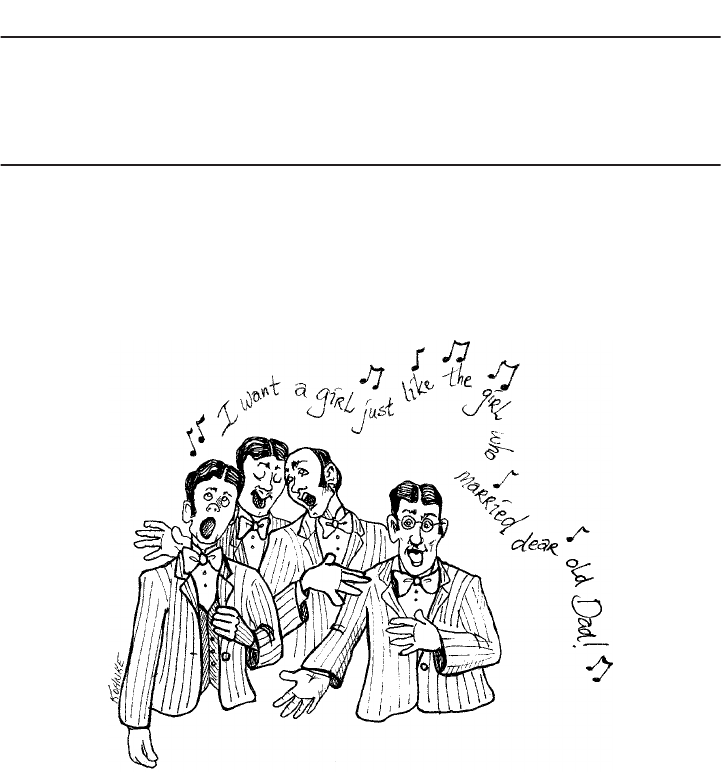
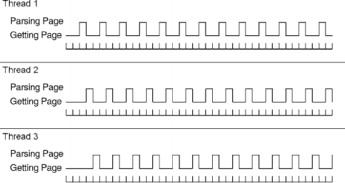

Clean Code
Robert C. Martin Series
The mission of this series is to improve the state of the art of software craftsmanship.
The books in this series are technical, pragmatic, and substantial. The authors are
highly experienced craftsmen and professionals dedicated to writing about what
actually works in practice, as opposed to what might work in theory. You will read
about what the author has done, not what he thinks you should do. If the book is
about programming, there will be lots of code. If the book is about managing, there
will be lots of case studies from real projects.
These are the books that all serious practitioners will have on their bookshelves.
These are the books that will be remembered for making a difference and for guiding
professionals to become true craftsman.
Managing Agile Projects
Sanjiv Augustine
Agile Estimating and Planning
Mike Cohn
Working Effectively with Legacy Code
Michael C. Feathers
Agile Java™: Crafting Code with Test-Driven Development
Jeff Langr
Agile Principles, Patterns, and Practices in C#
Robert C. Martin and Micah Martin
Agile Software Development: Principles, Patterns, and Practices
Robert C. Martin
Clean Code: A Handbook of Agile Software Craftsmanship
Robert C. Martin
UML For Java™ Programmers
Robert C. Martin
Fit for Developing Software: Framework for Integrated Tests
Rick Mugridge and Ward Cunningham
Agile Software Development with SCRUM
Ken Schwaber and Mike Beedle
Extreme Software Engineering: A Hands on Approach
Daniel H. Steinberg and Daniel W. Palmer
For more information, visit informit.com/martinseries
Clean Code
A Handbook of Agile
Software Craftsmanship
The Object Mentors:
Robert C. Martin
Michael C. Feathers Timothy R. Ottinger
Jeffrey J. Langr Brett L. Schuchert
James W. Grenning Kevin Dean Wampler
Object Mentor Inc.
Writing clean code is what you must do in order to call yourself a professional.
There is no reasonable excuse for doing anything less than your best.
Upper Saddle River, NJ • Boston • Indianapolis • San Francisco
New York • Toronto • Montreal • London • Munich • Paris • Madrid
Capetown • Sydney • Tokyo • Singapore • Mexico City
Many of the designations used by manufacturers and sellers to distinguish their products are claimed as
trademarks. Where those designations appear in this book, and the publisher was aware of a trademark claim,
the designations have been printed with initial capital letters or in all capitals.
The authors and publisher have taken care in the preparation of this book, but make no expressed or
implied warranty of any kind and assume no responsibility for errors or omissions. No liability is assumed
for incidental or consequential damages in connection with or arising out of the use of the information or
programs contained herein.
The publisher offers excellent discounts on this book when ordered in quantity for bulk purchases or
special sales, which may include electronic versions and/or custom covers and content particular to your
business, training goals, marketing focus, and branding interests. For more information, please contact:
U.S. Corporate and Government Sales
(800) 382-3419
corpsales@pearsontechgroup.com
For sales outside the United States please contact:
International Sales
international@pearsoned.com
Includes bib
liographical references and index.
ISBN 0-13-235088-2 (pbk. : alk. paper)
1. Agile software development. 2. Computer software—Reliability. I. Title.
QA76.76.D47M3652 2008
005.1—dc22 2008024750
Cop
yright © 2009 Pearson Education, Inc.
All rights reserved. Printed in the United States of America. This publication is protected by copyright,
and permission must be obtained from the publisher prior to any prohibited reproduction, storage in a
retrieval system, or transmission in any form or by any means, electronic, mechanical, photocopying,
recording, or likewise. For information regarding permissions, write to:
Pearson Education, Inc
Rights and Contracts Department
501 Boylston Street, Suite 900
Boston, MA 02116
Fax: (617) 671-3447
ISBN-13: 978-0-13-235088-4
ISBN-10: 0-13-235088-2
Text printed in the United States on recycled paper at Courier in Stoughton, Massachusetts.
First printing July, 2008
For Ann Marie: The ever enduring love of my life.
This page intentionally left blank
vii
Contents
Foreword................................................................................................ xix
Introduction ..........................................................................................xxv
On the Cover
....................................................................................... xxix
Chapter 1: Clean Code........................................................................1
There Will Be Code ...............................................................................2
Bad Code................................................................................................3
The Total Cost of Owning a Mess ........................................................4
The Grand Redesign in the Sky..........................................................5
Attitude...............................................................................................5
The Primal Conundrum......................................................................6
The Art of Clean Code?......................................................................6
What Is Clean Code?..........................................................................7
Schools of Thought ..............................................................................12
We Are Authors....................................................................................13
The Boy Scout Rule.............................................................................14
Prequel and Principles........................................................................15
Conclusion............................................................................................15
Bibliography.........................................................................................15
Chapter 2: Meaningful Names
.......................................................17
Introduction .........................................................................................17
Use Intention-Revealing Names .........................................................18
Avoid Disinformation ..........................................................................19
Make Meaningful Distinctions...........................................................20
Use Pronounceable Names..................................................................21
Use Searchable Names ........................................................................22
viii Contents
Avoid Encodings ..................................................................................23
Hungarian Notation ..........................................................................23
Member Prefixes...............................................................................24
Interfaces and Implementations .......................................................24
Avoid Mental Mapping .......................................................................25
Class Names .........................................................................................25
Method Names.....................................................................................25
Don’t Be Cute ......................................................................................26
Pick One Word per Concept...............................................................26
Don’t Pun .............................................................................................26
Use Solution Domain Names ..............................................................27
Use Problem Domain Names..............................................................27
Add Meaningful Context ....................................................................27
Don’t Add Gratuitous Context ...........................................................29
Final Words ..........................................................................................30
Chapter 3: Functions
.........................................................................31
Small!....................................................................................................34
Blocks and Indenting........................................................................35
Do One Thing.......................................................................................35
Sections within Functions ................................................................36
One Level of Abstraction per Function .............................................36
Reading Code from Top to Bottom: The Stepdown Rule..................37
Switch Statements ...............................................................................37
Use Descriptive Names........................................................................39
Function Arguments............................................................................40
Common Monadic Forms.................................................................41
Flag Arguments ................................................................................41
Dyadic Functions..............................................................................42
Triads................................................................................................42
Argument Objects.............................................................................43
Argument Lists.................................................................................43
Verbs and Keywords.........................................................................43
Have No Side Effects ...........................................................................44
Output Arguments ............................................................................45
Command Query Separation .............................................................45
ixContents
Prefer Exceptions to Returning Error Codes ...................................46
Extract Try/Catch Blocks .................................................................46
Error Handling Is One Thing............................................................47
The
Error.java
Dependency Magnet .............................................47
Don’t Repeat Yourself .........................................................................48
Structured Programming ...................................................................48
How Do You Write Functions Like This? ..........................................49
Conclusion............................................................................................49
SetupTeardownIncluder
.....................................................................50
Bibliography.........................................................................................52
Chapter 4: Comments
.......................................................................53
Comments Do Not Make Up for Bad Code.......................................55
Explain Yourself in Code ....................................................................55
Good Comments..................................................................................55
Legal Comments...............................................................................55
Informative Comments.....................................................................56
Explanation of Intent........................................................................56
Clarification......................................................................................57
Warning of Consequences................................................................58
TODO Comments.............................................................................58
Amplification....................................................................................59
Javadocs in Public APIs....................................................................59
Bad Comments ....................................................................................59
Mumbling .........................................................................................59
Redundant Comments ......................................................................60
Misleading Comments......................................................................63
Mandated Comments........................................................................63
Journal Comments............................................................................63
Noise Comments ..............................................................................64
Scary Noise ......................................................................................66
Don’t Use a Comment When You Can Use a
Function or a Variable.......................................................................67
Position Markers...............................................................................67
Closing Brace Comments.................................................................67
Attributions and Bylines...................................................................68
x Contents
Commented-Out Code......................................................................68
HTML Comments ............................................................................69
Nonlocal Information .......................................................................69
Too Much Information .....................................................................70
Inobvious Connection.......................................................................70
Function Headers..............................................................................70
Javadocs in Nonpublic Code ............................................................71
Example............................................................................................71
Bibliography.........................................................................................74
Chapter 5: Formatting
......................................................................75
The Purpose of Formatting ................................................................76
Vertical Formatting .............................................................................76
The Newspaper Metaphor ................................................................77
Vertical Openness Between Concepts ..............................................78
Vertical Density................................................................................79
Vertical Distance ..............................................................................80
Vertical Ordering..............................................................................84
Horizontal Formatting........................................................................85
Horizontal Openness and Density ....................................................86
Horizontal Alignment.......................................................................87
Indentation........................................................................................88
Dummy Scopes.................................................................................90
Team Rules...........................................................................................90
Uncle Bob’s Formatting Rules............................................................90
Chapter 6: Objects and Data Structures
....................................93
Data Abstraction..................................................................................93
Data/Object Anti-Symmetry ..............................................................95
The Law of Demeter............................................................................97
Train Wrecks ....................................................................................98
Hybrids .............................................................................................99
Hiding Structure ...............................................................................99
Data Transfer Objects.......................................................................100
Active Record.................................................................................101
Conclusion..........................................................................................101
Bibliography.......................................................................................101
xiContents
Chapter 7: Error Handling
...........................................................103
Use Exceptions Rather Than Return Codes ...................................104
Write Your
Try-Catch-Finally
Statement First .......................105
Use Unchecked Exceptions...............................................................106
Provide Context with Exceptions.....................................................107
Define Exception Classes in Terms of a Caller’s Needs..................107
Define the Normal Flow ....................................................................109
Don’t Return Null..............................................................................110
Don’t Pass Null ..................................................................................111
Conclusion..........................................................................................112
Bibliography.......................................................................................112
Chapter 8: Boundaries....................................................................113
Using Third-Party Code....................................................................114
Exploring and Learning Boundaries...............................................116
Learning
log4j
.................................................................................116
Learning Tests Are Better Than Free...............................................118
Using Code That Does Not Yet Exist................................................118
Clean Boundaries ..............................................................................120
Bibliography.......................................................................................120
Chapter 9: Unit Tests .......................................................................121
The Three Laws of TDD ...................................................................122
Keeping Tests Clean ..........................................................................123
Tests Enable the -ilities...................................................................124
Clean Tests .........................................................................................124
Domain-Specific Testing Language................................................127
A Dual Standard .............................................................................127
One Assert per Test ...........................................................................130
Single Concept per Test..................................................................131
F.I.R.S.T..............................................................................................132
Conclusion..........................................................................................133
Bibliography.......................................................................................133
Chapter 10: Classes..........................................................................135
Class Organization ............................................................................136
Encapsulation .................................................................................136
xii Contents
Classes Should Be Small!..................................................................136
The Single Responsibility Principle...............................................138
Cohesion.........................................................................................140
Maintaining Cohesion Results in Many Small Classes..................141
Organizing for Change .....................................................................147
Isolating from Change....................................................................149
Bibliography.......................................................................................151
Chapter 11: Systems ........................................................................153
How Would You Build a City? ..........................................................154
Separate Constructing a System from Using It..............................154
Separation of Main .........................................................................155
Factories .........................................................................................155
Dependency Injection.....................................................................157
Scaling Up ..........................................................................................157
Cross-Cutting Concerns .................................................................160
Java Proxies........................................................................................161
Pure Java AOP Frameworks.............................................................163
AspectJ Aspects .................................................................................166
Test Drive the System Architecture..................................................166
Optimize Decision Making ...............................................................167
Use Standards Wisely, When They Add Demonstrable Value.........168
Systems Need Domain-Specific Languages.....................................168
Conclusion..........................................................................................169
Bibliography.......................................................................................169
Chapter 12: Emergence ..................................................................171
Getting Clean via Emergent Design ................................................171
Simple Design Rule 1: Runs All the Tests........................................172
Simple Design Rules 2–4: Refactoring ............................................172
No Duplication...................................................................................173
Expressive...........................................................................................175
Minimal Classes and Methods .........................................................176
Conclusion..........................................................................................176
Bibliography.......................................................................................176
Chapter 13: Concurrency ..............................................................177
Why Concurrency? ...........................................................................178
Myths and Misconceptions.............................................................179
xiiiContents
Challenges ..........................................................................................180
Concurrency Defense Principles......................................................180
Single Responsibility Principle ......................................................181
Corollary: Limit the Scope of Data ................................................181
Corollary: Use Copies of Data .......................................................181
Corollary: Threads Should Be as Independent as Possible ............182
Know Your Library ...........................................................................182
Thread-Safe Collections.................................................................182
Know Your Execution Models ..........................................................183
Producer-Consumer........................................................................184
Readers-Writers..............................................................................184
Dining Philosophers .......................................................................184
Beware Dependencies Between Synchronized Methods ................185
Keep Synchronized Sections Small..................................................185
Writing Correct Shut-Down Code Is Hard.....................................186
Testing Threaded Code .....................................................................186
Treat Spurious Failures as Candidate Threading Issues .................187
Get Your Nonthreaded Code Working First....................................187
Make Your Threaded Code Pluggable ............................................187
Make Your Threaded Code Tunable................................................187
Run with More Threads Than Processors.......................................188
Run on Different Platforms ............................................................188
Instrument Your Code to Try and Force Failures............................188
Hand-Coded ...................................................................................189
Automated ......................................................................................189
Conclusion..........................................................................................190
Bibliography.......................................................................................191
Chapter 14: Successive Refinement............................................193
Args Implementation ........................................................................194
How Did I Do This? .......................................................................200
Args: The Rough Draft .....................................................................201
So I Stopped ...................................................................................212
On Incrementalism .........................................................................212
String Arguments ..............................................................................214
Conclusion.........................................................................................250
xiv Contents
Chapter 15: JUnit Internals..........................................................251
The JUnit Framework.......................................................................252
Conclusion..........................................................................................265
Chapter 16: Refactoring
SerialDate
.........................................267
First, Make It Work...........................................................................268
Then Make It Right...........................................................................270
Conclusion..........................................................................................284
Bibliography.......................................................................................284
Chapter 17: Smells and Heuristics .............................................285
Comments ..........................................................................................286
C1: Inappropriate Information.......................................................286
C2: Obsolete Comment...................................................................286
C3: Redundant Comment ...............................................................286
C4: Poorly Written Comment..........................................................287
C5: Commented-Out Code .............................................................287
Environment ......................................................................................287
E1: Build Requires More Than One Step........................................287
E2: Tests Require More Than One Step ..........................................287
Functions............................................................................................288
F1: Too Many Arguments................................................................288
F2: Output Arguments ....................................................................288
F3: Flag Arguments ........................................................................288
F4: Dead Function .........................................................................288
General...............................................................................................288
G1: Multiple Languages in One Source File..................................288
G2: Obvious Behavior Is Unimplemented......................................288
G3: Incorrect Behavior at the Boundaries .....................................289
G4: Overridden Safeties .................................................................289
G5: Duplication..............................................................................289
G6: Code at Wrong Level of Abstraction........................................290
G7: Base Classes Depending on Their Derivatives .......................291
G8: Too Much Information .............................................................291
G9: Dead Code...............................................................................292
G10: Vertical Separation ................................................................292
G11: Inconsistency .........................................................................292
G12: Clutter....................................................................................293
xvContents
G13: Artificial Coupling.................................................................293
G14: Feature Envy..........................................................................293
G15: Selector Arguments................................................................294
G16: Obscured Intent .....................................................................295
G17: Misplaced Responsibility.......................................................295
G18: Inappropriate Static...............................................................296
G19: Use Explanatory Variables ....................................................296
G20: Function Names Should Say What They Do ..........................297
G21: Understand the Algorithm .....................................................297
G22: Make Logical Dependencies Physical...................................298
G23: Prefer Polymorphism to If/Else or Switch/Case ....................299
G24: Follow Standard Conventions................................................299
G25: Replace Magic Numbers with Named Constants ..................300
G26: Be Precise..............................................................................301
G27: Structure over Convention.....................................................301
G28: Encapsulate Conditionals .....................................................301
G29: Avoid Negative Conditionals .................................................302
G30: Functions Should Do One Thing ...........................................302
G31: Hidden Temporal Couplings..................................................302
G32: Don’t Be Arbitrary .................................................................303
G33: Encapsulate Boundary Conditions........................................304
G34: Functions Should Descend Only
One Level of Abstraction ................................................................304
G35: Keep Configurable Data at High Levels................................306
G36: Avoid Transitive Navigation...................................................306
Java .....................................................................................................307
J1: Avoid Long Import Lists by Using Wildcards............................307
J2: Don’t Inherit Constants ............................................................307
J3: Constants versus Enums ...........................................................308
Names .................................................................................................309
N1: Choose Descriptive Names......................................................309
N2: Choose Names at the Appropriate Level of Abstraction..........311
N3: Use Standard Nomenclature Where Possible...........................311
N4: Unambiguous Names...............................................................312
N5: Use Long Names for Long Scopes...........................................312
N6: A
void Encodings ......................................................................312
N7: Names Should Describe Side-Effects. .....................................313
xvi Contents
Tests ....................................................................................................313
T1: Insufficient Tests .......................................................................313
T2: Use a Coverage Tool!...............................................................313
T3: Don’t Skip Trivial Tests ............................................................313
T4: An Ignored Test Is a Question about an Ambiguity ..................313
T5: Test Boundary Conditions ........................................................314
T6: Exhaustively Test Near Bugs....................................................314
T7: Patterns of Failure Are Revealing ............................................314
T8: Test Coverage Patterns Can Be Revealing ...............................314
T9: Tests Should Be Fast.................................................................314
Conclusion..........................................................................................314
Bibliography.......................................................................................315
Appendix A: Concurrency II.........................................................317
Client/Server Example......................................................................317
The Server ......................................................................................317
Adding Threading...........................................................................319
Server Observations .......................................................................319
Conclusion......................................................................................321
Possible Paths of Execution ..............................................................321
Number of Paths.............................................................................322
Digging Deeper ..............................................................................323
Conclusion......................................................................................326
Knowing Your Library......................................................................326
Executor Framework ......................................................................326
Nonblocking Solutions...................................................................327
Nonthread-Safe Classes..................................................................328
Dependencies Between Methods
Can Break Concurrent Code ...........................................................329
Tolerate the Failure.........................................................................330
Client-Based Locking.....................................................................330
Server-Based Locking ....................................................................332
Increasing Throughput .....................................................................333
Single-Thread Calculation of Throughput......................................334
Multithread Calculation of Throughput..........................................335
Deadlock.............................................................................................335
Mutual Exclusion ...........................................................................336
Lock & Wait ...................................................................................337
xviiContents
No Preemption................................................................................337
Circular Wait ..................................................................................337
Breaking Mutual Exclusion............................................................337
Breaking Lock & Wait....................................................................338
Breaking Preemption......................................................................338
Breaking Circular Wait...................................................................338
Testing Multithreaded Code.............................................................339
Tool Support for Testing Thread-Based Code ................................342
Conclusion..........................................................................................342
Tutorial: Full Code Examples ..........................................................343
Client/Server Nonthreaded.............................................................343
Client/Server Using Threads ..........................................................346
Appendix B: org.jfree.date.SerialDate ......................................349
Appendix C: Cross References of Heuristics...........................409
Epilogue................................................................................................411
Index ......................................................................................................413
This page intentionally left blank
xix
Foreword
One of our favorite candies here in Denmark is Ga-Jol, whose strong licorice vapors are a
perfect complement to our damp and often chilly weather. Part of the charm of Ga-Jol to
us Danes is the wise or witty sayings printed on the flap of every box top. I bought a two-
pack of the delicacy this morning and found that it bore this old Danish saw:
Ærlighed i små ting er ikke nogen lille ting.
“Honesty in small things is not a small thing.” It was a good omen consistent with what I
already wanted to say here. Small things matter. This is a book about humble concerns
whose value is nonetheless far from small.
God is in the details, said the architect Ludwig mies van der Rohe. This quote recalls
contemporary arguments about the role of architecture in software development, and par-
ticularly in the Agile world. Bob and I occasionally find ourselves passionately engaged in
this dialogue. And yes, mies van der Rohe was attentive to utility and to the timeless forms
of building that underlie great architecture. On the other hand, he also personally selected
every doorknob for every house he designed. Why? Because small things matter.
In our ongoing “debate” on TDD, Bob and I have discovered that we agree that soft-
ware architecture has an important place in development, though we likely have different
visions of exactly what that means. Such quibbles are relatively unimportant, however,
because we can accept for granted that responsible professionals give some time to think-
ing and planning at the outset of a project. The late-1990s notions of design driven only by
the tests and the code are long gone. Yet attentiveness to detail is an even more critical
foundation of professionalism than is any grand vision. First, it is through practice in the
small that professionals gain proficiency and trust for practice in the large. Second, the
smallest bit of sloppy construction, of the door that does not close tightly or the slightly
crooked tile on the floor, or even the messy desk, completely dispels the charm of the
larger whole. That is what clean code is about.
Still, architecture is just one metaphor for software development, and in particular for
that part of software that delivers the initial product in the same sense that an architect
delivers a pristine building. In these days of Scrum and Agile, the focus is on quickly
bringing product to market. We want the factory running at top speed to produce software.
These are human factories: thinking, feeling coders who are working from a product back-
log or user story to create product. The manufacturing metaphor looms ever strong in such
thinking. The production aspects of Japanese auto manufacturing, of an assembly-line
world, inspire much of Scrum.
xx Foreword
Yet even in the auto industry, the bulk of the work lies not in manufacturing but in
maintenance—or its avoidance. In software, 80% or more of what we do is quaintly called
“maintenance”: the act of repair. Rather than embracing the typical Western focus on pro-
ducing good software, we should be thinking more like home repairmen in the building
industry, or auto mechanics in the automotive field. What does Japanese management have
to say about that?
In about 1951, a quality approach called Total Productive Maintenance (TPM) came
on the Japanese scene. Its focus is on maintenance rather than on production. One of the
major pillars of TPM is the set of so-called 5S principles. 5S is a set of disciplines—and
here I use the term “discipline” instructively. These 5S principles are in fact at the founda-
tions of Lean—another buzzword on the Western scene, and an increasingly prominent
buzzword in software circles. These principles are not an option. As Uncle Bob relates in
his front matter, good software practice requires such discipline: focus, presence of mind,
and thinking. It is not always just about doing, about pushing the factory equipment to pro-
duce at the optimal velocity. The 5S philosophy comprises these concepts:
• Seiri, or organization (think “sort” in English). Knowing where things are—using
approaches such as suitable naming—is crucial. You think naming identifiers isn’t
important? Read on in the following chapters.
• Seiton, or tidiness (think “systematize” in English). There is an old American saying:
A place for everything, and everything in its place. A piece of code should be where
you expect to find it—and, if not, you should re-factor to get it there.
• Seiso, or cleaning (think “shine” in English): Keep the workplace free of hanging
wires, grease, scraps, and waste. What do the authors here say about littering your
code with comments and commented-out code lines that capture history or wishes for
the future? Get rid of them.
• Seiketsu, or standardization: The group agrees about how to keep the workplace clean.
Do you think this book says anything about having a consistent coding style and set of
practices within the group? Where do those standards come from? Read on.
• Shutsuke, or discipline (self-discipline). This means having the discipline to follow the
practices and to frequently reflect on one’s work and be willing to change.
If you take up the challenge—yes, the challenge—of reading and applying this book,
you’ll come to understand and appreciate the last point. Here, we are finally driving to the
roots of responsible professionalism in a profession that should be concerned with the life
cycle of a product. As we maintain automobiles and other machines under TPM, break-
down maintenance—waiting for bugs to surface—is the exception. Instead, we go up a
level: inspect the machines every day and fix wearing parts before they break, or do the
equivalent of the proverbial 10,000-mile oil change to forestall wear and tear. In code,
refactor mercilessly. You can improve yet one level further, as the TPM movement inno-
vated over 50 years ago: build machines that are more maintainable in the first place. Mak-
ing your code readable is as important as making it executable. The ultimate practice,
introduced in TPM circles around 1960, is to focus on introducing entire new machines or
xxiForeword
replacing old ones. As Fred Brooks admonishes us, we should probably re-do major soft-
ware chunks from scratch every seven years or so to sweep away creeping cruft. Perhaps
we should update Brooks’ time constant to an order of weeks, days or hours instead of
years. That’s where detail lies.
There is great power in detail, yet there is something humble and profound about this
approach to life, as we might stereotypically expect from any approach that claims Japa-
nese roots. But this is not only an Eastern outlook on life; English and American folk wis-
dom are full of such admonishments. The Seiton quote from above flowed from the pen of
an Ohio minister who literally viewed neatness “as a remedy for every degree of evil.”
How about Seiso? Cleanliness is next to godliness. As beautiful as a house is, a messy
desk robs it of its splendor. How about Shutsuke in these small matters? He who is faithful
in little is faithful in much. How about being eager to re-factor at the responsible time,
strengthening one’s position for subsequent “big” decisions, rather than putting it off? A
stitch in time saves nine. The early bird catches the worm. Don’t put off until tomorrow
what you can do today. (Such was the original sense of the phrase “the last responsible
moment” in Lean until it fell into the hands of software consultants.) How about calibrat-
ing the place of small, individual efforts in a grand whole? Mighty oaks from little acorns
grow. Or how about integrating simple preventive work into everyday life? An ounce of
prevention is worth a pound of cure. An apple a day keeps the doctor away. Clean code
honors the deep roots of wisdom beneath our broader culture, or our culture as it once was,
or should be, and can be with attentiveness to detail.
Even in the grand architectural literature we find saws that hark back to these sup-
posed details. Think of mies van der Rohe’s doorknobs. That’s seiri. That’s being attentive
to every variable name. You should name a variable using the same care with which you
name a first-born child.
As every homeowner knows, such care and ongoing refinement never come to an end.
The architect Christopher Alexander—father of patterns and pattern languages—views
every act of design itself as a small, local act of repair. And he views the craftsmanship of
fine structure to be the sole purview of the architect; the larger forms can be left to patterns
and their application by the inhabitants. Design is ever ongoing not only as we add a new
room to a house, but as we are attentive to repainting, replacing worn carpets, or upgrad-
ing the kitchen sink. Most arts echo analogous sentiments. In our search for others who
ascribe God’s home as being in the details, we find ourselves in the good company of the
19th century French author Gustav Flaubert. The French poet Paul Valery advises us that a
poem is never done and bears continual rework, and to stop working on it is abandonment.
Such preoccupation with detail is common to all endeavors of excellence. So maybe there
is little new here, but in reading this book you will be challenged to take up good disci-
plines that you long ago surrendered to apathy or a desire for spontaneity and just
“responding to change.”
Unfortunately, we usually don’t view such concerns as key cornerstones of the art of
programming. We abandon our code early, not because it is done, but because our value
system focuses more on outward appearance than on the substance of what we deliver.
xxii Foreword
This inattentiveness costs us in the end: A bad penny always shows up. Research, neither in
industry nor in academia, humbles itself to the lowly station of keeping code clean. Back
in my days working in the Bell Labs Software Production Research organization (Produc-
tion, indeed!) we had some back-of-the-envelope findings that suggested that consistent
indentation style was one of the most statistically significant indicators of low bug density.
We want it to be that architecture or programming language or some other high notion
should be the cause of quality; as people whose supposed professionalism owes to the
mastery of tools and lofty design methods, we feel insulted by the value that those factory-
floor machines, the coders, add through the simple consistent application of an indentation
style. To quote my own book of 17 years ago, such style distinguishes excellence from
mere competence. The Japanese worldview understands the crucial value of the everyday
worker and, more so, of the systems of development that owe to the simple, everyday
actions of those workers. Quality is the result of a million selfless acts of care—not just of
any great method that descends from the heavens. That these acts are simple doesn’t mean
that they are simplistic, and it hardly means that they are easy. They are nonetheless the
fabric of greatness and, more so, of beauty, in any human endeavor. To ignore them is not
yet to be fully human.
Of course, I am still an advocate of thinking at broader scope, and particularly of the
value of architectural approaches rooted in deep domain knowledge and software usability.
The book isn’t about that—or, at least, it isn’t obviously about that. This book has a subtler
message whose profoundness should not be underappreciated. It fits with the current saw
of the really code-based people like Peter Sommerlad, Kevlin Henney and Giovanni
Asproni. “The code is the design” and “Simple code” are their mantras. While we must
take care to remember that the interface is the program, and that its structures have much
to say about our program structure, it is crucial to continuously adopt the humble stance
that the design lives in the code. And while rework in the manufacturing metaphor leads to
cost, rework in design leads to value. We should view our code as the beautiful articulation
of noble efforts of design—design as a process, not a static endpoint. It’s in the code that
the architectural metrics of coupling and cohesion play out. If you listen to Larry Constan-
tine describe coupling and cohesion, he speaks in terms of code—not lofty abstract con-
cepts that one might find in UML. Richard Gabriel advises us in his essay, “Abstraction
Descant” that abstraction is evil. Code is anti-evil, and clean code is perhaps divine.
Going back to my little box of Ga-Jol, I think it’s important to note that the Danish
wisdom advises us not just to pay attention to small things, but also to be honest in small
things. This means being honest to the code, honest to our colleagues about the state of our
code and, most of all, being honest with ourselves about our code. Did we Do our Best to
“leave the campground cleaner than we found it”? Did we re-factor our code before check-
ing in? These are not peripheral concerns but concerns that lie squarely in the center of
Agile values. It is a recommended practice in Scrum that re-factoring be part of the con-
cept of “Done.” Neither architecture nor clean code insist on perfection, only on honesty
and doing the best we can. To err is human; to forgive, divine. In Scrum, we make every-
thing visible. We air our dirty laundry. We are honest about the state of our code because
xxiiiForeword
code is never perfect. We become more fully human, more worthy of the divine, and closer
to that greatness in the details.
In our profession, we desperately need all the help we can get. If a clean shop floor
reduces accidents, and well-organized shop tools increase productivity, then I’m all for
them. As for this book, it is the best pragmatic application of Lean principles to software I
have ever seen in print. I expected no less from this practical little group of thinking indi-
viduals that has been striving together for years not only to become better, but also to gift
their knowledge to the industry in works such as you now find in your hands. It leaves the
world a little better than I found it before Uncle Bob sent me the manuscript.
Having completed this exercise in lofty insights, I am off to clean my desk.
James O. Coplien
Mørdrup, Denmark
This page intentionally left blank
xxv
Introduction
Which door represents your code? Which door represents your team or your company?
Why are we in that room? Is this just a normal code review or have we found a stream of
horrible problems shortly after going live? Are we debugging in a panic, poring over code
that we thought worked? Are customers leaving in droves and managers breathing down
Reproduced with the kind permission of Thom Holwerda.
http://www.osnews.com/story/19266/WTFs_m
(c) 2008 Focus Shift
xxvi Introduction
our necks? How can we make sure we wind up behind the right door when the going gets
tough? The answer is: craftsmanship.
There are two parts to learning craftsmanship: knowledge and work. You must gain
the knowledge of principles, patterns, practices, and heuristics that a craftsman knows, and
you must also grind that knowledge into your fingers, eyes, and gut by working hard and
practicing.
I can teach you the physics of riding a bicycle. Indeed, the classical mathematics is
relatively straightforward. Gravity, friction, angular momentum, center of mass, and so
forth, can be demonstrated with less than a page full of equations. Given those formulae I
could prove to you that bicycle riding is practical and give you all the knowledge you
needed to make it work. And you’d still fall down the first time you climbed on that bike.
Coding is no different. We could write down all the “feel good” principles of clean
code and then trust you to do the work (in other words, let you fall down when you get on
the bike), but then what kind of teachers would that make us, and what kind of student
would that make you?
No. That’s not the way this book is going to work.
Learning to write clean code is hard work. It requires more than just the knowledge of
principles and patterns. You must sweat over it. You must practice it yourself, and watch
yourself fail. You must watch others practice it and fail. You must see them stumble and
retrace their steps. You must see them agonize over decisions and see the price they pay for
making those decisions the wrong way.
Be prepared to work hard while reading this book. This is not a “feel good” book that
you can read on an airplane and finish before you land. This book will make you work, and
work hard. What kind of work will you be doing? You’ll be reading code—lots of code.
And you will be challenged to think about what’s right about that code and what’s wrong
with it. You’ll be asked to follow along as we take modules apart and put them back
together again. This will take time and effort; but we think it will be worth it.
We have divided this book into three parts. The first several chapters describe the prin-
ciples, patterns, and practices of writing clean code. There is quite a bit of code in these
chapters, and they will be challenging to read. They’ll prepare you for the second section
to come. If you put the book down after reading the first section, good luck to you!
The second part of the book is the harder work. It consists of several case studies of
ever-increasing complexity. Each case study is an exercise in cleaning up some code—of
transforming code that has some problems into code that has fewer problems. The detail in
this section is intense. You will have to flip back and forth between the narrative and the
code listings. You will have to analyze and understand the code we are working with and
walk through our reasoning for making each change we make. Set aside some time
because this should take you days.
The third part of this book is the payoff. It is a single chapter containing a list of heu-
ristics and smells gathered while creating the case studies. As we walked through and
cleaned up the code in the case studies, we documented every reason for our actions as a
xxviiIntroduction
heuristic or smell. We tried to understand our own reactions to the code we were reading
and changing, and worked hard to capture why we felt what we felt and did what we did.
The result is a knowledge base that desribes the way we think when we write, read, and
clean code.
This knowledge base is of limited value if you don’t do the work of carefully reading
through the case studies in the second part of this book. In those case studies we have care-
fully annotated each change we made with forward references to the heuristics. These for-
ward references appear in square brackets like this: [H22]. This lets you see the context in
which those heuristics were applied and written! It is not the heuristics themselves that are
so valuable, it is the relationship between those heuristics and the discrete decisions we
made while cleaning up the code in the case studies.
To further help you with those relationships, we have placed a cross-reference at the end
of the book that shows the page number for every forward reference. You can use it to look
up each place where a certain heuristic was applied.
If you read the first and third sections and skip over the case studies, then you will
have read yet another “feel good” book about writing good software. But if you take the
time to work through the case studies, following every tiny step, every minute decision—if
you put yourself in our place, and force yourself to think along the same paths that we
thought, then you will gain a much richer understanding of those principles, patterns, prac-
tices, and heuristics. They won’t be “feel good” knowledge any more. They’ll have been
ground into your gut, fingers, and heart. They’ll have become part of you in the same way
that a bicycle becomes an extension of your will when you have mastered how to ride it.
Acknowledgments
Artwork
Thank you to my two artists, Jeniffer Kohnke and Angela Brooks. Jennifer is responsible
for the stunning and creative pictures at the start of each chapter and also for the portraits
of Kent Beck, Ward Cunningham, Bjarne Stroustrup, Ron Jeffries, Grady Booch, Dave
Thomas, Michael Feathers, and myself.
Angela is responsible for the clever pictures that adorn the innards of each chapter.
She has done quite a few pictures for me over the years, including many of the inside pic-
tures in Agile Software Develpment: Principles, Patterns, and Practices. She is also my
firstborn in whom I am well pleased.
This page intentionally left blank
xxix
On the Cover
The image on the cover is M104: The Sombrero Galaxy. M104 is located in Virgo and is
just under 30 million light-years from us. At it’s core is a supermassive black hole weigh-
ing in at about a billion solar masses.
Does the image remind you of the explosion of the Klingon power moon Praxis? I
vividly remember the scene in Star Trek VI that showed an equatorial ring of debris flying
away from that explosion. Since that scene, the equatorial ring has been a common artifact
in sci-fi movie explosions. It was even added to the explosion of Alderaan in later editions
of the first Star Wars movie.
What caused this ring to form around M104? Why does it have such a huge central
bulge and such a bright and tiny nucleus? It looks to me as though the central black hole
lost its cool and blew a 30,000 light-year hole in the middle of the galaxy. Woe befell any
civilizations that might have been in the path of that cosmic disruption.
Supermassive black holes swallow whole stars for lunch, converting a sizeable frac-
tion of their mass to energy. E = MC
2
is leverage enough, but when M is a stellar mass:
Look out! How many stars fell headlong into that maw before the monster was satiated?
Could the size of the central void be a hint?
The image of M104 on the cover is a
combination of the famous visible light pho-
tograph from Hubble (right), and the recent
infrared image from the Spitzer orbiting
observatory (below, right). It’s the infrared
image that clearly shows us the ring nature
of the galaxy. In visible light we only see the
front edge of the ring in silhouette. The cen-
tral bulge obscures the rest of the ring.
But in the infrared, the hot particles in
the ring shine through the central bulge. The
two images combined give us a view we’ve
not seen before and imply that long ago it
was a raging inferno of activity.
Cover image: © Spitzer Space Telescope
This page intentionally left blank
2 Chapter 1: Clean Code
This is a book about good programming. It is filled with code. We are going to look at
code from every different direction. We’ll look down at it from the top, up at it from the
bottom, and through it from the inside out. By the time we are done, we’re going to know a
lot about code. What’s more, we’ll be able to tell the difference between good code and bad
code. We’ll know how to write good code. And we’ll know how to transform bad code into
good code.
There Will Be Code
One might argue that a book about code is somehow behind the times—that code is no
longer the issue; that we should be concerned about models and requirements instead.
Indeed some have suggested that we are close to the end of code. That soon all code will
be generated instead of written. That programmers simply won’t be needed because busi-
ness people will generate programs from specifications.
Nonsense! We will never be rid of code, because code represents the details of the
requirements. At some level those details cannot be ignored or abstracted; they have to be
specified. And specifying requirements in such detail that a machine can execute them is
programming. Such a specification is code.
I expect that the level of abstraction of our languages will continue to increase. I
also expect that the number of domain-specific languages will continue to grow. This
will be a good thing. But it will not eliminate code. Indeed, all the specifications written
in these higher level and domain-specific language will be code! It will still need to
be rigorous, accurate, and so formal and detailed that a machine can understand and
execute it.
The folks who think that code will one day disappear are like mathematicians who
hope one day to discover a mathematics that does not have to be formal. They are hoping
that one day we will discover a way to create machines that can do what we want rather
than what we say. These machines will have to be able to understand us so well that they
can translate vaguely specified needs into perfectly executing programs that precisely meet
those needs.
This will never happen. Not even humans, with all their intuition and creativity,
have been able to create successful systems from the vague feelings of their customers.
Indeed, if the discipline of requirements specification has taught us anything, it is that
well-specified requirements are as formal as code and can act as executable tests of that
code!
Remember that code is really the language in which we ultimately express the require-
ments. We may create languages that are closer to the requirements. We may create tools
that help us parse and assemble those requirements into formal structures. But we will
never eliminate necessary precision—so there will always be code.
3Bad Code
Bad Code
I was recently reading the preface to Kent Beck’s
book Implementation Patterns.
1
He says, “. . . this
book is based on a rather fragile premise: that
good code matters. . . .” A fragile premise? I dis-
agree! I think that premise is one of the most
robust, supported, and overloaded of all the pre-
mises in our craft (and I think Kent knows it). We
know good code matters because we’ve had to
deal for so long with its lack.
I know of one company that, in the late 80s,
wrote a killer app. It was very popular, and lots of
professionals bought and used it. But then the
release cycles began to stretch. Bugs were not
repaired from one release to the next. Load times
grew and crashes increased. I remember the day I
shut the product down in frustration and never
used it again. The company went out of business
a short time after that.
Two decades later I met one of the early employees of that company and asked him
what had happened. The answer confirmed my fears. They had rushed the product to
market and had made a huge mess in the code. As they added more and more features, the
code got worse and worse until they simply could not manage it any longer. It was the bad
code that brought the company down.
Have you ever been significantly impeded by bad code? If you are a programmer of
any experience then you’ve felt this impediment many times. Indeed, we have a name for
it. We call it wading. We wade through bad code. We slog through a morass of tangled
brambles and hidden pitfalls. We struggle to find our way, hoping for some hint, some
clue, of what is going on; but all we see is more and more senseless code.
Of course you have been impeded by bad code. So then—why did you write it?
Were you trying to go fast? Were you in a rush? Probably so. Perhaps you felt that you
didn’t have time to do a good job; that your boss would be angry with you if you took the
time to clean up your code. Perhaps you were just tired of working on this program and
wanted it to be over. Or maybe you looked at the backlog of other stuff that you had prom-
ised to get done and realized that you needed to slam this module together so you could
move on to the next. We’ve all done it.
We’ve all looked at the mess we’ve just made and then have chosen to leave it for
another day. We’ve all felt the relief of seeing our messy program work and deciding that a
1. [Beck07].
4 Chapter 1: Clean Code
working mess is better than nothing. We’ve all said we’d go back and clean it up later. Of
course, in those days we didn’t know LeBlanc’s law: Later equals never.
The Total Cost of Owning a Mess
If you have been a programmer for more than two or three years, you have probably been
significantly slowed down by someone else’s messy code. If you have been a programmer
for longer than two or three years, you have probably been slowed down by messy code.
The degree of the slowdown can be significant. Over the span of a year or two, teams that
were moving very fast at the beginning of a project can find themselves moving at a snail’s
pace. Every change they make to the code breaks two or three other parts of the code. No
change is trivial. Every addition or modification to the system requires that the tangles,
twists, and knots be “understood” so that more tangles, twists, and knots can be added.
Over time the mess becomes so big and so deep and so tall, they can not clean it up. There
is no way at all.
As the mess builds, the productivity of the team continues to decrease, asymptotically
approaching zero. As productivity decreases, management does the only thing they can;
they add more staff to the project in hopes of increasing productivity. But that new staff is
not versed in the design of the system. They don’t know the difference between a change
that matches the design intent and a change that thwarts the design intent. Furthermore,
they, and everyone else on the team, are under horrific pressure to increase productivity. So
they all make more and more messes, driving the productivity ever further toward zero.
(See Figure 1-1.)
Figure 1-1
Productivity vs. time
5The Total Cost of Owning a Mess
The Grand Redesign in the Sky
Eventually the team rebels. They inform management that they cannot continue to develop
in this odious code base. They demand a redesign. Management does not want to expend
the resources on a whole new redesign of the project, but they cannot deny that productiv-
ity is terrible. Eventually they bend to the demands of the developers and authorize the
grand redesign in the sky.
A new tiger team is selected. Everyone wants to be on this team because it’s a green-
field project. They get to start over and create something truly beautiful. But only the best
and brightest are chosen for the tiger team. Everyone else must continue to maintain the
current system.
Now the two teams are in a race. The tiger team must build a new system that does
everything that the old system does. Not only that, they have to keep up with the changes
that are continuously being made to the old system. Management will not replace the old
system until the new system can do everything that the old system does.
This race can go on for a very long time. I’ve seen it take 10 years. And by the time it’s
done, the original members of the tiger team are long gone, and the current members are
demanding that the new system be redesigned because it’s such a mess.
If you have experienced even one small part of the story I just told, then you already
know that spending time keeping your code clean is not just cost effective; it’s a matter of
professional survival.
Attitude
Have you ever waded through a mess so grave that it took weeks to do what should have
taken hours? Have you seen what should have been a one-line change, made instead in
hundreds of different modules? These symptoms are all too common.
Why does this happen to code? Why does good code rot so quickly into bad code? We
have lots of explanations for it. We complain that the requirements changed in ways that
thwart the original design. We bemoan the schedules that were too tight to do things right.
We blather about stupid managers and intolerant customers and useless marketing types
and telephone sanitizers. But the fault, dear Dilbert, is not in our stars, but in ourselves.
We are unprofessional.
This may be a bitter pill to swallow. How could this mess be our fault? What about the
requirements? What about the schedule? What about the stupid managers and the useless
marketing types? Don’t they bear some of the blame?
No. The managers and marketers look to us for the information they need to make
promises and commitments; and even when they don’t look to us, we should not be shy
about telling them what we think. The users look to us to validate the way the requirements
will fit into the system. The project managers look to us to help work out the schedule. We
6 Chapter 1: Clean Code
are deeply complicit in the planning of the project and share a great deal of the responsi-
bility for any failures; especially if those failures have to do with bad code!
“But wait!” you say. “If I don’t do what my manager says, I’ll be fired.” Probably not.
Most managers want the truth, even when they don’t act like it. Most managers want good
code, even when they are obsessing about the schedule. They may defend the schedule and
requirements with passion; but that’s their job. It’s your job to defend the code with equal
passion.
To drive this point home, what if you were a doctor and had a patient who demanded
that you stop all the silly hand-washing in preparation for surgery because it was taking
too much time?
2
Clearly the patient is the boss; and yet the doctor should absolutely refuse
to comply. Why? Because the doctor knows more than the patient about the risks of dis-
ease and infection. It would be unprofessional (never mind criminal) for the doctor to
comply with the patient.
So too it is unprofessional for programmers to bend to the will of managers who don’t
understand the risks of making messes.
The Primal Conundrum
Programmers face a conundrum of basic values. All developers with more than a few years
experience know that previous messes slow them down. And yet all developers feel
the pressure to make messes in order to meet deadlines. In short, they don’t take the time
to go fast!
True professionals know that the second part of the conundrum is wrong. You will not
make the deadline by making the mess. Indeed, the mess will slow you down instantly, and
will force you to miss the deadline. The only way to make the deadline—the only way to
go fast—is to keep the code as clean as possible at all times.
The Art of Clean Code?
Let’s say you believe that messy code is a significant impediment. Let’s say that you accept
that the only way to go fast is to keep your code clean. Then you must ask yourself: “How
do I write clean code?” It’s no good trying to write clean code if you don’t know what it
means for code to be clean!
The bad news is that writing clean code is a lot like painting a picture. Most of us
know when a picture is painted well or badly. But being able to recognize good art from
bad does not mean that we know how to paint. So too being able to recognize clean code
from dirty code does not mean that we know how to write clean code!
2. When hand-washing was first recommended to physicians by Ignaz Semmelweis in 1847, it was rejected on the basis that
doctors were too busy and wouldn’t have time to wash their hands between patient visits.
7The Total Cost of Owning a Mess
Writing clean code requires the disciplined use of a myriad little techniques applied
through a painstakingly acquired sense of “cleanliness.” This “code-sense” is the key.
Some of us are born with it. Some of us have to fight to acquire it. Not only does it let us
see whether code is good or bad, but it also shows us the strategy for applying our disci-
pline to transform bad code into clean code.
A programmer without “code-sense” can look at a messy module and recognize the
mess but will have no idea what to do about it. A programmer with “code-sense” will look
at a messy module and see options and variations. The “code-sense” will help that pro-
grammer choose the best variation and guide him or her to plot a sequence of behavior
preserving transformations to get from here to there.
In short, a programmer who writes clean code is an artist who can take a blank screen
through a series of transformations until it is an elegantly coded system.
What Is Clean Code?
There are probably as many definitions as there are programmers. So I asked some very
well-known and deeply experienced programmers what they thought.
Bjarne Stroustrup, inventor of C++
and author of The C++ Programming
Language
I like my code to be elegant and efficient. The
logic should be straightforward to make it hard
for bugs to hide, the dependencies minimal to
ease maintenance, error handling complete
according to an articulated strategy, and per-
formance close to optimal so as not to tempt
people to make the code messy with unprinci-
pled optimizations. Clean code does one thing
well.
Bjarne uses the word “elegant.” That’s
quite a word! The dictionary in my MacBook
®
provides the following definitions: pleasingly
graceful and stylish in appearance or manner; pleasingly ingenious and simple. Notice the
emphasis on the word “pleasing.” Apparently Bjarne thinks that clean code is pleasing to
read. Reading it should make you smile the way a well-crafted music box or well-designed
car would.
Bjarne also mentions efficiency—twice. Perhaps this should not surprise us coming
from the inventor of C++; but I think there’s more to it than the sheer desire for speed.
Wasted cycles are inelegant, they are not pleasing. And now note the word that Bjarne uses
8 Chapter 1: Clean Code
to describe the consequence of that inelegance. He uses the word “tempt.” There is a deep
truth here. Bad code tempts the mess to grow! When others change bad code, they tend to
make it worse.
Pragmatic Dave Thomas and Andy Hunt said this a different way. They used the meta-
phor of broken windows.
3
A building with broken windows looks like nobody cares about
it. So other people stop caring. They allow more windows to become broken. Eventually
they actively break them. They despoil the facade with graffiti and allow garbage to col-
lect. One broken window starts the process toward decay.
Bjarne also mentions that error handing should be complete. This goes to the disci-
pline of paying attention to details. Abbreviated error handling is just one way that pro-
grammers gloss over details. Memory leaks are another, race conditions still another.
Inconsistent naming yet another. The upshot is that clean code exhibits close attention to
detail.
Bjarne closes with the assertion that clean code does one thing well. It is no accident
that there are so many principles of software design that can be boiled down to this simple
admonition. Writer after writer has tried to communicate this thought. Bad code tries to do
too much, it has muddled intent and ambiguity of purpose. Clean code is focused. Each
function, each class, each module exposes a single-minded attitude that remains entirely
undistracted, and unpolluted, by the surrounding details.
Grady Booch, author of Object
Oriented Analysis and Design with
Applications
Clean code is simple and direct. Clean code
reads like well-written prose. Clean code never
obscures the designer’s intent but rather is full
of crisp abstractions and straightforward lines
of control.
Grady makes some of the same points as
Bjarne, but he takes a readability perspective. I
especially like his view that clean code should
read like well-written prose. Think back on a
really good book that you’ve read. Remember how the words disappeared to be replaced
by images! It was like watching a movie, wasn’t it? Better! You saw the characters, you
heard the sounds, you experienced the pathos and the humor.
Reading clean code will never be quite like reading Lord of the Rings. Still, the liter-
ary metaphor is not a bad one. Like a good novel, clean code should clearly expose the ten-
sions in the problem to be solved. It should build those tensions to a climax and then give
3. http://www.pragmaticprogrammer.com/booksellers/2004-12.html
9The Total Cost of Owning a Mess
the reader that “Aha! Of course!” as the issues and tensions are resolved in the revelation
of an obvious solution.
I find Grady’s use of the phrase “crisp abstraction” to be a fascinating oxymoron!
After all the word “crisp” is nearly a synonym for “concrete.” My MacBook’s dictionary
holds the following definition of “crisp”: briskly decisive and matter-of-fact, without hesi-
tation or unnecessary detail. Despite this seeming juxtaposition of meaning, the words
carry a powerful message. Our code should be matter-of-fact as opposed to speculative.
It should contain only what is necessary. Our readers should perceive us to have been
decisive.
“Big” Dave Thomas, founder
of OTI, godfather of the
Eclipse strategy
Clean code can be read, and enhanced by a
developer other than its original author. It has
unit and acceptance tests. It has meaningful
names. It provides one way rather than many
ways for doing one thing. It has minimal depen-
dencies, which are explicitly defined, and pro-
vides a clear and minimal API. Code should be
literate since depending on the language, not all
necessary information can be expressed clearly
in code alone.
Big Dave shares Grady’s desire for readabil-
ity, but with an important twist. Dave asserts that
clean code makes it easy for other people to enhance it. This may seem obvious, but it can-
not be overemphasized. There is, after all, a difference between code that is easy to read
and code that is easy to change.
Dave ties cleanliness to tests! Ten years ago this would have raised a lot of eyebrows.
But the discipline of Test Driven Development has made a profound impact upon our
industry and has become one of our most fundamental disciplines. Dave is right. Code,
without tests, is not clean. No matter how elegant it is, no matter how readable and acces-
sible, if it hath not tests, it be unclean.
Dave uses the word minimal twice. Apparently he values code that is small, rather
than code that is large. Indeed, this has been a common refrain throughout software litera-
ture since its inception. Smaller is better.
Dave also says that code should be literate. This is a soft reference to Knuth’s literate
programming.
4
The upshot is that the code should be composed in such a form as to make
it readable by humans.
4. [Knuth92].
10 Chapter 1: Clean Code
Michael Feathers, author of Working
Effectively with Legacy Code
I could list all of the qualities that I notice in
clean code, but there is one overarching quality
that leads to all of them. Clean code always
looks like it was written by someone who cares.
There is nothing obvious that you can do to
make it better. All of those things were thought
about by the code’s author, and if you try to
imagine improvements, you’re led back to
where you are, sitting in appreciation of the
code someone left for you—code left by some-
one who cares deeply about the craft.
One word: care. That’s really the topic of
this book. Perhaps an appropriate subtitle
would be How to Care for Code.
Michael hit it on the head. Clean code is
code that has been taken care of. Someone has taken the time to keep it simple and orderly.
They have paid appropriate attention to details. They have cared.
Ron Jeffries, author of Extreme Programming
Installed and Extreme Programming
Adventures in C#
Ron began his career programming in Fortran at
the Strategic Air Command and has written code in
almost every language and on almost every
machine. It pays to consider his words carefully.
In recent years I begin, and nearly end, with Beck’s
rules of simple code. In priority order, simple code:
• Runs all the tests;
• Contains no duplication;
• Expresses all the design ideas that are in the
system;
• Minimizes the number of entities such as classes,
methods, functions, and the like.
Of these, I focus mostly on duplication. When the same thing is done over and over,
it’s a sign that there is an idea in our mind that is not well represented in the code. I try to
figure out what it is. Then I try to express that idea more clearly.
Expressiveness to me includes meaningful names, and I am likely to change the
names of things several times before I settle in. With modern coding tools such as Eclipse,
renaming is quite inexpensive, so it doesn’t trouble me to change. Expressiveness goes
11The Total Cost of Owning a Mess
beyond names, however. I also look at whether an object or method is doing more than one
thing. If it’s an object, it probably needs to be broken into two or more objects. If it’s a
method, I will always use the Extract Method refactoring on it, resulting in one method
that says more clearly what it does, and some submethods saying how it is done.
Duplication and expressiveness take me a very long way into what I consider clean
code, and improving dirty code with just these two things in mind can make a huge differ-
ence. There is, however, one other thing that I’m aware of doing, which is a bit harder to
explain.
After years of doing this work, it seems to me that all programs are made up of very
similar elements. One example is “find things in a collection.” Whether we have a data-
base of employee records, or a hash map of keys and values, or an array of items of some
kind, we often find ourselves wanting a particular item from that collection. When I find
that happening, I will often wrap the particular implementation in a more abstract method
or class. That gives me a couple of interesting advantages.
I can implement the functionality now with something simple, say a hash map, but
since now all the references to that search are covered by my little abstraction, I can
change the implementation any time I want. I can go forward quickly while preserving my
ability to change later.
In addition, the collection abstraction often calls my attention to what’s “really”
going on, and keeps me from running down the path of implementing arbitrary collection
behavior when all I really need is a few fairly simple ways of finding what I want.
Reduced duplication, high expressiveness, and early building of simple abstractions.
That’s what makes clean code for me.
Here, in a few short paragraphs, Ron has summarized the contents of this book. No
duplication, one thing, expressiveness, tiny abstractions. Everything is there.
Ward Cunningham, inventor of Wiki,
inventor of Fit, coinventor of eXtreme
Programming. Motive force behind
Design Patterns. Smalltalk and OO
thought leader. The godfather of all
those who care about code.
You know you are working on clean code when each
routine you read turns out to be pretty much what
you expected. You can call it beautiful code when
the code also makes it look like the language was
made for the problem.
Statements like this are characteristic of Ward.
You read it, nod your head, and then go on to the
next topic. It sounds so reasonable, so obvious, that it barely registers as something
profound. You might think it was pretty much what you expected. But let’s take a closer
look.
12 Chapter 1: Clean Code
“. . . pretty much what you expected.” When was the last time you saw a module that
was pretty much what you expected? Isn’t it more likely that the modules you look at will
be puzzling, complicated, tangled? Isn’t misdirection the rule? Aren’t you used to flailing
about trying to grab and hold the threads of reasoning that spew forth from the whole sys-
tem and weave their way through the module you are reading? When was the last time you
read through some code and nodded your head the way you might have nodded your head
at Ward’s statement?
Ward expects that when you read clean code you won’t be surprised at all. Indeed, you
won’t even expend much effort. You will read it, and it will be pretty much what you
expected. It will be obvious, simple, and compelling. Each module will set the stage for
the next. Each tells you how the next will be written. Programs that are that clean are so
profoundly well written that you don’t even notice it. The designer makes it look ridicu-
lously simple like all exceptional designs.
And what about Ward’s notion of beauty? We’ve all railed against the fact that our lan-
guages weren’t designed for our problems. But Ward’s statement puts the onus back on us.
He says that beautiful code makes the language look like it was made for the problem! So
it’s our responsibility to make the language look simple! Language bigots everywhere,
beware! It is not the language that makes programs appear simple. It is the programmer
that make the language appear simple!
Schools of Thought
What about me (Uncle Bob)? What do I think
clean code is? This book will tell you, in hideous
detail, what I and my compatriots think about
clean code. We will tell you what we think makes
a clean variable name, a clean function, a clean
class, etc. We will present these opinions as abso-
lutes, and we will not apologize for our stridence.
To us, at this point in our careers, they are abso-
lutes. They are our school of thought about clean
code.
Martial artists do not all agree about the best
martial art, or the best technique within a martial
art. Often master martial artists will form their
own schools of thought and gather students to
learn from them. So we see Gracie Jiu Jistu,
founded and taught by the Gracie family in Brazil. We see Hakkoryu Jiu Jistu, founded
and taught by Okuyama Ryuho in Tokyo. We see Jeet Kune Do, founded and taught by
Bruce Lee in the United States.
13We Are Authors
Students of these approaches immerse themselves in the teachings of the founder.
They dedicate themselves to learn what that particular master teaches, often to the exclu-
sion of any other master’s teaching. Later, as the students grow in their art, they may
become the student of a different master so they can broaden their knowledge and practice.
Some eventually go on to refine their skills, discovering new techniques and founding their
own schools.
None of these different schools is absolutely right. Yet within a particular school we
act as though the teachings and techniques are right. After all, there is a right way to prac-
tice Hakkoryu Jiu Jitsu, or Jeet Kune Do. But this rightness within a school does not inval-
idate the teachings of a different school.
Consider this book a description of the Object Mentor School of Clean Code. The
techniques and teachings within are the way that we practice our art. We are willing to
claim that if you follow these teachings, you will enjoy the benefits that we have enjoyed,
and you will learn to write code that is clean and professional. But don’t make the mistake
of thinking that we are somehow “right” in any absolute sense. There are other schools and
other masters that have just as much claim to professionalism as we. It would behoove you
to learn from them as well.
Indeed, many of the recommendations in this book are controversial. You will proba-
bly not agree with all of them. You might violently disagree with some of them. That’s fine.
We can’t claim final authority. On the other hand, the recommendations in this book are
things that we have thought long and hard about. We have learned them through decades of
experience and repeated trial and error. So whether you agree or disagree, it would be a
shame if you did not see, and respect, our point of view.
We Are Authors
The
@author
field of a Javadoc tells us who we are. We are authors. And one thing about
authors is that they have readers. Indeed, authors are responsible for communicating well
with their readers. The next time you write a line of code, remember you are an author,
writing for readers who will judge your effort.
You might ask: How much is code really read? Doesn’t most of the effort go into
writing it?
Have you ever played back an edit session? In the 80s and 90s we had editors like Emacs
that kept track of every keystroke. You could work for an hour and then play back your whole
edit session like a high-speed movie. When I did this, the results were fascinating.
The vast majority of the playback was scrolling and navigating to other modules!
Bob enters the module.
He scrolls down to the function needing change.
He pauses, considering his options.
Oh, he’s scrolling up to the top of the module to check the initialization of a variable.
Now he scrolls back down and begins to type.

14 Chapter 1: Clean Code
Ooops, he’s erasing what he typed!
He types it again.
He erases it again!
He types half of something else but then erases that!
He scrolls down to another function that calls the function he’s changing to see how it is
called.
He scrolls back up and types the same code he just erased.
He pauses.
He erases that code again!
He pops up another window and looks at a subclass. Is that function overridden?
. . .
You get the drift. Indeed, the ratio of time spent reading vs. writing is well over 10:1.
We are constantly reading old code as part of the effort to write new code.
Because this ratio is so high, we want the reading of code to be easy, even if it makes
the writing harder. Of course there’s no way to write code without reading it, so making it
easy to read actually makes it easier to write.
There is no escape from this logic. You cannot write code if you cannot read the sur-
rounding code. The code you are trying to write today will be hard or easy to write
depending on how hard or easy the surrounding code is to read. So if you want to go fast,
if you want to get done quickly, if you want your code to be easy to write, make it easy to
read.
The Boy Scout Rule
It’s not enough to write the code well. The code has to be kept clean over time. We’ve all
seen code rot and degrade as time passes. So we must take an active role in preventing this
degradation.
The Boy Scouts of America have a simple rule that we can apply to our profession.
Leave the campground cleaner than you found it.
5
If we all checked-in our code a little cleaner than when we checked it out, the code
simply could not rot. The cleanup doesn’t have to be something big. Change one variable
name for the better, break up one function that’s a little too large, eliminate one small bit of
duplication, clean up one composite
if
statement.
Can you imagine working on a project where the code simply got better as time
passed? Do you believe that any other option is professional? Indeed, isn’t continuous
improvement an intrinsic part of professionalism?
5. This was adapted from Robert Stephenson Smyth Baden-Powell’s farewell message to the Scouts: “Try and leave this world a
little better than you found it . . .”
15Bibliography
Prequel and Principles
In many ways this book is a “prequel” to a book I wrote in 2002 entitled Agile Software
Development: Principles, Patterns, and Practices (PPP). The PPP book concerns itself
with the principles of object-oriented design, and many of the practices used by profes-
sional developers. If you have not read PPP, then you may find that it continues the story
told by this book. If you have already read it, then you’ll find many of the sentiments of
that book echoed in this one at the level of code.
In this book you will find sporadic references to various principles of design. These
include the Single Responsibility Principle (SRP), the Open Closed Principle (OCP), and
the Dependency Inversion Principle (DIP) among others. These principles are described in
depth in PPP.
Conclusion
Books on art don’t promise to make you an artist. All they can do is give you some of the
tools, techniques, and thought processes that other artists have used. So too this book can-
not promise to make you a good programmer. It cannot promise to give you “code-sense.”
All it can do is show you the thought processes of good programmers and the tricks, tech-
niques, and tools that they use.
Just like a book on art, this book will be full of details. There will be lots of code.
You’ll see good code and you’ll see bad code. You’ll see bad code transformed into good
code. You’ll see lists of heuristics, disciplines, and techniques. You’ll see example after
example. After that, it’s up to you.
Remember the old joke about the concert violinist who got lost on his way to a perfor-
mance? He stopped an old man on the corner and asked him how to get to Carnegie Hall.
The old man looked at the violinist and the violin tucked under his arm, and said: “Prac-
tice, son. Practice!”
Bibliography
[Beck07]: Implementation Patterns, Kent Beck, Addison-Wesley, 2007.
[Knuth92]: Literate Programming, Donald E. Knuth, Center for the Study of Language
and Information, Leland Stanford Junior University, 1992.
This page intentionally left blank
17
2
Meaningful Names
by Tim Ottinger
Introduction
Names are everywhere in software. We name our variables, our functions, our arguments,
classes, and packages. We name our source files and the directories that contain them. We
name our jar files and war files and ear files. We name and name and name. Because we do
18 Chapter 2: Meaningful Names
so much of it, we’d better do it well. What follows are some simple rules for creating
good names.
Use Intention-Revealing Names
It is easy to say that names should reveal intent. What we want to impress upon you is that
we are serious about this. Choosing good names takes time but saves more than it takes.
So take care with your names and change them when you find better ones. Everyone who
reads your code (including you) will be happier if you do.
The name of a variable, function, or class, should answer all the big questions. It
should tell you why it exists, what it does, and how it is used. If a name requires a com-
ment, then the name does not reveal its intent.
int d; // elapsed time in days
The name
d
reveals nothing. It does not evoke a sense of elapsed time, nor of days. We
should choose a name that specifies what is being measured and the unit of that measure-
ment:
int elapsedTimeInDays;
int daysSinceCreation;
int daysSinceModification;
int fileAgeInDays;
Choosing names that reveal intent can make it much easier to understand and change
code. What is the purpose of this code?
public List<int[]> getThem() {
List<int[]> list1 = new ArrayList<int[]>();
for (int[] x : theList)
if (x[0] == 4)
list1.add(x);
return list1;
}
Why is it hard to tell what this code is doing? There are no complex expressions.
Spacing and indentation are reasonable. There are only three variables and two constants
mentioned. There aren’t even any fancy classes or polymorphic methods, just a list of
arrays (or so it seems).
The problem isn’t the simplicity of the code but the implicity of the code (to coin a
phrase): the degree to which the context is not explicit in the code itself. The code implic-
itly requires that we know the answers to questions such as:
1. What kinds of things are in
theList
?
2. What is the significance of the zeroth subscript of an item in
theList
?
3. What is the significance of the value
4
?
4. How would I use the list being returned?

19Avoid Disinformation
The answers to these questions are not present in the code sample, but they could have
been. Say that we’re working in a mine sweeper game. We find that the board is a list of
cells called
theList
. Let’s rename that to
gameBoard
.
Each cell on the board is represented by a simple array. We further find that the zeroth
subscript is the location of a status value and that a status value of 4 means “flagged.” Just
by giving these concepts names we can improve the code considerably:
public List<int[]> getFlaggedCells() {
List<int[]> flaggedCells = new ArrayList<int[]>();
for (int[] cell : gameBoard)
if (cell[STATUS_VALUE] == FLAGGED)
flaggedCells.add(cell);
return flaggedCells;
}
Notice that the simplicity of the code has not changed. It still has exactly the same number
of operators and constants, with exactly the same number of nesting levels. But the code
has become much more explicit.
We can go further and write a simple class for cells instead of using an array of
int
s.
It can include an intention-revealing function (call it
isFlagged
) to hide the magic num-
bers. It results in a new version of the function:
public List<Cell> getFlaggedCells() {
List<Cell> flaggedCells = new ArrayList<Cell>();
for (Cell cell : gameBoard)
if (cell.isFlagged())
flaggedCells.add(cell);
return flaggedCells;
}
With these simple name changes, it’s not difficult to understand what’s going on. This is
the power of choosing good names.
Avoid Disinformation
Programmers must avoid leaving false clues that obscure the meaning of code. We should
avoid words whose entrenched meanings vary from our intended meaning. For example,
hp
,
aix
, and
sco
would be poor variable names because they are the names of Unix plat-
forms or variants. Even if you are coding a hypotenuse and
hp
looks like a good abbrevia-
tion, it could be disinformative.
Do not refer to a grouping of accounts as an
accountList
unless it’s actually a
List
.
The word list means something specific to programmers. If the container holding the
accounts is not actually a
List
, it may lead to false conclusions.
1
So
accountGroup
or
bunchOfAccounts
or just plain
accounts
would be better.
1. As we’ll see later on, even if the container is a
List
, it’s probably better not to encode the container type into the name.
20 Chapter 2: Meaningful Names
Beware of using names which vary in small ways. How long does it take to spot the
subtle difference between a
XYZControllerForEfficientHandlingOfStrings
in one module
and, somewhere a little more distant,
XYZControllerForEfficientStorageOfStrings
? The
words have frightfully similar shapes.
Spelling similar concepts similarly is information. Using inconsistent spellings is dis-
information. With modern Java environments we enjoy automatic code completion. We
write a few characters of a name and press some hotkey combination (if that) and are
rewarded with a list of possible completions for that name. It is very helpful if names for
very similar things sort together alphabetically and if the differences are very obvious,
because the developer is likely to pick an object by name without seeing your copious
comments or even the list of methods supplied by that class.
A truly awful example of disinformative names would be the use of lower-case
L
or
uppercase
O
as variable names, especially in combination. The problem, of course, is that
they look almost entirely like the constants one and zero, respectively.
int a = l;
if ( O == l )
a = O1;
else
l = 01;
The reader may think this a contrivance, but we have examined code where such
things were abundant. In one case the author of the code suggested using a different font
so that the differences were more obvious, a solution that would have to be passed down to
all future developers as oral tradition or in a written document. The problem is conquered
with finality and without creating new work products by a simple renaming.
Make Meaningful
Distinctions
Programmers create problems for them-
selves when they write code solely to sat-
isfy a compiler or interpreter. For example,
because you can’t use the same name to refer
to two different things in the same scope,
you might be tempted to change one name
in an arbitrary way. Sometimes this is done by misspelling one, leading to the surprising
situation where correcting spelling errors leads to an inability to compile.
2
It is not sufficient to add number series or noise words, even though the compiler is
satisfied. If names must be different, then they should also mean something different.
2. Consider, for example, the truly hideous practice of creating a variable named
klass
just because the name
class
was used
for something else.

21Use Pronounceable Names
Number-series naming
(a1, a2, .. aN)
is the opposite of intentional naming. Such
names are not disinformative—they are noninformative; they provide no clue to the
author’s intention. Consider:
public static void copyChars(char a1[], char a2[]) {
for (int i = 0; i < a1.length; i++) {
a2[i] = a1[i];
}
}
This function reads much better when
source
and
destination
are used for the argument
names.
Noise words are another meaningless distinction. Imagine that you have a
Product
class. If you have another called
ProductInfo
or
ProductData
, you have made the names dif-
ferent without making them mean anything different.
Info
and
Data
are indistinct noise
words like
a
,
an
, and
the
.
Note that there is nothing wrong with using prefix conventions like
a
and
the
so long
as they make a meaningful distinction. For example you might use
a
for all local variables
and
the
for all function arguments.
3
The problem comes in when you decide to call a vari-
able
theZork
because you already have another variable named
zork
.
Noise words are redundant. The word
variable
should never appear in a variable
name. The word
table
should never appear in a table name. How is
NameString
better than
Name
? Would a
Name
ever be a floating point number? If so, it breaks an earlier rule about
disinformation. Imagine finding one class named
Customer
and another named
CustomerObject
. What should you understand as the distinction? Which one will represent
the best path to a customer’s payment history?
There is an application we know of where this is illustrated. we’ve changed the names
to protect the guilty, but here’s the exact form of the error:
getActiveAccount();
getActiveAccounts();
getActiveAccountInfo();
How are the programmers in this project supposed to know which of these functions to call?
In the absence of specific conventions, the variable
moneyAmount
is indistinguishable
from
money
,
customerInfo
is indistinguishable from
customer
,
accountData
is indistinguish-
able from
account
, and
theMessage
is indistinguishable from
message
. Distinguish names in
such a way that the reader knows what the differences offer.
Use Pronounceable Names
Humans are good at words. A significant part of our brains is dedicated to the concept of
words. And words are, by definition, pronounceable. It would be a shame not to take
3. Uncle Bob used to do this in C++ but has given up the practice because modern IDEs make it unnecessary.
22 Chapter 2: Meaningful Names
advantage of that huge portion of our brains that has evolved to deal with spoken lan-
guage. So make your names pronounceable.
If you can’t pronounce it, you can’t discuss it without sounding like an idiot. “Well,
over here on the bee cee arr three cee enn tee we have a pee ess zee kyew int, see?” This
matters because programming is a social activity.
A company I know has
genymdhms
(generation date, year, month, day, hour, minute,
and second) so they walked around saying “gen why emm dee aich emm ess”. I have an
annoying habit of pronouncing everything as written, so I started saying “gen-yah-mudda-
hims.” It later was being called this by a host of designers and analysts, and we still
sounded silly. But we were in on the joke, so it was fun. Fun or not, we were tolerating
poor naming. New developers had to have the variables explained to them, and then they
spoke about it in silly made-up words instead of using proper English terms. Compare
class DtaRcrd102 {
private Date genymdhms;
private Date modymdhms;
private final String pszqint = "102";
/* ... */
};
to
class Customer {
private Date generationTimestamp;
private Date modificationTimestamp;;
private final String recordId = "102";
/* ... */
};
Intelligent conversation is now possible: “Hey, Mikey, take a look at this record! The gen-
eration timestamp is set to tomorrow’s date! How can that be?”
Use Searchable Names
Single-letter names and numeric constants have a particular problem in that they are not
easy to locate across a body of text.
One might easily grep for
MAX_CLASSES_PER_STUDENT
, but the number 7 could be more
troublesome. Searches may turn up the digit as part of file names, other constant defini-
tions, and in various expressions where the value is used with different intent. It is even
worse when a constant is a long number and someone might have transposed digits,
thereby creating a bug while simultaneously evading the programmer’s search.
Likewise, the name
e
is a poor choice for any variable for which a programmer might
need to search. It is the most common letter in the English language and likely to show up
in every passage of text in every program. In this regard, longer names trump shorter
names, and any searchable name trumps a constant in code.
My personal preference is that single-letter names can ONLY be used as local vari-
ables inside short methods. The length of a name should correspond to the size of its scope
23Avoid Encodings
[N5]. If a variable or constant might be seen or used in multiple places in a body of code,
it is imperative to give it a search-friendly name. Once again compare
for (int j=0; j<34; j++) {
s += (t[j]*4)/5;
}
to
int realDaysPerIdealDay = 4;
const int WORK_DAYS_PER_WEEK = 5;
int sum = 0;
for (int j=0; j < NUMBER_OF_TASKS; j++) {
int realTaskDays = taskEstimate[j] * realDaysPerIdealDay;
int realTaskWeeks = (realdays / WORK_DAYS_PER_WEEK);
sum += realTaskWeeks;
}
Note that
sum
, above, is not a particularly useful name but at least is searchable. The
intentionally named code makes for a longer function, but consider how much easier it
will be to find
WORK_DAYS_PER_WEEK
than to find all the places where 5 was used and filter
the list down to just the instances with the intended meaning.
Avoid Encodings
We have enough encodings to deal with without adding more to our burden. Encoding
type or scope information into names simply adds an extra burden of deciphering. It
hardly seems reasonable to require each new employee to learn yet another encoding “lan-
guage” in addition to learning the (usually considerable) body of code that they’ll be work-
ing in. It is an unnecessary mental burden when trying to solve a problem. Encoded names
are seldom pronounceable and are easy to mis-type.
Hungarian Notation
In days of old, when we worked in name-length-challenged languages, we violated this
rule out of necessity, and with regret. Fortran forced encodings by making the first letter a
code for the type. Early versions of BASIC allowed only a letter plus one digit. Hungarian
Notation (HN) took this to a whole new level.
HN was considered to be pretty important back in the Windows C API, when every-
thing was an integer handle or a long pointer or a
void
pointer, or one of several implemen-
tations of “string” (with different uses and attributes). The compiler did not check types in
those days, so the programmers needed a crutch to help them remember the types.
In modern languages we have much richer type systems, and the compilers remember
and enforce the types. What’s more, there is a trend toward smaller classes and shorter
functions so that people can usually see the point of declaration of each variable they’re
using.
24 Chapter 2: Meaningful Names
Java programmers don’t need type encoding. Objects are strongly typed, and editing
environments have advanced such that they detect a type error long before you can run a
compile! So nowadays HN and other forms of type encoding are simply impediments.
They make it harder to change the name or type of a variable, function, or class. They
make it harder to read the code. And they create the possibility that the encoding system
will mislead the reader.
PhoneNumber phoneString;
// name not changed when type changed!
Member Prefixes
You also don’t need to prefix member variables with
m_
anymore. Your classes and func-
tions should be small enough that you don’t need them. And you should be using an edit-
ing environment that highlights or colorizes members to make them distinct.
public class Part {
private String m_dsc; // The textual description
void setName(String name) {
m_dsc = name;
}
}
_________________________________________________
public class Part {
String description;
void setDescription(String description) {
this.description = description;
}
}
Besides, people quickly learn to ignore the prefix (or suffix) to see the meaningful
part of the name. The more we read the code, the less we see the prefixes. Eventually the
prefixes become unseen clutter and a marker of older code.
Interfaces and Implementations
These are sometimes a special case for encodings. For example, say you are building an
ABSTRACT FACTORY for the creation of shapes. This factory will be an interface and will
be implemented by a concrete class. What should you name them?
IShapeFactory
and
ShapeFactory
? I prefer to leave interfaces unadorned. The preceding
I
, so common in
today’s legacy wads, is a distraction at best and too much information at worst. I don’t
want my users knowing that I’m handing them an interface. I just want them to know that
it’s a
ShapeFactory
. So if I must encode either the interface or the implementation, I choose
the implementation. Calling it
ShapeFactoryImp
, or even the hideous
CShapeFactory
, is pref-
erable to encoding the interface.

25Method Names
Avoid Mental Mapping
Readers shouldn’t have to mentally translate your names into other names they already
know. This problem generally arises from a choice to use neither problem domain terms
nor solution domain terms.
This is a problem with single-letter variable names. Certainly a loop counter may be
named
i
or
j
or
k
(though never
l
!) if its scope is very small and no other names can con-
flict with it. This is because those single-letter names for loop counters are traditional.
However, in most other contexts a single-letter name is a poor choice; it’s just a place
holder that the reader must mentally map to the actual concept. There can be no worse rea-
son for using the name
c
than because
a
and
b
were already taken.
In general programmers are pretty smart people. Smart people sometimes like to show
off their smarts by demonstrating their mental juggling abilities. After all, if you can reli-
ably remember that
r
is the lower-cased version of the url with the host and scheme
removed, then you must clearly be very smart.
One difference between a smart programmer and a professional programmer is that
the professional understands that clarity is king. Professionals use their powers for good
and write code that others can understand.
Class Names
Classes and objects should have noun or noun phrase names like
Customer
,
WikiPage
,
Account
, and
AddressParser
. Avoid words like
Manager
,
Processor
,
Data
, or
Info
in the name
of a class. A class name should not be a verb.
Method Names
Methods should have verb or verb phrase names like
postPayment
,
deletePage
, or
save
.
Accessors, mutators, and predicates should be named for their value and prefixed with
get
,
set
, and
is
according to the javabean standard.
4
string name = employee.getName();
customer.setName("mike");
if (paycheck.isPosted())...
When constructors are overloaded, use static factory methods with names that
describe the arguments. For example,
Complex fulcrumPoint = Complex.FromRealNumber(23.0);
is generally better than
Complex fulcrumPoint = new Complex(23.0);
Consider enforcing their use by making the corresponding constructors private.
4. http://java.sun.com/products/javabeans/docs/spec.html
26 Chapter 2: Meaningful Names
Don’t Be Cute
If names are too clever, they will be
memorable only to people who share the
author’s sense of humor, and only as long
as these people remember the joke. Will
they know what the function named
HolyHandGrenade
is supposed to do? Sure,
it’s cute, but maybe in this case
DeleteItems
might be a better name.
Choose clarity over entertainment value.
Cuteness in code often appears in the form of colloquialisms or slang. For example,
don’t use the name
whack()
to mean
kill()
. Don’t tell little culture-dependent jokes like
eatMyShorts()
to mean
abort()
.
Say what you mean. Mean what you say.
Pick One Word per Concept
Pick one word for one abstract concept and stick with it. For instance, it’s confusing to
have
fetch
,
retrieve,
and
get
as equivalent methods of different classes. How do you
remember which method name goes with which class? Sadly, you often have to remember
which company, group, or individual wrote the library or class in order to remember which
term was used. Otherwise, you spend an awful lot of time browsing through headers and
previous code samples.
Modern editing environments like Eclipse and IntelliJ-provide context-sensitive clues,
such as the list of methods you can call on a given object. But note that the list doesn’t usu-
ally give you the comments you wrote around your function names and parameter lists.
You are lucky if it gives the parameter names from function declarations. The function
names have to stand alone, and they have to be consistent in order for you to pick the cor-
rect method without any additional exploration.
Likewise, it’s confusing to have a
controller
and a
manager
and a
driver
in the same
code base. What is the essential difference between a
DeviceManager
and a
Protocol-
Controller
? Why are both not
controller
s or both not
manager
s? Are they both Drivers
really? The name leads you to expect two objects that have very different type as well as
having different classes.
A consistent lexicon is a great boon to the programmers who must use your code.
Don’t Pun
Avoid using the same word for two purposes. Using the same term for two different ideas
is essentially a pun.
27Add Meaningful Context
If you follow the “one word per concept” rule, you could end up with many classes
that have, for example, an
add
method. As long as the parameter lists and return values of
the various
add
methods are semantically equivalent, all is well.
However one might decide to use the word
add
for “consistency” when he or she is not
in fact adding in the same sense. Let’s say we have many classes where
add
will create a
new value by adding or concatenating two existing values. Now let’s say we are writing a
new class that has a method that puts its single parameter into a collection. Should we call
this method
add
? It might seem consistent because we have so many other
add
methods,
but in this case, the semantics are different, so we should use a name like
insert
or
append
instead. To call the new method
add
would be a pun.
Our goal, as authors, is to make our code as easy as possible to understand. We want
our code to be a quick skim, not an intense study. We want to use the popular paperback
model whereby the author is responsible for making himself clear and not the academic
model where it is the scholar’s job to dig the meaning out of the paper.
Use Solution Domain Names
Remember that the people who read your code will be programmers. So go ahead and use
computer science (CS) terms, algorithm names, pattern names, math terms, and so forth. It
is not wise to draw every name from the problem domain because we don’t want our
coworkers to have to run back and forth to the customer asking what every name means
when they already know the concept by a different name.
The name
AccountVisitor
means a great deal to a programmer who is familiar with
the VISITOR pattern. What programmer would not know what a
JobQueue
was? There are
lots of very technical things that programmers have to do. Choosing technical names for
those things is usually the most appropriate course.
Use Problem Domain Names
When there is no “programmer-eese” for what you’re doing, use the name from the prob-
lem domain. At least the programmer who maintains your code can ask a domain expert
what it means.
Separating solution and problem domain concepts is part of the job of a good pro-
grammer and designer. The code that has more to do with problem domain concepts
should have names drawn from the problem domain.
Add Meaningful Context
There are a few names which are meaningful in and of themselves—most are not. Instead,
you need to place names in context for your reader by enclosing them in well-named
classes, functions, or namespaces. When all else fails, then prefixing the name may be nec-
essary as a last resort.
28 Chapter 2: Meaningful Names
Imagine that you have variables named
firstName
,
lastName
,
street
,
houseNumber
,
city
,
state
, and
zipcode
. Taken together it’s pretty clear that they form an address. But what if
you just saw the
state
variable being used alone in a method? Would you automatically
infer that it was part of an address?
You can add context by using prefixes:
addrFirstName
,
addrLastName
,
addrState
, and so
on. At least readers will understand that these variables are part of a larger structure. Of
course, a better solution is to create a class named
Address
. Then, even the compiler knows
that the variables belong to a bigger concept.
Consider the method in Listing 2-1. Do the variables need a more meaningful con-
text? The function name provides only part of the context; the algorithm provides the rest.
Once you read through the function, you see that the three variables,
number
,
verb
, and
pluralModifier
, are part of the “guess statistics” message. Unfortunately, the context must
be inferred. When you first look at the method, the meanings of the variables are opaque.
The function is a bit too long and the variables are used throughout. To split the func-
tion into smaller pieces we need to create a
GuessStatisticsMessage
class and make the
three variables fields of this class. This provides a clear context for the three variables. They
are definitively part of the
GuessStatisticsMessage
. The improvement of context also allows
the algorithm to be made much cleaner by breaking it into many smaller functions. (See
Listing 2-2.)
Listing 2-1
Variables with unclear context.
private void printGuessStatistics(char candidate, int count) {
String number;
String verb;
String pluralModifier;
if (count == 0) {
number = "no";
verb = "are";
pluralModifier = "s";
} else if (count == 1) {
number = "1";
verb = "is";
pluralModifier = "";
} else {
number = Integer.toString(count);
verb = "are";
pluralModifier = "s";
}
String guessMessage = String.format(
"There %s %s %s%s", verb, number, candidate, pluralModifier
);
print(guessMessage);
}
29Don’t Add Gratuitous Context
Don’t Add Gratuitous Context
In an imaginary application called “Gas Station Deluxe,” it is a bad idea to prefix every
class with
GSD
. Frankly, you are working against your tools. You type
G
and press the com-
pletion key and are rewarded with a mile-long list of every class in the system. Is that
wise? Why make it hard for the IDE to help you?
Likewise, say you invented a
MailingAddress
class in
GSD
’s accounting module, and
you named it
GSDAccountAddress
. Later, you need a mailing address for your customer con-
tact application. Do you use
GSDAccountAddress
? Does it sound like the right name? Ten of
17 characters are redundant or irrelevant.
Listing 2-2
Variables have a context.
public class GuessStatisticsMessage {
private String number;
private String verb;
private String pluralModifier;
public String make(char candidate, int count) {
createPluralDependentMessageParts(count);
return String.format(
"There %s %s %s%s",
verb, number, candidate, pluralModifier );
}
private void createPluralDependentMessageParts(int count) {
if (count == 0) {
thereAreNoLetters();
} else if (count == 1) {
thereIsOneLetter();
} else {
thereAreManyLetters(count);
}
}
private void thereAreManyLetters(int count) {
number = Integer.toString(count);
verb = "are";
pluralModifier = "s";
}
private void thereIsOneLetter() {
number = "1";
verb = "is";
pluralModifier = "";
}
private void thereAreNoLetters() {
number = "no";
verb = "are";
pluralModifier = "s";
}
}
30 Chapter 2: Meaningful Names
Shorter names are generally better than longer ones, so long as they are clear. Add no
more context to a name than is necessary.
The names
accountAddress
and
customerAddress
are fine names for instances of the
class
Address
but could be poor names for classes.
Address
is a fine name for a class. If I
need to differentiate between MAC addresses, port addresses, and Web addresses, I might
consider
PostalAddress
,
MAC
, and
URI
. The resulting names are more precise, which is the
point of all naming.
Final Words
The hardest thing about choosing good names is that it requires good descriptive skills and
a shared cultural background. This is a teaching issue rather than a technical, business, or
management issue. As a result many people in this field don’t learn to do it very well.
People are also afraid of renaming things for fear that some other developers will
object. We do not share that fear and find that we are actually grateful when names change
(for the better). Most of the time we don’t really memorize the names of classes and meth-
ods. We use the modern tools to deal with details like that so we can focus on whether the
code reads like paragraphs and sentences, or at least like tables and data structure (a sen-
tence isn’t always the best way to display data). You will probably end up surprising some-
one when you rename, just like you might with any other code improvement. Don’t let it
stop you in your tracks.
Follow some of these rules and see whether you don’t improve the readability of your
code. If you are maintaining someone else’s code, use refactoring tools to help resolve these
problems. It will pay off in the short term and continue to pay in the long run.

31
3
Functions
In the early days of programming we composed our systems of routines and subroutines.
Then, in the era of Fortran and PL/1 we composed our systems of programs, subprograms,
and functions. Nowadays only the function survives from those early days. Functions are
the first line of organization in any program. Writing them well is the topic of this chapter.
32 Chapter 3: Functions
Consider the code in Listing 3-1. It’s hard to find a long function in FitNesse,
1
but
after a bit of searching I came across this one. Not only is it long, but it’s got duplicated
code, lots of odd strings, and many strange and inobvious data types and APIs. See how
much sense you can make of it in the next three minutes.
1. An open-source testing tool. www.fitnese.org
Listing 3-1
HtmlUtil.java (FitNesse 20070619)
public static String testableHtml(
PageData pageData,
boolean includeSuiteSetup
) throws Exception {
WikiPage wikiPage = pageData.getWikiPage();
StringBuffer buffer = new StringBuffer();
if (pageData.hasAttribute("Test")) {
if (includeSuiteSetup) {
WikiPage suiteSetup =
PageCrawlerImpl.getInheritedPage(
SuiteResponder.SUITE_SETUP_NAME, wikiPage
);
if (suiteSetup != null) {
WikiPagePath pagePath =
suiteSetup.getPageCrawler().getFullPath(suiteSetup);
String pagePathName = PathParser.render(pagePath);
buffer.append("!include -setup .")
.append(pagePathName)
.append("\n");
}
}
WikiPage setup =
PageCrawlerImpl.getInheritedPage("SetUp", wikiPage);
if (setup != null) {
WikiPagePath setupPath =
wikiPage.getPageCrawler().getFullPath(setup);
String setupPathName = PathParser.render(setupPath);
buffer.append("!include -setup .")
.append(setupPathName)
.append("\n");
}
}
buffer.append(pageData.getContent());
if (pageData.hasAttribute("Test")) {
WikiPage teardown =
PageCrawlerImpl.getInheritedPage("TearDown", wikiPage);
if (teardown != null) {
WikiPagePath tearDownPath =
wikiPage.getPageCrawler().getFullPath(teardown);
String tearDownPathName = PathParser.render(tearDownPath);
buffer.append("\n")
.append("!include -teardown .")
.append(tearDownPathName)
.append("\n");
}
33Functions
Do you understand the function after three minutes of study? Probably not. There’s
too much going on in there at too many different levels of abstraction. There are strange
strings and odd function calls mixed in with doubly nested
if
statements controlled by
flags.
However, with just a few simple method extractions, some renaming, and a little
restructuring, I was able to capture the intent of the function in the nine lines of Listing 3-2.
See whether you can understand that in the next 3 minutes.
if (includeSuiteSetup) {
WikiPage suiteTeardown =
PageCrawlerImpl.getInheritedPage(
SuiteResponder.SUITE_TEARDOWN_NAME,
wikiPage
);
if (suiteTeardown != null) {
WikiPagePath pagePath =
suiteTeardown.getPageCrawler().getFullPath (suiteTeardown);
String pagePathName = PathParser.render(pagePath);
buffer.append("!include -teardown .")
.append(pagePathName)
.append("\n");
}
}
}
pageData.setContent(buffer.toString());
return pageData.getHtml();
}
Listing 3-2
HtmlUtil.java (refactored)
public static String renderPageWithSetupsAndTeardowns(
PageData pageData, boolean isSuite
) throws Exception {
boolean isTestPage = pageData.hasAttribute("Test");
if (isTestPage) {
WikiPage testPage = pageData.getWikiPage();
StringBuffer newPageContent = new StringBuffer();
includeSetupPages(testPage, newPageContent, isSuite);
newPageContent.append(pageData.getContent());
includeTeardownPages(testPage, newPageContent, isSuite);
pageData.setContent(newPageContent.toString());
}
return pageData.getHtml();
}
Listing 3-1 (continued)
HtmlUtil.java (FitNesse 20070619)

34 Chapter 3: Functions
Unless you are a student of FitNesse, you probably don’t understand all the details.
Still, you probably understand that this function performs the inclusion of some setup and
teardown pages into a test page and then renders that page into HTML. If you are familiar
with JUnit,
2
you probably realize that this function belongs to some kind of Web-based
testing framework. And, of course, that is correct. Divining that information from Listing 3-2
is pretty easy, but it’s pretty well obscured by Listing 3-1.
So what is it that makes a function like Listing 3-2 easy to read and understand? How
can we make a function communicate its intent? What attributes can we give our functions
that will allow a casual reader to intuit the kind of program they live inside?
Small!
The first rule of functions is that they should be small. The second rule of functions is that
they should be smaller than that. This is not an assertion that I can justify. I can’t provide
any references to research that shows that very small functions are better. What I can tell
you is that for nearly four decades I have written functions of all different sizes. I’ve writ-
ten several nasty 3,000-line abominations. I’ve written scads of functions in the 100 to 300
line range. And I’ve written functions that were 20 to 30 lines long. What this experience
has taught me, through long trial and error, is that functions should be very small.
In the eighties we used to say that a function should be no bigger than a screen-full.
Of course we said that at a time when VT100 screens were 24 lines by 80 columns, and
our editors used 4 lines for administrative purposes. Nowadays with a cranked-down font
and a nice big monitor, you can fit 150 characters on a line and a 100 lines or more on a
screen. Lines should not be 150 characters long. Functions should not be 100 lines long.
Functions should hardly ever be 20 lines long.
How short should a function be? In 1999 I went to visit Kent Beck at his home in Ore-
gon. We sat down and did some programming together. At one point he showed me a cute
little Java/Swing program that he called Sparkle. It produced a visual effect on the screen
very similar to the magic wand of the fairy godmother in the movie Cinderella. As you
moved the mouse, the sparkles would drip from the cursor with a satisfying scintillation,
falling to the bottom of the window through a simulated gravitational field. When Kent
showed me the code, I was struck by how small all the functions were. I was used to func-
tions in Swing programs that took up miles of vertical space. Every function in this pro-
gram was just two, or three, or four lines long. Each was transparently obvious. Each told
a story. And each led you to the next in a compelling order. That’s how short your functions
should be!
3
2. An open-source unit-testing tool for Java. www.junit.org
3. I asked Kent whether he still had a copy, but he was unable to find one. I searched all my old computers too, but to no avail.
All that is left now is my memory of that program.
35Do One Thing
How short should your functions be? They should usually be shorter than Listing 3-2!
Indeed, Listing 3-2 should really be shortened to Listing 3-3.
Blocks and Indenting
This implies that the blocks within
if
statements,
else
statements,
while
statements, and
so on should be one line long. Probably that line should be a function call. Not only does
this keep the enclosing function small, but it also adds documentary value because the
function called within the block can have a nicely descriptive name.
This also implies that functions should not be large enough to hold nested structures.
Therefore, the indent level of a function should not be greater than one or two. This, of
course, makes the functions easier to read and understand.
Do One Thing
It should be very clear that Listing 3-1 is doing lots
more than one thing. It’s creating buffers, fetching
pages, searching for inherited pages, rendering paths,
appending arcane strings, and generating HTML,
among other things. Listing 3-1 is very busy doing
lots of different things. On the other hand, Listing 3-3
is doing one simple thing. It’s including setups and
teardowns into test pages.
The following advice has appeared in one form
or another for 30 years or more.
FUNCTIONS SHOULD DO ONE THING. THEY SHOULD DO IT WELL.
T
HEY SHOULD DO IT ONLY.
The problem with this statement is that it is hard to know what “one thing” is. Does
Listing 3-3 do one thing? It’s easy to make the case that it’s doing three things:
1. Determining whether the page is a test page.
2. If so, including setups and teardowns.
3. Rendering the page in HTML.
Listing 3-3
HtmlUtil.java (re-refactored)
public static String renderPageWithSetupsAndTeardowns(
PageData pageData, boolean isSuite) throws Exception {
if (isTestPage(pageData))
includeSetupAndTeardownPages(pageData, isSuite);
return pageData.getHtml();
}

36 Chapter 3: Functions
So which is it? Is the function doing one thing or three things? Notice that the three
steps of the function are one level of abstraction below the stated name of the function. We
can describe the function by describing it as a brief TO
4
paragraph:
TO RenderPageWithSetupsAndTeardowns, we check to see whether the page is a test page
and if so, we include the setups and teardowns. In either case we render the page in
HTML.
If a function does only those steps that are one level below the stated name of the
function, then the function is doing one thing. After all, the reason we write functions is to
decompose a larger concept (in other words, the name of the function) into a set of steps at
the next level of abstraction.
It should be very clear that Listing 3-1 contains steps at many different levels of
abstraction. So it is clearly doing more than one thing. Even Listing 3-2 has two levels of
abstraction, as proved by our ability to shrink it down. But it would be very hard to mean-
ingfully shrink Listing 3-3. We could extract the
if
statement into a function named
includeSetupsAndTeardownsIfTestPage
, but that simply restates the code without changing
the level of abstraction.
So, another way to know that a function is doing more than “one thing” is if you can
extract another function from it with a name that is not merely a restatement of its imple-
mentation [G34].
Sections within Functions
Look at Listing 4-7 on page 71. Notice that the
generatePrimes
function is divided into
sections such as declarations, initializations, and sieve. This is an obvious symptom of
doing more than one thing. Functions that do one thing cannot be reasonably divided into
sections.
One Level of Abstraction per Function
In order to make sure our functions are doing “one thing,” we need to make sure that the
statements within our function are all at the same level of abstraction. It is easy to see how
Listing 3-1 violates this rule. There are concepts in there that are at a very high level of
abstraction, such as
getHtml()
; others that are at an intermediate level of abstraction, such
as:
String pagePathName = PathParser.render(pagePath)
; and still others that are remark-
ably low level, such as:
.append("\n")
.
Mixing levels of abstraction within a function is always confusing. Readers may not
be able to tell whether a particular expression is an essential concept or a detail. Worse,
4. The LOGO language used the keyword “TO” in the same way that Ruby and Python use “def.” So every function began with
the word “TO.” This had an interesting effect on the way functions were designed.

37Switch Statements
like broken windows, once details are mixed with essential concepts, more and more
details tend to accrete within the function.
Reading Code from Top to Bottom: The Stepdown Rule
We want the code to read like a top-down narrative.
5
We want every function to be fol-
lowed by those at the next level of abstraction so that we can read the program, descending
one level of abstraction at a time as we read down the list of functions. I call this The Step-
down Rule.
To say this differently, we want to be able to read the program as though it were a set
of TO paragraphs, each of which is describing the current level of abstraction and refer-
encing subsequent TO paragraphs at the next level down.
To include the setups and teardowns, we include setups, then we include the test page con-
tent, and then we include the teardowns.
To include the setups, we include the suite setup if this is a suite, then we include the
regular setup.
To include the suite setup, we search the parent hierarchy for the “SuiteSetUp” page
and add an include statement with the path of that page.
To search the parent. . .
It turns out to be very difficult for programmers to learn to follow this rule and write
functions that stay at a single level of abstraction. But learning this trick is also very
important. It is the key to keeping functions short and making sure they do “one thing.”
Making the code read like a top-down set of TO paragraphs is an effective technique for
keeping the abstraction level consistent.
Take a look at Listing 3-7 at the end of this chapter. It shows the whole
testableHtml
function refactored according to the principles described here. Notice
how each function introduces the next, and each function remains at a consistent level
of abstraction.
Switch Statements
It’s hard to make a small
switch
statement.
6
Even a
switch
statement with only two cases is
larger than I’d like a single block or function to be. It’s also hard to make a
switch
state-
ment that does one thing. By their nature,
switch
statements always do N things. Unfortu-
nately we can’t always avoid
switch
statements, but we can make sure that each
switch
statement is buried in a low-level class and is never repeated. We do this, of course, with
polymorphism.
5. [KP78], p. 37.
6. And, of course, I include if/else chains in this.
38 Chapter 3: Functions
Consider Listing 3-4. It shows just one of the operations that might depend on the
type of employee.
There are several problems with this function. First, it’s large, and when new
employee types are added, it will grow. Second, it very clearly does more than one thing.
Third, it violates the Single Responsibility Principle
7
(SRP) because there is more than one
reason for it to change. Fourth, it violates the Open Closed Principle
8
(OCP) because it
must change whenever new types are added. But possibly the worst problem with this
function is that there are an unlimited number of other functions that will have the same
structure. For example we could have
isPayday(Employee e, Date date),
or
deliverPay(Employee e, Money pay),
or a host of others. All of which would have the same deleterious structure.
The solution to this problem (see Listing 3-5) is to bury the
switch
statement in the
basement of an ABSTRACT FACTORY,
9
and never let anyone see it. The factory will use the
switch
statement to create appropriate instances of the derivatives of
Employee
, and the var-
ious functions, such as
calculatePay
,
isPayday
, and
deliverPay
, will be dispatched poly-
morphically through the
Employee
interface.
My general rule for
switch
statements is that they can be tolerated if they appear
only once, are used to create polymorphic objects, and are hidden behind an inheritance
Listing 3-4
Payroll.java
public Money calculatePay(Employee e)
throws InvalidEmployeeType {
switch (e.type) {
case COMMISSIONED:
return calculateCommissionedPay(e);
case HOURLY:
return calculateHourlyPay(e);
case SALARIED:
return calculateSalariedPay(e);
default:
throw new InvalidEmployeeType(e.type);
}
}
7. a. http://en.wikipedia.org/wiki/Single_responsibility_principle
b. http://www.objectmentor.com/resources/articles/srp.pdf
8. a. http://en.wikipedia.org/wiki/Open/closed_principle
b. http://www.objectmentor.com/resources/articles/ocp.pdf
9. [GOF].
39Use Descriptive Names
relationship so that the rest of the system can’t see them [G23]. Of course every circum-
stance is unique, and there are times when I violate one or more parts of that rule.
Use Descriptive Names
In Listing 3-7 I changed the name of our example function from
testableHtml
to
SetupTeardownIncluder.render
. This is a far better name because it better describes what
the function does. I also gave each of the private methods an equally descriptive name
such as
isTestable
or
includeSetupAndTeardownPages
. It is hard to overestimate the value
of good names. Remember Ward’s principle: “You know you are working on clean code
when each routine turns out to be pretty much what you expected.” Half the battle to
achieving that principle is choosing good names for small functions that do one thing.
The smaller and more focused a function is, the easier it is to choose a descriptive
name.
Don’t be afraid to make a name long. A long descriptive name is better than a short
enigmatic name. A long descriptive name is better than a long descriptive comment. Use
a naming convention that allows multiple words to be easily read in the function names,
and then make use of those multiple words to give the function a name that says what
it does.
Listing 3-5
Employee and Factory
public abstract class Employee {
public abstract boolean isPayday();
public abstract Money calculatePay();
public abstract void deliverPay(Money pay);
}
-----------------
public interface EmployeeFactory {
public Employee makeEmployee(EmployeeRecord r) throws InvalidEmployeeType;
}
-----------------
public class EmployeeFactoryImpl implements EmployeeFactory {
public Employee makeEmployee(EmployeeRecord r) throws InvalidEmployeeType {
switch (r.type) {
case COMMISSIONED:
return new CommissionedEmployee(r) ;
case HOURLY:
return new HourlyEmployee(r);
case SALARIED:
return new SalariedEmploye(r);
default:
throw new InvalidEmployeeType(r.type);
}
}
}
40 Chapter 3: Functions
Don’t be afraid to spend time choosing a name. Indeed, you should try several differ-
ent names and read the code with each in place. Modern IDEs like Eclipse or IntelliJ make
it trivial to change names. Use one of those IDEs and experiment with different names
until you find one that is as descriptive as you can make it.
Choosing descriptive names will clarify the design of the module in your mind and
help you to improve it. It is not at all uncommon that hunting for a good name results in a
favorable restructuring of the code.
Be consistent in your names. Use the same phrases, nouns, and verbs in the function
names you choose for your modules. Consider, for example, the names
includeSetup-
AndTeardownPages
,
includeSetupPages
,
includeSuiteSetupPage
, and
includeSetupPage
. The
similar phraseology in those names allows the sequence to tell a story. Indeed, if I
showed you just the sequence above, you’d ask yourself: “What happened to
includeTeardownPages
,
includeSuiteTeardownPage
, and
includeTeardownPage
?” How’s that
for being “. . . pretty much what you expected.”
Function Arguments
The ideal number of arguments for a function is
zero (niladic). Next comes one (monadic), followed
closely by two (dyadic). Three arguments (triadic)
should be avoided where possible. More than three
(polyadic) requires very special justification—and
then shouldn’t be used anyway.
Arguments are hard. They take a lot of con-
ceptual power. That’s why I got rid of almost all of
them from the example. Consider, for instance, the
StringBuffer
in the example. We could have
passed it around as an argument rather than mak-
ing it an instance variable, but then our readers
would have had to interpret it each time they saw
it. When you are reading the story told by the
module,
includeSetupPage()
is easier to understand than
includeSetupPageInto(newPage-
Content)
. The argument is at a different level of abstraction than the function name and
forces you to know a detail (in other words,
StringBuffer
) that isn’t particularly important
at that point.
Arguments are even harder from a testing point of view. Imagine the difficulty of
writing all the test cases to ensure that all the various combinations of arguments work
properly. If there are no arguments, this is trivial. If there’s one argument, it’s not too hard.
With two arguments the problem gets a bit more challenging. With more than two argu-
ments, testing every combination of appropriate values can be daunting.
41Function Arguments
Output arguments are harder to understand than input arguments. When we read a
function, we are used to the idea of information going in to the function through arguments
and out through the return value. We don’t usually expect information to be going out
through the arguments. So output arguments often cause us to do a double-take.
One input argument is the next best thing to no arguments.
SetupTeardown-
Includer.render(pageData)
is pretty easy to understand. Clearly we are going to render the
data in the
pageData
object.
Common Monadic Forms
There are two very common reasons to pass a single argument into a function. You may be
asking a question about that argument, as in
boolean fileExists(“MyFile”)
. Or you may be
operating on that argument, transforming it into something else and returning it. For
example,
InputStream fileOpen(“MyFile”)
transforms a file name
String
into an
InputStream
return value. These two uses are what readers expect when they see a func-
tion. You should choose names that make the distinction clear, and always use the two
forms in a consistent context. (See Command Query Separation below.)
A somewhat less common, but still very useful form for a single argument function,
is an event. In this form there is an input argument but no output argument. The overall
program is meant to interpret the function call as an event and use the argument to alter the
state of the system, for example,
void passwordAttemptFailedNtimes(int attempts)
. Use
this form with care. It should be very clear to the reader that this is an event. Choose
names and contexts carefully.
Try to avoid any monadic functions that don’t follow these forms, for example,
void
includeSetupPageInto(StringBuffer pageText)
. Using an output argument instead of a
return value for a transformation is confusing. If a function is going to transform its input
argument, the transformation should appear as the return value. Indeed,
StringBuffer
transform(StringBuffer in)
is better than
void transform-(StringBuffer out)
, even if the
implementation in the first case simply returns the input argument. At least it still follows
the form of a transformation.
Flag Arguments
Flag arguments are ugly. Passing a boolean into a function is a truly terrible practice. It
immediately complicates the signature of the method, loudly proclaiming that this function
does more than one thing. It does one thing if the flag is true and another if the flag is false!
In Listing 3-7 we had no choice because the callers were already passing that flag
in, and I wanted to limit the scope of refactoring to the function and below. Still, the
method call
render(true)
is just plain confusing to a poor reader. Mousing over the call
and seeing
render(boolean isSuite)
helps a little, but not that much. We should have
split the function into two:
renderForSuite()
and
renderForSingleTest()
.

42 Chapter 3: Functions
Dyadic Functions
A function with two arguments is harder to understand than a monadic function. For exam-
ple,
writeField(name)
is easier to understand than
writeField(output-Stream, name)
.
10
Though the meaning of both is clear, the first glides past the eye, easily depositing its
meaning. The second requires a short pause until we learn to ignore the first parameter.
And that, of course, eventually results in problems because we should never ignore any
part of code. The parts we ignore are where the bugs will hide.
There are times, of course, where two arguments are appropriate. For example,
Point p = new Point(0,0);
is perfectly reasonable. Cartesian points naturally take two
arguments. Indeed, we’d be very surprised to see
new Point(0)
. However, the two argu-
ments in this case are ordered components of a single value! Whereas
output-Stream
and
name
have neither a natural cohesion, nor a natural ordering.
Even obvious dyadic functions like
assertEquals(expected, actual)
are problematic.
How many times have you put the
actual
where the
expected
should be? The two argu-
ments have no natural ordering. The
expected, actual
ordering is a convention that
requires practice to learn.
Dyads aren’t evil, and you will certainly have to write them. However, you should be
aware that they come at a cost and should take advantage of what mechanims may be
available to you to convert them into monads. For example, you might make the
writeField
method a member of
outputStream
so that you can say
outputStream.
writeField(name)
. Or you might make the
outputStream
a member variable of the current
class so that you don’t have to pass it. Or you might extract a new class like
FieldWriter
that takes the
outputStream
in its constructor and has a
write
method.
Triads
Functions that take three arguments are significantly harder to understand than dyads. The
issues of ordering, pausing, and ignoring are more than doubled. I suggest you think very
carefully before creating a triad.
For example, consider the common overload of
assertEquals
that takes three argu-
ments:
assertEquals(message, expected, actual)
. How many times have you read the
message
and thought it was the
expected
? I have stumbled and paused over that particular
triad many times. In fact, every time I see it, I do a double-take and then learn to ignore the
message.
On the other hand, here is a triad that is not quite so insidious:
assertEquals(1.0,
amount, .001)
. Although this still requires a double-take, it’s one that’s worth taking. It’s
always good to be reminded that equality of floating point values is a relative thing.
10. I just finished refactoring a module that used the dyadic form. I was able to make the
outputStream
a field of the class and
convert all the
writeField
calls to the monadic form. The result was much cleaner.
43Function Arguments
Argument Objects
When a function seems to need more than two or three arguments, it is likely that some of
those arguments ought to be wrapped into a class of their own. Consider, for example, the
difference between the two following declarations:
Circle makeCircle(double x, double y, double radius);
Circle makeCircle(Point center, double radius);
Reducing the number of arguments by creating objects out of them may seem like
cheating, but it’s not. When groups of variables are passed together, the way
x
and
y
are in the example above, they are likely part of a concept that deserves a name of its
own.
Argument Lists
Sometimes we want to pass a variable number of arguments into a function. Consider, for
example, the
String.format
method:
String.format("%s worked %.2f hours.", name, hours);
If the variable arguments are all treated identically, as they are in the example above, then
they are equivalent to a single argument of type
List
. By that reasoning,
String.format
is
actually dyadic. Indeed, the declaration of
String.format
as shown below is clearly
dyadic.
public String format(String format, Object... args)
So all the same rules apply. Functions that take variable arguments can be monads,
dyads, or even triads. But it would be a mistake to give them more arguments than
that.
void monad(Integer... args);
void dyad(String name, Integer... args);
void triad(String name, int count, Integer... args);
Verbs and Keywords
Choosing good names for a function can go a long way toward explaining the intent of
the function and the order and intent of the arguments. In the case of a monad, the
function and argument should form a very nice verb/noun pair. For example,
write(name)
is very evocative. Whatever this “name” thing is, it is being “written.” An
even better name might be
writeField(name)
, which tells us that the “name” thing is a
“field.”
This last is an example of the keyword form of a function name. Using this form we
encode the names of the arguments into the function name. For example,
assertEquals
might be better written as
assertExpectedEqualsActual(expected, actual)
. This strongly
mitigates the problem of having to remember the ordering of the arguments.
44 Chapter 3: Functions
Have No Side Effects
Side effects are lies. Your function promises to do one thing, but it also does other hidden
things. Sometimes it will make unexpected changes to the variables of its own class.
Sometimes it will make them to the parameters passed into the function or to system glo-
bals. In either case they are devious and damaging mistruths that often result in strange
temporal couplings and order dependencies.
Consider, for example, the seemingly innocuous function in Listing 3-6. This function
uses a standard algorithm to match a
userName
to a
password
. It returns
true
if they match
and
false
if anything goes wrong. But it also has a side effect. Can you spot it?
The side effect is the call to
Session.initialize()
, of course. The
checkPassword
func-
tion, by its name, says that it checks the password. The name does not imply that it initial-
izes the session. So a caller who believes what the name of the function says runs the risk
of erasing the existing session data when he or she decides to check the validity of the
user.
This side effect creates a temporal coupling. That is,
checkPassword
can only be
called at certain times (in other words, when it is safe to initialize the session). If it is
called out of order, session data may be inadvertently lost. Temporal couplings are con-
fusing, especially when hidden as a side effect. If you must have a temporal coupling,
you should make it clear in the name of the function. In this case we might rename the
function
checkPasswordAndInitializeSession
, though that certainly violates “Do one
thing.”
Listing 3-6
UserValidator.java
public class UserValidator {
private Cryptographer cryptographer;
public boolean checkPassword(String userName, String password) {
User user = UserGateway.findByName(userName);
if (user != User.NULL) {
String codedPhrase = user.getPhraseEncodedByPassword();
String phrase = cryptographer.decrypt(codedPhrase, password);
if ("Valid Password".equals(phrase)) {
Session.initialize();
return true;
}
}
return false;
}
}
45Command Query Separation
Output Arguments
Arguments are most naturally interpreted as inputs to a function. If you have been pro-
gramming for more than a few years, I’m sure you’ve done a double-take on an argument
that was actually an output rather than an input. For example:
appendFooter(s);
Does this function append
s
as the footer to something? Or does it append some footer
to
s
? Is
s
an input or an output? It doesn’t take long to look at the function signature
and see:
public void appendFooter(StringBuffer report)
This clarifies the issue, but only at the expense of checking the declaration of the function.
Anything that forces you to check the function signature is equivalent to a double-take. It’s
a cognitive break and should be avoided.
In the days before object oriented programming it was sometimes necessary to have
output arguments. However, much of the need for output arguments disappears in OO lan-
guages because
this
is intended to act as an output argument. In other words, it would be
better for
appendFooter
to be invoked as
report.appendFooter();
In general output arguments should be avoided. If your function must change the state
of something, have it change the state of its owning object.
Command Query Separation
Functions should either do something or answer something, but not both. Either your
function should change the state of an object, or it should return some information about
that object. Doing both often leads to confusion. Consider, for example, the following
function:
public boolean set(String attribute, String value);
This function sets the value of a named attribute and returns
true
if it is successful and
false
if no such attribute exists. This leads to odd statements like this:
if (set("username", "unclebob"))...
Imagine this from the point of view of the reader. What does it mean? Is it asking whether
the “
username
” attribute was previously set to “
unclebob
”? Or is it asking whether the
“
username
” attribute was successfully set to “
unclebob
”? It’s hard to infer the meaning from
the call because it’s not clear whether the word “
set
” is a verb or an adjective.
The author intended
set
to be a verb, but in the context of the
if
statement it feels like
an adjective. So the statement reads as “If the
username
attribute was previously set to
unclebob
” and not “set the
username
attribute to
unclebob
and if that worked then. . . .” We
46 Chapter 3: Functions
could try to resolve this by renaming the
set
function to
setAndCheckIfExists
, but that
doesn’t much help the readability of the
if
statement. The real solution is to separate the
command from the query so that the ambiguity cannot occur.
if (attributeExists("username")) {
setAttribute("username", "unclebob");
...
}
Prefer Exceptions to Returning Error Codes
Returning error codes from command functions is a subtle violation of command query
separation. It promotes commands being used as expressions in the predicates of
if
state-
ments.
if (deletePage(page) == E_OK)
This does not suffer from verb/adjective confusion but does lead to deeply nested struc-
tures. When you return an error code, you create the problem that the caller must deal with
the error immediately.
if (deletePage(page) == E_OK) {
if (registry.deleteReference(page.name) == E_OK) {
if (configKeys.deleteKey(page.name.makeKey()) == E_OK){
logger.log("page deleted");
} else {
logger.log("configKey not deleted");
}
} else {
logger.log("deleteReference from registry failed");
}
} else {
logger.log("delete failed");
return E_ERROR;
}
On the other hand, if you use exceptions instead of returned error codes, then the error
processing code can be separated from the happy path code and can be simplified:
try {
deletePage(page);
registry.deleteReference(page.name);
configKeys.deleteKey(page.name.makeKey());
}
catch (Exception e) {
logger.log(e.getMessage());
}
Extract Try/Catch Blocks
Try/catch
blocks are ugly in their own right. They confuse the structure of the code and
mix error processing with normal processing. So it is better to extract the bodies of the
try
and
catch
blocks out into functions of their own.

47Prefer Exceptions to Returning Error Codes
public void delete(Page page) {
try {
deletePageAndAllReferences(page);
}
catch (Exception e) {
logError(e);
}
}
private void deletePageAndAllReferences(Page page) throws Exception {
deletePage(page);
registry.deleteReference(page.name);
configKeys.deleteKey(page.name.makeKey());
}
private void logError(Exception e) {
logger.log(e.getMessage());
}
In the above, the
delete
function is all about error processing. It is easy to understand
and then ignore. The
deletePageAndAllReferences
function is all about the processes of
fully deleting a
page
. Error handling can be ignored. This provides a nice separation that
makes the code easier to understand and modify.
Error Handling Is One Thing
Functions should do one thing. Error handing is one thing. Thus, a function that handles
errors should do nothing else. This implies (as in the example above) that if the keyword
try
exists in a function, it should be the very first word in the function and that there
should be nothing after the
catch/finally
blocks.
The
Error.java
Dependency Magnet
Returning error codes usually implies that there is some class or enum in which all the
error codes are defined.
public enum Error {
OK,
INVALID,
NO_SUCH,
LOCKED,
OUT_OF_RESOURCES,
WAITING_FOR_EVENT;
}
Classes like this are a dependency magnet; many other classes must import and use
them. Thus, when the
Error enum
changes, all those other classes need to be recompiled
and redeployed.
11
This puts a negative pressure on the
Error
class. Programmers don’t want
11. Those who felt that they could get away without recompiling and redeploying have been found—and dealt with.
48 Chapter 3: Functions
to add new errors because then they have to rebuild and redeploy everything. So they reuse
old error codes instead of adding new ones.
When you use exceptions rather than error codes, then new exceptions are derivatives of
the exception class. They can be added without forcing any recompilation or redeployment.
12
Don’t Repeat Yourself
13
Look back at Listing 3-1 carefully and you
will notice that there is an algorithm that
gets repeated four times, once for each of
the
SetUp
,
SuiteSetUp
,
TearDown
, and
SuiteTearDown
cases. It’s not easy to spot
this duplication because the four instances
are intermixed with other code and aren’t
uniformly duplicated. Still, the duplication
is a problem because it bloats the code and
will require four-fold modification should the algorithm ever have to change. It is also a
four-fold opportunity for an error of omission.
This duplication was remedied by the
include
method in Listing 3-7. Read through
that code again and notice how the readability of the whole module is enhanced by the
reduction of that duplication.
Duplication may be the root of all evil in software. Many principles and practices have
been created for the purpose of controlling or eliminating it. Consider, for example, that
all of Codd’s database normal forms serve to eliminate duplication in data. Consider also
how object-oriented programming serves to concentrate code into base classes that would
otherwise be redundant. Structured programming, Aspect Oriented Programming, Compo-
nent Oriented Programming, are all, in part, strategies for eliminating duplication. It
would appear that since the invention of the subroutine, innovations in software develop-
ment have been an ongoing attempt to eliminate duplication from our source code.
Structured Programming
Some programmers follow Edsger Dijkstra’s rules of structured programming.
14
Dijkstra
said that every function, and every block within a function, should have one entry and one
exit. Following these rules means that there should only be one
return
statement in a func-
tion, no
break
or
continue
statements in a loop, and never, ever, any
goto
statements.
12. This is an example of the Open Closed Principle (OCP) [PPP02].
13. The DRY principle. [PRAG].
14. [SP72].
49Conclusion
While we are sympathetic to the goals and disciplines of structured programming,
those rules serve little benefit when functions are very small. It is only in larger functions
that such rules provide significant benefit.
So if you keep your functions small, then the occasional multiple
return
,
break
, or
continue
statement does no harm and can sometimes even be more expressive than the sin-
gle-entry, single-exit rule. On the other hand,
goto
only makes sense in large functions, so
it should be avoided.
How Do You Write Functions Like This?
Writing software is like any other kind of writing. When you write a paper or an article,
you get your thoughts down first, then you massage it until it reads well. The first draft
might be clumsy and disorganized, so you wordsmith it and restructure it and refine it until
it reads the way you want it to read.
When I write functions, they come out long and complicated. They have lots of
indenting and nested loops. They have long argument lists. The names are arbitrary, and
there is duplicated code. But I also have a suite of unit tests that cover every one of those
clumsy lines of code.
So then I massage and refine that code, splitting out functions, changing names, elim-
inating duplication. I shrink the methods and reorder them. Sometimes I break out whole
classes, all the while keeping the tests passing.
In the end, I wind up with functions that follow the rules I’ve laid down in this chapter.
I don’t write them that way to start. I don’t think anyone could.
Conclusion
Every system is built from a domain-specific language designed by the programmers to
describe that system. Functions are the verbs of that language, and classes are the nouns.
This is not some throwback to the hideous old notion that the nouns and verbs in a require-
ments document are the first guess of the classes and functions of a system. Rather, this is
a much older truth. The art of programming is, and has always been, the art of language
design.
Master programmers think of systems as stories to be told rather than programs to
be written. They use the facilities of their chosen programming language to construct a
much richer and more expressive language that can be used to tell that story. Part of that
domain-specific language is the hierarchy of functions that describe all the actions that
take place within that system. In an artful act of recursion those actions are written to
use the very domain-specific language they define to tell their own small part of the
story.
This chapter has been about the mechanics of writing functions well. If you follow
the rules herein, your functions will be short, well named, and nicely organized. But
50 Chapter 3: Functions
never forget that your real goal is to tell the story of the system, and that the functions
you write need to fit cleanly together into a clear and precise language to help you with
that telling.
SetupTeardownIncluder
Listing 3-7
SetupTeardownIncluder.java
package fitnesse.html;
import fitnesse.responders.run.SuiteResponder;
import fitnesse.wiki.*;
public class SetupTeardownIncluder {
private PageData pageData;
private boolean isSuite;
private WikiPage testPage;
private StringBuffer newPageContent;
private PageCrawler pageCrawler;
public static String render(PageData pageData) throws Exception {
return render(pageData, false);
}
public static String render(PageData pageData, boolean isSuite)
throws Exception {
return new SetupTeardownIncluder(pageData).render(isSuite);
}
private SetupTeardownIncluder(PageData pageData) {
this.pageData = pageData;
testPage = pageData.getWikiPage();
pageCrawler = testPage.getPageCrawler();
newPageContent = new StringBuffer();
}
private String render(boolean isSuite) throws Exception {
this.isSuite = isSuite;
if (isTestPage())
includeSetupAndTeardownPages();
return pageData.getHtml();
}
private boolean isTestPage() throws Exception {
return pageData.hasAttribute("Test");
}
private void includeSetupAndTeardownPages() throws Exception {
includeSetupPages();
includePageContent();
includeTeardownPages();
updatePageContent();
}

51
SetupTeardownIncluder
private void includeSetupPages() throws Exception {
if (isSuite)
includeSuiteSetupPage();
includeSetupPage();
}
private void includeSuiteSetupPage() throws Exception {
include(SuiteResponder.SUITE_SETUP_NAME, "-setup");
}
private void includeSetupPage() throws Exception {
include("SetUp", "-setup");
}
private void includePageContent() throws Exception {
newPageContent.append(pageData.getContent());
}
private void includeTeardownPages() throws Exception {
includeTeardownPage();
if (isSuite)
includeSuiteTeardownPage();
}
private void includeTeardownPage() throws Exception {
include("TearDown", "-teardown");
}
private void includeSuiteTeardownPage() throws Exception {
include(SuiteResponder.SUITE_TEARDOWN_NAME, "-teardown");
}
private void updatePageContent() throws Exception {
pageData.setContent(newPageContent.toString());
}
private void include(String pageName, String arg) throws Exception {
WikiPage inheritedPage = findInheritedPage(pageName);
if (inheritedPage != null) {
String pagePathName = getPathNameForPage(inheritedPage);
buildIncludeDirective(pagePathName, arg);
}
}
private WikiPage findInheritedPage(String pageName) throws Exception {
return PageCrawlerImpl.getInheritedPage(pageName, testPage);
}
private String getPathNameForPage(WikiPage page) throws Exception {
WikiPagePath pagePath = pageCrawler.getFullPath(page);
return PathParser.render(pagePath);
}
private void buildIncludeDirective(String pagePathName, String arg) {
newPageContent
.append("\n!include ")
Listing 3-7 (continued)
SetupTeardownIncluder.java
52 Chapter 3: Functions
Bibliography
[KP78]: Kernighan and Plaugher, The Elements of Programming Style, 2d. ed., McGraw-
Hill, 1978.
[PPP02]: Robert C. Martin, Agile Software Development: Principles, Patterns, and Prac-
tices, Prentice Hall, 2002.
[GOF]: Design Patterns: Elements of Reusable Object Oriented Software, Gamma et al.,
Addison-Wesley, 1996.
[PRAG]: The Pragmatic Programmer, Andrew Hunt, Dave Thomas, Addison-Wesley,
2000.
[SP72]: Structured Programming, O.-J. Dahl, E. W. Dijkstra, C. A. R. Hoare, Academic
Press, London, 1972.
.append(arg)
.append(" .")
.append(pagePathName)
.append("\n");
}
}
Listing 3-7 (continued)
SetupTeardownIncluder.java
53
4
Comments
“Don’t comment bad code—rewrite it.”
—Brian W. Kernighan and P. J. Plaugher
1
Nothing can be quite so helpful as a well-placed comment. Nothing can clutter up a mod-
ule more than frivolous dogmatic comments. Nothing can be quite so damaging as an old
crufty comment that propagates lies and misinformation.
Comments are not like Schindler’s List. They are not “pure good.” Indeed, comments
are, at best, a necessary evil. If our programming languages were expressive enough, or if
1. [KP78], p. 144.
54 Chapter 4: Comments
we had the talent to subtly wield those languages to express our intent, we would not need
comments very much—perhaps not at all.
The proper use of comments is to compensate for our failure to express ourself in
code. Note that I used the word failure. I meant it. Comments are always failures. We must
have them because we cannot always figure out how to express ourselves without them,
but their use is not a cause for celebration.
So when you find yourself in a position where you need to write a comment, think it
through and see whether there isn’t some way to turn the tables and express yourself in
code. Every time you express yourself in code, you should pat yourself on the back. Every
time you write a comment, you should grimace and feel the failure of your ability of
expression.
Why am I so down on comments? Because they lie. Not always, and not intentionally,
but too often. The older a comment is, and the farther away it is from the code it describes,
the more likely it is to be just plain wrong. The reason is simple. Programmers can’t realis-
tically maintain them.
Code changes and evolves. Chunks of it move from here to there. Those chunks bifur-
cate and reproduce and come together again to form chimeras. Unfortunately the com-
ments don’t always follow them—can’t always follow them. And all too often the
comments get separated from the code they describe and become orphaned blurbs of ever-
decreasing accuracy. For example, look what has happened to this comment and the line it
was intended to describe:
MockRequest request;
private final String HTTP_DATE_REGEXP =
"[SMTWF][a-z]{2}\\,\\s[0-9]{2}\\s[JFMASOND][a-z]{2}\\s"+
"[0-9]{4}\\s[0-9]{2}\\:[0-9]{2}\\:[0-9]{2}\\sGMT";
private Response response;
private FitNesseContext context;
private FileResponder responder;
private Locale saveLocale;
// Example: "Tue, 02 Apr 2003 22:18:49 GMT"
Other instance variables that were probably added later were interposed between the
HTTP_DATE_REGEXP
constant and it’s explanatory comment.
It is possible to make the point that programmers should be disciplined enough to
keep the comments in a high state of repair, relevance, and accuracy. I agree, they should.
But I would rather that energy go toward making the code so clear and expressive that it
does not need the comments in the first place.
Inaccurate comments are far worse than no comments at all. They delude and mislead.
They set expectations that will never be fulfilled. They lay down old rules that need not, or
should not, be followed any longer.
Truth can only be found in one place: the code. Only the code can truly tell you what
it does. It is the only source of truly accurate information. Therefore, though comments are
sometimes necessary, we will expend significant energy to minimize them.
55Good Comments
Comments Do Not Make Up for Bad Code
One of the more common motivations for writing comments is bad code. We write a mod-
ule and we know it is confusing and disorganized. We know it’s a mess. So we say to our-
selves, “Ooh, I’d better comment that!” No! You’d better clean it!
Clear and expressive code with few comments is far superior to cluttered and complex
code with lots of comments. Rather than spend your time writing the comments that
explain the mess you’ve made, spend it cleaning that mess.
Explain Yourself in Code
There are certainly times when code makes a poor vehicle for explanation. Unfortunately,
many programmers have taken this to mean that code is seldom, if ever, a good means for
explanation. This is patently false. Which would you rather see? This:
// Check to see if the employee is eligible for full benefits
if ((employee.flags & HOURLY_FLAG) &&
(employee.age > 65))
Or this?
if (employee.isEligibleForFullBenefits())
It takes only a few seconds of thought to explain most of your intent in code. In many
cases it’s simply a matter of creating a function that says the same thing as the comment
you want to write.
Good Comments
Some comments are necessary or beneficial. We’ll look at a few that I consider worthy of
the bits they consume. Keep in mind, however, that the only truly good comment is the
comment you found a way not to write.
Legal Comments
Sometimes our corporate coding standards force us to write certain comments for legal
reasons. For example, copyright and authorship statements are necessary and reasonable
things to put into a comment at the start of each source file.
Here, for example, is the standard comment header that we put at the beginning of
every source file in FitNesse. I am happy to say that our IDE hides this comment from act-
ing as clutter by automatically collapsing it.
// Copyright (C) 2003,2004,2005 by Object Mentor, Inc. All rights reserved.
// Released under the terms of the GNU General Public License version 2 or later.
56 Chapter 4: Comments
Comments like this should not be contracts or legal tomes. Where possible, refer to a stan-
dard license or other external document rather than putting all the terms and conditions
into the comment.
Informative Comments
It is sometimes useful to provide basic information with a comment. For example, con-
sider this comment that explains the return value of an abstract method:
// Returns an instance of the Responder being tested.
protected abstract Responder responderInstance();
A comment like this can sometimes be useful, but it is better to use the name of the func-
tion to convey the information where possible. For example, in this case the comment
could be made redundant by renaming the function:
responderBeingTested
.
Here’s a case that’s a bit better:
// format matched kk:mm:ss EEE, MMM dd, yyyy
Pattern timeMatcher = Pattern.compile(
"\\d*:\\d*:\\d* \\w*, \\w* \\d*, \\d*");
In this case the comment lets us know that the regular expression is intended to match a
time and date that were formatted with the
SimpleDateFormat.format
function using the
specified format string. Still, it might have been better, and clearer, if this code had been
moved to a special class that converted the formats of dates and times. Then the comment
would likely have been superfluous.
Explanation of Intent
Sometimes a comment goes beyond just useful information about the implementation and
provides the intent behind a decision. In the following case we see an interesting decision
documented by a comment. When comparing two objects, the author decided that he
wanted to sort objects of his class higher than objects of any other.
public int compareTo(Object o)
{
if(o instanceof WikiPagePath)
{
WikiPagePath p = (WikiPagePath) o;
String compressedName = StringUtil.join(names, "");
String compressedArgumentName = StringUtil.join(p.names, "");
return compressedName.compareTo(compressedArgumentName);
}
return 1; // we are greater because we are the right type.
}
Here’s an even better example. You might not agree with the programmer’s solution to
the problem, but at least you know what he was trying to do.
public void testConcurrentAddWidgets() throws Exception {
WidgetBuilder widgetBuilder =
new WidgetBuilder(new Class[]{BoldWidget.class});
57Good Comments
String text = "'''bold text'''";
ParentWidget parent =
new BoldWidget(new MockWidgetRoot(), "'''bold text'''");
AtomicBoolean failFlag = new AtomicBoolean();
failFlag.set(false);
//This is our best attempt to get a race condition
//by creating large number of threads.
for (int i = 0; i < 25000; i++) {
WidgetBuilderThread widgetBuilderThread =
new WidgetBuilderThread(widgetBuilder, text, parent, failFlag);
Thread thread = new Thread(widgetBuilderThread);
thread.start();
}
assertEquals(false, failFlag.get());
}
Clarification
Sometimes it is just helpful to translate the meaning of some obscure argument or return
value into something that’s readable. In general it is better to find a way to make that argu-
ment or return value clear in its own right; but when its part of the standard library, or in
code that you cannot alter, then a helpful clarifying comment can be useful.
public void testCompareTo() throws Exception
{
WikiPagePath a = PathParser.parse("PageA");
WikiPagePath ab = PathParser.parse("PageA.PageB");
WikiPagePath b = PathParser.parse("PageB");
WikiPagePath aa = PathParser.parse("PageA.PageA");
WikiPagePath bb = PathParser.parse("PageB.PageB");
WikiPagePath ba = PathParser.parse("PageB.PageA");
assertTrue(a.compareTo(a) == 0); // a == a
assertTrue(a.compareTo(b) != 0); // a != b
assertTrue(ab.compareTo(ab) == 0); // ab == ab
assertTrue(a.compareTo(b) == -1); // a < b
assertTrue(aa.compareTo(ab) == -1); // aa < ab
assertTrue(ba.compareTo(bb) == -1); // ba < bb
assertTrue(b.compareTo(a) == 1); // b > a
assertTrue(ab.compareTo(aa) == 1); // ab > aa
assertTrue(bb.compareTo(ba) == 1); // bb > ba
}
There is a substantial risk, of course, that a clarifying comment is incorrect. Go
through the previous example and see how difficult it is to verify that they are correct. This
explains both why the clarification is necessary and why it’s risky. So before writing com-
ments like this, take care that there is no better way, and then take even more care that they
are accurate.
58 Chapter 4: Comments
Warning of Consequences
Sometimes it is useful to warn other pro-
grammers about certain consequences. For
example, here is a comment that explains
why a particular test case is turned off:
// Don't run unless you
// have some time to kill.
public void _testWithReallyBigFile()
{
writeLinesToFile(10000000);
response.setBody(testFile);
response.readyToSend(this);
String responseString = output.toString();
assertSubString("Content-Length: 1000000000", responseString);
assertTrue(bytesSent > 1000000000);
}
Nowadays, of course, we’d turn off the test case by using the
@Ignore
attribute with an
appropriate explanatory string.
@Ignore("Takes too long to run")
. But back in the days
before JUnit 4, putting an underscore in front of the method name was a common conven-
tion. The comment, while flippant, makes the point pretty well.
Here’s another, more poignant example:
public static SimpleDateFormat makeStandardHttpDateFormat()
{
//SimpleDateFormat is not thread safe,
//so we need to create each instance independently.
SimpleDateFormat df = new SimpleDateFormat("EEE, dd MMM yyyy HH:mm:ss z");
df.setTimeZone(TimeZone.getTimeZone("GMT"));
return df;
}
You might complain that there are better ways to solve this problem. I might agree with
you. But the comment, as given here, is perfectly reasonable. It will prevent some overly
eager programmer from using a static initializer in the name of efficiency.
TODO Comments
It is sometimes reasonable to leave “To do” notes in the form of
//TODO
comments. In the
following case, the
TODO
comment explains why the function has a degenerate implementa-
tion and what that function’s future should be.
//TODO-MdM these are not needed
// We expect this to go away when we do the checkout model
protected VersionInfo makeVersion() throws Exception
{
return null;
}
59Bad Comments
TODO
s are jobs that the programmer thinks should be done, but for some reason
can’t do at the moment. It might be a reminder to delete a deprecated feature or a
plea for someone else to look at a problem. It might be a request for someone else to
think of a better name or a reminder to make a change that is dependent on a
planned event. Whatever else a
TODO
might be, it is not an excuse to leave bad code in
the system.
Nowadays, most good IDEs provide special gestures and features to locate all the
TODO
comments, so it’s not likely that they will get lost. Still, you don’t want your code
to be littered with
TODO
s. So scan through them regularly and eliminate the ones you
can.
Amplification
A comment may be used to amplify the importance of something that may otherwise seem
inconsequential.
String listItemContent = match.group(3).trim();
// the trim is real important. It removes the starting
// spaces that could cause the item to be recognized
// as another list.
new ListItemWidget(this, listItemContent, this.level + 1);
return buildList(text.substring(match.end()));
Javadocs in Public APIs
There is nothing quite so helpful and satisfying as a well-described public API. The java-
docs for the standard Java library are a case in point. It would be difficult, at best, to write
Java programs without them.
If you are writing a public API, then you should certainly write good javadocs for it.
But keep in mind the rest of the advice in this chapter. Javadocs can be just as misleading,
nonlocal, and dishonest as any other kind of comment.
Bad Comments
Most comments fall into this category. Usually they are crutches or excuses for poor code
or justifications for insufficient decisions, amounting to little more than the programmer
talking to himself.
Mumbling
Plopping in a comment just because you feel you should or because the process requires it,
is a hack. If you decide to write a comment, then spend the time necessary to make sure it
is the best comment you can write.
60 Chapter 4: Comments
Here, for example, is a case I found in FitNesse, where a comment might indeed have
been useful. But the author was in a hurry or just not paying much attention. His mum-
bling left behind an enigma:
public void loadProperties()
{
try
{
String propertiesPath = propertiesLocation + "/" + PROPERTIES_FILE;
FileInputStream propertiesStream = new FileInputStream(propertiesPath);
loadedProperties.load(propertiesStream);
}
catch(IOException e)
{
// No properties files means all defaults are loaded
}
}
What does that comment in the
catch
block mean? Clearly it meant something to the
author, but the meaning does not come through all that well. Apparently, if we get an
IOException
, it means that there was no properties file; and in that case all the defaults are
loaded. But who loads all the defaults? Were they loaded before the call to
loadProperties.load
? Or did
loadProperties.load
catch the exception, load the defaults,
and then pass the exception on for us to ignore? Or did
loadProperties.load
load all the
defaults before attempting to load the file? Was the author trying to comfort himself about
the fact that he was leaving the
catch
block empty? Or—and this is the scary possibility—
was the author trying to tell himself to come back here later and write the code that would
load the defaults?
Our only recourse is to examine the code in other parts of the system to find out what’s
going on. Any comment that forces you to look in another module for the meaning of that
comment has failed to communicate to you and is not worth the bits it consumes.
Redundant Comments
Listing 4-1 shows a simple function with a header comment that is completely redundant.
The comment probably takes longer to read than the code itself.
Listing 4-1
waitForClose
// Utility method that returns when this.closed is true. Throws an exception
// if the timeout is reached.
public synchronized void waitForClose(final long timeoutMillis)
throws Exception
{
if(!closed)
{
wait(timeoutMillis);
if(!closed)
throw new Exception("MockResponseSender could not be closed");
}
}

61Bad Comments
What purpose does this comment serve? It’s certainly not more informative than the
code. It does not justify the code, or provide intent or rationale. It is not easier to read than
the code. Indeed, it is less precise than the code and entices the reader to accept that lack of
precision in lieu of true understanding. It is rather like a gladhanding used-car salesman
assuring you that you don’t need to look under the hood.
Now consider the legion of useless and redundant javadocs in Listing 4-2 taken from
Tomcat. These comments serve only to clutter and obscure the code. They serve no docu-
mentary purpose at all. To make matters worse, I only showed you the first few. There are
many more in this module.
Listing 4-2
ContainerBase.java (Tomcat)
public abstract class ContainerBase
implements Container, Lifecycle, Pipeline,
MBeanRegistration, Serializable {
/**
* The processor delay for this component.
*/
protected int backgroundProcessorDelay = -1;
/**
* The lifecycle event support for this component.
*/
protected LifecycleSupport lifecycle =
new LifecycleSupport(this);
/**
* The container event listeners for this Container.
*/
protected ArrayList listeners = new ArrayList();
/**
* The Loader implementation with which this Container is
* associated.
*/
protected Loader loader = null;
/**
* The Logger implementation with which this Container is
* associated.
*/
protected Log logger = null;
/**
* Associated logger name.
*/
protected String logName = null;
62 Chapter 4: Comments
/**
* The Manager implementation with which this Container is
* associated.
*/
protected Manager manager = null;
/**
* The cluster with which this Container is associated.
*/
protected Cluster cluster = null;
/**
* The human-readable name of this Container.
*/
protected String name = null;
/**
* The parent Container to which this Container is a child.
*/
protected Container parent = null;
/**
* The parent class loader to be configured when we install a
* Loader.
*/
protected ClassLoader parentClassLoader = null;
/**
* The Pipeline object with which this Container is
* associated.
*/
protected Pipeline pipeline = new StandardPipeline(this);
/**
* The Realm with which this Container is associated.
*/
protected Realm realm = null;
/**
* The resources DirContext object with which this Container
* is associated.
*/
protected DirContext resources = null;
Listing 4-2 (continued)
ContainerBase.java (Tomcat)
63Bad Comments
Misleading Comments
Sometimes, with all the best intentions, a programmer makes a statement in his comments
that isn’t precise enough to be accurate. Consider for another moment the badly redundant
but also subtly misleading comment we saw in Listing 4-1.
Did you discover how the comment was misleading? The method does not return
when
this.closed
becomes
true
. It returns if
this.closed
is
true
; otherwise, it waits for a
blind time-out and then throws an exception if
this.closed
is still not
true
.
This subtle bit of misinformation, couched in a comment that is harder to read than
the body of the code, could cause another programmer to blithely call this function in the
expectation that it will return as soon as
this.closed
becomes
true
. That poor programmer
would then find himself in a debugging session trying to figure out why his code executed
so slowly.
Mandated Comments
It is just plain silly to have a rule that says that every function must have a javadoc, or
every variable must have a comment. Comments like this just clutter up the code, propa-
gate lies, and lend to general confusion and disorganization.
For example, required javadocs for every function lead to abominations such as List-
ing 4-3. This clutter adds nothing and serves only to obfuscate the code and create the
potential for lies and misdirection.
Journal Comments
Sometimes people add a comment to the start of a module every time they edit it. These
comments accumulate as a kind of journal, or log, of every change that has ever been
made. I have seen some modules with dozens of pages of these run-on journal entries.
Listing 4-3
/**
*
* @param title The title of the CD
* @param author The author of the CD
* @param tracks The number of tracks on the CD
* @param durationInMinutes The duration of the CD in minutes
*/
public void addCD(String title, String author,
int tracks, int durationInMinutes) {
CD cd = new CD();
cd.title = title;
cd.author = author;
cd.tracks = tracks;
cd.duration = duration;
cdList.add(cd);
}
64 Chapter 4: Comments
Long ago there was a good reason to create and maintain these log entries at the start
of every module. We didn’t have source code control systems that did it for us. Nowadays,
however, these long journals are just more clutter to obfuscate the module. They should be
completely removed.
Noise Comments
Sometimes you see comments that are nothing but noise. They restate the obvious and
provide no new information.
/**
* Default constructor.
*/
protected AnnualDateRule() {
}
No, really? Or how about this:
/** The day of the month. */
private int dayOfMonth;
And then there’s this paragon of redundancy:
/**
* Returns the day of the month.
*
* @return the day of the month.
*/
public int getDayOfMonth() {
return dayOfMonth;
}
* Changes (from 11-Oct-2001)
* --------------------------
* 11-Oct-2001 : Re-organised the class and moved it to new package
* com.jrefinery.date (DG);
* 05-Nov-2001 : Added a getDescription() method, and eliminated NotableDate
* class (DG);
* 12-Nov-2001 : IBD requires setDescription() method, now that NotableDate
* class is gone (DG); Changed getPreviousDayOfWeek(),
* getFollowingDayOfWeek() and getNearestDayOfWeek() to correct
* bugs (DG);
* 05-Dec-2001 : Fixed bug in SpreadsheetDate class (DG);
* 29-May-2002 : Moved the month constants into a separate interface
* (MonthConstants) (DG);
* 27-Aug-2002 : Fixed bug in addMonths() method, thanks to N???levka Petr (DG);
* 03-Oct-2002 : Fixed errors reported by Checkstyle (DG);
* 13-Mar-2003 : Implemented Serializable (DG);
* 29-May-2003 : Fixed bug in addMonths method (DG);
* 04-Sep-2003 : Implemented Comparable. Updated the isInRange javadocs (DG);
* 05-Jan-2005 : Fixed bug in addYears() method (1096282) (DG);
65Bad Comments
These comments are so noisy that we learn to ignore them. As we read through code, our
eyes simply skip over them. Eventually the comments begin to lie as the code around them
changes.
The first comment in Listing 4-4 seems appropriate.
2
It explains why the
catch
block
is being ignored. But the second comment is pure noise. Apparently the programmer was
just so frustrated with writing
try
/
catch
blocks in this function that he needed to vent.
Rather than venting in a worthless and noisy comment, the programmer should have
recognized that his frustration could be resolved by improving the structure of his code.
He should have redirected his energy to extracting that last
try
/
catch
block into a separate
function, as shown in Listing 4-5.
2. The current trend for IDEs to check spelling in comments will be a balm for those of us who read a lot of code.
Listing 4-4
startSending
private void startSending()
{
try
{
doSending();
}
catch(SocketException e)
{
// normal. someone stopped the request.
}
catch(Exception e)
{
try
{
response.add(ErrorResponder.makeExceptionString(e));
response.closeAll();
}
catch(Exception e1)
{
//Give me a break!
}
}
}
Listing 4-5
startSending (refactored)
private void startSending()
{
try
{
doSending();
}
66 Chapter 4: Comments
Replace the temptation to create noise with the determination to clean your code. You’ll
find it makes you a better and happier programmer.
Scary Noise
Javadocs can also be noisy. What purpose do the following Javadocs (from a well-known
open-source library) serve? Answer: nothing. They are just redundant noisy comments
written out of some misplaced desire to provide documentation.
/** The name. */
private String name;
/** The version. */
private String version;
/** The licenceName. */
private String licenceName;
/** The version. */
private String info;
Read these comments again more carefully. Do you see the cut-paste error? If authors
aren’t paying attention when comments are written (or pasted), why should readers be
expected to profit from them?
catch(SocketException e)
{
// normal. someone stopped the request.
}
catch(Exception e)
{
addExceptionAndCloseResponse(e);
}
}
private void addExceptionAndCloseResponse(Exception e)
{
try
{
response.add(ErrorResponder.makeExceptionString(e));
response.closeAll();
}
catch(Exception e1)
{
}
}
Listing 4-5 (continued)
startSending (refactored)
67Bad Comments
Don’t Use a Comment When You Can Use a Function or a Variable
Consider the following stretch of code:
// does the module from the global list <mod> depend on the
// subsystem we are part of?
if (smodule.getDependSubsystems().contains(subSysMod.getSubSystem()))
This could be rephrased without the comment as
ArrayList moduleDependees = smodule.getDependSubsystems();
String ourSubSystem = subSysMod.getSubSystem();
if (moduleDependees.contains(ourSubSystem))
The author of the original code may have written the comment first (unlikely) and then
written the code to fulfill the comment. However, the author should then have refactored
the code, as I did, so that the comment could be removed.
Position Markers
Sometimes programmers like to mark a particular position in a source file. For example, I
recently found this in a program I was looking through:
// Actions //////////////////////////////////
There are rare times when it makes sense to gather certain functions together beneath a
banner like this. But in general they are clutter that should be eliminated—especially the
noisy train of slashes at the end.
Think of it this way. A banner is startling and obvious if you don’t see banners very
often. So use them very sparingly, and only when the benefit is significant. If you overuse
banners, they’ll fall into the background noise and be ignored.
Closing Brace Comments
Sometimes programmers will put special comments on closing braces, as in Listing 4-6.
Although this might make sense for long functions with deeply nested structures, it serves
only to clutter the kind of small and encapsulated functions that we prefer. So if you find
yourself wanting to mark your closing braces, try to shorten your functions instead.
Listing 4-6
wc.java
public class wc {
public static void main(String[] args) {
BufferedReader in = new BufferedReader(new InputStreamReader(System.in));
String line;
int lineCount = 0;
int charCount = 0;
int wordCount = 0;
try {

68 Chapter 4: Comments
Attributions and Bylines
/* Added by Rick */
Source code control systems are very good at remembering who added what, when.
There is no need to pollute the code with little bylines. You might think that such com-
ments would be useful in order to help others know who to talk to about the code. But the
reality is that they tend to stay around for years and years, getting less and less accurate
and relevant.
Again, the source code control system is a better place for this kind of information.
Commented-Out Code
Few practices are as odious as commenting-out code. Don’t do this!
InputStreamResponse response = new InputStreamResponse();
response.setBody(formatter.getResultStream(), formatter.getByteCount());
// InputStream resultsStream = formatter.getResultStream();
// StreamReader reader = new StreamReader(resultsStream);
// response.setContent(reader.read(formatter.getByteCount()));
Others who see that commented-out code won’t have the courage to delete it. They’ll think
it is there for a reason and is too important to delete. So commented-out code gathers like
dregs at the bottom of a bad bottle of wine.
Consider this from apache commons:
this.bytePos = writeBytes(pngIdBytes, 0);
//hdrPos = bytePos;
writeHeader();
writeResolution();
//dataPos = bytePos;
if (writeImageData()) {
writeEnd();
this.pngBytes = resizeByteArray(this.pngBytes, this.maxPos);
}
while ((line = in.readLine()) != null) {
lineCount++;
charCount += line.length();
String words[] = line.split("\\W");
wordCount += words.length;
} //while
System.out.println("wordCount = " + wordCount);
System.out.println("lineCount = " + lineCount);
System.out.println("charCount = " + charCount);
} // try
catch (IOException e) {
System.err.println("Error:" + e.getMessage());
} //catch
} //main
}
Listing 4-6 (continued)
wc.java
69Bad Comments
else {
this.pngBytes = null;
}
return this.pngBytes;
Why are those two lines of code commented? Are they important? Were they left as
reminders for some imminent change? Or are they just cruft that someone commented-out
years ago and has simply not bothered to clean up.
There was a time, back in the sixties, when commenting-out code might have been
useful. But we’ve had good source code control systems for a very long time now. Those
systems will remember the code for us. We don’t have to comment it out any more. Just
delete the code. We won’t lose it. Promise.
HTML Comments
HTML in source code comments is an abomination, as you can tell by reading the code
below. It makes the comments hard to read in the one place where they should be easy to
read—the editor/IDE. If comments are going to be extracted by some tool (like Javadoc) to
appear in a Web page, then it should be the responsibility of that tool, and not the program-
mer, to adorn the comments with appropriate HTML.
/**
* Task to run fit tests.
* This task runs fitnesse tests and publishes the results.
* <p/>
* <pre>
* Usage:
* <taskdef name="execute-fitnesse-tests"
* classname="fitnesse.ant.ExecuteFitnesseTestsTask"
* classpathref="classpath" />
* OR
* <taskdef classpathref="classpath"
* resource="tasks.properties" />
* <p/>
* <execute-fitnesse-tests
* suitepage="FitNesse.SuiteAcceptanceTests"
* fitnesseport="8082"
* resultsdir="${results.dir}"
* resultshtmlpage="fit-results.html"
* classpathref="classpath" />
* </pre>
*/
Nonlocal Information
If you must write a comment, then make sure it describes the code it appears near. Don’t
offer systemwide information in the context of a local comment. Consider, for example,
the javadoc comment below. Aside from the fact that it is horribly redundant, it also offers
information about the default port. And yet the function has absolutely no control over
what that default is. The comment is not describing the function, but some other, far dis-
tant part of the system. Of course there is no guarantee that this comment will be changed
when the code containing the default is changed.
70 Chapter 4: Comments
/**
* Port on which fitnesse would run. Defaults to <b>8082</b>.
*
* @param fitnessePort
*/
public void setFitnessePort(int fitnessePort)
{
this.fitnessePort = fitnessePort;
}
Too Much Information
Don’t put interesting historical discussions or irrelevant descriptions of details into your
comments. The comment below was extracted from a module designed to test that a func-
tion could encode and decode base64. Other than the RFC number, someone reading this
code has no need for the arcane information contained in the comment.
/*
RFC 2045 - Multipurpose Internet Mail Extensions (MIME)
Part One: Format of Internet Message Bodies
section 6.8. Base64 Content-Transfer-Encoding
The encoding process represents 24-bit groups of input bits as output
strings of 4 encoded characters. Proceeding from left to right, a
24-bit input group is formed by concatenating 3 8-bit input groups.
These 24 bits are then treated as 4 concatenated 6-bit groups, each
of which is translated into a single digit in the base64 alphabet.
When encoding a bit stream via the base64 encoding, the bit stream
must be presumed to be ordered with the most-significant-bit first.
That is, the first bit in the stream will be the high-order bit in
the first 8-bit byte, and the eighth bit will be the low-order bit in
the first 8-bit byte, and so on.
*/
Inobvious Connection
The connection between a comment and the code it describes should be obvious. If you are
going to the trouble to write a comment, then at least you’d like the reader to be able to
look at the comment and the code and understand what the comment is talking about.
Consider, for example, this comment drawn from apache commons:
/*
* start with an array that is big enough to hold all the pixels
* (plus filter bytes), and an extra 200 bytes for header info
*/
this.pngBytes = new byte[((this.width + 1) * this.height * 3) + 200];
What is a filter byte? Does it relate to the +1? Or to the *3? Both? Is a pixel a byte? Why
200? The purpose of a comment is to explain code that does not explain itself. It is a pity
when a comment needs its own explanation.
Function Headers
Short functions don’t need much description. A well-chosen name for a small function that
does one thing is usually better than a comment header.
71Bad Comments
Javadocs in Nonpublic Code
As useful as javadocs are for public APIs, they are anathema to code that is not intended
for public consumption. Generating javadoc pages for the classes and functions inside a
system is not generally useful, and the extra formality of the javadoc comments amounts
to little more than cruft and distraction.
Example
I wrote the module in Listing 4-7 for the first XP Immersion. It was intended to be an
example of bad coding and commenting style. Kent Beck then refactored this code into a
much more pleasant form in front of several dozen enthusiastic students. Later I adapted
the example for my book Agile Software Development, Principles, Patterns, and Practices
and the first of my Craftsman articles published in Software Development magazine.
What I find fascinating about this module is that there was a time when many of us
would have considered it “well documented.” Now we see it as a small mess. See how
many different comment problems you can find.
Listing 4-7
GeneratePrimes.java
/**
* This class Generates prime numbers up to a user specified
* maximum. The algorithm used is the Sieve of Eratosthenes.
* <p>
* Eratosthenes of Cyrene, b. c. 276 BC, Cyrene, Libya --
* d. c. 194, Alexandria. The first man to calculate the
* circumference of the Earth. Also known for working on
* calendars with leap years and ran the library at Alexandria.
* <p>
* The algorithm is quite simple. Given an array of integers
* starting at 2. Cross out all multiples of 2. Find the next
* uncrossed integer, and cross out all of its multiples.
* Repeat untilyou have passed the square root of the maximum
* value.
*
* @author Alphonse
* @version 13 Feb 2002 atp
*/
import java.util.*;
public class GeneratePrimes
{
/**
* @param maxValue is the generation limit.
*/
public static int[] generatePrimes(int maxValue)
{
if (maxValue >= 2) // the only valid case
{
// declarations
int s = maxValue + 1; // size of array
boolean[] f = new boolean[s];
int i;
72 Chapter 4: Comments
In Listing 4-8 you can see a refactored version of the same module. Note that the use
of comments is significantly restrained. There are just two comments in the whole module.
Both comments are explanatory in nature.
// initialize array to true.
for (i = 0; i < s; i++)
f[i] = true;
// get rid of known non-primes
f[0] = f[1] = false;
// sieve
int j;
for (i = 2; i < Math.sqrt(s) + 1; i++)
{
if (f[i]) // if i is uncrossed, cross its multiples.
{
for (j = 2 * i; j < s; j += i)
f[j] = false; // multiple is not prime
}
}
// how many primes are there?
int count = 0;
for (i = 0; i < s; i++)
{
if (f[i])
count++; // bump count.
}
int[] primes = new int[count];
// move the primes into the result
for (i = 0, j = 0; i < s; i++)
{
if (f[i]) // if prime
primes[j++] = i;
}
return primes; // return the primes
}
else // maxValue < 2
return new int[0]; // return null array if bad input.
}
}
Listing 4-8
PrimeGenerator.java (refactored)
/**
* This class Generates prime numbers up to a user specified
* maximum. The algorithm used is the Sieve of Eratosthenes.
* Given an array of integers starting at 2:
* Find the first uncrossed integer, and cross out all its
Listing 4-7 (continued)
GeneratePrimes.java
73Bad Comments
* multiples. Repeat until there are no more multiples
* in the array.
*/
public class PrimeGenerator
{
private static boolean[] crossedOut;
private static int[] result;
public static int[] generatePrimes(int maxValue)
{
if (maxValue < 2)
return new int[0];
else
{
uncrossIntegersUpTo(maxValue);
crossOutMultiples();
putUncrossedIntegersIntoResult();
return result;
}
}
private static void uncrossIntegersUpTo(int maxValue)
{
crossedOut = new boolean[maxValue + 1];
for (int i = 2; i < crossedOut.length; i++)
crossedOut[i] = false;
}
private static void crossOutMultiples()
{
int limit = determineIterationLimit();
for (int i = 2; i <= limit; i++)
if (notCrossed(i))
crossOutMultiplesOf(i);
}
private static int determineIterationLimit()
{
// Every multiple in the array has a prime factor that
// is less than or equal to the root of the array size,
// so we don't have to cross out multiples of numbers
// larger than that root.
double iterationLimit = Math.sqrt(crossedOut.length);
return (int) iterationLimit;
}
private static void crossOutMultiplesOf(int i)
{
for (int multiple = 2*i;
multiple < crossedOut.length;
multiple += i)
crossedOut[multiple] = true;
}
Listing 4-8 (continued)
PrimeGenerator.java (refactored)
74 Chapter 4: Comments
It is easy to argue that the first comment is redundant because it reads very much like
the
generatePrimes
function itself. Still, I think the comment serves to ease the reader into
the algorithm, so I’m inclined to leave it.
The second argument is almost certainly necessary. It explains the rationale behind
the use of the square root as the loop limit. I could find no simple variable name, nor any
different coding structure that made this point clear. On the other hand, the use of the
square root might be a conceit. Am I really saving that much time by limiting the iteration
to the square root? Could the calculation of the square root take more time than I’m saving?
It’s worth thinking about. Using the square root as the iteration limit satisfies the old C
and assembly language hacker in me, but I’m not convinced it’s worth the time and effort
that everyone else will expend to understand it.
Bibliography
[KP78]: Kernighan and Plaugher, The Elements of Programming Style, 2d. ed., McGraw-
Hill, 1978.
private static boolean notCrossed(int i)
{
return crossedOut[i] == false;
}
private static void putUncrossedIntegersIntoResult()
{
result = new int[numberOfUncrossedIntegers()];
for (int j = 0, i = 2; i < crossedOut.length; i++)
if (notCrossed(i))
result[j++] = i;
}
private static int numberOfUncrossedIntegers()
{
int count = 0;
for (int i = 2; i < crossedOut.length; i++)
if (notCrossed(i))
count++;
return count;
}
}
Listing 4-8 (continued)
PrimeGenerator.java (refactored)
75
5
Formatting
When people look under the hood, we want them to be impressed with the neatness, con-
sistency, and attention to detail that they perceive. We want them to be struck by the
orderliness. We want their eyebrows to rise as they scroll through the modules. We want
them to perceive that professionals have been at work. If instead they see a scrambled
mass of code that looks like it was written by a bevy of drunken sailors, then they are
likely to conclude that the same inattention to detail pervades every other aspect of the
project.

76 Chapter 5: Formatting
You should take care that your code is nicely formatted. You should choose a set of
simple rules that govern the format of your code, and then you should consistently apply
those rules. If you are working on a team, then the team should agree to a single set of
formatting rules and all members should comply. It helps to have an automated tool that
can apply those formatting rules for you.
The Purpose of Formatting
First of all, let’s be clear. Code formatting is important. It is too important to ignore and
it is too important to treat religiously. Code formatting is about communication, and
communication is the professional developer’s first order of business.
Perhaps you thought that “getting it working” was the first order of business for a
professional developer. I hope by now, however, that this book has disabused you of that
idea. The functionality that you create today has a good chance of changing in the next
release, but the readability of your code will have a profound effect on all the changes
that will ever be made. The coding style and readability set precedents that continue to
affect maintainability and extensibility long after the original code has been changed
beyond recognition. Your style and discipline survives, even though your code does not.
So what are the formatting issues that help us to communicate best?
Vertical Formatting
Let’s start with vertical size. How big should a source file be? In Java, file size is closely
related to class size. We’ll talk about class size when we talk about classes. For the
moment let’s just consider file size.
How big are most Java source files? It turns out that there is a huge range of sizes and
some remarkable differences in style. Figure 5-1 shows some of those differences.
Seven different projects are depicted. Junit, FitNesse, testNG, Time and Money,
JDepend, Ant, and Tomcat. The lines through the boxes show the minimum and maxi-
mum file lengths in each project. The box shows approximately one-third (one standard
deviation
1
) of the files. The middle of the box is the mean. So the average file size in the
FitNesse project is about 65 lines, and about one-third of the files are between 40 and
100+ lines. The largest file in FitNesse is about 400 lines and the smallest is 6 lines.
Note that this is a log scale, so the small difference in vertical position implies a very
large difference in absolute size.
1. The box shows sigma/2 above and below the mean. Yes, I know that the file length distribution is not normal, and so the stan-
dard deviation is not mathematically precise. But we’re not trying for precision here. We’re just trying to get a feel.
77Vertical Formatting
Junit, FitNesse, and Time and Money are composed of relatively small files. None
are over 500 lines and most of those files are less than 200 lines. Tomcat and Ant, on the
other hand, have some files that are several thousand lines long and close to half are over
200 lines.
What does that mean to us? It appears to be possible to build significant systems
(FitNesse is close to 50,000 lines) out of files that are typically 200 lines long, with an
upper limit of 500. Although this should not be a hard and fast rule, it should be considered
very desirable. Small files are usually easier to understand than large files are.
The Newspaper Metaphor
Think of a well-written newspaper article. You read it vertically. At the top you expect a
headline that will tell you what the story is about and allows you to decide whether it is
something you want to read. The first paragraph gives you a synopsis of the whole story,
hiding all the details while giving you the broad-brush concepts. As you continue down-
ward, the details increase until you have all the dates, names, quotes, claims, and other
minutia.
We would like a source file to be like a newspaper article. The name should be simple
but explanatory. The name, by itself, should be sufficient to tell us whether we are in the
right module or not. The topmost parts of the source file should provide the high-level
Figure 5-1
File length distributions LOG scale (box height = sigma)
78 Chapter 5: Formatting
concepts and algorithms. Detail should increase as we move downward, until at the end
we find the lowest level functions and details in the source file.
A newspaper is composed of many articles; most are very small. Some are a bit larger.
Very few contain as much text as a page can hold. This makes the newspaper usable. If the
newspaper were just one long story containing a disorganized agglomeration of facts,
dates, and names, then we simply would not read it.
Vertical Openness Between Concepts
Nearly all code is read left to right and top to bottom. Each line represents an expression or
a clause, and each group of lines represents a complete thought. Those thoughts should be
separated from each other with blank lines.
Consider, for example, Listing 5-1. There are blank lines that separate the package
declaration, the import(s), and each of the functions. This extremely simple rule has a pro-
found effect on the visual layout of the code. Each blank line is a visual cue that identifies
a new and separate concept. As you scan down the listing, your eye is drawn to the first
line that follows a blank line.
Taking those blank lines out, as in Listing 5-2, has a remarkably obscuring effect on the
readability of the code.
Listing 5-1
BoldWidget.java
package fitnesse.wikitext.widgets;
import java.util.regex.*;
public class BoldWidget extends ParentWidget {
public static final String REGEXP = "'''.+?'''";
private static final Pattern pattern = Pattern.compile("'''(.+?)'''",
Pattern.MULTILINE + Pattern.DOTALL
);
public BoldWidget(ParentWidget parent, String text) throws Exception {
super(parent);
Matcher match = pattern.matcher(text);
match.find();
addChildWidgets(match.group(1));
}
public String render() throws Exception {
StringBuffer html = new StringBuffer("<b>");
html.append(childHtml()).append("</b>");
return html.toString();
}
}
79Vertical Formatting
This effect is even more pronounced when you unfocus your eyes. In the first example
the different groupings of lines pop out at you, whereas the second example looks like a
muddle. The difference between these two listings is a bit of vertical openness.
Vertical Density
If openness separates concepts, then vertical density implies close association. So lines
of code that are tightly related should appear vertically dense. Notice how the useless
comments in Listing 5-3 break the close association of the two instance variables.
Listing 5-4 is much easier to read. It fits in an “eye-full,” or at least it does for me. I
can look at it and see that this is a class with two variables and a method, without having to
move my head or eyes much. The previous listing forces me to use much more eye and
head motion to achieve the same level of comprehension.
Listing 5-2
BoldWidget.java
package fitnesse.wikitext.widgets;
import java.util.regex.*;
public class BoldWidget extends ParentWidget {
public static final String REGEXP = "'''.+?'''";
private static final Pattern pattern = Pattern.compile("'''(.+?)'''",
Pattern.MULTILINE + Pattern.DOTALL);
public BoldWidget(ParentWidget parent, String text) throws Exception {
super(parent);
Matcher match = pattern.matcher(text);
match.find();
addChildWidgets(match.group(1));}
public String render() throws Exception {
StringBuffer html = new StringBuffer("<b>");
html.append(childHtml()).append("</b>");
return html.toString();
}
}
Listing 5-3
public class ReporterConfig {
/**
* The class name of the reporter listener
*/
private String m_className;
/**
* The properties of the reporter listener
*/
private List<Property> m_properties = new ArrayList<Property>();
public void addProperty(Property property) {
m_properties.add(property);
}
80 Chapter 5: Formatting
Vertical Distance
Have you ever chased your tail through a class, hopping from one function to the next,
scrolling up and down the source file, trying to divine how the functions relate and
operate, only to get lost in a rat’s nest of confusion? Have you ever hunted up the chain of
inheritance for the definition of a variable or function? This is frustrating because you are
trying to understand what the system does, but you are spending your time and mental
energy on trying to locate and remember where the pieces are.
Concepts that are closely related should be kept vertically close to each other [G10].
Clearly this rule doesn’t work for concepts that belong in separate files. But then closely
related concepts should not be separated into different files unless you have a very good
reason. Indeed, this is one of the reasons that protected variables should be avoided.
For those concepts that are so closely related that they belong in the same source file,
their vertical separation should be a measure of how important each is to the understand-
ability of the other. We want to avoid forcing our readers to hop around through our source
files and classes.
Variable Declarations. Variables should be declared as close to their usage as possi-
ble. Because our functions are very short, local variables should appear at the top of each
function, as in this longish function from Junit4.3.1.
private static void readPreferences() {
InputStream is= null;
try {
is= new FileInputStream(getPreferencesFile());
setPreferences(new Properties(getPreferences()));
getPreferences().load(is);
} catch (IOException e) {
try {
if (is != null)
is.close();
} catch (IOException e1) {
}
}
}
Control variables for loops should usually be declared within the loop statement, as in this
cute little function from the same source.
Listing 5-4
public class ReporterConfig {
private String m_className;
private List<Property> m_properties = new ArrayList<Property>();
public void addProperty(Property property) {
m_properties.add(property);
}
81Vertical Formatting
public int countTestCases() {
int count= 0;
for (Test each : tests)
count += each.countTestCases();
return count;
}
In rare cases a variable might be declared at the top of a block or just before a loop in a
long-ish function. You can see such a variable in this snippet from the midst of a very long
function in TestNG.
...
for (XmlTest test : m_suite.getTests()) {
TestRunner tr = m_runnerFactory.newTestRunner(this, test);
tr.addListener(m_textReporter);
m_testRunners.add(tr);
invoker = tr.getInvoker();
for (ITestNGMethod m : tr.getBeforeSuiteMethods()) {
beforeSuiteMethods.put(m.getMethod(), m);
}
for (ITestNGMethod m : tr.getAfterSuiteMethods()) {
afterSuiteMethods.put(m.getMethod(), m);
}
}
...
Instance variables, on the other hand, should be declared at the top of the class. This
should not increase the vertical distance of these variables, because in a well-designed
class, they are used by many, if not all, of the methods of the class.
There have been many debates over where instance variables should go. In C++ we
commonly practiced the so-called scissors rule, which put all the instance variables at the
bottom. The common convention in Java, however, is to put them all at the top of the class.
I see no reason to follow any other convention. The important thing is for the instance vari-
ables to be declared in one well-known place. Everybody should know where to go to see
the declarations.
Consider, for example, the strange case of the
TestSuite
class in JUnit 4.3.1. I have
greatly attenuated this class to make the point. If you look about halfway down the listing,
you will see two instance variables declared there. It would be hard to hide them in a better
place. Someone reading this code would have to stumble across the declarations by acci-
dent (as I did).
public class TestSuite implements Test {
static public Test createTest(Class<? extends TestCase> theClass,
String name) {
...
}
82 Chapter 5: Formatting
public static Constructor<? extends TestCase>
getTestConstructor(Class<? extends TestCase> theClass)
throws NoSuchMethodException {
...
}
public static Test warning(final String message) {
...
}
private static String exceptionToString(Throwable t) {
...
}
private String fName;
private Vector<Test> fTests= new Vector<Test>(10);
public TestSuite() {
}
public TestSuite(final Class<? extends TestCase> theClass) {
...
}
public TestSuite(Class<? extends TestCase> theClass, String name) {
...
}
... ... ... ... ...
}
Dependent Functions. If one function calls another, they should be vertically close,
and the caller should be above the callee, if at all possible. This gives the program a natural
flow. If the convention is followed reliably, readers will be able to trust that function defini-
tions will follow shortly after their use. Consider, for example, the snippet from FitNesse
in Listing 5-5. Notice how the topmost function calls those below it and how they in turn
call those below them. This makes it easy to find the called functions and greatly enhances
the readability of the whole module.
Listing 5-5
WikiPageResponder.java
public class WikiPageResponder implements SecureResponder {
protected WikiPage page;
protected PageData pageData;
protected String pageTitle;
protected Request request;
protected PageCrawler crawler;
public Response makeResponse(FitNesseContext context, Request request)
throws Exception {
String pageName = getPageNameOrDefault(request, "FrontPage");
83Vertical Formatting
As an aside, this snippet provides a nice example of keeping constants at the appropri-
ate level [G35]. The
"FrontPage"
constant could have been buried in the
getPageNameOrDefault
function, but that would have hidden a well-known and expected
constant in an inappropriately low-level function. It was better to pass that constant down
from the place where it makes sense to know it to the place that actually uses it.
loadPage(pageName, context);
if (page == null)
return notFoundResponse(context, request);
else
return makePageResponse(context);
}
private String getPageNameOrDefault(Request request, String defaultPageName)
{
String pageName = request.getResource();
if (StringUtil.isBlank(pageName))
pageName = defaultPageName;
return pageName;
}
protected void loadPage(String resource, FitNesseContext context)
throws Exception {
WikiPagePath path = PathParser.parse(resource);
crawler = context.root.getPageCrawler();
crawler.setDeadEndStrategy(new VirtualEnabledPageCrawler());
page = crawler.getPage(context.root, path);
if (page != null)
pageData = page.getData();
}
private Response notFoundResponse(FitNesseContext context, Request request)
throws Exception {
return new NotFoundResponder().makeResponse(context, request);
}
private SimpleResponse makePageResponse(FitNesseContext context)
throws Exception {
pageTitle = PathParser.render(crawler.getFullPath(page));
String html = makeHtml(context);
SimpleResponse response = new SimpleResponse();
response.setMaxAge(0);
response.setContent(html);
return response;
}
...
Listing 5-5 (continued)
WikiPageResponder.java
84 Chapter 5: Formatting
Conceptual Affinity. Certain bits of code want
to be near other bits. They have a certain
conceptual affinity. The stronger that affinity, the
less vertical distance there should be between
them.
As we have seen, this affinity might be based
on a direct dependence, such as one function call-
ing another, or a function using a variable. But
there are other possible causes of affinity. Affinity
might be caused because a group of functions per-
form a similar operation. Consider this snippet of
code from Junit 4.3.1:
public class Assert {
static public void assertTrue(String message, boolean condition) {
if (!condition)
fail(message);
}
static public void assertTrue(boolean condition) {
assertTrue(null, condition);
}
static public void assertFalse(String message, boolean condition) {
assertTrue(message, !condition);
}
static public void assertFalse(boolean condition) {
assertFalse(null, condition);
}
...
These functions have a strong conceptual affinity because they share a common naming
scheme and perform variations of the same basic task. The fact that they call each other is
secondary. Even if they didn’t, they would still want to be close together.
Vertical Ordering
In general we want function call dependencies to point in the downward direction. That is,
a function that is called should be below a function that does the calling.
2
This creates a
nice flow down the source code module from high level to low level.
As in newspaper articles, we expect the most important concepts to come first, and
we expect them to be expressed with the least amount of polluting detail. We expect the
low-level details to come last. This allows us to skim source files, getting the gist from the
2. This is the exact opposite of languages like Pascal, C, and C++ that enforce functions to be defined, or at least declared,
before they are used.
85Horizontal Formatting
first few functions, without having to immerse ourselves in the details. Listing 5-5 is
organized this way. Perhaps even better examples are Listing 15-5 on page 263, and List-
ing 3-7 on page 50.
Horizontal Formatting
How wide should a line be? To answer that, let’s look at how wide lines are in typical pro-
grams. Again, we examine the seven different projects. Figure 5-2 shows the distribution
of line lengths of all seven projects. The regularity is impressive, especially right around
45 characters. Indeed, every size from 20 to 60 represents about 1 percent of the total
number of lines. That’s 40 percent! Perhaps another 30 percent are less than 10 characters
wide. Remember this is a log scale, so the linear appearance of the drop-off above 80 char-
acters is really very significant. Programmers clearly prefer short lines.
This suggests that we should strive to keep our lines short. The old Hollerith limit of
80 is a bit arbitrary, and I’m not opposed to lines edging out to 100 or even 120. But
beyond that is probably just careless.
I used to follow the rule that you should never have to scroll to the right. But monitors
are too wide for that nowadays, and younger programmers can shrink the font so small
Figure 5-2
Java line width distribution
86 Chapter 5: Formatting
that they can get 200 characters across the screen. Don’t do that. I personally set my limit
at 120.
Horizontal Openness and Density
We use horizontal white space to associate things that are strongly related and disassociate
things that are more weakly related. Consider the following function:
private void measureLine(String line) {
lineCount++;
int lineSize = line.length();
totalChars += lineSize;
lineWidthHistogram.addLine(lineSize, lineCount);
recordWidestLine(lineSize);
}
I surrounded the assignment operators with white space to accentuate them. Assignment
statements have two distinct and major elements: the left side and the right side. The
spaces make that separation obvious.
On the other hand, I didn’t put spaces between the function names and the opening
parenthesis. This is because the function and its arguments are closely related. Separat-
ing them makes them appear disjoined instead of conjoined. I separate arguments within
the function call parenthesis to accentuate the comma and show that the arguments are
separate.
Another use for white space is to accentuate the precedence of operators.
public class Quadratic {
public static double root1(double a, double b, double c) {
double determinant = determinant(a, b, c);
return (-b + Math.sqrt(determinant)) / (2*a);
}
public static double root2(int a, int b, int c) {
double determinant = determinant(a, b, c);
return (-b - Math.sqrt(determinant)) / (2*a);
}
private static double determinant(double a, double b, double c) {
return b*b - 4*a*c;
}
}
Notice how nicely the equations read. The factors have no white space between them
because they are high precedence. The terms are separated by white space because addi-
tion and subtraction are lower precedence.
Unfortunately, most tools for reformatting code are blind to the precedence of
operators and impose the same spacing throughout. So subtle spacings like those
shown above tend to get lost after you reformat the code.

87Horizontal Formatting
Horizontal Alignment
When I was an assembly language programmer,
3
I used horizontal alignment to accentuate
certain structures. When I started coding in C, C++, and eventually Java, I continued to try
to line up all the variable names in a set of declarations, or all the rvalues in a set of assign-
ment statements. My code might have looked like this:
public class FitNesseExpediter implements ResponseSender
{
private Socket socket;
private InputStream input;
private OutputStream output;
private Request request;
private Response response;
private FitNesseContext context;
protected long requestParsingTimeLimit;
private long requestProgress;
private long requestParsingDeadline;
private boolean hasError;
public FitNesseExpediter(Socket s,
FitNesseContext context) throws Exception
{
this.context = context;
socket = s;
input = s.getInputStream();
output = s.getOutputStream();
requestParsingTimeLimit = 10000;
}
I have found, however, that this kind of alignment is not useful. The alignment seems to
emphasize the wrong things and leads my eye away from the true intent. For example, in
the list of declarations above you are tempted to read down the list of variable names with-
out looking at their types. Likewise, in the list of assignment statements you are tempted to
look down the list of rvalues without ever seeing the assignment operator. To make matters
worse, automatic reformatting tools usually eliminate this kind of alignment.
So, in the end, I don’t do this kind of thing anymore. Nowadays I prefer unaligned
declarations and assignments, as shown below, because they point out an important defi-
ciency. If I have long lists that need to be aligned, the problem is the length of the lists, not
the lack of alignment. The length of the list of declarations in
FitNesseExpediter
below
suggests that this class should be split up.
public class FitNesseExpediter implements ResponseSender
{
private Socket socket;
private InputStream input;
private OutputStream output;
private Request request;
3. Who am I kidding? I still am an assembly language programmer. You can take the boy away from the metal, but you can’t
take the metal out of the boy!
88 Chapter 5: Formatting
private Response response;
private FitNesseContext context;
protected long requestParsingTimeLimit;
private long requestProgress;
private long requestParsingDeadline;
private boolean hasError;
public FitNesseExpediter(Socket s, FitNesseContext context) throws Exception
{
this.context = context;
socket = s;
input = s.getInputStream();
output = s.getOutputStream();
requestParsingTimeLimit = 10000;
}
Indentation
A source file is a hierarchy rather like an outline. There is information that pertains to the
file as a whole, to the individual classes within the file, to the methods within the classes,
to the blocks within the methods, and recursively to the blocks within the blocks. Each
level of this hierarchy is a scope into which names can be declared and in which declara-
tions and executable statements are interpreted.
To make this hierarchy of scopes visible, we indent the lines of source code in pro-
portion to their position in the hiearchy. Statements at the level of the file, such as most
class declarations, are not indented at all. Methods within a class are indented one level
to the right of the class. Implementations of those methods are implemented one level to
the right of the method declaration. Block implementations are implemented one level
to the right of their containing block, and so on.
Programmers rely heavily on this indentation scheme. They visually line up lines on
the left to see what scope they appear in. This allows them to quickly hop over scopes,
such as implementations of
if
or
while
statements, that are not relevant to their current
situation. They scan the left for new method declarations, new variables, and even new
classes. Without indentation, programs would be virtually unreadable by humans.
Consider the following programs that are syntactically and semantically identical:
public class FitNesseServer implements SocketServer { private FitNesseContext
context; public FitNesseServer(FitNesseContext context) { this.context =
context; } public void serve(Socket s) { serve(s, 10000); } public void
serve(Socket s, long requestTimeout) { try { FitNesseExpediter sender = new
FitNesseExpediter(s, context);
sender.setRequestParsingTimeLimit(requestTimeout); sender.start(); }
catch(Exception e) { e.printStackTrace(); } } }
-----
public class FitNesseServer implements SocketServer {
private FitNesseContext context;
89Horizontal Formatting
public FitNesseServer(FitNesseContext context) {
this.context = context;
}
public void serve(Socket s) {
serve(s, 10000);
}
public void serve(Socket s, long requestTimeout) {
try {
FitNesseExpediter sender = new FitNesseExpediter(s, context);
sender.setRequestParsingTimeLimit(requestTimeout);
sender.start();
}
catch (Exception e) {
e.printStackTrace();
}
}
}
Your eye can rapidly discern the structure of the indented file. You can almost instantly
spot the variables, constructors, accessors, and methods. It takes just a few seconds to real-
ize that this is some kind of simple front end to a socket, with a time-out. The unindented
version, however, is virtually impenetrable without intense study.
Breaking Indentation. It is sometimes tempting to break the indentation rule for short
if
statements, short
while
loops, or short functions. Whenever I have succumbed to this
temptation, I have almost always gone back and put the indentation back in. So I avoid col-
lapsing scopes down to one line like this:
public class CommentWidget extends TextWidget
{
public static final String REGEXP = "^#[^\r\n]*(?:(?:\r\n)|\n|\r)?";
public CommentWidget(ParentWidget parent, String text){super(parent, text);}
public String render() throws Exception {return ""; }
}
I prefer to expand and indent the scopes instead, like this:
public class CommentWidget extends TextWidget {
public static final String REGEXP = "^#[^\r\n]*(?:(?:\r\n)|\n|\r)?";
public CommentWidget(ParentWidget parent, String text) {
super(parent, text);
}
public String render() throws Exception {
return "";
}
}
90 Chapter 5: Formatting
Dummy Scopes
Sometimes the body of a
while
or
for
statement is a dummy, as shown below. I don’t like
these kinds of structures and try to avoid them. When I can’t avoid them, I make sure that
the dummy body is properly indented and surrounded by braces. I can’t tell you how
many times I’ve been fooled by a semicolon silently sitting at the end of a
while
loop on
the same line. Unless you make that semicolon visible by indenting it on it’s own line, it’s
just too hard to see.
while (dis.read(buf, 0, readBufferSize) != -1)
;
Team Rules
The title of this section is a play on
words. Every programmer has his own
favorite formatting rules, but if he works
in a team, then the team rules.
A team of developers should agree
upon a single formatting style, and then
every member of that team should use
that style. We want the software to have a
consistent style. We don’t want it to appear to have been written by a bunch of disagreeing
individuals.
When I started the FitNesse project back in 2002, I sat down with the team to work
out a coding style. This took about 10 minutes. We decided where we’d put our braces,
what our indent size would be, how we would name classes, variables, and methods, and
so forth. Then we encoded those rules into the code formatter of our IDE and have stuck
with them ever since. These were not the rules that I prefer; they were rules decided by the
team. As a member of that team I followed them when writing code in the FitNesse
project.
Remember, a good software system is composed of a set of documents that read
nicely. They need to have a consistent and smooth style. The reader needs to be able to
trust that the formatting gestures he or she has seen in one source file will mean the same
thing in others. The last thing we want to do is add more complexity to the source code by
writing it in a jumble of different individual styles.
Uncle Bob’s Formatting Rules
The rules I use personally are very simple and are illustrated by the code in Listing 5-6.
Consider this an example of how code makes the best coding standard document.

91Uncle Bob’s Formatting Rules
Listing 5-6
CodeAnalyzer.java
public class CodeAnalyzer implements JavaFileAnalysis {
private int lineCount;
private int maxLineWidth;
private int widestLineNumber;
private LineWidthHistogram lineWidthHistogram;
private int totalChars;
public CodeAnalyzer() {
lineWidthHistogram = new LineWidthHistogram();
}
public static List<File> findJavaFiles(File parentDirectory) {
List<File> files = new ArrayList<File>();
findJavaFiles(parentDirectory, files);
return files;
}
private static void findJavaFiles(File parentDirectory, List<File> files) {
for (File file : parentDirectory.listFiles()) {
if (file.getName().endsWith(".java"))
files.add(file);
else if (file.isDirectory())
findJavaFiles(file, files);
}
}
public void analyzeFile(File javaFile) throws Exception {
BufferedReader br = new BufferedReader(new FileReader(javaFile));
String line;
while ((line = br.readLine()) != null)
measureLine(line);
}
private void measureLine(String line) {
lineCount++;
int lineSize = line.length();
totalChars += lineSize;
lineWidthHistogram.addLine(lineSize, lineCount);
recordWidestLine(lineSize);
}
private void recordWidestLine(int lineSize) {
if (lineSize > maxLineWidth) {
maxLineWidth = lineSize;
widestLineNumber = lineCount;
}
}
public int getLineCount() {
return lineCount;
}
public int getMaxLineWidth() {
return maxLineWidth;
}
92 Chapter 5: Formatting
public int getWidestLineNumber() {
return widestLineNumber;
}
public LineWidthHistogram getLineWidthHistogram() {
return lineWidthHistogram;
}
public double getMeanLineWidth() {
return (double)totalChars/lineCount;
}
public int getMedianLineWidth() {
Integer[] sortedWidths = getSortedWidths();
int cumulativeLineCount = 0;
for (int width : sortedWidths) {
cumulativeLineCount += lineCountForWidth(width);
if (cumulativeLineCount > lineCount/2)
return width;
}
throw new Error("Cannot get here");
}
private int lineCountForWidth(int width) {
return lineWidthHistogram.getLinesforWidth(width).size();
}
private Integer[] getSortedWidths() {
Set<Integer> widths = lineWidthHistogram.getWidths();
Integer[] sortedWidths = (widths.toArray(new Integer[0]));
Arrays.sort(sortedWidths);
return sortedWidths;
}
}
Listing 5-6 (continued)
CodeAnalyzer.java
93
6
Objects and Data Structures
There is a reason that we keep our variables private. We don’t want anyone else to depend
on them. We want to keep the freedom to change their type or implementation on a whim
or an impulse. Why, then, do so many programmers automatically add getters and setters
to their objects, exposing their private variables as if they were public?
Data Abstraction
Consider the difference between Listing 6-1 and Listing 6-2. Both represent the data of a
point on the Cartesian plane. And yet one exposes its implementation and the other com-
pletely hides it.
94 Chapter 6: Objects and Data Structures
The beautiful thing about Listing 6-2 is that there is no way you can tell whether the
implementation is in rectangular or polar coordinates. It might be neither! And yet the
interface still unmistakably represents a data structure.
But it represents more than just a data structure. The methods enforce an access
policy. You can read the individual coordinates independently, but you must set the coordi-
nates together as an atomic operation.
Listing 6-1, on the other hand, is very clearly implemented in rectangular coordinates,
and it forces us to manipulate those coordinates independently. This exposes implementa-
tion. Indeed, it would expose implementation even if the variables were private and we
were using single variable getters and setters.
Hiding implementation is not just a matter of putting a layer of functions between
the variables. Hiding implementation is about abstractions! A class does not simply
push its variables out through getters and setters. Rather it exposes abstract interfaces
that allow its users to manipulate the essence of the data, without having to know its
implementation.
Consider Listing 6-3 and Listing 6-4. The first uses concrete terms to communicate
the fuel level of a vehicle, whereas the second does so with the abstraction of percentage.
In the concrete case you can be pretty sure that these are just accessors of variables. In the
abstract case you have no clue at all about the form of the data.
Listing 6-1
Concrete Point
public class Point {
public double x;
public double y;
}
Listing 6-2
Abstract Point
public interface Point {
double getX();
double getY();
void setCartesian(double x, double y);
double getR();
double getTheta();
void setPolar(double r, double theta);
}
Listing 6-3
Concrete Vehicle
public interface Vehicle {
double getFuelTankCapacityInGallons();
double getGallonsOfGasoline();
}
95Data/Object Anti-Symmetry
In both of the above cases the second option is preferable. We do not want to expose
the details of our data. Rather we want to express our data in abstract terms. This is not
merely accomplished by using interfaces and/or getters and setters. Serious thought needs
to be put into the best way to represent the data that an object contains. The worst option is
to blithely add getters and setters.
Data/Object Anti-Symmetry
These two examples show the difference between objects and data structures. Objects hide
their data behind abstractions and expose functions that operate on that data. Data struc-
ture expose their data and have no meaningful functions. Go back and read that again.
Notice the complimentary nature of the two definitions. They are virtual opposites. This
difference may seem trivial, but it has far-reaching implications.
Consider, for example, the procedural shape example in Listing 6-5. The
Geometry
class operates on the three shape classes. The shape classes are simple data structures
without any behavior. All the behavior is in the
Geometry
class.
Listing 6-4
Abstract Vehicle
public interface Vehicle {
double getPercentFuelRemaining();
}
Listing 6-5
Procedural Shape
public class Square {
public Point topLeft;
public double side;
}
public class Rectangle {
public Point topLeft;
public double height;
public double width;
}
public class Circle {
public Point center;
public double radius;
}
public class Geometry {
public final double PI = 3.141592653589793;
public double area(Object shape) throws NoSuchShapeException
{
if (shape instanceof Square) {
Square s = (Square)shape;
return s.side * s.side;
}
96 Chapter 6: Objects and Data Structures
Object-oriented programmers might wrinkle their noses at this and complain that it
is procedural—and they’d be right. But the sneer may not be warranted. Consider what
would happen if a
perimeter()
function were added to
Geometry
. The shape classes would
be unaffected! Any other classes that depended upon the shapes would also be unaffected!
On the other hand, if I add a new shape, I must change all the functions in
Geometry
to
deal with it. Again, read that over. Notice that the two conditions are diametrically
opposed.
Now consider the object-oriented solution in Listing 6-6. Here the
area()
method is
polymorphic. No
Geometry
class is necessary. So if I add a new shape, none of the existing
functions are affected, but if I add a new function all of the shapes must be changed!
1
else if (shape instanceof Rectangle) {
Rectangle r = (Rectangle)shape;
return r.height * r.width;
}
else if (shape instanceof Circle) {
Circle c = (Circle)shape;
return PI * c.radius * c.radius;
}
throw new NoSuchShapeException();
}
}
Listing 6-6
Polymorphic Shapes
public class Square implements Shape {
private Point topLeft;
private double side;
public double area() {
return side*side;
}
}
public class Rectangle implements Shape {
private Point topLeft;
private double height;
private double width;
public double area() {
return height * width;
}
}
1. There are ways around this that are well known to experienced object-oriented designers: VISITOR, or dual-dispatch, for
example. But these techniques carry costs of their own and generally return the structure to that of a procedural program.
Listing 6-5 (continued)
Procedural Shape
97The Law of Demeter
Again, we see the complimentary nature of these two definitions; they are virtual
opposites! This exposes the fundamental dichotomy between objects and data structures:
Procedural code (code using data structures) makes it easy to add new functions without
changing the existing data structures. OO code, on the other hand, makes it easy to add
new classes without changing existing functions.
The complement is also true:
Procedural code makes it hard to add new data structures because all the functions must
change. OO code makes it hard to add new functions because all the classes must change.
So, the things that are hard for OO are easy for procedures, and the things that are
hard for procedures are easy for OO!
In any complex system there are going to be times when we want to add new data
types rather than new functions. For these cases objects and OO are most appropriate. On
the other hand, there will also be times when we’ll want to add new functions as opposed
to data types. In that case procedural code and data structures will be more appropriate.
Mature programmers know that the idea that everything is an object is a myth. Some-
times you really do want simple data structures with procedures operating on them.
The Law of Demeter
There is a well-known heuristic called the Law of Demeter
2
that says a module should not
know about the innards of the objects it manipulates. As we saw in the last section, objects
hide their data and expose operations. This means that an object should not expose its
internal structure through accessors because to do so is to expose, rather than to hide, its
internal structure.
More precisely, the Law of Demeter says that a method f of a class C should only call
the methods of these:
•C
• An object created by f
public class Circle implements Shape {
private Point center;
private double radius;
public final double PI = 3.141592653589793;
public double area() {
return PI * radius * radius;
}
}
2. http://en.wikipedia.org/wiki/Law_of_Demeter
Listing 6-6 (continued)
Polymorphic Shapes
98 Chapter 6: Objects and Data Structures
• An object passed as an argument to f
• An object held in an instance variable of C
The method should not invoke methods on objects that are returned by any of the
allowed functions. In other words, talk to friends, not to strangers.
The following code
3
appears to violate the Law of Demeter (among other things)
because it calls the
getScratchDir()
function on the return value of
getOptions()
and then
calls
getAbsolutePath()
on the return value of
getScratchDir()
.
final String outputDir = ctxt.getOptions().getScratchDir().getAbsolutePath();
Train Wrecks
This kind of code is often called a train wreck because it look like a bunch of coupled train
cars. Chains of calls like this are generally considered to be sloppy style and should be
avoided [G36]. It is usually best to split them up as follows:
Options opts = ctxt.getOptions();
File scratchDir = opts.getScratchDir();
final String outputDir = scratchDir.getAbsolutePath();
Are these two snippets of code viola-
tions of the Law of Demeter? Certainly
the containing module knows that the
ctxt
object contains options, which con-
tain a scratch directory, which has an
absolute path. That’s a lot of knowledge
for one function to know. The calling
function knows how to navigate through
a lot of different objects.
Whether this is a violation of Demeter depends on whether or not
ctxt
,
Options
, and
ScratchDir
are objects or data structures. If they are objects, then their internal structure
should be hidden rather than exposed, and so knowledge of their innards is a clear viola-
tion of the Law of Demeter. On the other hand, if
ctxt
,
Options
, and
ScratchDir
are just
data structures with no behavior, then they naturally expose their internal structure, and so
Demeter does not apply.
The use of accessor functions confuses the issue. If the code had been written as fol-
lows, then we probably wouldn’t be asking about Demeter violations.
final String outputDir = ctxt.options.scratchDir.absolutePath;
This issue would be a lot less confusing if data structures simply had public variables
and no functions, whereas objects had private variables and public functions. However,
3. Found somewhere in the apache framework.
99The Law of Demeter
there are frameworks and standards (e.g., “beans”) that demand that even simple data
structures have accessors and mutators.
Hybrids
This confusion sometimes leads to unfortunate hybrid structures that are half object and
half data structure. They have functions that do significant things, and they also have either
public variables or public accessors and mutators that, for all intents and purposes, make
the private variables public, tempting other external functions to use those variables the
way a procedural program would use a data structure.
4
Such hybrids make it hard to add new functions but also make it hard to add new data
structures. They are the worst of both worlds. Avoid creating them. They are indicative of a
muddled design whose authors are unsure of—or worse, ignorant of—whether they need
protection from functions or types.
Hiding Structure
What if
ctxt
,
options
, and
scratchDir
are objects with real behavior? Then, because
objects are supposed to hide their internal structure, we should not be able to navigate
through them. How then would we get the absolute path of the scratch directory?
ctxt.getAbsolutePathOfScratchDirectoryOption();
or
ctx.getScratchDirectoryOption().getAbsolutePath()
The first option could lead to an explosion of methods in the ctxt object. The second pre-
sumes that
getScratchDirectoryOption()
returns a data structure, not an object. Neither
option feels good.
If
ctxt
is an object, we should be telling it to do something; we should not be asking it
about its internals. So why did we want the absolute path of the scratch directory? What
were we going to do with it? Consider this code from (many lines farther down in) the
same module:
String outFile = outputDir + "/" + className.replace('.', '/') + ".class";
FileOutputStream fout = new FileOutputStream(outFile);
BufferedOutputStream bos = new BufferedOutputStream(fout);
The admixture of different levels of detail [G34][G6] is a bit troubling. Dots, slashes,
file extensions, and
File
objects should not be so carelessly mixed together, and mixed
with the enclosing code. Ignoring that, however, we see that the intent of getting the abso-
lute path of the scratch directory was to create a scratch file of a given name.
4. This is sometimes called Feature Envy from [Refactoring].
100 Chapter 6: Objects and Data Structures
So, what if we told the
ctxt
object to do this?
BufferedOutputStream bos = ctxt.createScratchFileStream(classFileName);
That seems like a reasonable thing for an object to do! This allows
ctxt
to hide its
internals and prevents the current function from having to violate the Law of Demeter by
navigating through objects it shouldn’t know about.
Data Transfer Objects
The quintessential form of a data structure is a class with public variables and no func-
tions. This is sometimes called a data transfer object, or DTO. DTOs are very useful struc-
tures, especially when communicating with databases or parsing messages from sockets,
and so on. They often become the first in a series of translation stages that convert raw data
in a database into objects in the application code.
Somewhat more common is the “bean” form shown in Listing 6-7. Beans have private
variables manipulated by getters and setters. The quasi-encapsulation of beans seems to
make some OO purists feel better but usually provides no other benefit.
Listing 6-7
address.java
public class Address {
private String street;
private String streetExtra;
private String city;
private String state;
private String zip;
public Address(String street, String streetExtra,
String city, String state, String zip) {
this.street = street;
this.streetExtra = streetExtra;
this.city = city;
this.state = state;
this.zip = zip;
}
public String getStreet() {
return street;
}
public String getStreetExtra() {
return streetExtra;
}
public String getCity() {
return city;
}
101Bibliography
Active Record
Active Records are special forms of DTOs. They are data structures with public (or bean-
accessed) variables; but they typically have navigational methods like
save
and
find
. Typi-
cally these Active Records are direct translations from database tables, or other data
sources.
Unfortunately we often find that developers try to treat these data structures as though
they were objects by putting business rule methods in them. This is awkward because it
creates a hybrid between a data structure and an object.
The solution, of course, is to treat the Active Record as a data structure and to create
separate objects that contain the business rules and that hide their internal data (which are
probably just instances of the Active Record).
Conclusion
Objects expose behavior and hide data. This makes it easy to add new kinds of objects
without changing existing behaviors. It also makes it hard to add new behaviors to existing
objects. Data structures expose data and have no significant behavior. This makes it easy to
add new behaviors to existing data structures but makes it hard to add new data structures
to existing functions.
In any given system we will sometimes want the flexibility to add new data types, and
so we prefer objects for that part of the system. Other times we will want the flexibility to
add new behaviors, and so in that part of the system we prefer data types and procedures.
Good software developers understand these issues without prejudice and choose the
approach that is best for the job at hand.
Bibliography
[Refactoring]: Refactoring: Improving the Design of Existing Code, Martin Fowler et al.,
Addison-Wesley, 1999.
public String getState() {
return state;
}
public String getZip() {
return zip;
}
}
Listing 6-7 (continued)
address.java
This page intentionally left blank
103
7
Error Handling
by Michael Feathers
It might seem odd to have a section about error handling in a book about clean code. Error
handling is just one of those things that we all have to do when we program. Input can be
abnormal and devices can fail. In short, things can go wrong, and when they do, we as pro-
grammers are responsible for making sure that our code does what it needs to do.
The connection to clean code, however, should be clear. Many code bases are com-
pletely dominated by error handling. When I say dominated, I don’t mean that error han-
dling is all that they do. I mean that it is nearly impossible to see what the code does
because of all of the scattered error handling. Error handling is important, but if it
obscures logic, it’s wrong.
In this chapter I’ll outline a number of techniques and considerations that you can use
to write code that is both clean and robust—code that handles errors with grace and style.
104 Chapter 7: Error Handling
Use Exceptions Rather Than Return Codes
Back in the distant past there were many languages that didn’t have exceptions. In those
languages the techniques for handling and reporting errors were limited. You either set an
error flag or returned an error code that the caller could check. The code in Listing 7-1
illustrates these approaches.
The problem with these approaches is that they clutter the caller. The caller must
check for errors immediately after the call. Unfortunately, it’s easy to forget. For this rea-
son it is better to throw an exception when you encounter an error. The calling code is
cleaner. Its logic is not obscured by error handling.
Listing 7-2 shows the code after we’ve chosen to throw exceptions in methods that
can detect errors.
Listing 7-1
DeviceController.java
public class DeviceController {
...
public void sendShutDown() {
DeviceHandle handle = getHandle(DEV1);
// Check the state of the device
if (handle != DeviceHandle.INVALID) {
// Save the device status to the record field
retrieveDeviceRecord(handle);
// If not suspended, shut down
if (record.getStatus() != DEVICE_SUSPENDED) {
pauseDevice(handle);
clearDeviceWorkQueue(handle);
closeDevice(handle);
} else {
logger.log("Device suspended. Unable to shut down");
}
} else {
logger.log("Invalid handle for: " + DEV1.toString());
}
}
...
}
Listing 7-2
DeviceController.java (with exceptions)
public class DeviceController {
...
public void sendShutDown() {
try {
tryToShutDown();
} catch (DeviceShutDownError e) {
logger.log(e);
}
}
105Write Your
Try-Catch-Finally
Statement First
Notice how much cleaner it is. This isn’t just a matter of aesthetics. The code is better
because two concerns that were tangled, the algorithm for device shutdown and error han-
dling, are now separated. You can look at each of those concerns and understand them
independently.
Write Your
Try-Catch-Finally
Statement First
One of the most interesting things about exceptions is that they define a scope within your
program. When you execute code in the
try
portion of a
try
-
catch
-
finally
statement, you
are stating that execution can abort at any point and then resume at the
catch
.
In a way,
try
blocks are like transactions. Your
catch
has to leave your program in a
consistent state, no matter what happens in the
try
. For this reason it is good practice to
start with a
try
-
catch
-
finally
statement when you are writing code that could throw
exceptions. This helps you define what the user of that code should expect, no matter what
goes wrong with the code that is executed in the
try
.
Let’s look at an example. We need to write some code that accesses a file and reads
some serialized objects.
We start with a unit test that shows that we’ll get an exception when the file doesn’t exist:
@Test(expected = StorageException.class)
public void retrieveSectionShouldThrowOnInvalidFileName() {
sectionStore.retrieveSection("invalid - file");
}
The test drives us to create this stub:
public List<RecordedGrip> retrieveSection(String sectionName) {
// dummy return until we have a real implementation
return new ArrayList<RecordedGrip>();
}
private void tryToShutDown() throws DeviceShutDownError {
DeviceHandle handle = getHandle(DEV1);
DeviceRecord record = retrieveDeviceRecord(handle);
pauseDevice(handle);
clearDeviceWorkQueue(handle);
closeDevice(handle);
}
private DeviceHandle getHandle(DeviceID id) {
...
throw new DeviceShutDownError("Invalid handle for: " + id.toString());
...
}
...
}
Listing 7-2 (continued)
DeviceController.java (with exceptions)
106 Chapter 7: Error Handling
Our test fails because it doesn’t throw an exception. Next, we change our implementa-
tion so that it attempts to access an invalid file. This operation throws an exception:
public List<RecordedGrip> retrieveSection(String sectionName) {
try {
FileInputStream stream = new FileInputStream(sectionName)
} catch (Exception e) {
throw new StorageException("retrieval error", e);
}
return new ArrayList<RecordedGrip>();
}
Our test passes now because we’ve caught the exception. At this point, we can refac-
tor. We can narrow the type of the exception we catch to match the type that is actually
thrown from the
FileInputStream
constructor:
FileNotFoundException
:
public List<RecordedGrip> retrieveSection(String sectionName) {
try {
FileInputStream stream = new FileInputStream(sectionName);
stream.close();
} catch (FileNotFoundException e) {
throw new StorageException("retrieval error”, e);
}
return new ArrayList<RecordedGrip>();
}
Now that we’ve defined the scope with a
try
-
catch
structure, we can use TDD to build
up the rest of the logic that we need. That logic will be added between the creation of the
FileInputStream
and the
close
, and can pretend that nothing goes wrong.
Try to write tests that force exceptions, and then add behavior to your handler to sat-
isfy your tests. This will cause you to build the transaction scope of the
try
block first and
will help you maintain the transaction nature of that scope.
Use Unchecked Exceptions
The debate is over. For years Java programmers have debated over the benefits and liabili-
ties of checked exceptions. When checked exceptions were introduced in the first version
of Java, they seemed like a great idea. The signature of every method would list all of the
exceptions that it could pass to its caller. Moreover, these exceptions were part of the type
of the method. Your code literally wouldn’t compile if the signature didn’t match what your
code could do.
At the time, we thought that checked exceptions were a great idea; and yes, they can
yield some benefit. However, it is clear now that they aren’t necessary for the production of
robust software. C# doesn’t have checked exceptions, and despite valiant attempts, C++
doesn’t either. Neither do Python or Ruby. Yet it is possible to write robust software in all
of these languages. Because that is the case, we have to decide—really—whether checked
exceptions are worth their price.

107Define Exception Classes in Terms of a Caller’s Needs
What price? The price of checked exceptions is an Open/Closed Principle
1
violation.
If you throw a checked exception from a method in your code and the
catch
is three levels
above, you must declare that exception in the signature of each method between you and
the
catch
. This means that a change at a low level of the software can force signature
changes on many higher levels. The changed modules must be rebuilt and redeployed,
even though nothing they care about changed.
Consider the calling hierarchy of a large system. Functions at the top call functions
below them, which call more functions below them, ad infinitum. Now let’s say one of the
lowest level functions is modified in such a way that it must throw an exception. If that
exception is checked, then the function signature must add a
throws
clause. But this
means that every function that calls our modified function must also be modified either to
catch the new exception or to append the appropriate
throws
clause to its signature. Ad
infinitum. The net result is a cascade of changes that work their way from the lowest levels
of the software to the highest! Encapsulation is broken because all functions in the path
of a throw must know about details of that low-level exception. Given that the purpose of
exceptions is to allow you to handle errors at a distance, it is a shame that checked excep-
tions break encapsulation in this way.
Checked exceptions can sometimes be useful if you are writing a critical library: You
must catch them. But in general application development the dependency costs outweigh
the benefits.
Provide Context with Exceptions
Each exception that you throw should provide enough context to determine the source and
location of an error. In Java, you can get a stack trace from any exception; however, a stack
trace can’t tell you the intent of the operation that failed.
Create informative error messages and pass them along with your exceptions. Men-
tion the operation that failed and the type of failure. If you are logging in your application,
pass along enough information to be able to log the error in your
catch
.
Define Exception Classes in Terms of a Caller’s Needs
There are many ways to classify errors. We can classify them by their source: Did they
come from one component or another? Or their type: Are they device failures, network
failures, or programming errors? However, when we define exception classes in an appli-
cation, our most important concern should be how they are caught.
1. [Martin].
108 Chapter 7: Error Handling
Let’s look at an example of poor exception classification. Here is a
try
-
catch
-
finally
statement for a third-party library call. It covers all of the exceptions that the calls can
throw:
ACMEPort port = new ACMEPort(12);
try {
port.open();
} catch (DeviceResponseException e) {
reportPortError(e);
logger.log("Device response exception", e);
} catch (ATM1212UnlockedException e) {
reportPortError(e);
logger.log("Unlock exception", e);
} catch (GMXError e) {
reportPortError(e);
logger.log("Device response exception");
} finally {
…
}
That statement contains a lot of duplication, and we shouldn’t be surprised. In most
exception handling situations, the work that we do is relatively standard regardless of the
actual cause. We have to record an error and make sure that we can proceed.
In this case, because we know that the work that we are doing is roughly the same
regardless of the exception, we can simplify our code considerably by wrapping the API
that we are calling and making sure that it returns a common exception type:
LocalPort port = new LocalPort(12);
try {
port.open();
} catch (PortDeviceFailure e) {
reportError(e);
logger.log(e.getMessage(), e);
} finally {
…
}
Our
LocalPort
class is just a simple wrapper that catches and translates exceptions
thrown by the
ACMEPort
class:
public class LocalPort {
private ACMEPort innerPort;
public LocalPort(int portNumber) {
innerPort = new ACMEPort(portNumber);
}
public void open() {
try {
innerPort.open();
} catch (DeviceResponseException e) {
throw new PortDeviceFailure(e);
} catch (ATM1212UnlockedException e) {
throw new PortDeviceFailure(e);
} catch (GMXError e) {
109Define the Normal Flow
throw new PortDeviceFailure(e);
}
}
…
}
Wrappers like the one we defined for
ACMEPort
can be very useful. In fact, wrapping
third-party APIs is a best practice. When you wrap a third-party API, you minimize your
dependencies upon it: You can choose to move to a different library in the future without
much penalty. Wrapping also makes it easier to mock out third-party calls when you are
testing your own code.
One final advantage of wrapping is that you aren’t tied to a particular vendor’s API
design choices. You can define an API that you feel comfortable with. In the preceding
example, we defined a single exception type for
port
device failure and found that we
could write much cleaner code.
Often a single exception class is fine for a particular area of code. The information
sent with the exception can distinguish the errors. Use different classes only if there are
times when you want to catch one exception and allow the other one to pass through.
Define the Normal Flow
If you follow the advice in the preceding
sections, you’ll end up with a good amount
of separation between your business logic
and your error handling. The bulk of your
code will start to look like a clean
unadorned algorithm. However, the pro-
cess of doing this pushes error detection
to the edges of your program. You wrap
external APIs so that you can throw your
own exceptions, and you define a handler above your code so that you can deal with any
aborted computation. Most of the time this is a great approach, but there are some times
when you may not want to abort.
Let’s take a look at an example. Here is some awkward code that sums expenses in a
billing application:
try {
MealExpenses expenses = expenseReportDAO.getMeals(employee.getID());
m_total += expenses.getTotal();
} catch(MealExpensesNotFound e) {
m_total += getMealPerDiem();
}
In this business, if meals are expensed, they become part of the total. If they aren’t, the
employee gets a meal per diem amount for that day. The exception clutters the logic.
Wouldn’t it be better if we didn’t have to deal with the special case? If we didn’t, our code
would look much simpler. It would look like this:
MealExpenses expenses = expenseReportDAO.getMeals(employee.getID());
m_total += expenses.getTotal();
110 Chapter 7: Error Handling
Can we make the code that simple? It turns out that we can. We can change the
ExpenseReportDAO
so that it always returns a
MealExpense
object. If there are no meal
expenses, it returns a
MealExpense
object that returns the per diem as its total:
public class PerDiemMealExpenses implements MealExpenses {
public int getTotal() {
// return the per diem default
}
}
This is called the SPECIAL CASE PATTERN [Fowler]. You create a class or configure an
object so that it handles a special case for you. When you do, the client code doesn’t have
to deal with exceptional behavior. That behavior is encapsulated in the special case object.
Don’t Return Null
I think that any discussion about error handling should include mention of the things we
do that invite errors. The first on the list is returning
null
. I can’t begin to count the number
of applications I’ve seen in which nearly every other line was a check for
null
. Here is
some example code:
public void registerItem(Item item) {
if (item != null) {
ItemRegistry registry = peristentStore.getItemRegistry();
if (registry != null) {
Item existing = registry.getItem(item.getID());
if (existing.getBillingPeriod().hasRetailOwner()) {
existing.register(item);
}
}
}
}
If you work in a code base with code like this, it might not look all that bad to you, but it is
bad! When we return
null
, we are essentially creating work for ourselves and foisting
problems upon our callers. All it takes is one missing
null
check to send an application
spinning out of control.
Did you notice the fact that there wasn’t a
null
check in the second line of that nested
if
statement? What would have happened at runtime if
persistentStore
were
null
? We
would have had a
NullPointerException
at runtime, and either someone is catching
NullPointerException
at the top level or they are not. Either way it’s bad. What exactly
should you do in response to a
NullPointerException
thrown from the depths of your appli-
cation?
It’s easy to say that the problem with the code above is that it is missing a
null
check,
but in actuality, the problem is that it has too many. If you are tempted to return
null
from
a method, consider throwing an exception or returning a SPECIAL CASE object instead. If
you are calling a
null
-returning method from a third-party API, consider wrapping that
method with a method that either throws an exception or returns a special case object.
111Don’t Pass Null
In many cases, special case objects are an easy remedy. Imagine that you have code
like this:
List<Employee> employees = getEmployees();
if (employees != null) {
for(Employee e : employees) {
totalPay += e.getPay();
}
}
Right now,
getEmployees
can return
null
, but does it have to? If we change
getEmployee
so
that it returns an empty list, we can clean up the code:
List<Employee> employees = getEmployees();
for(Employee e : employees) {
totalPay += e.getPay();
}
Fortunately, Java has
Collections.emptyList()
, and it returns a predefined immutable list
that we can use for this purpose:
public List<Employee> getEmployees() {
if( .. there are no employees .. )
return Collections.emptyList();
}
If you code this way, you will minimize the chance of
NullPointerExceptions
and your
code will be cleaner.
Don’t Pass Null
Returning
null
from methods is bad, but passing
null
into methods is worse. Unless you
are working with an API which expects you to pass
null
, you should avoid passing
null
in
your code whenever possible.
Let’s look at an example to see why. Here is a simple method which calculates a met-
ric for two points:
public class MetricsCalculator
{
public double xProjection(Point p1, Point p2) {
return (p2.x – p1.x) * 1.5;
}
…
}
What happens when someone passes
null
as an argument?
calculator.xProjection(null, new Point(12, 13));
We’ll get a
NullPointerException
, of course.
How can we fix it? We could create a new exception type and throw it:
public class MetricsCalculator
{
112 Chapter 7: Error Handling
public double xProjection(Point p1, Point p2) {
if (p1 == null || p2 == null) {
throw InvalidArgumentException(
"Invalid argument for MetricsCalculator.xProjection");
}
return (p2.x – p1.x) * 1.5;
}
}
Is this better? It might be a little better than a
null
pointer exception, but remember, we
have to define a handler for
InvalidArgumentException
. What should the handler do? Is
there any good course of action?
There is another alternative. We could use a set of assertions:
public class MetricsCalculator
{
public double xProjection(Point p1, Point p2) {
assert p1 != null : "p1 should not be null";
assert p2 != null : "p2 should not be null";
return (p2.x – p1.x) * 1.5;
}
}
It’s good documentation, but it doesn’t solve the problem. If someone passes
null
, we’ll
still have a runtime error.
In most programming languages there is no good way to deal with a
null
that is
passed by a caller accidentally. Because this is the case, the rational approach is to forbid
passing
null
by default. When you do, you can code with the knowledge that a
null
in an
argument list is an indication of a problem, and end up with far fewer careless mistakes.
Conclusion
Clean code is readable, but it must also be robust. These are not conflicting goals. We can
write robust clean code if we see error handling as a separate concern, something that is
viewable independently of our main logic. To the degree that we are able to do that, we can
reason about it independently, and we can make great strides in the maintainability of our
code.
Bibliography
[Martin]: Agile Software Development: Principles, Patterns, and Practices, Robert C.
Martin, Prentice Hall, 2002.
114 Chapter 8: Boundaries
with our own. In this chapter we look at practices and techniques to keep the boundaries of
our software clean.
Using Third-Party Code
There is a natural tension between the provider of an interface and the user of an interface.
Providers of third-party packages and frameworks strive for broad applicability so they
can work in many environments and appeal to a wide audience. Users, on the other hand,
want an interface that is focused on their particular needs. This tension can cause problems
at the boundaries of our systems.
Let’s look at
java.util.Map
as an example. As you can see by examining Figure 8-1,
Map
s have a very broad interface with plenty of capabilities. Certainly this power and flexi-
bility is useful, but it can also be a liability. For instance, our application might build up a
Map
and pass it around. Our intention might be that none of the recipients of our
Map
delete
anything in the map. But right there at the top of the list is the
clear()
method. Any user of
the
Map
has the power to clear it. Or maybe our design convention is that only particular
types of objects can be stored in the
Map
, but
Map
s do not reliably constrain the types of
objects placed within them. Any determined user can add items of any type to any
Map
.
If our application needs a
Map
of
Sensor
s, you might find the sensors set up like this:
Map sensors = new HashMap();
•
clear() void – Map
•
containsKey(Object key) boolean – Map
•
containsValue(Object value) boolean – Map
•
entrySet() Set – Map
•
equals(Object o) boolean – Map
•
get(Object key) Object – Map
•
getClass() Class<? extends Object> – Object
•
hashCode() int – Map
•
isEmpty() boolean – Map
•
keySet() Set – Map
•
notify() void – Object
•
notifyAll() void – Object
•
put(Object key, Object value) Object – Map
•
putAll(Map t) void – Map
•
remove(Object key) Object – Map
•
size() int – Map
•
toString() String – Object
•
values() Collection – Map
•
wait() void – Object
•
wait(long timeout) void – Object
•
wait(long timeout, int nanos) void – Object
Figure 8-1
The methods of
Map
115Using Third-Party Code
Then, when some other part of the code needs to access the sensor, you see this code:
Sensor s = (Sensor)sensors.get(sensorId );
We don’t just see it once, but over and over again throughout the code. The client of this
code carries the responsibility of getting an
Object
from the
Map
and casting it to the right
type. This works, but it’s not clean code. Also, this code does not tell its story as well as it
could. The readability of this code can be greatly improved by using generics, as shown
below:
Map<Sensor> sensors = new HashMap<Sensor>();
...
Sensor s = sensors.get(sensorId );
However, this doesn’t solve the problem that
Map<Sensor>
provides more capability than we
need or want.
Passing an instance of
Map<Sensor>
liberally around the system means that there will
be a lot of places to fix if the interface to
Map
ever changes. You might think such a change
to be unlikely, but remember that it changed when generics support was added in Java 5.
Indeed, we’ve seen systems that are inhibited from using generics because of the sheer
magnitude of changes needed to make up for the liberal use of
Map
s.
A cleaner way to use
Map
might look like the following. No user of
Sensors
would care
one bit if generics were used or not. That choice has become (and always should be) an
implementation detail.
public class Sensors {
private Map sensors = new HashMap();
public Sensor getById(String id) {
return (Sensor) sensors.get(id);
}
//snip
}
The interface at the boundary (
Map
) is hidden. It is able to evolve with very little impact on
the rest of the application. The use of generics is no longer a big issue because the casting
and type management is handled inside the
Sensors
class.
This interface is also tailored and constrained to meet the needs of the application. It
results in code that is easier to understand and harder to misuse. The
Sensors
class can
enforce design and business rules.
We are not suggesting that every use of
Map
be encapsulated in this form. Rather, we
are advising you not to pass
Map
s (or any other interface at a boundary) around your
system. If you use a boundary interface like
Map
, keep it inside the class, or close family
of classes, where it is used. Avoid returning it from, or accepting it as an argument to,
public APIs.

116 Chapter 8: Boundaries
Exploring and Learning Boundaries
Third-party code helps us get more functionality delivered in less time. Where do we start
when we want to utilize some third-party package? It’s not our job to test the third-party
code, but it may be in our best interest to write tests for the third-party code we use.
Suppose it is not clear how to use our third-party library. We might spend a day or two
(or more) reading the documentation and deciding how we are going to use it. Then we
might write our code to use the third-party code and see whether it does what we think. We
would not be surprised to find ourselves bogged down in long debugging sessions trying to
figure out whether the bugs we are experiencing are in our code or theirs.
Learning the third-party code is hard. Integrating the third-party code is hard too.
Doing both at the same time is doubly hard. What if we took a different approach? Instead
of experimenting and trying out the new stuff in our production code, we could write some
tests to explore our understanding of the third-party code. Jim Newkirk calls such tests
learning tests.
1
In learning tests we call the third-party API, as we expect to use it in our application.
We’re essentially doing controlled experiments that check our understanding of that API.
The tests focus on what we want out of the API.
Learning
log4j
Let’s say we want to use the apache
log4j
package rather than our own custom-built log-
ger. We download it and open the introductory documentation page. Without too much
reading we write our first test case, expecting it to write “hello” to the console.
@Test
public void testLogCreate() {
Logger logger = Logger.getLogger("MyLogger");
logger.info("hello");
}
When we run it, the logger produces an error that tells us we need something called an
Appender
. After a little more reading we find that there is a
ConsoleAppender
. So we create a
ConsoleAppender
and see whether we have unlocked the secrets of logging to the console.
@Test
public void testLogAddAppender() {
Logger logger = Logger.getLogger("MyLogger");
ConsoleAppender appender = new ConsoleAppender();
logger.addAppender(appender);
logger.info("hello");
}
1. [BeckTDD], pp. 136–137.
117Learning
log4j
This time we find that the
Appender
has no output stream. Odd—it seems logical that it’d
have one. After a little help from Google, we try the following:
@Test
public void testLogAddAppender() {
Logger logger = Logger.getLogger("MyLogger");
logger.removeAllAppenders();
logger.addAppender(new ConsoleAppender(
new PatternLayout("%p %t %m%n"),
ConsoleAppender.SYSTEM_OUT));
logger.info("hello");
}
That worked; a log message that includes “hello” came out on the console! It seems odd
that we have to tell the
ConsoleAppender
that it writes to the console.
Interestingly enough, when we remove the
ConsoleAppender.SystemOut
argument, we
see that “hello” is still printed. But when we take out the
PatternLayout
, it once again com-
plains about the lack of an output stream. This is very strange behavior.
Looking a little more carefully at the documentation, we see that the default
ConsoleAppender
constructor is “unconfigured,” which does not seem too obvious or useful.
This feels like a bug, or at least an inconsistency, in
log4j
.
A bit more googling, reading, and testing, and we eventually wind up with Listing 8-1.
We’ve discovered a great deal about the way that
log4j
works, and we’ve encoded that
knowledge into a set of simple unit tests.
Listing 8-1
LogTest.java
public class LogTest {
private Logger logger;
@Before
public void initialize() {
logger = Logger.getLogger("logger");
logger.removeAllAppenders();
Logger.getRootLogger().removeAllAppenders();
}
@Test
public void basicLogger() {
BasicConfigurator.configure();
logger.info("basicLogger");
}
@Test
public void addAppenderWithStream() {
logger.addAppender(new ConsoleAppender(
new PatternLayout("%p %t %m%n"),
ConsoleAppender.SYSTEM_OUT));
logger.info("addAppenderWithStream");
}
118 Chapter 8: Boundaries
Now we know how to get a simple console logger initialized, and we can encapsulate
that knowledge into our own logger class so that the rest of our application is isolated from
the
log4j
boundary interface.
Learning Tests Are Better Than Free
The learning tests end up costing nothing. We had to learn the API anyway, and writing
those tests was an easy and isolated way to get that knowledge. The learning tests were
precise experiments that helped increase our understanding.
Not only are learning tests free, they have a positive return on investment. When there
are new releases of the third-party package, we run the learning tests to see whether there
are behavioral differences.
Learning tests verify that the third-party packages we are using work the way we
expect them to. Once integrated, there are no guarantees that the third-party code will stay
compatible with our needs. The original authors will have pressures to change their code to
meet new needs of their own. They will fix bugs and add new capabilities. With each
release comes new risk. If the third-party package changes in some way incompatible with
our tests, we will find out right away.
Whether you need the learning provided by the learning tests or not, a clean boundary
should be supported by a set of outbound tests that exercise the interface the same way the
production code does. Without these boundary tests to ease the migration, we might be
tempted to stay with the old version longer than we should.
Using Code That Does Not Yet Exist
There is another kind of boundary, one that separates the known from the unknown. There
are often places in the code where our knowledge seems to drop off the edge. Sometimes
what is on the other side of the boundary is unknowable (at least right now). Sometimes
we choose to look no farther than the boundary.
A number of years back I was part of a team developing software for a radio com-
munications system. There was a subsystem, the “Transmitter,” that we knew little
about, and the people responsible for the subsystem had not gotten to the point of defining
their interface. We did not want to be blocked, so we started our work far away from the
unknown part of the code.
@Test
public void addAppenderWithoutStream() {
logger.addAppender(new ConsoleAppender(
new PatternLayout("%p %t %m%n")));
logger.info("addAppenderWithoutStream");
}
}
Listing 8-1 (continued)
LogTest.java
119Using Code That Does Not Yet Exist
We had a pretty good idea of where our world ended and the new world began. As we
worked, we sometimes bumped up against this boundary. Though mists and clouds of
ignorance obscured our view beyond the boundary, our work made us aware of what we
wanted the boundary interface to be. We wanted to tell the transmitter something like this:
Key the transmitter on the provided frequency and emit an analog representation of the
data coming from this stream.
We had no idea how that would be done because the API had not been designed yet.
So we decided to work out the details later.
To keep from being blocked, we defined our own interface. We called it something
catchy, like
Transmitter
. We gave it a method called
transmit
that took a frequency and a
data stream. This was the interface we wished we had.
One good thing about writing the interface we wish we had is that it’s under our
control. This helps keep client code more readable and focused on what it is trying to
accomplish.
In Figure 8-2, you can see that we insulated the
CommunicationsController
classes
from the transmitter API (which was out of our control and undefined). By using our own
application specific interface, we kept our
CommunicationsController
code clean and
expressive. Once the transmitter API was defined, we wrote the
TransmitterAdapter
to
bridge the gap. The ADAPTER
2
encapsulated the interaction with the API and provides a
single place to change when the API evolves.
Figure 8-2
Predicting the transmitter
This design also gives us a very convenient seam
3
in the code for testing. Using a
suitable
FakeTransmitter
, we can test the
CommunicationsController
classes. We can also
create boundary tests once we have the
TransmitterAPI
that make sure we are using the
API correctly.
2. See the Adapter pattern in [GOF].
3. See more about seams in [WELC].
120 Chapter 8: Boundaries
Clean Boundaries
Interesting things happen at boundaries. Change is one of those things. Good software
designs accommodate change without huge investments and rework. When we use code
that is out of our control, special care must be taken to protect our investment and make
sure future change is not too costly.
Code at the boundaries needs clear separation and tests that define expectations. We
should avoid letting too much of our code know about the third-party particulars. It’s better
to depend on something you control than on something you don’t control, lest it end up
controlling you.
We manage third-party boundaries by having very few places in the code that refer to
them. We may wrap them as we did with
Map
, or we may use an ADAPTER to convert from
our perfect interface to the provided interface. Either way our code speaks to us better,
promotes internally consistent usage across the boundary, and has fewer maintenance
points when the third-party code changes.
Bibliography
[BeckTDD]: Test Driven Development, Kent Beck, Addison-Wesley, 2003.
[GOF]: Design Patterns: Elements of Reusable Object Oriented Software, Gamma et al.,
Addison-Wesley, 1996.
[WELC]: Working Effectively with Legacy Code, Addison-Wesley, 2004.

121
9
Unit Tests
Our profession has come a long way in the last ten years. In 1997 no one had heard of
Test Driven Development. For the vast majority of us, unit tests were short bits of throw-
away code that we wrote to make sure our programs “worked.” We would painstakingly
write our classes and methods, and then we would concoct some ad hoc code to test
them. Typically this would involve some kind of simple driver program that would allow
us to manually interact with the program we had written.
I remember writing a C++ program for an embedded real-time system back in the
mid-90s. The program was a simple timer with the following signature:
void Timer::ScheduleCommand(Command* theCommand, int milliseconds)
The idea was simple; the
execute
method of the
Command
would be executed in a new
thread after the specified number of milliseconds. The problem was, how to test it.

122 Chapter 9: Unit Tests
I cobbled together a simple driver program that listened to the keyboard. Every time a
character was typed, it would schedule a command that would type the same character five
seconds later. Then I tapped out a rhythmic melody on the keyboard and waited for that
melody to replay on the screen five seconds later.
“I . . . want-a-girl . . . just . . . like-the-girl-who-marr . . . ied . . . dear . . . old . . . dad.”
I actually sang that melody while typing the “.” key, and then I sang it again as the
dots appeared on the screen.
That was my test! Once I saw it work and demonstrated it to my colleagues, I threw
the test code away.
As I said, our profession has come a long way. Nowadays I would write a test that made
sure that every nook and cranny of that code worked as I expected it to. I would isolate my
code from the operating system rather than just calling the standard timing functions. I
would mock out those timing functions so that I had absolute control over the time. I would
schedule commands that set boolean flags, and then I would step the time forward, watching
those flags and ensuring that they went from false to true just as I changed the time to the
right value.
Once I got a suite of tests to pass, I would make sure that those tests were convenient
to run for anyone else who needed to work with the code. I would ensure that the tests and
the code were checked in together into the same source package.
Yes, we’ve come a long way; but we have farther to go. The Agile and TDD move-
ments have encouraged many programmers to write automated unit tests, and more are
joining their ranks every day. But in the mad rush to add testing to our discipline, many
programmers have missed some of the more subtle, and important, points of writing
good tests.
The Three Laws of TDD
By now everyone knows that TDD asks us to write unit tests first, before we write produc-
tion code. But that rule is just the tip of the iceberg. Consider the following three laws:
1
First Law You may not write production code until you have written a failing unit test.
Second Law You may not write more of a unit test than is sufficient to fail, and not com-
piling is failing.
Third Law You may not write more production code than is sufficient to pass the cur-
rently failing test.
1. Professionalism and Test-Driven Development, Robert C. Martin, Object Mentor, IEEE Software, May/June 2007 (Vol. 24,
No. 3) pp. 32–36
http://doi.ieeecomputersociety.org/10.1109/MS.2007.85
123Keeping Tests Clean
These three laws lock you into a cycle that is perhaps thirty seconds long. The tests
and the production code are written together, with the tests just a few seconds ahead of the
production code.
If we work this way, we will write dozens of tests every day, hundreds of tests every
month, and thousands of tests every year. If we work this way, those tests will cover virtu-
ally all of our production code. The sheer bulk of those tests, which can rival the size of the
production code itself, can present a daunting management problem.
Keeping Tests Clean
Some years back I was asked to coach a team who had explicitly decided that their test
code should not be maintained to the same standards of quality as their production code.
They gave each other license to break the rules in their unit tests. “Quick and dirty” was
the watchword. Their variables did not have to be well named, their test functions did not
need to be short and descriptive. Their test code did not need to be well designed and
thoughtfully partitioned. So long as the test code worked, and so long as it covered the pro-
duction code, it was good enough.
Some of you reading this might sympathize with that decision. Perhaps, long in the
past, you wrote tests of the kind that I wrote for that
Timer
class. It’s a huge step from
writing that kind of throw-away test, to writing a suite of automated unit tests. So, like the
team I was coaching, you might decide that having dirty tests is better than having no
tests.
What this team did not realize was that having dirty tests is equivalent to, if not worse
than, having no tests. The problem is that tests must change as the production code
evolves. The dirtier the tests, the harder they are to change. The more tangled the test code,
the more likely it is that you will spend more time cramming new tests into the suite than it
takes to write the new production code. As you modify the production code, old tests start
to fail, and the mess in the test code makes it hard to get those tests to pass again. So the
tests become viewed as an ever-increasing liability.
From release to release the cost of maintaining my team’s test suite rose. Eventually it
became the single biggest complaint among the developers. When managers asked why
their estimates were getting so large, the developers blamed the tests. In the end they were
forced to discard the test suite entirely.
But, without a test suite they lost the ability to make sure that changes to their code
base worked as expected. Without a test suite they could not ensure that changes to one
part of their system did not break other parts of their system. So their defect rate began to
rise. As the number of unintended defects rose, they started to fear making changes. They
stopped cleaning their production code because they feared the changes would do more
harm than good. Their production code began to rot. In the end they were left with no tests,
tangled and bug-riddled production code, frustrated customers, and the feeling that their
testing effort had failed them.
124 Chapter 9: Unit Tests
In a way they were right. Their testing effort had failed them. But it was their decision
to allow the tests to be messy that was the seed of that failure. Had they kept their tests
clean, their testing effort would not have failed. I can say this with some certainty because
I have participated in, and coached, many teams who have been successful with clean unit
tests.
The moral of the story is simple: Test code is just as important as production code. It
is not a second-class citizen. It requires thought, design, and care. It must be kept as clean
as production code.
Tests Enable the -ilities
If you don’t keep your tests clean, you will lose them. And without them, you lose the very
thing that keeps your production code flexible. Yes, you read that correctly. It is unit tests
that keep our code flexible, maintainable, and reusable. The reason is simple. If you have
tests, you do not fear making changes to the code! Without tests every change is a possible
bug. No matter how flexible your architecture is, no matter how nicely partitioned your
design, without tests you will be reluctant to make changes because of the fear that you
will introduce undetected bugs.
But with tests that fear virtually disappears. The higher your test coverage, the less
your fear. You can make changes with near impunity to code that has a less than stellar
architecture and a tangled and opaque design. Indeed, you can improve that architecture
and design without fear!
So having an automated suite of unit tests that cover the production code is the key to
keeping your design and architecture as clean as possible. Tests enable all the -ilities,
because tests enable change.
So if your tests are dirty, then your ability to change your code is hampered, and you
begin to lose the ability to improve the structure of that code. The dirtier your tests, the
dirtier your code becomes. Eventually you lose the tests, and your code rots.
Clean Tests
What makes a clean test? Three things. Readability, readability, and readability. Read-
ability is perhaps even more important in unit tests than it is in production code. What
makes tests readable? The same thing that makes all code readable: clarity, simplicity,
and density of expression. In a test you want to say a lot with as few expressions as
possible.
Consider the code from FitNesse in Listing 9-1. These three tests are difficult to
understand and can certainly be improved. First, there is a terrible amount of duplicate
code [G5] in the repeated calls to
addPage
and
assertSubString
. More importantly, this
code is just loaded with details that interfere with the expressiveness of the test.
125Clean Tests
Listing 9-1
SerializedPageResponderTest.java
public void testGetPageHieratchyAsXml() throws Exception
{
crawler.addPage(root, PathParser.parse("PageOne"));
crawler.addPage(root, PathParser.parse("PageOne.ChildOne"));
crawler.addPage(root, PathParser.parse("PageTwo"));
request.setResource("root");
request.addInput("type", "pages");
Responder responder = new SerializedPageResponder();
SimpleResponse response =
(SimpleResponse) responder.makeResponse(
new FitNesseContext(root), request);
String xml = response.getContent();
assertEquals("text/xml", response.getContentType());
assertSubString("<name>PageOne</name>", xml);
assertSubString("<name>PageTwo</name>", xml);
assertSubString("<name>ChildOne</name>", xml);
}
public void testGetPageHieratchyAsXmlDoesntContainSymbolicLinks()
throws Exception
{
WikiPage pageOne = crawler.addPage(root, PathParser.parse("PageOne"));
crawler.addPage(root, PathParser.parse("PageOne.ChildOne"));
crawler.addPage(root, PathParser.parse("PageTwo"));
PageData data = pageOne.getData();
WikiPageProperties properties = data.getProperties();
WikiPageProperty symLinks = properties.set(SymbolicPage.PROPERTY_NAME);
symLinks.set("SymPage", "PageTwo");
pageOne.commit(data);
request.setResource("root");
request.addInput("type", "pages");
Responder responder = new SerializedPageResponder();
SimpleResponse response =
(SimpleResponse) responder.makeResponse(
new FitNesseContext(root), request);
String xml = response.getContent();
assertEquals("text/xml", response.getContentType());
assertSubString("<name>PageOne</name>", xml);
assertSubString("<name>PageTwo</name>", xml);
assertSubString("<name>ChildOne</name>", xml);
assertNotSubString("SymPage", xml);
}
public void testGetDataAsHtml() throws Exception
{
crawler.addPage(root, PathParser.parse("TestPageOne"), "test page");
request.setResource("TestPageOne");
request.addInput("type", "data");

126 Chapter 9: Unit Tests
For example, look at the
PathParser
calls. They transform strings into
PagePath
instances used by the crawlers. This transformation is completely irrelevant to the test at
hand and serves only to obfuscate the intent. The details surrounding the creation of the
responder
and the gathering and casting of the
response
are also just noise. Then there’s the
ham-handed way that the request URL is built from a
resource
and an argument. (I helped
write this code, so I feel free to roundly criticize it.)
In the end, this code was not designed to be read. The poor reader is inundated with a
swarm of details that must be understood before the tests make any real sense.
Now consider the improved tests in Listing 9-2. These tests do the exact same thing,
but they have been refactored into a much cleaner and more explanatory form.
Responder responder = new SerializedPageResponder();
SimpleResponse response =
(SimpleResponse) responder.makeResponse(
new FitNesseContext(root), request);
String xml = response.getContent();
assertEquals("text/xml", response.getContentType());
assertSubString("test page", xml);
assertSubString("<Test", xml);
}
Listing 9-2
SerializedPageResponderTest.java (refactored)
public void testGetPageHierarchyAsXml() throws Exception {
makePages("PageOne", "PageOne.ChildOne", "PageTwo");
submitRequest("root", "type:pages");
assertResponseIsXML();
assertResponseContains(
"<name>PageOne</name>", "<name>PageTwo</name>", "<name>ChildOne</name>"
);
}
public void testSymbolicLinksAreNotInXmlPageHierarchy() throws Exception {
WikiPage page = makePage("PageOne");
makePages("PageOne.ChildOne", "PageTwo");
addLinkTo(page, "PageTwo", "SymPage");
submitRequest("root", "type:pages");
assertResponseIsXML();
assertResponseContains(
"<name>PageOne</name>", "<name>PageTwo</name>", "<name>ChildOne</name>"
);
assertResponseDoesNotContain("SymPage");
}
Listing 9-1 (continued)
SerializedPageResponderTest.java
127Clean Tests
The B
UILD-OPERATE-CHECK
2
pattern is made obvious by the structure of these tests.
Each of the tests is clearly split into three parts. The first part builds up the test data, the
second part operates on that test data, and the third part checks that the operation yielded
the expected results.
Notice that the vast majority of annoying detail has been eliminated. The tests get
right to the point and use only the data types and functions that they truly need. Anyone
who reads these tests should be able to work out what they do very quickly, without being
misled or overwhelmed by details.
Domain-Specific Testing Language
The tests in Listing 9-2 demonstrate the technique of building a domain-specific language
for your tests. Rather than using the APIs that programmers use to manipulate the sys-
tem, we build up a set of functions and utilities that make use of those APIs and that
make the tests more convenient to write and easier to read. These functions and utilities
become a specialized API used by the tests. They are a testing language that program-
mers use to help themselves to write their tests and to help those who must read those
tests later on.
This testing API is not designed up front; rather it evolves from the continued refac-
toring of test code that has gotten too tainted by obfuscating detail. Just as you saw me
refactor Listing 9-1 into Listing 9-2, so too will disciplined developers refactor their test
code into more succinct and expressive forms.
A Dual Standard
In one sense the team I mentioned at the beginning of this chapter had things right. The
code within the testing API does have a different set of engineering standards than produc-
tion code. It must still be simple, succinct, and expressive, but it need not be as efficient as
production code. After all, it runs in a test environment, not a production environment, and
those two environment have very different needs.
public void testGetDataAsXml() throws Exception {
makePageWithContent("TestPageOne", "test page");
submitRequest("TestPageOne", "type:data");
assertResponseIsXML();
assertResponseContains("test page", "<Test");
}
2. http://fitnesse.org/FitNesse.AcceptanceTestPatterns
Listing 9-2 (continued)
SerializedPageResponderTest.java (refactored)
128 Chapter 9: Unit Tests
Consider the test in Listing 9-3. I wrote this test as part of an environment control sys-
tem I was prototyping. Without going into the details you can tell that this test checks that
the low temperature alarm, the heater, and the blower are all turned on when the tempera-
ture is “way too cold.”
There are, of course, lots of details here. For example, what is that
tic
function all
about? In fact, I’d rather you not worry about that while reading this test. I’d rather you just
worry about whether you agree that the end state of the system is consistent with the tem-
perature being “way too cold.”
Notice, as you read the test, that your eye needs to bounce back and forth between
the name of the state being checked, and the sense of the state being checked. You see
heaterState
, and then your eyes glissade left to
assertTrue
. You see
coolerState
and your
eyes must track left to
assertFalse
. This is tedious and unreliable. It makes the test hard
to read.
I improved the reading of this test greatly by transforming it into Listing 9-4.
Of course I hid the detail of the
tic
function by creating a
wayTooCold
function. But the
thing to note is the strange string in the
assertEquals
. Upper case means “on,” lower case
means “off,” and the letters are always in the following order:
{heater, blower, cooler,
hi-temp-alarm, lo-temp-alarm}
.
Even though this is close to a violation of the rule about mental mapping,
3
it seems
appropriate in this case. Notice, once you know the meaning, your eyes glide across
Listing 9-3
EnvironmentControllerTest.java
@Test
public void turnOnLoTempAlarmAtThreashold() throws Exception {
hw.setTemp(WAY_TOO_COLD);
controller.tic();
assertTrue(hw.heaterState());
assertTrue(hw.blowerState());
assertFalse(hw.coolerState());
assertFalse(hw.hiTempAlarm());
assertTrue(hw.loTempAlarm());
}
Listing 9-4
EnvironmentControllerTest.java (refactored)
@Test
public void turnOnLoTempAlarmAtThreshold() throws Exception {
wayTooCold();
assertEquals("HBchL", hw.getState());
}
3. “Avoid Mental Mapping” on page 25.
129Clean Tests
that string and you can quickly interpret the results. Reading the test becomes almost a
pleasure. Just take a look at Listing 9-5 and see how easy it is to understand these tests.
The
getState
function is shown in Listing 9-6. Notice that this is not very efficient
code. To make it efficient, I probably should have used a
StringBuffer
.
StringBuffer
s are a bit ugly. Even in production code I will avoid them if the cost is
small; and you could argue that the cost of the code in Listing 9-6 is very small. However,
this application is clearly an embedded real-time system, and it is likely that computer and
memory resources are very constrained. The test environment, however, is not likely to be
constrained at all.
Listing 9-5
EnvironmentControllerTest.java (bigger selection)
@Test
public void turnOnCoolerAndBlowerIfTooHot() throws Exception {
tooHot();
assertEquals("hBChl", hw.getState());
}
@Test
public void turnOnHeaterAndBlowerIfTooCold() throws Exception {
tooCold();
assertEquals("HBchl", hw.getState());
}
@Test
public void turnOnHiTempAlarmAtThreshold() throws Exception {
wayTooHot();
assertEquals("hBCHl", hw.getState());
}
@Test
public void turnOnLoTempAlarmAtThreshold() throws Exception {
wayTooCold();
assertEquals("HBchL", hw.getState());
}
Listing 9-6
MockControlHardware.java
public String getState() {
String state = "";
state += heater ? "H" : "h";
state += blower ? "B" : "b";
state += cooler ? "C" : "c";
state += hiTempAlarm ? "H" : "h";
state += loTempAlarm ? "L" : "l";
return state;
}
130 Chapter 9: Unit Tests
That is the nature of the dual standard. There are things that you might never do in a
production environment that are perfectly fine in a test environment. Usually they involve
issues of memory or CPU efficiency. But they never involve issues of cleanliness.
One Assert per Test
There is a school of thought
4
that says that every test function in a JUnit test should have one
and only one assert statement. This rule may seem draconian, but the advantage can be seen
in Listing 9-5. Those tests come to a single conclusion that is quick and easy to understand.
But what about Listing 9-2? It seems unreasonable that we could somehow easily
merge the assertion that the output is XML and that it contains certain substrings. How-
ever, we can break the test into two separate tests, each with its own particular assertion, as
shown in Listing 9-7.
Notice that I have changed the names of the functions to use the common given-when-
then
5
convention. This makes the tests even easier to read. Unfortunately, splitting the tests
as shown results in a lot of duplicate code.
We can eliminate the duplication by using the TEMPLATE METHOD
6
pattern and putting
the given/when parts in the base class, and the then parts in different derivatives. Or we could
create a completely separate test class and put the given and when parts in the
@Before
func-
tion, and the when parts in each
@Test
function. But this seems like too much mechanism for
such a minor issue. In the end, I prefer the multiple asserts in Listing 9-2.
4. See Dave Astel’s blog entry: http://www.artima.com/weblogs/viewpost.jsp?thread=35578
Listing 9-7
SerializedPageResponderTest.java (Single Assert)
public void testGetPageHierarchyAsXml() throws Exception {
givenPages("PageOne", "PageOne.ChildOne", "PageTwo");
whenRequestIsIssued("root", "type:pages");
thenResponseShouldBeXML();
}
public void testGetPageHierarchyHasRightTags() throws Exception {
givenPages("PageOne", "PageOne.ChildOne", "PageTwo");
whenRequestIsIssued("root", "type:pages");
thenResponseShouldContain(
"<name>PageOne</name>", "<name>PageTwo</name>", "<name>ChildOne</name>"
);
}
5. [RSpec].
6. [GOF].
131One Assert per Test
I think the single assert rule is a good guideline.
7
I usually try to create a domain-
specific testing language that supports it, as in Listing 9-5. But I am not afraid to put
more than one assert in a test. I think the best thing we can say is that the number of
asserts in a test ought to be minimized.
Single Concept per Test
Perhaps a better rule is that we want to test a single concept in each test function. We don’t
want long test functions that go testing one miscellaneous thing after another. Listing 9-8
is an example of such a test. This test should be split up into three independent tests
because it tests three independent things. Merging them all together into the same function
forces the reader to figure out why each section is there and what is being tested by that
section.
The three test functions probably ought to be like this:
• Given the last day of a month with 31 days (like May):
1. When you add one month, such that the last day of that month is the 30th
(like June), then the date should be the 30th of that month, not the 31st.
2. When you add two months to that date, such that the final month has 31 days,
then the date should be the 31st.
7. “Keep to the code!”
Listing 9-8
/**
* Miscellaneous tests for the addMonths() method.
*/
public void testAddMonths() {
SerialDate d1 = SerialDate.createInstance(31, 5, 2004);
SerialDate d2 = SerialDate.addMonths(1, d1);
assertEquals(30, d2.getDayOfMonth());
assertEquals(6, d2.getMonth());
assertEquals(2004, d2.getYYYY());
SerialDate d3 = SerialDate.addMonths(2, d1);
assertEquals(31, d3.getDayOfMonth());
assertEquals(7, d3.getMonth());
assertEquals(2004, d3.getYYYY());
SerialDate d4 = SerialDate.addMonths(1, SerialDate.addMonths(1, d1));
assertEquals(30, d4.getDayOfMonth());
assertEquals(7, d4.getMonth());
assertEquals(2004, d4.getYYYY());
}

132 Chapter 9: Unit Tests
• Given the last day of a month with 30 days in it (like June):
1. When you add one month such that the last day of that month has 31 days, then the
date should be the 30th, not the 31st.
Stated like this, you can see that there is a general rule hiding amidst the miscella-
neous tests. When you increment the month, the date can be no greater than the last day of
the month. This implies that incrementing the month on February 28th should yield March
28th. That test is missing and would be a useful test to write.
So it’s not the multiple asserts in each section of Listing 9-8 that causes the problem.
Rather it is the fact that there is more than one concept being tested. So probably the best
rule is that you should minimize the number of asserts per concept and test just one con-
cept per test function.
F.I.R.S.T.
8
Clean tests follow five other rules that form the above acronym:
Fast Tests should be fast. They should run quickly. When tests run slow, you won’t want
to run them frequently. If you don’t run them frequently, you won’t find problems early
enough to fix them easily. You won’t feel as free to clean up the code. Eventually the code
will begin to rot.
Independent Tests should not depend on each other. One test should not set up the condi-
tions for the next test. You should be able to run each test independently and run the tests in
any order you like. When tests depend on each other, then the first one to fail causes a cas-
cade of downstream failures, making diagnosis difficult and hiding downstream defects.
Repeatable Tests should be repeatable in any environment. You should be able to run the
tests in the production environment, in the QA environment, and on your laptop while
riding home on the train without a network. If your tests aren’t repeatable in any environ-
ment, then you’ll always have an excuse for why they fail. You’ll also find yourself unable
to run the tests when the environment isn’t available.
Self-Validating The tests should have a boolean output. Either they pass or fail. You
should not have to read through a log file to tell whether the tests pass. You should not have
to manually compare two different text files to see whether the tests pass. If the tests aren’t
self-validating, then failure can become subjective and running the tests can require a long
manual evaluation.
8. Object Mentor Training Materials.
133Bibliography
Timely The tests need to be written in a timely fashion. Unit tests should be written just
before the production code that makes them pass. If you write tests after the production
code, then you may find the production code to be hard to test. You may decide that some
production code is too hard to test. You may not design the production code to be testable.
Conclusion
We have barely scratched the surface of this topic. Indeed, I think an entire book could be
written about clean tests. Tests are as important to the health of a project as the production
code is. Perhaps they are even more important, because tests preserve and enhance the
flexibility, maintainability, and reusability of the production code. So keep your tests con-
stantly clean. Work to make them expressive and succinct. Invent testing APIs that act as
domain-specific language that helps you write the tests.
If you let the tests rot, then your code will rot too. Keep your tests clean.
Bibliography
[RSpec]: RSpec: Behavior Driven Development for Ruby Programmers,
Aslak Hellesøy, David Chelimsky, Pragmatic Bookshelf, 2008.
[GOF]: Design Patterns: Elements of Reusable Object Oriented Software, Gamma et al.,
Addison-Wesley, 1996.
This page intentionally left blank
135
10
Classes
with Jeff Langr
So far in this book we have focused on how to write lines and blocks of code well. We have
delved into proper composition of functions and how they interrelate. But for all the atten-
tion to the expressiveness of code statements and the functions they comprise, we still
don’t have clean code until we’ve paid attention to higher levels of code organization. Let’s
talk about clean classes.
136 Chapter 10: Classes
Class Organization
Following the standard Java convention, a class should begin with a list of variables. Pub-
lic static constants, if any, should come first. Then private static variables, followed by pri-
vate instance variables. There is seldom a good reason to have a public variable.
Public functions should follow the list of variables. We like to put the private utilities
called by a public function right after the public function itself. This follows the stepdown
rule and helps the program read like a newspaper article.
Encapsulation
We like to keep our variables and utility functions private, but we’re not fanatic about it.
Sometimes we need to make a variable or utility function protected so that it can be
accessed by a test. For us, tests rule. If a test in the same package needs to call a function
or access a variable, we’ll make it protected or package scope. However, we’ll first look for
a way to maintain privacy. Loosening encapsulation is always a last resort.
Classes Should Be Small!
The first rule of classes is that they should be small. The second rule of classes is that they
should be smaller than that. No, we’re not going to repeat the exact same text from the
Functions chapter. But as with functions, smaller is the primary rule when it comes to
designing classes. As with functions, our immediate question is always “How small?”
With functions we measured size by counting physical lines. With classes we use a
different measure. We count responsibilities.
1
Listing 10-1 outlines a class,
SuperDashboard
, that exposes about 70 public methods.
Most developers would agree that it’s a bit too super in size. Some developers might refer
to
SuperDashboard
as a “God class.”
1. [RDD].
Listing 10-1
Too Many Responsibilities
public class SuperDashboard extends JFrame implements MetaDataUser
public String getCustomizerLanguagePath()
public void setSystemConfigPath(String systemConfigPath)
public String getSystemConfigDocument()
public void setSystemConfigDocument(String systemConfigDocument)
public boolean getGuruState()
public boolean getNoviceState()
public boolean getOpenSourceState()
public void showObject(MetaObject object)
public void showProgress(String s)

137Classes Should Be Small!
public boolean isMetadataDirty()
public void setIsMetadataDirty(boolean isMetadataDirty)
public Component getLastFocusedComponent()
public void setLastFocused(Component lastFocused)
public void setMouseSelectState(boolean isMouseSelected)
public boolean isMouseSelected()
public LanguageManager getLanguageManager()
public Project getProject()
public Project getFirstProject()
public Project getLastProject()
public String getNewProjectName()
public void setComponentSizes(Dimension dim)
public String getCurrentDir()
public void setCurrentDir(String newDir)
public void updateStatus(int dotPos, int markPos)
public Class[] getDataBaseClasses()
public MetadataFeeder getMetadataFeeder()
public void addProject(Project project)
public boolean setCurrentProject(Project project)
public boolean removeProject(Project project)
public MetaProjectHeader getProgramMetadata()
public void resetDashboard()
public Project loadProject(String fileName, String projectName)
public void setCanSaveMetadata(boolean canSave)
public MetaObject getSelectedObject()
public void deselectObjects()
public void setProject(Project project)
public void editorAction(String actionName, ActionEvent event)
public void setMode(int mode)
public FileManager getFileManager()
public void setFileManager(FileManager fileManager)
public ConfigManager getConfigManager()
public void setConfigManager(ConfigManager configManager)
public ClassLoader getClassLoader()
public void setClassLoader(ClassLoader classLoader)
public Properties getProps()
public String getUserHome()
public String getBaseDir()
public int getMajorVersionNumber()
public int getMinorVersionNumber()
public int getBuildNumber()
public MetaObject pasting(
MetaObject target, MetaObject pasted, MetaProject project)
public void processMenuItems(MetaObject metaObject)
public void processMenuSeparators(MetaObject metaObject)
public void processTabPages(MetaObject metaObject)
public void processPlacement(MetaObject object)
public void processCreateLayout(MetaObject object)
public void updateDisplayLayer(MetaObject object, int layerIndex)
public void propertyEditedRepaint(MetaObject object)
public void processDeleteObject(MetaObject object)
public boolean getAttachedToDesigner()
public void processProjectChangedState(boolean hasProjectChanged)
public void processObjectNameChanged(MetaObject object)
public void runProject()
Listing 10-1 (continued)
Too Many Responsibilities
138 Chapter 10: Classes
But what if
SuperDashboard
contained only the methods shown in Listing 10-2?
Five methods isn’t too much, is it? In this case it is because despite its small number
of methods,
SuperDashboard
has too many responsibilities.
The name of a class should describe what responsibilities it fulfills. In fact, naming
is probably the first way of helping determine class size. If we cannot derive a concise
name for a class, then it’s likely too large. The more ambiguous the class name, the more
likely it has too many responsibilities. For example, class names including weasel words
like
Processor
or
Manager
or
Super
often hint at unfortunate aggregation of
responsibilities.
We should also be able to write a brief description of the class in about 25 words,
without using the words “if,” “and,” “or,” or “but.” How would we describe the
SuperDashboard
? “The
SuperDashboard
provides access to the component that last held the
focus, and it also allows us to track the version and build numbers.” The first “and” is a
hint that
SuperDashboard
has too many responsibilities.
The Single Responsibility Principle
The Single Responsibility Principle (SRP)
2
states that a class or module should have one,
and only one, reason to change. This principle gives us both a definition of responsibility,
and a guidelines for class size. Classes should have one responsibility—one reason to
change.
public void setAçowDragging(boolean allowDragging)
public boolean allowDragging()
public boolean isCustomizing()
public void setTitle(String title)
public IdeMenuBar getIdeMenuBar()
public void showHelper(MetaObject metaObject, String propertyName)
// ... many non-public methods follow ...
}
Listing 10-2
Small Enough?
public class SuperDashboard extends JFrame implements MetaDataUser
public Component getLastFocusedComponent()
public void setLastFocused(Component lastFocused)
public int getMajorVersionNumber()
public int getMinorVersionNumber()
public int getBuildNumber()
}
2. You can read much more about this principle in [PPP].
Listing 10-1 (continued)
Too Many Responsibilities
139Classes Should Be Small!
The seemingly small
SuperDashboard
class in Listing 10-2 has two reasons to change.
First, it tracks version information that would seemingly need to be updated every time the
software gets shipped. Second, it manages Java Swing components (it is a derivative of
JFrame
, the Swing representation of a top-level GUI window). No doubt we’ll want to
update the version number if we change any of the Swing code, but the converse isn’t nec-
essarily true: We might change the version information based on changes to other code in
the system.
Trying to identify responsibilities (reasons to change) often helps us recognize and
create better abstractions in our code. We can easily extract all three
SuperDashboard
methods that deal with version information into a separate class named
Version.
(See
Listing 10-3.) The
Version
class is a construct that has a high potential for reuse in other
applications!
SRP is one of the more important concept in OO design. It’s also one of the simpler
concepts to understand and adhere to. Yet oddly, SRP is often the most abused class design
principle. We regularly encounter classes that do far too many things. Why?
Getting software to work and making software clean are two very different activities.
Most of us have limited room in our heads, so we focus on getting our code to work more
than organization and cleanliness. This is wholly appropriate. Maintaining a separation of
concerns is just as important in our programming activities as it is in our programs.
The problem is that too many of us think that we are done once the program works.
We fail to switch to the other concern of organization and cleanliness. We move on to the
next problem rather than going back and breaking the overstuffed classes into decoupled
units with single responsibilities.
At the same time, many developers fear that a large number of small, single-purpose
classes makes it more difficult to understand the bigger picture. They are concerned that
they must navigate from class to class in order to figure out how a larger piece of work gets
accomplished.
However, a system with many small classes has no more moving parts than a system
with a few large classes. There is just as much to learn in the system with a few large
classes. So the question is: Do you want your tools organized into toolboxes with many
small drawers each containing well-defined and well-labeled components? Or do you want
a few drawers that you just toss everything into?
Every sizable system will contain a large amount of logic and complexity. The pri-
mary goal in managing such complexity is to organize it so that a developer knows where
Listing 10-3
A single-responsibility class
public class Version {
public int getMajorVersionNumber()
public int getMinorVersionNumber()
public int getBuildNumber()
}

140 Chapter 10: Classes
to look to find things and need only understand the directly affected complexity at any
given time. In contrast, a system with larger, multipurpose classes always hampers us by
insisting we wade through lots of things we don’t need to know right now.
To restate the former points for emphasis: We want our systems to be composed of
many small classes, not a few large ones. Each small class encapsulates a single responsi-
bility, has a single reason to change, and collaborates with a few others to achieve the
desired system behaviors.
Cohesion
Classes should have a small number of instance variables. Each of the methods of a class
should manipulate one or more of those variables. In general the more variables a method
manipulates the more cohesive that method is to its class. A class in which each variable is
used by each method is maximally cohesive.
In general it is neither advisable nor possible to create such maximally cohesive
classes; on the other hand, we would like cohesion to be high. When cohesion is high, it
means that the methods and variables of the class are co-dependent and hang together as a
logical whole.
Consider the implementation of a
Stack
in Listing 10-4. This is a very cohesive class.
Of the three methods only
size()
fails to use both the variables.
The strategy of keeping functions small and keeping parameter lists short can some-
times lead to a proliferation of instance variables that are used by a subset of methods.
When this happens, it almost always means that there is at least one other class trying to
Listing 10-4
Stack.java A cohesive class.
public class Stack {
private int topOfStack = 0;
List<Integer> elements = new LinkedList<Integer>();
public int size() {
return topOfStack;
}
public void push(int element) {
topOfStack++;
elements.add(element);
}
public int pop() throws PoppedWhenEmpty {
if (topOfStack == 0)
throw new PoppedWhenEmpty();
int element = elements.get(--topOfStack);
elements.remove(topOfStack);
return element;
}
}
141Classes Should Be Small!
get out of the larger class. You should try to separate the variables and methods into two or
more classes such that the new classes are more cohesive.
Maintaining Cohesion Results in Many Small Classes
Just the act of breaking large functions into smaller functions causes a proliferation of
classes. Consider a large function with many variables declared within it. Let’s say you
want to extract one small part of that function into a separate function. However, the code
you want to extract uses four of the variables declared in the function. Must you pass all
four of those variables into the new function as arguments?
Not at all! If we promoted those four variables to instance variables of the class, then
we could extract the code without passing any variables at all. It would be easy to break
the function up into small pieces.
Unfortunately, this also means that our classes lose cohesion because they accumulate
more and more instance variables that exist solely to allow a few functions to share them.
But wait! If there are a few functions that want to share certain variables, doesn’t that
make them a class in their own right? Of course it does. When classes lose cohesion, split
them!
So breaking a large function into many smaller functions often gives us the opportu-
nity to split several smaller classes out as well. This gives our program a much better orga-
nization and a more transparent structure.
As a demonstration of what I mean, let’s use a time-honored example taken from
Knuth’s wonderful book Literate Programming.
3
Listing 10-5 shows a translation into Java
of Knuth’s
PrintPrimes
program. To be fair to Knuth, this is not the program as he wrote it
but rather as it was output by his WEB tool. I’m using it because it makes a great starting
place for breaking up a big function into many smaller functions and classes.
3. [Knuth92].
Listing 10-5
PrintPrimes.java
package literatePrimes;
public class PrintPrimes {
public static void main(String[] args) {
final int M = 1000;
final int RR = 50;
final int CC = 4;
final int WW = 10;
final int ORDMAX = 30;
int P[] = new int[M + 1];
int PAGENUMBER;
int PAGEOFFSET;
int ROWOFFSET;
int C;

142 Chapter 10: Classes
int J;
int K;
boolean JPRIME;
int ORD;
int SQUARE;
int N;
int MULT[] = new int[ORDMAX + 1];
J = 1;
K = 1;
P[1] = 2;
ORD = 2;
SQUARE = 9;
while (K < M) {
do {
J = J + 2;
if (J == SQUARE) {
ORD = ORD + 1;
SQUARE = P[ORD] * P[ORD];
MULT[ORD - 1] = J;
}
N = 2;
JPRIME = true;
while (N < ORD && JPRIME) {
while (MULT[N] < J)
MULT[N] = MULT[N] + P[N] + P[N];
if (MULT[N] == J)
JPRIME = false;
N = N + 1;
}
} while (!JPRIME);
K = K + 1;
P[K] = J;
}
{
PAGENUMBER = 1;
PAGEOFFSET = 1;
while (PAGEOFFSET <= M) {
System.out.println("The First " + M +
" Prime Numbers --- Page " + PAGENUMBER);
System.out.println("");
for (ROWOFFSET = PAGEOFFSET; ROWOFFSET < PAGEOFFSET + RR; ROWOFFSET++){
for (C = 0; C < CC;C++)
if (ROWOFFSET + C * RR <= M)
System.out.format("%10d", P[ROWOFFSET + C * RR]);
System.out.println("");
}
System.out.println("\f");
PAGENUMBER = PAGENUMBER + 1;
PAGEOFFSET = PAGEOFFSET + RR * CC;
}
}
}
}
Listing 10-5 (continued)
PrintPrimes.java
143Classes Should Be Small!
This program, written as a single function, is a mess. It has a deeply indented struc-
ture, a plethora of odd variables, and a tightly coupled structure. At the very least, the one
big function should be split up into a few smaller functions.
Listing 10-6 through Listing 10-8 show the result of splitting the code in Listing 10-5
into smaller classes and functions, and choosing meaningful names for those classes, func-
tions, and variables.
Listing 10-6
PrimePrinter.java (refactored)
package literatePrimes;
public class PrimePrinter {
public static void main(String[] args) {
final int NUMBER_OF_PRIMES = 1000;
int[] primes = PrimeGenerator.generate(NUMBER_OF_PRIMES);
final int ROWS_PER_PAGE = 50;
final int COLUMNS_PER_PAGE = 4;
RowColumnPagePrinter tablePrinter =
new RowColumnPagePrinter(ROWS_PER_PAGE,
COLUMNS_PER_PAGE,
"The First " + NUMBER_OF_PRIMES +
" Prime Numbers");
tablePrinter.print(primes);
}
}
Listing 10-7
RowColumnPagePrinter.java
package literatePrimes;
import java.io.PrintStream;
public class RowColumnPagePrinter {
private int rowsPerPage;
private int columnsPerPage;
private int numbersPerPage;
private String pageHeader;
private PrintStream printStream;
public RowColumnPagePrinter(int rowsPerPage,
int columnsPerPage,
String pageHeader) {
this.rowsPerPage = rowsPerPage;
this.columnsPerPage = columnsPerPage;
this.pageHeader = pageHeader;
numbersPerPage = rowsPerPage * columnsPerPage;
printStream = System.out;
}

144 Chapter 10: Classes
public void print(int data[]) {
int pageNumber = 1;
for (int firstIndexOnPage = 0;
firstIndexOnPage < data.length;
firstIndexOnPage += numbersPerPage) {
int lastIndexOnPage =
Math.min(firstIndexOnPage + numbersPerPage - 1,
data.length - 1);
printPageHeader(pageHeader, pageNumber);
printPage(firstIndexOnPage, lastIndexOnPage, data);
printStream.println("\f");
pageNumber++;
}
}
private void printPage(int firstIndexOnPage,
int lastIndexOnPage,
int[] data) {
int firstIndexOfLastRowOnPage =
firstIndexOnPage + rowsPerPage - 1;
for (int firstIndexInRow = firstIndexOnPage;
firstIndexInRow <= firstIndexOfLastRowOnPage;
firstIndexInRow++) {
printRow(firstIndexInRow, lastIndexOnPage, data);
printStream.println("");
}
}
private void printRow(int firstIndexInRow,
int lastIndexOnPage,
int[] data) {
for (int column = 0; column < columnsPerPage; column++) {
int index = firstIndexInRow + column * rowsPerPage;
if (index <= lastIndexOnPage)
printStream.format("%10d", data[index]);
}
}
private void printPageHeader(String pageHeader,
int pageNumber) {
printStream.println(pageHeader + " --- Page " + pageNumber);
printStream.println("");
}
public void setOutput(PrintStream printStream) {
this.printStream = printStream;
}
}
Listing 10-7 (continued)
RowColumnPagePrinter.java
145Classes Should Be Small!
Listing 10-8
PrimeGenerator.java
package literatePrimes;
import java.util.ArrayList;
public class PrimeGenerator {
private static int[] primes;
private static ArrayList<Integer> multiplesOfPrimeFactors;
protected static int[] generate(int n) {
primes = new int[n];
multiplesOfPrimeFactors = new ArrayList<Integer>();
set2AsFirstPrime();
checkOddNumbersForSubsequentPrimes();
return primes;
}
private static void set2AsFirstPrime() {
primes[0] = 2;
multiplesOfPrimeFactors.add(2);
}
private static void checkOddNumbersForSubsequentPrimes() {
int primeIndex = 1;
for (int candidate = 3;
primeIndex < primes.length;
candidate += 2) {
if (isPrime(candidate))
primes[primeIndex++] = candidate;
}
}
private static boolean isPrime(int candidate) {
if (isLeastRelevantMultipleOfNextLargerPrimeFactor(candidate)) {
multiplesOfPrimeFactors.add(candidate);
return false;
}
return isNotMultipleOfAnyPreviousPrimeFactor(candidate);
}
private static boolean
isLeastRelevantMultipleOfNextLargerPrimeFactor(int candidate) {
int nextLargerPrimeFactor = primes[multiplesOfPrimeFactors.size()];
int leastRelevantMultiple = nextLargerPrimeFactor * nextLargerPrimeFactor;
return candidate == leastRelevantMultiple;
}
private static boolean
isNotMultipleOfAnyPreviousPrimeFactor(int candidate) {
for (int n = 1; n < multiplesOfPrimeFactors.size(); n++) {
if (isMultipleOfNthPrimeFactor(candidate, n))
return false;
}

146 Chapter 10: Classes
The first thing you might notice is that the program got a lot longer. It went from a
little over one page to nearly three pages in length. There are several reasons for this
growth. First, the refactored program uses longer, more descriptive variable names.
Second, the refactored program uses function and class declarations as a way to add
commentary to the code. Third, we used whitespace and formatting techniques to keep
the program readable.
Notice how the program has been split into three main responsibilities. The main
program is contained in the
PrimePrinter
class all by itself. Its responsibility is to handle
the execution environment. It will change if the method of invocation changes. For
example, if this program were converted to a SOAP service, this is the class that would
be affected.
The
RowColumnPagePrinter
knows all about how to format a list of numbers into
pages with a certain number of rows and columns. If the formatting of the output needed
changing, then this is the class that would be affected.
The
PrimeGenerator
class knows how to generate a list prime numbers. Notice that it
is not meant to be instantiated as an object. The class is just a useful scope in which
its variables can be declared and kept hidden. This class will change if the algorithm for
computing prime numbers changes.
This was not a rewrite! We did not start over from scratch and write the program over
again. Indeed, if you look closely at the two different programs, you’ll see that they use the
same algorithm and mechanics to get their work done.
The change was made by writing a test suite that verified the precise behavior of the
first program. Then a myriad of tiny little changes were made, one at a time. After each
change the program was executed to ensure that the behavior had not changed. One tiny
step after another, the first program was cleaned up and transformed into the second.
return true;
}
private static boolean
isMultipleOfNthPrimeFactor(int candidate, int n) {
return
candidate == smallestOddNthMultipleNotLessThanCandidate(candidate, n);
}
private static int
smallestOddNthMultipleNotLessThanCandidate(int candidate, int n) {
int multiple = multiplesOfPrimeFactors.get(n);
while (multiple < candidate)
multiple += 2 * primes[n];
multiplesOfPrimeFactors.set(n, multiple);
return multiple;
}
}
Listing 10-8 (continued)
PrimeGenerator.java
147Organizing for Change
Organizing for Change
For most systems, change is continual. Every change subjects us to the risk that the
remainder of the system no longer works as intended. In a clean system we organize our
classes so as to reduce the risk of change.
The
Sql
class in Listing 10-9 is used to generate properly formed SQL strings given
appropriate metadata. It’s a work in progress and, as such, doesn’t yet support SQL func-
tionality like
update
statements. When the time comes for the
Sql
class to support an
update
statement, we’ll have to “open up” this class to make modifications. The problem
with opening a class is that it introduces risk. Any modifications to the class have the
potential of breaking other code in the class. It must be fully retested.
The
Sql
class must change when we add a new type of statement. It also must change
when we alter the details of a single statement type—for example, if we need to modify
the
select
functionality to support subselects. These two reasons to change mean that the
Sql
class violates the SRP.
We can spot this SRP violation from a simple organizational standpoint. The method
outline of
Sql
shows that there are private methods, such as
selectWithCriteria
, that
appear to relate only to
select
statements.
Private method behavior that applies only to a small subset of a class can be a useful
heuristic for spotting potential areas for improvement. However, the primary spur for tak-
ing action should be system change itself. If the
Sql
class is deemed logically complete,
then we need not worry about separating the responsibilities. If we won’t need
update
functionality for the foreseeable future, then we should leave
Sql
alone. But as soon as we
find ourselves opening up a class, we should consider fixing our design.
What if we considered a solution like that in Listing 10-10? Each public interface
method defined in the previous
Sql
from Listing 10-9 is refactored out to its own derivative
of the
Sql
class. Note that the private methods, such as
valuesList
, move directly where
Listing 10-9
A class that must be opened for change
public class Sql {
public Sql(String table, Column[] columns)
public String create()
public String insert(Object[] fields)
public String selectAll()
public String findByKey(String keyColumn, String keyValue)
public String select(Column column, String pattern)
public String select(Criteria criteria)
public String preparedInsert()
private String columnList(Column[] columns)
private String valuesList(Object[] fields, final Column[] columns)
private String selectWithCriteria(String criteria)
private String placeholderList(Column[] columns)
}
148 Chapter 10: Classes
they are needed. The common private behavior is isolated to a pair of utility classes,
Where
and
ColumnList
.
Listing 10-10
A set of closed classes
abstract public class Sql {
public Sql(String table, Column[] columns)
abstract public String generate();
}
public class CreateSql extends Sql {
public CreateSql(String table, Column[] columns)
@Override public String generate()
}
public class SelectSql extends Sql {
public SelectSql(String table, Column[] columns)
@Override public String generate()
}
public class InsertSql extends Sql {
public InsertSql(String table, Column[] columns, Object[] fields)
@Override public String generate()
private String valuesList(Object[] fields, final Column[] columns)
}
public class SelectWithCriteriaSql extends Sql {
public SelectWithCriteriaSql(
String table, Column[] columns, Criteria criteria)
@Override public String generate()
}
public class SelectWithMatchSql extends Sql {
public SelectWithMatchSql(
String table, Column[] columns, Column column, String pattern)
@Override public String generate()
}
public class FindByKeySql extends Sql
public FindByKeySql(
String table, Column[] columns, String keyColumn, String keyValue)
@Override public String generate()
}
public class PreparedInsertSql extends Sql {
public PreparedInsertSql(String table, Column[] columns)
@Override public String generate() {
private String placeholderList(Column[] columns)
}
public class Where {
public Where(String criteria)
public String generate()
}
149Organizing for Change
The code in each class becomes excruciatingly simple. Our required comprehension
time to understand any class decreases to almost nothing. The risk that one function could
break another becomes vanishingly small. From a test standpoint, it becomes an easier
task to prove all bits of logic in this solution, as the classes are all isolated from one
another.
Equally important, when it’s time to add the
update
statements, none of the existing
classes need change! We code the logic to build
update
statements in a new subclass of
Sql
named
UpdateSql
. No other code in the system will break because of this change.
Our restructured
Sql
logic represents the best of all worlds. It supports the SRP. It also
supports another key OO class design principle known as the Open-Closed Principle, or
OCP:
4
Classes should be open for extension but closed for modification. Our restructured
Sql
class is open to allow new functionality via subclassing, but we can make this change
while keeping every other class closed. We simply drop our
UpdateSql
class in place.
We want to structure our systems so that we muck with as little as possible when we
update them with new or changed features. In an ideal system, we incorporate new fea-
tures by extending the system, not by making modifications to existing code.
Isolating from Change
Needs will change, therefore code will change. We learned in OO 101 that there are con-
crete classes, which contain implementation details (code), and abstract classes, which
represent concepts only. A client class depending upon concrete details is at risk when
those details change. We can introduce interfaces and abstract classes to help isolate the
impact of those details.
Dependencies upon concrete details create challenges for testing our system. If we’re
building a
Portfolio
class and it depends upon an external
TokyoStockExchange
API to
derive the portfolio’s value, our test cases are impacted by the volatility of such a lookup.
It’s hard to write a test when we get a different answer every five minutes!
Instead of designing
Portfolio
so that it directly depends upon
TokyoStockExchange
,
we create an interface,
StockExchange
, that declares a single method:
public interface StockExchange {
Money currentPrice(String symbol);
}
public class ColumnList {
public ColumnList(Column[] columns)
public String generate()
}
4. [PPP].
Listing 10-10 (continued)
A set of closed classes

150 Chapter 10: Classes
We design
TokyoStockExchange
to implement this interface. We also make sure that the
constructor of
Portfolio
takes a
StockExchange
reference as an argument:
public Portfolio {
private StockExchange exchange;
public Portfolio(StockExchange exchange) {
this.exchange = exchange;
}
// ...
}
Now our test can create a testable implementation of the
StockExchange
interface that
emulates the
TokyoStockExchange
. This test implementation will fix the current value for
any symbol we use in testing. If our test demonstrates purchasing five shares of Microsoft
for our portfolio, we code the test implementation to always return $100 per share of
Microsoft. Our test implementation of the
StockExchange
interface reduces to a simple
table lookup. We can then write a test that expects $500 for our overall portfolio value.
public class PortfolioTest {
private FixedStockExchangeStub exchange;
private Portfolio portfolio;
@Before
protected void setUp() throws Exception {
exchange = new FixedStockExchangeStub();
exchange.fix("MSFT", 100);
portfolio = new Portfolio(exchange);
}
@Test
public void GivenFiveMSFTTotalShouldBe500() throws Exception {
portfolio.add(5, "MSFT");
Assert.assertEquals(500, portfolio.value());
}
}
If a system is decoupled enough to be tested in this way, it will also be more flexible
and promote more reuse. The lack of coupling means that the elements of our system are
better isolated from each other and from change. This isolation makes it easier to under-
stand each element of the system.
By minimizing coupling in this way, our classes adhere to another class design princi-
ple known as the Dependency Inversion Principle (DIP).
5
In essence, the DIP says that our
classes should depend upon abstractions, not on concrete details.
Instead of being dependent upon the implementation details of the
TokyoStock-
Exchange
class, our
Portfolio
class is now dependent upon the
StockExchange
interface.
The
StockExchange
interface represents the abstract concept of asking for the current price
of a symbol. This abstraction isolates all of the specific details of obtaining such a price,
including from where that price is obtained.
5. [PPP].
151Bibliography
Bibliography
[RDD]: Object Design: Roles, Responsibilities, and Collaborations, Rebecca Wirfs-
Brock et al., Addison-Wesley, 2002.
[PPP]: Agile Software Development: Principles, Patterns, and Practices, Robert C. Martin,
Prentice Hall, 2002.
[Knuth92]: Literate Programming, Donald E. Knuth, Center for the Study of language
and Information, Leland Stanford Junior University, 1992.
This page intentionally left blank
154 Chapter 11: Systems
How Would You Build a City?
Could you manage all the details yourself? Probably not. Even managing an existing city
is too much for one person. Yet, cities work (most of the time). They work because cities
have teams of people who manage particular parts of the city, the water systems, power
systems, traffic, law enforcement, building codes, and so forth. Some of those people are
responsible for the big picture, while others focus on the details.
Cities also work because they have evolved appropriate levels of abstraction and mod-
ularity that make it possible for individuals and the “components” they manage to work
effectively, even without understanding the big picture.
Although software teams are often organized like that too, the systems they work on
often don’t have the same separation of concerns and levels of abstraction. Clean code
helps us achieve this at the lower levels of abstraction. In this chapter let us consider how
to stay clean at higher levels of abstraction, the system level.
Separate Constructing a System from Using It
First, consider that construction is a very different process from use. As I write this,
there is a new hotel under construction that I see out my window in Chicago. Today it is
a bare concrete box with a construction crane and elevator bolted to the outside. The
busy people there all wear hard hats and work clothes. In a year or so the hotel will be
finished. The crane and elevator will be gone. The building will be clean, encased in
glass window walls and attractive paint. The people working and staying there will look
a lot different too.
Software systems should separate the startup process, when the application objects are
constructed and the dependencies are “wired” together, from the runtime logic that takes
over after startup.
The startup process is a concern that any application must address. It is the first con-
cern that we will examine in this chapter. The separation of concerns is one of the oldest
and most important design techniques in our craft.
Unfortunately, most applications don’t separate this concern. The code for the startup
process is ad hoc and it is mixed in with the runtime logic. Here is a typical example:
public Service getService() {
if (service == null)
service = new MyServiceImpl(...); // Good enough default for most cases?
return service;
}
This is the LAZY INITIALIZATION/EVALUATION idiom, and it has several merits. We
don’t incur the overhead of construction unless we actually use the object, and our startup
times can be faster as a result. We also ensure that
null
is never returned.

155Separate Constructing a System from Using It
However, we now have a hard-coded dependency on
MyServiceImpl
and everything its
constructor requires (which I have elided). We can’t compile without resolving these
dependencies, even if we never actually use an object of this type at runtime!
Testing can be a problem. If
MyServiceImpl
is a heavyweight object, we will need to
make sure that an appropriate TEST DOUBLE
1
or MOCK OBJECT gets assigned to the ser-
vice field before this method is called during unit testing. Because we have construction
logic mixed in with normal runtime processing, we should test all execution paths (for
example, the
null
test and its block). Having both of these responsibilities means that the
method is doing more than one thing, so we are breaking the Single Responsibility Principle
in a small way.
Perhaps worst of all, we do not know whether
MyServiceImpl
is the right object in all
cases. I implied as much in the comment. Why does the class with this method have to
know the global context? Can we ever really know the right object to use here? Is it even
possible for one type to be right for all possible contexts?
One occurrence of
LAZY-INITIALIZATION isn’t a serious problem, of course. However,
there are normally many instances of little setup idioms like this in applications. Hence,
the global setup strategy (if there is one) is scattered across the application, with little
modularity and often significant duplication.
If we are diligent about building well-formed and robust systems, we should never let
little, convenient idioms lead to modularity breakdown. The startup process of object con-
struction and wiring is no exception. We should modularize this process separately from
the normal runtime logic and we should make sure that we have a global, consistent strat-
egy for resolving our major dependencies.
Separation of Main
One way to separate construction from use is simply to move all aspects of construction to
main
, or modules called by
main
, and to design the rest of the system assuming that all
objects have been constructed and wired up appropriately. (See Figure 11-1.)
The flow of control is easy to follow. The
main
function builds the objects necessary
for the system, then passes them to the application, which simply uses them. Notice the
direction of the dependency arrows crossing the barrier between
main
and the application.
They all go one direction, pointing away from main. This means that the application has no
knowledge of
main
or of the construction process. It simply expects that everything has
been built properly.
Factories
Sometimes, of course, we need to make the application responsible for when an object gets
created. For example, in an order processing system the application must create the
1. [Mezzaros07].

156 Chapter 11: Systems
LineItem
instances to add to an
Order
. In this case we can use the ABSTRACT FACTORY
2
pattern to give the application control of when to build the
LineItems
, but keep the details
of that construction separate from the application code. (See Figure 11-2.)
Again notice that all the dependencies point from
main
toward the
OrderProcessing
application. This means that the application is decoupled from the details of how to
build a
LineItem
. That capability is held in the
LineItemFactoryImplementation
, which
is on the
main
side of the line. And yet the application is in complete control of when
the
LineItem
instances get built and can even provide application-specific constructor
arguments.
Figure 11-1
Separating construction in
main()
2. [GOF].
Figure 11-2
Separation construction with factory

157Scaling Up
Dependency Injection
A powerful mechanism for separating construction from use is Dependency Injection (DI),
the application of Inversion of Control (IoC) to dependency management.
3
Inversion of
Control moves secondary responsibilities from an object to other objects that are dedicated
to the purpose, thereby supporting the Single Responsibility Principle. In the context of
dependency management, an object should not take responsibility for instantiating depen-
dencies itself. Instead, it should pass this responsibility to another “authoritative” mecha-
nism, thereby inverting the control. Because setup is a global concern, this authoritative
mechanism will usually be either the “main” routine or a special-purpose container.
JNDI lookups are a “partial” implementation of DI, where an object asks a directory
server to provide a “service” matching a particular name.
MyService myService = (MyService)(jndiContext.lookup(“NameOfMyService”));
The invoking object doesn’t control what kind of object is actually returned (as long it
implements the appropriate interface, of course), but the invoking object still actively
resolves the dependency.
True Dependency Injection goes one step further. The class takes no direct steps to
resolve its dependencies; it is completely passive. Instead, it provides setter methods or
constructor arguments (or both) that are used to inject the dependencies. During the con-
struction process, the DI container instantiates the required objects (usually on demand)
and uses the constructor arguments or setter methods provided to wire together the depen-
dencies. Which dependent objects are actually used is specified through a configuration
file or programmatically in a special-purpose construction module.
The Spring Framework provides the best known DI container for Java.
4
You define
which objects to wire together in an XML configuration file, then you ask for particular
objects by name in Java code. We will look at an example shortly.
But what about the virtues of LAZY-INITIALIZATION? This idiom is still sometimes
useful with DI. First, most DI containers won’t construct an object until needed. Second,
many of these containers provide mechanisms for invoking factories or for constructing
proxies, which could be used for LAZY-EVALUATION and similar optimizations.
5
Scaling Up
Cities grow from towns, which grow from settlements. At first the roads are narrow and
practically nonexistent, then they are paved, then widened over time. Small buildings and
3. See, for example, [Fowler].
4. See [Spring]. There is also a Spring.NET framework.
5. Don’t forget that lazy instantiation/evaluation is just an optimization and perhaps premature!
158 Chapter 11: Systems
empty plots are filled with larger buildings, some of which will eventually be replaced
with skyscrapers.
At first there are no services like power, water, sewage, and the Internet (gasp!). These
services are also added as the population and building densities increase.
This growth is not without pain. How many times have you driven, bumper to bumper
through a road “improvement” project and asked yourself, “Why didn’t they build it wide
enough the first time!?”
But it couldn’t have happened any other way. Who can justify the expense of a six-
lane highway through the middle of a small town that anticipates growth? Who would
want such a road through their town?
It is a myth that we can get systems “right the first time.” Instead, we should imple-
ment only today’s stories, then refactor and expand the system to implement new stories
tomorrow. This is the essence of iterative and incremental agility. Test-driven develop-
ment, refactoring, and the clean code they produce make this work at the code level.
But what about at the system level? Doesn’t the system architecture require preplan-
ning? Certainly, it can’t grow incrementally from simple to complex, can it?
Software systems are unique compared to physical systems. Their architectures can grow
incrementally, if we maintain the proper separation of concerns.
The ephemeral nature of software systems makes this possible, as we will see. Let us first
consider a counterexample of an architecture that doesn’t separate concerns adequately.
The original EJB1 and EJB2 architectures did not separate concerns appropriately and
thereby imposed unnecessary barriers to organic growth. Consider an Entity Bean for a
persistent
Bank
class. An entity bean is an in-memory representation of relational data, in
other words, a table row.
First, you had to define a local (in process) or remote (separate JVM) interface, which
clients would use. Listing 11-1 shows a possible local interface:
Listing 11-1
An EJB2 local interface for a Bank EJB
package com.example.banking;
import java.util.Collections;
import javax.ejb.*;
public interface BankLocal extends java.ejb.EJBLocalObject {
String getStreetAddr1() throws EJBException;
String getStreetAddr2() throws EJBException;
String getCity() throws EJBException;
String getState() throws EJBException;
String getZipCode() throws EJBException;
void setStreetAddr1(String street1) throws EJBException;
void setStreetAddr2(String street2) throws EJBException;
void setCity(String city) throws EJBException;
void setState(String state) throws EJBException;
159Scaling Up
I have shown several attributes for the
Bank
’s address and a collection of accounts that
the bank owns, each of which would have its data handled by a separate
Account
EJB.
Listing 11-2 shows the corresponding implementation class for the
Bank
bean.
void setZipCode(String zip) throws EJBException;
Collection getAccounts() throws EJBException;
void setAccounts(Collection accounts) throws EJBException;
void addAccount(AccountDTO accountDTO) throws EJBException;
}
Listing 11-2
The corresponding EJB2 Entity Bean Implementation
package com.example.banking;
import java.util.Collections;
import javax.ejb.*;
public abstract class Bank implements javax.ejb.EntityBean {
// Business logic...
public abstract String getStreetAddr1();
public abstract String getStreetAddr2();
public abstract String getCity();
public abstract String getState();
public abstract String getZipCode();
public abstract void setStreetAddr1(String street1);
public abstract void setStreetAddr2(String street2);
public abstract void setCity(String city);
public abstract void setState(String state);
public abstract void setZipCode(String zip);
public abstract Collection getAccounts();
public abstract void setAccounts(Collection accounts);
public void addAccount(AccountDTO accountDTO) {
InitialContext context = new InitialContext();
AccountHomeLocal accountHome = context.lookup("AccountHomeLocal");
AccountLocal account = accountHome.create(accountDTO);
Collection accounts = getAccounts();
accounts.add(account);
}
// EJB container logic
public abstract void setId(Integer id);
public abstract Integer getId();
public Integer ejbCreate(Integer id) { ... }
public void ejbPostCreate(Integer id) { ... }
// The rest had to be implemented but were usually empty:
public void setEntityContext(EntityContext ctx) {}
public void unsetEntityContext() {}
public void ejbActivate() {}
public void ejbPassivate() {}
public void ejbLoad() {}
public void ejbStore() {}
public void ejbRemove() {}
}
Listing 11-1 (continued)
An EJB2 local interface for a Bank EJB

160 Chapter 11: Systems
I haven’t shown the corresponding LocalHome interface, essentially a factory used to
create objects, nor any of the possible
Bank
finder (query) methods you might add.
Finally, you had to write one or more XML deployment descriptors that specify the
object-relational mapping details to a persistence store, the desired transactional behavior,
security constraints, and so on.
The business logic is tightly coupled to the EJB2 application “container.” You must
subclass container types and you must provide many lifecycle methods that are required
by the container.
Because of this coupling to the heavyweight container, isolated unit testing is difficult.
It is necessary to mock out the container, which is hard, or waste a lot of time deploying
EJBs and tests to a real server. Reuse outside of the EJB2 architecture is effectively impos-
sible, due to the tight coupling.
Finally, even object-oriented programming is undermined. One bean cannot inherit
from another bean. Notice the logic for adding a new account. It is common in EJB2 beans
to define “data transfer objects” (DTOs) that are essentially “structs” with no behavior.
This usually leads to redundant types holding essentially the same data, and it requires
boilerplate code to copy data from one object to another.
Cross-Cutting Concerns
The EJB2 architecture comes close to true separation of concerns in some areas. For
example, the desired transactional, security, and some of the persistence behaviors are
declared in the deployment descriptors, independently of the source code.
Note that concerns like persistence tend to cut across the natural object boundaries of
a domain. You want to persist all your objects using generally the same strategy, for exam-
ple, using a particular DBMS
6
versus flat files, following certain naming conventions for
tables and columns, using consistent transactional semantics, and so on.
In principle, you can reason about your persistence strategy in a modular, encapsulated
way. Yet, in practice, you have to spread essentially the same code that implements the persis-
tence strategy across many objects. We use the term cross-cutting concerns for concerns like
these. Again, the persistence framework might be modular and our domain logic, in isola-
tion, might be modular. The problem is the fine-grained intersection of these domains.
In fact, the way the EJB architecture handled persistence, security, and transactions,
“anticipated” aspect-oriented programming (AOP),
7
which is a general-purpose approach
to restoring modularity for cross-cutting concerns.
In AOP, modular constructs called aspects specify which points in the system should
have their behavior modified in some consistent way to support a particular concern. This
specification is done using a succinct declarative or programmatic mechanism.
6. Database management system.
7. See [AOSD] for general information on aspects and [AspectJ]] and [Colyer] for AspectJ-specific information.
161Java Proxies
Using persistence as an example, you would declare which objects and attributes (or
patterns thereof) should be persisted and then delegate the persistence tasks to your persis-
tence framework. The behavior modifications are made noninvasively
8
to the target code
by the AOP framework. Let us look at three aspects or aspect-like mechanisms in Java.
Java Proxies
Java proxies are suitable for simple situations, such as wrapping method calls in individual
objects or classes. However, the dynamic proxies provided in the JDK only work with
interfaces. To proxy classes, you have to use a byte-code manipulation library, such as
CGLIB, ASM, or Javassist.
9
Listing 11-3 shows the skeleton for a JDK proxy to provide persistence support for
our
Bank
application, covering only the methods for getting and setting the list of accounts.
8. Meaning no manual editing of the target source code is required.
9. See [CGLIB], [ASM], and [Javassist].
Listing 11-3
JDK Proxy Example
// Bank.java (suppressing package names...)
import java.utils.*;
// The abstraction of a bank.
public interface Bank {
Collection<Account> getAccounts();
void setAccounts(Collection<Account> accounts);
}
// BankImpl.java
import java.utils.*;
// The “Plain Old Java Object” (POJO) implementing the abstraction.
public class BankImpl implements Bank {
private List<Account> accounts;
public Collection<Account> getAccounts() {
return accounts;
}
public void setAccounts(Collection<Account> accounts) {
this.accounts = new ArrayList<Account>();
for (Account account: accounts) {
this.accounts.add(account);
}
}
}
// BankProxyHandler.java
import java.lang.reflect.*;
import java.util.*;
162 Chapter 11: Systems
We defined an interface
Bank
, which will be wrapped by the proxy, and a Plain-Old
Java Object (POJO),
BankImpl
, that implements the business logic. (We will revisit POJOs
shortly.)
The Proxy API requires an
InvocationHandler
object that it calls to implement any
Bank
method calls made to the proxy. Our
BankProxyHandler
uses the Java reflection
API to map the generic method invocations to the corresponding methods in
BankImpl
,
and so on.
There is a lot of code here and it is relatively complicated, even for this simple case.
10
Using one of the byte-manipulation libraries is similarly challenging. This code “volume”
// “InvocationHandler” required by the proxy API.
public class BankProxyHandler implements InvocationHandler {
private Bank bank;
public BankHandler (Bank bank) {
this.bank = bank;
}
// Method defined in InvocationHandler
public Object invoke(Object proxy, Method method, Object[] args)
throws Throwable {
String methodName = method.getName();
if (methodName.equals("getAccounts")) {
bank.setAccounts(getAccountsFromDatabase());
return bank.getAccounts();
} else if (methodName.equals("setAccounts")) {
bank.setAccounts((Collection<Account>) args[0]);
setAccountsToDatabase(bank.getAccounts());
return null;
} else {
...
}
}
// Lots of details here:
protected Collection<Account> getAccountsFromDatabase() { ... }
protected void setAccountsToDatabase(Collection<Account> accounts) { ... }
}
// Somewhere else...
Bank bank = (Bank) Proxy.newProxyInstance(
Bank.class.getClassLoader(),
new Class[] { Bank.class },
new BankProxyHandler(new BankImpl()));
10. For more detailed examples of the Proxy API and examples of its use, see, for example, [Goetz].
Listing 11-3 (continued)
JDK Proxy Example
163Pure Java AOP Frameworks
and complexity are two of the drawbacks of proxies. They make it hard to create clean
code! Also, proxies don’t provide a mechanism for specifying system-wide execution
“points” of interest, which is needed for a true AOP solution.
11
Pure Java AOP Frameworks
Fortunately, most of the proxy boilerplate can be handled automatically by tools. Proxies
are used internally in several Java frameworks, for example, Spring AOP and JBoss AOP,
to implement aspects in pure Java.
12
In Spring, you write your business logic as Plain-Old
Java Objects. POJOs are purely focused on their domain. They have no dependencies on
enterprise frameworks (or any other domains). Hence, they are conceptually simpler and
easier to test drive. The relative simplicity makes it easier to ensure that you are imple-
menting the corresponding user stories correctly and to maintain and evolve the code for
future stories.
You incorporate the required application infrastructure, including cross-cutting con-
cerns like persistence, transactions, security, caching, failover, and so on, using declara-
tive configuration files or APIs. In many cases, you are actually specifying Spring or
JBoss library aspects, where the framework handles the mechanics of using Java proxies
or byte-code libraries transparently to the user. These declarations drive the dependency
injection (DI) container, which instantiates the major objects and wires them together on
demand.
Listing 11-4 shows a typical fragment of a Spring V2.5 configuration file, app.xml
13
:
11. AOP is sometimes confused with techniques used to implement it, such as method interception and “wrapping” through
proxies. The real value of an AOP system is the ability to specify systemic behaviors in a concise and modular way.
12. See [Spring] and [JBoss]. “Pure Java” means without the use of AspectJ.
Listing 11-4
Spring 2.X configuration file
<beans>
...
<bean id="appDataSource"
class="org.apache.commons.dbcp.BasicDataSource"
destroy-method="close"
p:driverClassName="com.mysql.jdbc.Driver"
p:url="jdbc:mysql://localhost:3306/mydb"
p:username="me"/>
<bean id="bankDataAccessObject"
class="com.example.banking.persistence.BankDataAccessObject"
p:dataSource-ref="appDataSource"/>
<bean id="bank"
13. Adapted from http://www.theserverside.com/tt/articles/article.tss?l=IntrotoSpring25
164 Chapter 11: Systems
Each “bean” is like one part of a nested “Russian doll,” with a domain object for a
Bank
proxied (wrapped) by a data accessor object (DAO), which is itself proxied by a
JDBC driver data source. (See Figure 11-3.)
The client believes it is invoking
getAccounts()
on a
Bank
object, but it is actually talk-
ing to the outermost of a set of nested DECORATOR
14
objects that extend the basic behavior
of the
Bank
POJO. We could add other decorators for transactions, caching, and so forth.
In the application, a few lines are needed to ask the DI container for the top-level
objects in the system, as specified in the XML file.
XmlBeanFactory bf =
new XmlBeanFactory(new ClassPathResource("app.xml", getClass()));
Bank bank = (Bank) bf.getBean("bank");
Because so few lines of Spring-specific Java code are required, the application is almost
completely decoupled from Spring, eliminating all the tight-coupling problems of systems
like EJB2.
Although XML can be verbose and hard to read,
15
the “policy” specified in these con-
figuration files is simpler than the complicated proxy and aspect logic that is hidden from
view and created automatically. This type of architecture is so compelling that frame-
works like Spring led to a complete overhaul of the EJB standard for version 3. EJB3
class="com.example.banking.model.Bank"
p:dataAccessObject-ref="bankDataAccessObject"/>
...
</beans>
Figure 11-3
The “Russian doll” of decorators
14. [GOF].
15. The example can be simplified using mechanisms that exploit convention over configuration and Java 5 annotations to reduce
the amount of explicit “wiring” logic required.
Listing 11-4 (continued)
Spring 2.X configuration file
165Pure Java AOP Frameworks
largely follows the Spring model of declaratively supporting cross-cutting concerns using
XML configuration files and/or Java 5 annotations.
Listing 11-5 shows our Bank object rewritten in EJB3
16
.
Listing 11-5
An EBJ3 Bank EJB
package com.example.banking.model;
import javax.persistence.*;
import java.util.ArrayList;
import java.util.Collection;
@Entity
@Table(name = "BANKS")
public class Bank implements java.io.Serializable {
@Id @GeneratedValue(strategy=GenerationType.AUTO)
private int id;
@Embeddable // An object “inlined” in Bank’s DB row
public class Address {
protected String streetAddr1;
protected String streetAddr2;
protected String city;
protected String state;
protected String zipCode;
}
@Embedded
private Address address;
@OneToMany(cascade = CascadeType.ALL, fetch = FetchType.EAGER,
mappedBy="bank")
private Collection<Account> accounts = new ArrayList<Account>();
public int getId() {
return id;
}
public void setId(int id) {
this.id = id;
}
public void addAccount(Account account) {
account.setBank(this);
accounts.add(account);
}
public Collection<Account> getAccounts() {
return accounts;
}
16. Adapted from http://www.onjava.com/pub/a/onjava/2006/05/17/standardizing-with-ejb3-java-persistence-api.html
166 Chapter 11: Systems
This code is much cleaner than the original EJB2 code. Some of the entity details are
still here, contained in the annotations. However, because none of that information is out-
side of the annotations, the code is clean, clear, and hence easy to test drive, maintain, and
so on.
Some or all of the persistence information in the annotations can be moved to XML
deployment descriptors, if desired, leaving a truly pure POJO. If the persistence mapping
details won’t change frequently, many teams may choose to keep the annotations, but with
far fewer harmful drawbacks compared to the EJB2 invasiveness.
AspectJ Aspects
Finally, the most full-featured tool for separating concerns through aspects is the AspectJ
language,
17
an extension of Java that provides “first-class” support for aspects as modular-
ity constructs. The pure Java approaches provided by Spring AOP and JBoss AOP are suf-
ficient for 80–90 percent of the cases where aspects are most useful. However, AspectJ
provides a very rich and powerful tool set for separating concerns. The drawback of
AspectJ is the need to adopt several new tools and to learn new language constructs and
usage idioms.
The adoption issues have been partially mitigated by a recently introduced “annota-
tion form” of AspectJ, where Java 5 annotations are used to define aspects using pure Java
code. Also, the Spring Framework has a number of features that make incorporation of
annotation-based aspects much easier for a team with limited AspectJ experience.
A full discussion of AspectJ is beyond the scope of this book. See [AspectJ], [Colyer],
and [Spring] for more information.
Test Drive the System Architecture
The power of separating concerns through aspect-like approaches can’t be overstated. If
you can write your application’s domain logic using POJOs, decoupled from any architec-
ture concerns at the code level, then it is possible to truly test drive your architecture. You
can evolve it from simple to sophisticated, as needed, by adopting new technologies on
public void setAccounts(Collection<Account> accounts) {
this.accounts = accounts;
}
}
17. See [AspectJ] and [Colyer].
Listing 11-5 (continued)
An EBJ3 Bank EJB

167Optimize Decision Making
demand. It is not necessary to do a Big Design Up Front
18
(BDUF). In fact, BDUF is even
harmful because it inhibits adapting to change, due to the psychological resistance to dis-
carding prior effort and because of the way architecture choices influence subsequent
thinking about the design.
Building architects have to do BDUF because it is not feasible to make radical archi-
tectural changes to a large physical structure once construction is well underway.
19
Although software has its own physics,
20
it is economically feasible to make radical
change, if the structure of the software separates its concerns effectively.
This means we can start a software project with a “naively simple” but nicely decou-
pled architecture, delivering working user stories quickly, then adding more infrastructure
as we scale up. Some of the world’s largest Web sites have achieved very high availability
and performance, using sophisticated data caching, security, virtualization, and so forth,
all done efficiently and flexibly because the minimally coupled designs are appropriately
simple at each level of abstraction and scope.
Of course, this does not mean that we go into a project “rudderless.” We have some
expectations of the general scope, goals, and schedule for the project, as well as the gen-
eral structure of the resulting system. However, we must maintain the ability to change
course in response to evolving circumstances.
The early EJB architecture is but one of many well-known APIs that are over-engi-
neered and that compromise separation of concerns. Even well-designed APIs can be over-
kill when they aren’t really needed. A good API should largely disappear from view most
of the time, so the team expends the majority of its creative efforts focused on the user sto-
ries being implemented. If not, then the architectural constraints will inhibit the efficient
delivery of optimal value to the customer.
To recap this long discussion,
An optimal system architecture consists of modularized domains of concern, each of which
is implemented with Plain Old Java (or other) Objects. The different domains are inte-
grated together with minimally invasive Aspects or Aspect-like tools. This architecture can
be test-driven, just like the code.
Optimize Decision Making
Modularity and separation of concerns make decentralized management and decision
making possible. In a sufficiently large system, whether it is a city or a software project, no
one person can make all the decisions.
18. Not to be confused with the good practice of up-front design, BDUF is the practice of designing everything up front before
implementing anything at all.
19. There is still a significant amount of iterative exploration and discussion of details, even after construction starts.
20. The term software physics was first used by [Kolence].

168 Chapter 11: Systems
We all know it is best to give responsibilities to the most qualified persons. We often
forget that it is also best to postpone decisions until the last possible moment. This isn’t
lazy or irresponsible; it lets us make informed choices with the best possible information.
A premature decision is a decision made with suboptimal knowledge. We will have that
much less customer feedback, mental reflection on the project, and experience with our
implementation choices if we decide too soon.
The agility provided by a POJO system with modularized concerns allows us to make opti-
mal, just-in-time decisions, based on the most recent knowledge. The complexity of these
decisions is also reduced.
Use Standards Wisely, When They Add Demonstrable Value
Building construction is a marvel to watch because of the pace at which new buildings are
built (even in the dead of winter) and because of the extraordinary designs that are possi-
ble with today’s technology. Construction is a mature industry with highly optimized parts,
methods, and standards that have evolved under pressure for centuries.
Many teams used the EJB2 architecture because it was a standard, even when lighter-
weight and more straightforward designs would have been sufficient. I have seen teams
become obsessed with various strongly hyped standards and lose focus on implementing
value for their customers.
Standards make it easier to reuse ideas and components, recruit people with relevant expe-
rience, encapsulate good ideas, and wire components together. However, the process of
creating standards can sometimes take too long for industry to wait, and some standards
lose touch with the real needs of the adopters they are intended to serve.
Systems Need Domain-Specific Languages
Building construction, like most domains, has developed a rich language with a vocabu-
lary, idioms, and patterns
21
that convey essential information clearly and concisely. In soft-
ware, there has been renewed interest recently in creating Domain-Specific Languages
(DSLs),
22
which are separate, small scripting languages or APIs in standard languages that
permit code to be written so that it reads like a structured form of prose that a domain
expert might write.
A good DSL minimizes the “communication gap” between a domain concept and the
code that implements it, just as agile practices optimize the communications within a
team and with the project’s stakeholders. If you are implementing domain logic in the
21. The work of [Alexander] has been particularly influential on the software community.
22. See, for example, [DSL]. [JMock] is a good example of a Java API that creates a DSL.
169Bibliography
same language that a domain expert uses, there is less risk that you will incorrectly trans-
late the domain into the implementation.
DSLs, when used effectively, raise the abstraction level above code idioms and design
patterns. They allow the developer to reveal the intent of the code at the appropriate level
of abstraction.
Domain-Specific Languages allow all levels of abstraction and all domains in the applica-
tion to be expressed as POJOs, from high-level policy to low-level details.
Conclusion
Systems must be clean too. An invasive architecture overwhelms the domain logic and
impacts agility. When the domain logic is obscured, quality suffers because bugs find it
easier to hide and stories become harder to implement. If agility is compromised, produc-
tivity suffers and the benefits of TDD are lost.
At all levels of abstraction, the intent should be clear. This will only happen if you
write POJOs and you use aspect-like mechanisms to incorporate other implementation
concerns noninvasively.
Whether you are designing systems or individual modules, never forget to use the
simplest thing that can possibly work.
Bibliography
[Alexander]: Christopher Alexander, A Timeless Way of Building, Oxford University
Press, New York, 1979.
[AOSD]: Aspect-Oriented Software Development port, http://aosd.net
[ASM]: ASM Home Page, http://asm.objectweb.org/
[AspectJ]: http://eclipse.org/aspectj
[CGLIB]: Code Generation Library, http://cglib.sourceforge.net/
[Colyer]: Adrian Colyer, Andy Clement, George Hurley, Mathew Webster, Eclipse
AspectJ, Person Education, Inc., Upper Saddle River, NJ, 2005.
[DSL]: Domain-specific programming language, http://en.wikipedia.org/wiki/Domain-
specific_programming_language
[Fowler]: Inversion of Control Containers and the Dependency Injection pattern,
http://martinfowler.com/articles/injection.html
170 Chapter 11: Systems
[Goetz]: Brian Goetz, Java Theory and Practice: Decorating with Dynamic Proxies,
http://www.ibm.com/developerworks/java/library/j-jtp08305.html
[Javassist]: Javassist Home Page, http://www.csg.is.titech.ac.jp/~chiba/javassist/
[JBoss]: JBoss Home Page, http://jboss.org
[JMock]: JMock—A Lightweight Mock Object Library for Java, http://jmock.org
[Kolence]: Kenneth W. Kolence, Software physics and computer performance measure-
ments, Proceedings of the ACM annual conference—Volume 2, Boston, Massachusetts,
pp. 1024–1040, 1972.
[Spring]: The Spring Framework, http://www.springframework.org
[Mezzaros07]: XUnit Patterns, Gerard Mezzaros, Addison-Wesley, 2007.
[GOF]: Design Patterns: Elements of Reusable Object Oriented Software, Gamma et al.,
Addison-Wesley, 1996.
171
12
Emergence
by Jeff Langr
Getting Clean via Emergent Design
What if there were four simple rules that you could follow that would help you create good
designs as you worked? What if by following these rules you gained insights into the struc-
ture and design of your code, making it easier to apply principles such as SRP and DIP?
What if these four rules facilitated the emergence of good designs?
Many of us feel that Kent Beck’s four rules of Simple Design
1
are of significant help in
creating well-designed software.
1. [XPE].
172 Chapter 12: Emergence
According to Kent, a design is “simple” if it follows these rules:
• Runs all the tests
• Contains no duplication
• Expresses the intent of the programmer
• Minimizes the number of classes and methods
The rules are given in order of importance.
Simple Design Rule 1: Runs All the Tests
First and foremost, a design must produce a system that acts as intended. A system might
have a perfect design on paper, but if there is no simple way to verify that the system actu-
ally works as intended, then all the paper effort is questionable.
A system that is comprehensively tested and passes all of its tests all of the time is a test-
able system. That’s an obvious statement, but an important one. Systems that aren’t testable
aren’t verifiable. Arguably, a system that cannot be verified should never be deployed.
Fortunately, making our systems testable pushes us toward a design where our classes
are small and single purpose. It’s just easier to test classes that conform to the SRP. The
more tests we write, the more we’ll continue to push toward things that are simpler to test.
So making sure our system is fully testable helps us create better designs.
Tight coupling makes it difficult to write tests. So, similarly, the more tests we write,
the more we use principles like DIP and tools like dependency injection, interfaces, and
abstraction to minimize coupling. Our designs improve even more.
Remarkably, following a simple and obvious rule that says we need to have tests and
run them continuously impacts our system’s adherence to the primary OO goals of low
coupling and high cohesion. Writing tests leads to better designs.
Simple Design Rules 2–4: Refactoring
Once we have tests, we are empowered to keep our code and classes clean. We do this by
incrementally refactoring the code. For each few lines of code we add, we pause and reflect
on the new design. Did we just degrade it? If so, we clean it up and run our tests to demon-
strate that we haven’t broken anything. The fact that we have these tests eliminates the fear
that cleaning up the code will break it!
During this refactoring step, we can apply anything from the entire body of knowledge
about good software design. We can increase cohesion, decrease coupling, separate con-
cerns, modularize system concerns, shrink our functions and classes, choose better names,
and so on. This is also where we apply the final three rules of simple design: Eliminate
duplication, ensure expressiveness, and minimize the number of classes and methods.
173No Duplication
No Duplication
Duplication is the primary enemy of a well-designed system. It represents additional
work, additional risk, and additional unnecessary complexity. Duplication manifests
itself in many forms. Lines of code that look exactly alike are, of course, duplication.
Lines of code that are similar can often be massaged to look even more alike so that
they can be more easily refactored. And duplication can exist in other forms such as
duplication of implementation. For example, we might have two methods in a collection
class:
int size() {}
boolean isEmpty() {}
We could have separate implementations for each method. The
isEmpty
method could track
a boolean, while
size
could track a counter. Or, we can eliminate this duplication by tying
isEmpty
to the definition of
size
:
boolean isEmpty() {
return 0 == size();
}
Creating a clean system requires the will to eliminate duplication, even in just a few
lines of code. For example, consider the following code:
public void scaleToOneDimension(
float desiredDimension, float imageDimension) {
if (Math.abs(desiredDimension - imageDimension) < errorThreshold)
return;
float scalingFactor = desiredDimension / imageDimension;
scalingFactor = (float)(Math.floor(scalingFactor * 100) * 0.01f);
RenderedOp newImage = ImageUtilities.getScaledImage(
image, scalingFactor, scalingFactor);
image.dispose();
System.gc();
image = newImage;
}
public synchronized void rotate(int degrees) {
RenderedOp newImage = ImageUtilities.getRotatedImage(
image, degrees);
image.dispose();
System.gc();
image = newImage;
}
To keep this system clean, we should eliminate the small amount of duplication between
the
scaleToOneDimension
and
rotate
methods:
public void scaleToOneDimension(
float desiredDimension, float imageDimension) {
if (Math.abs(desiredDimension - imageDimension) < errorThreshold)
return;
float scalingFactor = desiredDimension / imageDimension;
scalingFactor = (float)(Math.floor(scalingFactor * 100) * 0.01f);

174 Chapter 12: Emergence
replaceImage(ImageUtilities.getScaledImage(
image, scalingFactor, scalingFactor));
}
public synchronized void rotate(int degrees) {
replaceImage(ImageUtilities.getRotatedImage(image, degrees));
}
private void replaceImage(RenderedOp newImage) {
image.dispose();
System.gc();
image = newImage;
}
As we extract commonality at this very tiny level, we start to recognize violations of SRP.
So we might move a newly extracted method to another class. That elevates its visibility.
Someone else on the team may recognize the opportunity to further abstract the new
method and reuse it in a different context. This “reuse in the small” can cause system com-
plexity to shrink dramatically. Understanding how to achieve reuse in the small is essential
to achieving reuse in the large.
The TEMPLATE METHOD
2
pattern is a common technique for removing higher-level
duplication. For example:
public class VacationPolicy {
public void accrueUSDivisionVacation() {
// code to calculate vacation based on hours worked to date
// ...
// code to ensure vacation meets US minimums
// ...
// code to apply vaction to payroll record
// ...
}
public void accrueEUDivisionVacation() {
// code to calculate vacation based on hours worked to date
// ...
// code to ensure vacation meets EU minimums
// ...
// code to apply vaction to payroll record
// ...
}
}
The code across
accrueUSDivisionVacation
and
accrueEuropeanDivisionVacation
is largely
the same, with the exception of calculating legal minimums. That bit of the algorithm
changes based on the employee type.
We can eliminate the obvious duplication by applying the T
EMPLATE METHOD pattern.
abstract public class VacationPolicy {
public void accrueVacation() {
calculateBaseVacationHours();
2. [GOF].
175Expressive
alterForLegalMinimums();
applyToPayroll();
}
private void calculateBaseVacationHours() { /* ... */ };
abstract protected void alterForLegalMinimums();
private void applyToPayroll() { /* ... */ };
}
public class USVacationPolicy extends VacationPolicy {
@Override protected void alterForLegalMinimums() {
// US specific logic
}
}
public class EUVacationPolicy extends VacationPolicy {
@Override protected void alterForLegalMinimums() {
// EU specific logic
}
}
The subclasses fill in the “hole” in the
accrueVacation
algorithm, supplying the only bits of
information that are not duplicated.
Expressive
Most of us have had the experience of working on convoluted code. Many of us have pro-
duced some convoluted code ourselves. It’s easy to write code that we understand, because
at the time we write it we’re deep in an understanding of the problem we’re trying to solve.
Other maintainers of the code aren’t going to have so deep an understanding.
The majority of the cost of a software project is in long-term maintenance. In order to
minimize the potential for defects as we introduce change, it’s critical for us to be able to
understand what a system does. As systems become more complex, they take more and
more time for a developer to understand, and there is an ever greater opportunity for a mis-
understanding. Therefore, code should clearly express the intent of its author. The clearer
the author can make the code, the less time others will have to spend understanding it. This
will reduce defects and shrink the cost of maintenance.
You can express yourself by choosing good names. We want to be able to hear a class
or function name and not be surprised when we discover its responsibilities.
You can also express yourself by keeping your functions and classes small. Small
classes and functions are usually easy to name, easy to write, and easy to understand.
You can also express yourself by using standard nomenclature. Design patterns, for
example, are largely about communication and expressiveness. By using the standard
pattern names, such as C
OMMAND or VISITOR, in the names of the classes that imple-
ment those patterns, you can succinctly describe your design to other developers.
Well-written unit tests are also expressive. A primary goal of tests is to act as docu-
mentation by example. Someone reading our tests should be able to get a quick under-
standing of what a class is all about.
176 Chapter 12: Emergence
But the most important way to be expressive is to try. All too often we get our code
working and then move on to the next problem without giving sufficient thought to making
that code easy for the next person to read. Remember, the most likely next person to read
the code will be you.
So take a little pride in your workmanship. Spend a little time with each of your func-
tions and classes. Choose better names, split large functions into smaller functions, and
generally just take care of what you’ve created. Care is a precious resource.
Minimal Classes and Methods
Even concepts as fundamental as elimination of duplication, code expressiveness, and the
SRP can be taken too far. In an effort to make our classes and methods small, we might
create too many tiny classes and methods. So this rule suggests that we also keep our func-
tion and class counts low.
High class and method counts are sometimes the result of pointless dogmatism. Con-
sider, for example, a coding standard that insists on creating an interface for each and
every class. Or consider developers who insist that fields and behavior must always be sep-
arated into data classes and behavior classes. Such dogma should be resisted and a more
pragmatic approach adopted.
Our goal is to keep our overall system small while we are also keeping our functions
and classes small. Remember, however, that this rule is the lowest priority of the four rules
of Simple Design. So, although it’s important to keep class and function count low, it’s
more important to have tests, eliminate duplication, and express yourself.
Conclusion
Is there a set of simple practices that can replace experience? Clearly not. On the other
hand, the practices described in this chapter and in this book are a crystallized form of the
many decades of experience enjoyed by the authors. Following the practice of simple
design can and does encourage and enable developers to adhere to good principles and
patterns that otherwise take years to learn.
Bibliography
[XPE]: Extreme Programming Explained: Embrace Change, Kent Beck, Addison-
Wesley, 1999.
[GOF]: Design Patterns: Elements of Reusable Object Oriented Software, Gamma et al.,
Addison-Wesley, 1996.
178 Chapter 13: Concurrency
Writing clean concurrent programs is hard—very hard. It is much easier to write code that
executes in a single thread. It is also easy to write multithreaded code that looks fine on the
surface but is broken at a deeper level. Such code works fine until the system is placed
under stress.
In this chapter we discuss the need for concurrent programming, and the difficulties
it presents. We then present several recommendations for dealing with those difficulties,
and writing clean concurrent code. Finally, we conclude with issues related to testing
concurrent code.
Clean Concurrency is a complex topic, worthy of a book by itself. Our strategy in this
book is to present an overview here and provide a more detailed tutorial in “Concurrency II”
on page 317. If you are just curious about concurrency, then this chapter will suffice for you
now. If you have a need to understand concurrency at a deeper level, then you should read
through the tutorial as well.
Why Concurrency?
Concurrency is a decoupling strategy. It helps us decouple what gets done from when it
gets done. In single-threaded applications what and when are so strongly coupled that the
state of the entire application can often be determined by looking at the stack backtrace. A
programmer who debugs such a system can set a breakpoint, or a sequence of breakpoints,
and know the state of the system by which breakpoints are hit.
Decoupling what from when can dramatically improve both the throughput and struc-
tures of an application. From a structural point of view the application looks like many lit-
tle collaborating computers rather than one big main loop. This can make the system easier
to understand and offers some powerful ways to separate concerns.
Consider, for example, the standard “Servlet” model of Web applications. These sys-
tems run under the umbrella of a Web or EJB container that partially manages concur-
rency for you. The servlets are executed asynchronously whenever Web requests come in.
The servlet programmer does not have to manage all the incoming requests. In principle,
each servlet execution lives in its own little world and is decoupled from all the other serv-
let executions.
Of course if it were that easy, this chapter wouldn’t be necessary. In fact, the decou-
pling provided by Web containers is far less than perfect. Servlet programmers have to be
very aware, and very careful, to make sure their concurrent programs are correct. Still, the
structural benefits of the servlet model are significant.
But structure is not the only motive for adopting concurrency. Some systems have
response time and throughput constraints that require hand-coded concurrent solutions.
For example, consider a single-threaded information aggregator that acquires information
from many different Web sites and merges that information into a daily summary. Because
179Why Concurrency?
this system is single threaded, it hits each Web site in turn, always finishing one before
starting the next. The daily run needs to execute in less than 24 hours. However, as more
and more Web sites are added, the time grows until it takes more than 24 hours to gather
all the data. The single-thread involves a lot of waiting at Web sockets for I/O to complete.
We could improve the performance by using a multithreaded algorithm that hits more than
one Web site at a time.
Or consider a system that handles one user at a time and requires only one second
of time per user. This system is fairly responsive for a few users, but as the number of
users increases, the system’s response time increases. No user wants to get in line
behind 150 others! We could improve the response time of this system by handling
many users concurrently.
Or consider a system that interprets large data sets but can only give a complete solu-
tion after processing all of them. Perhaps each data set could be processed on a different
computer, so that many data sets are being processed in parallel.
Myths and Misconceptions
And so there are compelling reasons to adopt concurrency. However, as we said before,
concurrency is hard. If you aren’t very careful, you can create some very nasty situations.
Consider these common myths and misconceptions:
• Concurrency always improves performance.
Concurrency can sometimes improve performance, but only when there is a lot of wait
time that can be shared between multiple threads or multiple processors. Neither situ-
ation is trivial.
• Design does not change when writing concurrent programs.
In fact, the design of a concurrent algorithm can be remarkably different from the
design of a single-threaded system. The decoupling of what from when usually has a
huge effect on the structure of the system.
• Understanding concurrency issues is not important when working with a container
such as a Web or EJB container.
In fact, you’d better know just what your container is doing and how to guard against
the issues of concurrent update and deadlock described later in this chapter.
Here are a few more balanced sound bites regarding writing concurrent software:
• Concurrency incurs some overhead, both in performance as well as writing additional
code.
• Correct concurrency is complex, even for simple problems.

180 Chapter 13: Concurrency
• Concurrency bugs aren’t usually repeatable, so they are often ignored as one-offs
2
instead of the true defects they are.
• Concurrency often requires a fundamental change in design strategy.
Challenges
What makes concurrent programming so difficult? Consider the following trivial class:
public class X {
private int lastIdUsed;
public int getNextId() {
return ++lastIdUsed;
}
}
Let’s say we create an instance of
X
, set the
lastIdUsed
field to 42, and then share the
instance between two threads. Now suppose that both of those threads call the method
getNextId()
; there are three possible outcomes:
• Thread one gets the value 43, thread two gets the value 44,
lastIdUsed
is 44.
• Thread one gets the value 44, thread two gets the value 43,
lastIdUsed
is 44.
• Thread one gets the value 43, thread two gets the value 43,
lastIdUsed
is 43.
The surprising third result
3
occurs when the two threads step on each other. This hap-
pens because there are many possible paths that the two threads can take through that one
line of Java code, and some of those paths generate incorrect results. How many different
paths are there? To really answer that question, we need to understand what the Just-In-
Time Compiler does with the generated byte-code, and understand what the Java memory
model considers to be atomic.
A quick answer, working with just the generated byte-code, is that there are 12,870
different possible execution paths
4
for those two threads executing within the
getNextId
method. If the type of
lastIdUsed
is changed from
int
to
long
, the number of possible
paths increases to 2,704,156. Of course most of those paths generate valid results. The
problem is that some of them don’t.
Concurrency Defense Principles
What follows is a series of principles and techniques for defending your systems from the
problems of concurrent code.
2. Cosmic-rays, glitches, and so on.
3. See “Digging Deeper” on page 323.
4. See “Possible Paths of Execution” on page 321.

181Concurrency Defense Principles
Single Responsibility Principle
The SRP
5
states that a given method/class/component should have a single reason to
change. Concurrency design is complex enough to be a reason to change in it’s own right
and therefore deserves to be separated from the rest of the code. Unfortunately, it is all too
common for concurrency implementation details to be embedded directly into other pro-
duction code. Here are a few things to consider:
• Concurrency-related code has its own life cycle of development, change, and tuning.
• Concurrency-related code has its own challenges, which are different from and often
more difficult than nonconcurrency-related code.
• The number of ways in which miswritten concurrency-based code can fail makes it
challenging enough without the added burden of surrounding application code.
Recommendation: Keep your concurrency-related code separate from other code.
6
Corollary: Limit the Scope of Data
As we saw, two threads modifying the same field of a shared object can interfere with each
other, causing unexpected behavior. One solution is to use the
synchronized
keyword to
protect a critical section in the code that uses the shared object. It is important to restrict
the number of such critical sections. The more places shared data can get updated, the
more likely:
• You will forget to protect one or more of those places—effectively breaking all code
that modifies that shared data.
• There will be duplication of effort required to make sure everything is effectively
guarded (violation of DRY
7
).
• It will be difficult to determine the source of failures, which are already hard enough
to find.
Recommendation: Take data encapsulation to heart; severely limit the access of any
data that may be shared.
Corollary: Use Copies of Data
A good way to avoid shared data is to avoid sharing the data in the first place. In some sit-
uations it is possible to copy objects and treat them as read-only. In other cases it might be
possible to copy objects, collect results from multiple threads in these copies and then
merge the results in a single thread.
5. [PPP]
6. See “Client/Server Example” on page 317.
7. [PRAG].

182 Chapter 13: Concurrency
If there is an easy way to avoid sharing objects, the resulting code will be far less likely
to cause problems. You might be concerned about the cost of all the extra object creation. It is
worth experimenting to find out if this is in fact a problem. However, if using copies of
objects allows the code to avoid synchronizing, the savings in avoiding the intrinsic lock will
likely make up for the additional creation and garbage collection overhead.
Corollary: Threads Should Be as Independent as Possible
Consider writing your threaded code such that each thread exists in its own world, sharing
no data with any other thread. Each thread processes one client request, with all of its
required data coming from an unshared source and stored as local variables. This makes
each of those threads behave as if it were the only thread in the world and there were no
synchronization requirements.
For example, classes that subclass from
HttpServlet
receive all of their information
as parameters passed in to the
doGet
and
doPost
methods. This makes each
Servlet
act
as if it has its own machine. So long as the code in the
Servlet
uses only local variables,
there is no chance that the
Servlet
will cause synchronization problems. Of course,
most applications using
Servlets
eventually run into shared resources such as database
connections.
Recommendation: Attempt to partition data into independent subsets than can be
operated on by independent threads, possibly in different processors.
Know Your Library
Java 5 offers many improvements for concurrent development over previous versions. There
are several things to consider when writing threaded code in Java 5:
• Use the provided thread-safe collections.
• Use the executor framework for executing unrelated tasks.
• Use nonblocking solutions when possible.
• Several library classes are not thread safe.
Thread-Safe Collections
When Java was young, Doug Lea wrote the seminal book
8
Concurrent Programming in
Java. Along with the book he developed several thread-safe collections, which later
became part of the JDK in the
java.util.concurrent
package. The collections in that pack-
age are safe for multithreaded situations and they perform well. In fact, the
8. [Lea99].
183Know Your Execution Models
ConcurrentHashMap
implementation performs better than
HashMap
in nearly all situations. It
also allows for simultaneous concurrent reads and writes, and it has methods supporting
common composite operations that are otherwise not thread safe. If Java 5 is the deploy-
ment environment, start with
ConcurrentHashMap
.
There are several other kinds of classes added to support advanced concurrency
design. Here are a few examples:
Recommendation: Review the classes available to you. In the case of Java, become
familiar with java.util.concurrent, java.util.concurrent.atomic, java.util.concurrent.locks.
Know Your Execution Models
There are several different ways to partition behavior in a concurrent application. To dis-
cuss them we need to understand some basic definitions.
Given these definitions, we can now discuss the various execution models used in
concurrent programming.
ReentrantLock
A lock that can be acquired in one method and released in another.
Semaphore
An implementation of the classic semaphore, a lock with a count.
CountDownLatch
A lock that waits for a number of events before releasing all
threads waiting on it. This allows all threads to have a fair chance
of starting at about the same time.
Bound Resources Resources of a fixed size or number used in a concurrent environ-
ment. Examples include database connections and fixed-size read/
write buffers.
Mutual Exclusion Only one thread can access shared data or a shared resource at a
time.
Starvation One thread or a group of threads is prohibited from proceeding
for an excessively long time or forever. For example, always let-
ting fast-running threads through first could starve out longer run-
ning threads if there is no end to the fast-running threads.
Deadlock Two or more threads waiting for each other to finish. Each thread
has a resource that the other thread requires and neither can finish
until it gets the other resource.
Livelock Threads in lockstep, each trying to do work but finding another
“in the way.” Due to resonance, threads continue trying to
make progress but are unable to for an excessively long time—
or forever.

184 Chapter 13: Concurrency
Producer-Consumer
9
One or more producer threads create some work and place it in a buffer or queue. One or
more consumer threads acquire that work from the queue and complete it. The queue
between the producers and consumers is a bound resource. This means producers must
wait for free space in the queue before writing and consumers must wait until there is
something in the queue to consume. Coordination between the producers and consumers
via the queue involves producers and consumers signaling each other. The producers write
to the queue and signal that the queue is no longer empty. Consumers read from the queue
and signal that the queue is no longer full. Both potentially wait to be notified when they
can continue.
Readers-Writers
10
When you have a shared resource that primarily serves as a source of information for read-
ers, but which is occasionally updated by writers, throughput is an issue. Emphasizing
throughput can cause starvation and the accumulation of stale information. Allowing
updates can impact throughput. Coordinating readers so they do not read something a
writer is updating and vice versa is a tough balancing act. Writers tend to block many read-
ers for a long period of time, thus causing throughput issues.
The challenge is to balance the needs of both readers and writers to satisfy correct
operation, provide reasonable throughput and avoiding starvation. A simple strategy
makes writers wait until there are no readers before allowing the writer to perform an
update. If there are continuous readers, however, the writers will be starved. On the other
hand, if there are frequent writers and they are given priority, throughput will suffer. Find-
ing that balance and avoiding concurrent update issues is what the problem addresses.
Dining Philosophers
11
Imagine a number of philosophers sitting around a circular table. A fork is placed to the
left of each philosopher. There is a big bowl of spaghetti in the center of the table. The
philosophers spend their time thinking unless they get hungry. Once hungry, they pick
up the forks on either side of them and eat. A philosopher cannot eat unless he is holding
two forks. If the philosopher to his right or left is already using one of the forks he
needs, he must wait until that philosopher finishes eating and puts the forks back down.
Once a philosopher eats, he puts both his forks back down on the table and waits until he
is hungry again.
Replace philosophers with threads and forks with resources and this problem is simi-
lar to many enterprise applications in which processes compete for resources. Unless care-
fully designed, systems that compete in this way can experience deadlock, livelock,
throughput, and efficiency degradation.
9. http://en.wikipedia.org/wiki/Producer-consumer
10. http://en.wikipedia.org/wiki/Readers-writers_problem
11. http://en.wikipedia.org/wiki/Dining_philosophers_problem

185Keep Synchronized Sections Small
Most concurrent problems you will likely encounter will be some variation of these
three problems. Study these algorithms and write solutions using them on your own so
that when you come across concurrent problems, you’ll be more prepared to solve the
problem.
Recommendation: Learn these basic algorithms and understand their solutions.
Beware Dependencies Between Synchronized Methods
Dependencies between synchronized methods cause subtle bugs in concurrent code. The
Java language has the notion of
synchronized
, which protects an individual method. How-
ever, if there is more than one synchronized method on the same shared class, then your
system may be written incorrectly.
12
Recommendation: Avoid using more than one method on a shared object.
There will be times when you must use more than one method on a shared object.
When this is the case, there are three ways to make the code correct:
• Client-Based Locking—Have the client lock the server before calling the first
method and make sure the lock’s extent includes code calling the last method.
• Server-Based Locking—Within the server create a method that locks the server, calls
all the methods, and then unlocks. Have the client call the new method.
• Adapted Server—create an intermediary that performs the locking. This is an exam-
ple of server-based locking, where the original server cannot be changed.
Keep Synchronized Sections Small
The
synchronized
keyword introduces a lock. All sections of code guarded by the
same lock are guaranteed to have only one thread executing through them at any given
time. Locks are expensive because they create delays and add overhead. So we don’t
want to litter our code with
synchronized
statements. On the other hand, critical sec-
tions
13
must be guarded. So we want to design our code with as few critical sections as
possible.
Some naive programmers try to achieve this by making their critical sections very
large. However, extending synchronization beyond the minimal critical section increases
contention and degrades performance.
14
Recommendation: Keep your synchronized sections as small as possible.
12. See “Dependencies Between Methods Can Break Concurrent Code” on page 329.
13. A critical section is any section of code that must be protected from simultaneous use for the program to be correct.
14. See “Increasing Throughput” on page 333.

186 Chapter 13: Concurrency
Writing Correct Shut-Down Code Is Hard
Writing a system that is meant to stay live and run forever is different from writing some-
thing that works for awhile and then shuts down gracefully.
Graceful shutdown can be hard to get correct. Common problems involve deadlock,
15
with threads waiting for a signal to continue that never comes.
For example, imagine a system with a parent thread that spawns several child threads
and then waits for them all to finish before it releases its resources and shuts down. What if
one of the spawned threads is deadlocked? The parent will wait forever, and the system
will never shut down.
Or consider a similar system that has been instructed to shut down. The parent tells all
the spawned children to abandon their tasks and finish. But what if two of the children
were operating as a producer/consumer pair. Suppose the producer receives the signal
from the parent and quickly shuts down. The consumer might have been expecting a mes-
sage from the producer and be blocked in a state where it cannot receive the shutdown sig-
nal. It could get stuck waiting for the producer and never finish, preventing the parent from
finishing as well.
Situations like this are not at all uncommon. So if you must write concurrent code that
involves shutting down gracefully, expect to spend much of your time getting the shut-
down to happen correctly.
Recommendation: Think about shut-down early and get it working early. It’s going to
take longer than you expect. Review existing algorithms because this is probably harder
than you think.
Testing Threaded Code
Proving that code is correct is impractical. Testing does not guarantee correctness. How-
ever, good testing can minimize risk. This is all true in a single-threaded solution. As soon
as there are two or more threads using the same code and working with shared data, things
get substantially more complex.
Recommendation: Write tests that have the potential to expose problems and then
run them frequently, with different programatic configurations and system configurations
and load. If tests ever fail, track down the failure. Don’t ignore a failure just because the
tests pass on a subsequent run.
That is a whole lot to take into consideration. Here are a few more fine-grained
recommendations:
• Treat spurious failures as candidate threading issues.
• Get your nonthreaded code working first.
15. See “Deadlock” on page 335.
187Testing Threaded Code
• Make your threaded code pluggable.
• Make your threaded code tunable.
• Run with more threads than processors.
• Run on different platforms.
• Instrument your code to try and force failures.
Treat Spurious Failures as Candidate Threading Issues
Threaded code causes things to fail that “simply cannot fail.” Most developers do not have
an intuitive feel for how threading interacts with other code (authors included). Bugs in
threaded code might exhibit their symptoms once in a thousand, or a million, executions.
Attempts to repeat the systems can be frustratingly. This often leads developers to write off
the failure as a cosmic ray, a hardware glitch, or some other kind of “one-off.” It is best to
assume that one-offs do not exist. The longer these “one-offs” are ignored, the more code
is built on top of a potentially faulty approach.
Recommendation: Do not ignore system failures as one-offs.
Get Your Nonthreaded Code Working First
This may seem obvious, but it doesn’t hurt to reinforce it. Make sure code works outside
of its use in threads. Generally, this means creating POJOs that are called by your threads.
The POJOs are not thread aware, and can therefore be tested outside of the threaded envi-
ronment. The more of your system you can place in such POJOs, the better.
Recommendation: Do not try to chase down nonthreading bugs and threading bugs
at the same time. Make sure your code works outside of threads.
Make Your Threaded Code Pluggable
Write the concurrency-supporting code such that it can be run in several configurations:
• One thread, several threads, varied as it executes
• Threaded code interacts with something that can be both real or a test double.
• Execute with test doubles that run quickly, slowly, variable.
• Configure tests so they can run for a number of iterations.
Recommendation: Make your thread-based code especially pluggable so that you
can run it in various configurations.
Make Your Threaded Code Tunable
Getting the right balance of threads typically requires trial an error. Early on, find ways to
time the performance of your system under different configurations. Allow the number of

188 Chapter 13: Concurrency
threads to be easily tuned. Consider allowing it to change while the system is running.
Consider allowing self-tuning based on throughput and system utilization.
Run with More Threads Than Processors
Things happen when the system switches between tasks. To encourage task swapping, run
with more threads than processors or cores. The more frequently your tasks swap, the more
likely you’ll encounter code that is missing a critical section or causes deadlock.
Run on Different Platforms
In the middle of 2007 we developed a course on concurrent programming. The course
development ensued primarily under OS X. The class was presented using Windows XP
running under a VM. Tests written to demonstrate failure conditions did not fail as fre-
quently in an XP environment as they did running on OS X.
In all cases the code under test was known to be incorrect. This just reinforced the fact
that different operating systems have different threading policies, each of which impacts
the code’s execution. Multithreaded code behaves differently in different environments.
16
You should run your tests in every potential deployment environment.
Recommendation: Run your threaded code on all target platforms early and often.
Instrument Your Code to Try and Force Failures
It is normal for flaws in concurrent code to hide. Simple tests often don’t expose them.
Indeed, they often hide during normal processing. They might show up once every few
hours, or days, or weeks!
The reason that threading bugs can be infrequent, sporadic, and hard to repeat, is that
only a very few pathways out of the many thousands of possible pathways through a vul-
nerable section actually fail. So the probability that a failing pathway is taken can be star-
tlingly low. This makes detection and debugging very difficult.
How might you increase your chances of catching such rare occurrences? You can
instrument your code and force it to run in different orderings by adding calls to methods
like
Object.wait()
,
Object.sleep()
,
Object.yield()
and
Object.priority()
.
Each of these methods can affect the order of execution, thereby increasing the odds
of detecting a flaw. It’s better when broken code fails as early and as often as possible.
There are two options for code instrumentation:
• Hand-coded
• Automated
16. Did you know that the threading model in Java does not guarantee preemptive threading? Modern OS’s support preemptive
threading, so you get that “for free.” Even so, it not guaranteed by the JVM.

189Testing Threaded Code
Hand-Coded
You can insert calls to
wait()
,
sleep()
,
yield()
, and
priority()
in your code by hand. It
might be just the thing to do when you’re testing a particularly thorny piece of code.
Here is an example of doing just that:
public synchronized String nextUrlOrNull() {
if(hasNext()) {
String url = urlGenerator.next();
Thread.yield(); // inserted for testing.
updateHasNext();
return url;
}
return null;
}
The inserted call to
yield()
will change the execution pathways taken by the code and
possibly cause the code to fail where it did not fail before. If the code does break, it was
not because you added a call to
yield()
.
17
Rather, your code was broken and this simply
made the failure evident.
There are many problems with this approach:
• You have to manually find appropriate places to do this.
• How do you know where to put the call and what kind of call to use?
• Leaving such code in a production environment unnecessarily slows the code down.
• It’s a shotgun approach. You may or may not find flaws. Indeed, the odds aren’t with you.
What we need is a way to do this during testing but not in production. We also need to
easily mix up configurations between different runs, which results in increased chances of
finding errors in the aggregate.
Clearly, if we divide our system up into POJOs that know nothing of threading and
classes that control the threading, it will be easier to find appropriate places to instrument
the code. Moreover, we could create many different test jigs that invoke the POJOs under
different regimes of calls to
sleep
,
yield
, and so on.
Automated
You could use tools like an Aspect-Oriented Framework, CGLIB, or ASM to programmat-
ically instrument your code. For example, you could use a class with a single method:
public class ThreadJigglePoint {
public static void jiggle() {
}
}
17. This is not strictly the case. Since the JVM does not guarantee preemptive threading, a particular algorithm might always
work on an OS that does not preempt threads. The reverse is also possible but for different reasons.

190 Chapter 13: Concurrency
You can add calls to this in various places within your code:
public synchronized String nextUrlOrNull() {
if(hasNext()) {
ThreadJiglePoint.jiggle();
String url = urlGenerator.next();
ThreadJiglePoint.jiggle();
updateHasNext();
ThreadJiglePoint.jiggle();
return url;
}
return null;
}
Now you use a simple aspect that randomly selects among doing nothing, sleeping, or
yielding.
Or imagine that the
ThreadJigglePoint
class has two implementations. The first imple-
ments
jiggle
to do nothing and is used in production. The second generates a random
number to choose between sleeping, yielding, or just falling through. If you run your tests
a thousand times with random jiggling, you may root out some flaws. If the tests pass, at
least you can say you’ve done due diligence. Though a bit simplistic, this could be a rea-
sonable option in lieu of a more sophisticated tool.
There is a tool called ConTest,
18
developed by IBM that does something similar, but it
does so with quite a bit more sophistication.
The point is to jiggle the code so that threads run in different orderings at different
times. The combination of well-written tests and jiggling can dramatically increase the
chance finding errors.
Recommendation: Use jiggling strategies to ferret out errors.
Conclusion
Concurrent code is difficult to get right. Code that is simple to follow can become night-
marish when multiple threads and shared data get into the mix. If you are faced with writ-
ing concurrent code, you need to write clean code with rigor or else face subtle and
infrequent failures.
First and foremost, follow the Single Responsibility Principle. Break your system into
POJOs that separate thread-aware code from thread-ignorant code. Make sure when you
are testing your thread-aware code, you are only testing it and nothing else. This suggests
that your thread-aware code should be small and focused.
Know the possible sources of concurrency issues: multiple threads operating on
shared data, or using a common resource pool. Boundary cases, such as shutting down
cleanly or finishing the iteration of a loop, can be especially thorny.
18. http://www.alphaworks.ibm.com/tech/contest
191Bibliography
Learn your library and know the fundamental algorithms. Understand how some of
the features offered by the library support solving problems similar to the fundamental
algorithms.
Learn how to find regions of code that must be locked and lock them. Do not lock
regions of code that do not need to be locked. Avoid calling one locked section from
another. This requires a deep understanding of whether something is or is not shared. Keep
the amount of shared objects and the scope of the sharing as narrow as possible. Change
designs of the objects with shared data to accommodate clients rather than forcing clients
to manage shared state.
Issues will crop up. The ones that do not crop up early are often written off as a one-
time occurrence. These so-called one-offs typically only happen under load or at seem-
ingly random times. Therefore, you need to be able to run your thread-related code in
many configurations on many platforms repeatedly and continuously. Testability, which
comes naturally from following the Three Laws of TDD, implies some level of plug-ability,
which offers the support necessary to run code in a wider range of configurations.
You will greatly improve your chances of finding erroneous code if you take the time
to instrument your code. You can either do so by hand or using some kind of automated
technology. Invest in this early. You want to be running your thread-based code as long as
possible before you put it into production.
If you take a clean approach, your chances of getting it right increase drastically.
Bibliography
[Lea99]: Concurrent Programming in Java: Design Principles and Patterns, 2d. ed.,
Doug Lea, Prentice Hall, 1999.
[PPP]: Agile Software Development: Principles, Patterns, and Practices, Robert C. Martin,
Prentice Hall, 2002.
[PRAG]: The Pragmatic Programmer, Andrew Hunt, Dave Thomas, Addison-Wesley,
2000.
This page intentionally left blank
193
14
Successive Refinement
Case Study of a Command-Line Argument Parser
This chapter is a case study in successive refinement. You will see a module that started
well but did not scale. Then you will see how the module was refactored and cleaned.
Most of us have had to parse command-line arguments from time to time. If we
don’t have a convenient utility, then we simply walk the array of strings that is passed
into the
main
function. There are several good utilities available from various sources,
194 Chapter 14: Successive Refinement
but none of them do exactly what I want. So, of course, I decided to write my own. I call
it:
Args
.
Args
is very simple to use. You simply construct the
Args
class with the input argu-
ments and a format string, and then query the
Args
instance for the values of the argu-
ments. Consider the following simple example:
You can see how simple this is. We just create an instance of the
Args
class with two
parameters. The first parameter is the format, or schema, string:
"l,p#,d*
.
"
It defines three
command-line arguments. The first,
–l
, is a boolean argument. The second,
-p
, is an integer
argument. The third,
-d
, is a string argument. The second parameter to the
Args
constructor
is simply the array of command-line argument passed into
main
.
If the constructor returns without throwing an
ArgsException
, then the incoming
command-line was parsed, and the
Args
instance is ready to be queried. Methods like
getBoolean
,
getInteger
, and
getString
allow us to access the values of the arguments by
their names.
If there is a problem, either in the format string or in the command-line arguments
themselves, an
ArgsException
will be thrown. A convenient description of what went
wrong can be retrieved from the
errorMessage
method of the exception.
Args Implementation
Listing 14-2 is the implementation of the
Args
class. Please read it very carefully. I worked
hard on the style and structure and hope it is worth emulating.
Listing 14-1
Simple use of Args
public static void main(String[] args) {
try {
Args arg = new Args("l,p#,d*", args);
boolean logging = arg.getBoolean('l');
int port = arg.getInt('p');
String directory = arg.getString('d');
executeApplication(logging, port, directory);
} catch (ArgsException e) {
System.out.printf("Argument error: %s\n", e.errorMessage());
}
}
Listing 14-2
Args.java
package com.objectmentor.utilities.args;
import static com.objectmentor.utilities.args.ArgsException.ErrorCode.*;
import java.util.*;
public class Args {
private Map<Character, ArgumentMarshaler> marshalers;
195Args Implementation
private Set<Character> argsFound;
private ListIterator<String> currentArgument;
public Args(String schema, String[] args) throws ArgsException {
marshalers = new HashMap<Character, ArgumentMarshaler>();
argsFound = new HashSet<Character>();
parseSchema(schema);
parseArgumentStrings(Arrays.asList(args));
}
private void parseSchema(String schema) throws ArgsException {
for (String element : schema.split(","))
if (element.length() > 0)
parseSchemaElement(element.trim());
}
private void parseSchemaElement(String element) throws ArgsException {
char elementId = element.charAt(0);
String elementTail = element.substring(1);
validateSchemaElementId(elementId);
if (elementTail.length() == 0)
marshalers.put(elementId, new BooleanArgumentMarshaler());
else if (elementTail.equals("*"))
marshalers.put(elementId, new StringArgumentMarshaler());
else if (elementTail.equals("#"))
marshalers.put(elementId, new IntegerArgumentMarshaler());
else if (elementTail.equals("##"))
marshalers.put(elementId, new DoubleArgumentMarshaler());
else if (elementTail.equals("[*]"))
marshalers.put(elementId, new StringArrayArgumentMarshaler());
else
throw new ArgsException(INVALID_ARGUMENT_FORMAT, elementId, elementTail);
}
private void validateSchemaElementId(char elementId) throws ArgsException {
if (!Character.isLetter(elementId))
throw new ArgsException(INVALID_ARGUMENT_NAME, elementId, null);
}
private void parseArgumentStrings(List<String> argsList) throws ArgsException
{
for (currentArgument = argsList.listIterator(); currentArgument.hasNext();)
{
String argString = currentArgument.next();
if (argString.startsWith("-")) {
parseArgumentCharacters(argString.substring(1));
} else {
currentArgument.previous();
break;
}
}
}
Listing 14-2 (continued)
Args.java
196 Chapter 14: Successive Refinement
Notice that you can read this code from the top to the bottom without a lot of jumping
around or looking ahead. The one thing you may have had to look ahead for is the defini-
tion of
ArgumentMarshaler
, which I left out intentionally. Having read this code carefully,
private void parseArgumentCharacters(String argChars) throws ArgsException {
for (int i = 0; i < argChars.length(); i++)
parseArgumentCharacter(argChars.charAt(i));
}
private void parseArgumentCharacter(char argChar) throws ArgsException {
ArgumentMarshaler m = marshalers.get(argChar);
if (m == null) {
throw new ArgsException(UNEXPECTED_ARGUMENT, argChar, null);
} else {
argsFound.add(argChar);
try {
m.set(currentArgument);
} catch (ArgsException e) {
e.setErrorArgumentId(argChar);
throw e;
}
}
}
public boolean has(char arg) {
return argsFound.contains(arg);
}
public int nextArgument() {
return currentArgument.nextIndex();
}
public boolean getBoolean(char arg) {
return BooleanArgumentMarshaler.getValue(marshalers.get(arg));
}
public String getString(char arg) {
return StringArgumentMarshaler.getValue(marshalers.get(arg));
}
public int getInt(char arg) {
return IntegerArgumentMarshaler.getValue(marshalers.get(arg));
}
public double getDouble(char arg) {
return DoubleArgumentMarshaler.getValue(marshalers.get(arg));
}
public String[] getStringArray(char arg) {
return StringArrayArgumentMarshaler.getValue(marshalers.get(arg));
}
}
Listing 14-2 (continued)
Args.java
197Args Implementation
you should understand what the
ArgumentMarshaler
interface is and what its derivatives do.
I’ll show a few of them to you now (Listing 14-3 through Listing 14-6).
Listing 14-3
ArgumentMarshaler.java
public interface ArgumentMarshaler {
void set(Iterator<String> currentArgument) throws ArgsException;
}
Listing 14-4
BooleanArgumentMarshaler.java
public class BooleanArgumentMarshaler implements ArgumentMarshaler {
private boolean booleanValue = false;
public void set(Iterator<String> currentArgument) throws ArgsException {
booleanValue = true;
}
public static boolean getValue(ArgumentMarshaler am) {
if (am != null && am instanceof BooleanArgumentMarshaler)
return ((BooleanArgumentMarshaler) am).booleanValue;
else
return false;
}
}
Listing 14-5
StringArgumentMarshaler.java
import static com.objectmentor.utilities.args.ArgsException.ErrorCode.*;
public class StringArgumentMarshaler implements ArgumentMarshaler {
private String stringValue = "";
public void set(Iterator<String> currentArgument) throws ArgsException {
try {
stringValue = currentArgument.next();
} catch (NoSuchElementException e) {
throw new ArgsException(MISSING_STRING);
}
}
public static String getValue(ArgumentMarshaler am) {
if (am != null && am instanceof StringArgumentMarshaler)
return ((StringArgumentMarshaler) am).stringValue;
else
return "";
}
}
198 Chapter 14: Successive Refinement
The other
ArgumentMarshaler
derivatives simply replicate this pattern for
doubles
and
String
arrays and would serve to clutter this chapter. I’ll leave them to you as an exercise.
One other bit of information might be troubling you: the definition of the error code
constants. They are in the
ArgsException
class (Listing 14-7).
Listing 14-6
IntegerArgumentMarshaler.java
import static com.objectmentor.utilities.args.ArgsException.ErrorCode.*;
public class IntegerArgumentMarshaler implements ArgumentMarshaler {
private int intValue = 0;
public void set(Iterator<String> currentArgument) throws ArgsException {
String parameter = null;
try {
parameter = currentArgument.next();
intValue = Integer.parseInt(parameter);
} catch (NoSuchElementException e) {
throw new ArgsException(MISSING_INTEGER);
} catch (NumberFormatException e) {
throw new ArgsException(INVALID_INTEGER, parameter);
}
}
public static int getValue(ArgumentMarshaler am) {
if (am != null && am instanceof IntegerArgumentMarshaler)
return ((IntegerArgumentMarshaler) am).intValue;
else
return 0;
}
}
Listing 14-7
ArgsException.java
import static com.objectmentor.utilities.args.ArgsException.ErrorCode.*;
public class ArgsException extends Exception {
private char errorArgumentId = '\0';
private String errorParameter = null;
private ErrorCode errorCode = OK;
public ArgsException() {}
public ArgsException(String message) {super(message);}
public ArgsException(ErrorCode errorCode) {
this.errorCode = errorCode;
}
public ArgsException(ErrorCode errorCode, String errorParameter) {
this.errorCode = errorCode;
this.errorParameter = errorParameter;
}

199Args Implementation
public ArgsException(ErrorCode errorCode,
char errorArgumentId, String errorParameter) {
this.errorCode = errorCode;
this.errorParameter = errorParameter;
this.errorArgumentId = errorArgumentId;
}
public char getErrorArgumentId() {
return errorArgumentId;
}
public void setErrorArgumentId(char errorArgumentId) {
this.errorArgumentId = errorArgumentId;
}
public String getErrorParameter() {
return errorParameter;
}
public void setErrorParameter(String errorParameter) {
this.errorParameter = errorParameter;
}
public ErrorCode getErrorCode() {
return errorCode;
}
public void setErrorCode(ErrorCode errorCode) {
this.errorCode = errorCode;
}
public String errorMessage() {
switch (errorCode) {
case OK:
return "TILT: Should not get here.";
case UNEXPECTED_ARGUMENT:
return String.format("Argument -%c unexpected.", errorArgumentId);
case MISSING_STRING:
return String.format("Could not find string parameter for -%c.",
errorArgumentId);
case INVALID_INTEGER:
return String.format("Argument -%c expects an integer but was '%s'.",
errorArgumentId, errorParameter);
case MISSING_INTEGER:
return String.format("Could not find integer parameter for -%c.",
errorArgumentId);
case INVALID_DOUBLE:
return String.format("Argument -%c expects a double but was '%s'.",
errorArgumentId, errorParameter);
case MISSING_DOUBLE:
return String.format("Could not find double parameter for -%c.",
errorArgumentId);
case INVALID_ARGUMENT_NAME:
return String.format("'%c' is not a valid argument name.",
errorArgumentId);
Listing 14-7 (continued)
ArgsException.java
200 Chapter 14: Successive Refinement
It’s remarkable how much code is required to flesh out the details of this simple con-
cept. One of the reasons for this is that we are using a particularly wordy language. Java,
being a statically typed language, requires a lot of words in order to satisfy the type sys-
tem. In a language like Ruby, Python, or Smalltalk, this program is much smaller.
1
Please read the code over one more time. Pay special attention to the way things are
named, the size of the functions, and the formatting of the code. If you are an experienced
programmer, you may have some quibbles here and there with various parts of the style or
structure. Overall, however, I hope you conclude that this program is nicely written and
has a clean structure.
For example, it should be obvious how you would add a new argument type, such as a
date argument or a complex number argument, and that such an addition would require a
trivial amount of effort. In short, it would simply require a new derivative of
Argument-
Marshaler
, a new
getXXX
function, and a new case statement in the
parseSchemaElement
function. There would also probably be a new
ArgsException.ErrorCode
and a new error
message.
How Did I Do This?
Let me set your mind at rest. I did not simply write this program from beginning to end in
its current form. More importantly, I am not expecting you to be able to write clean and
elegant programs in one pass. If we have learned anything over the last couple of decades,
it is that programming is a craft more than it is a science. To write clean code, you must
first write dirty code and then clean it.
This should not be a surprise to you. We learned this truth in grade school when our
teachers tried (usually in vain) to get us to write rough drafts of our compositions. The
process, they told us, was that we should write a rough draft, then a second draft, then sev-
eral subsequent drafts until we had our final version. Writing clean compositions, they
tried to tell us, is a matter of successive refinement.
case INVALID_ARGUMENT_FORMAT:
return String.format("'%s' is not a valid argument format.",
errorParameter);
}
return "";
}
public enum ErrorCode {
OK, INVALID_ARGUMENT_FORMAT, UNEXPECTED_ARGUMENT, INVALID_ARGUMENT_NAME,
MISSING_STRING,
MISSING_INTEGER, INVALID_INTEGER,
MISSING_DOUBLE, INVALID_DOUBLE}
}
1. I recently rewrote this module in Ruby. It was 1/7th the size and had a subtly better structure.
Listing 14-7 (continued)
ArgsException.java
201Args: The Rough Draft
Most freshman programmers (like most grade-schoolers) don’t follow this advice par-
ticularly well. They believe that the primary goal is to get the program working. Once it’s
“working,” they move on to the next task, leaving the “working” program in whatever state
they finally got it to “work.” Most seasoned programmers know that this is professional
suicide.
Args: The Rough Draft
Listing 14-8 shows an earlier version of the
Args
class. It “works.” And it’s messy.
Listing 14-8
Args.java (first draft)
import java.text.ParseException;
import java.util.*;
public class Args {
private String schema;
private String[] args;
private boolean valid = true;
private Set<Character> unexpectedArguments = new TreeSet<Character>();
private Map<Character, Boolean> booleanArgs =
new HashMap<Character, Boolean>();
private Map<Character, String> stringArgs = new HashMap<Character, String>();
private Map<Character, Integer> intArgs = new HashMap<Character, Integer>();
private Set<Character> argsFound = new HashSet<Character>();
private int currentArgument;
private char errorArgumentId = '\0';
private String errorParameter = "TILT";
private ErrorCode errorCode = ErrorCode.OK;
private enum ErrorCode {
OK, MISSING_STRING, MISSING_INTEGER, INVALID_INTEGER, UNEXPECTED_ARGUMENT}
public Args(String schema, String[] args) throws ParseException {
this.schema = schema;
this.args = args;
valid = parse();
}
private boolean parse() throws ParseException {
if (schema.length() == 0 && args.length == 0)
return true;
parseSchema();
try {
parseArguments();
} catch (ArgsException e) {
}
return valid;
}
private boolean parseSchema() throws ParseException {
for (String element : schema.split(",")) {

202 Chapter 14: Successive Refinement
if (element.length() > 0) {
String trimmedElement = element.trim();
parseSchemaElement(trimmedElement);
}
}
return true;
}
private void parseSchemaElement(String element) throws ParseException {
char elementId = element.charAt(0);
String elementTail = element.substring(1);
validateSchemaElementId(elementId);
if (isBooleanSchemaElement(elementTail))
parseBooleanSchemaElement(elementId);
else if (isStringSchemaElement(elementTail))
parseStringSchemaElement(elementId);
else if (isIntegerSchemaElement(elementTail)) {
parseIntegerSchemaElement(elementId);
} else {
throw new ParseException(
String.format("Argument: %c has invalid format: %s.",
elementId, elementTail), 0);
}
}
private void validateSchemaElementId(char elementId) throws ParseException {
if (!Character.isLetter(elementId)) {
throw new ParseException(
"Bad character:" + elementId + "in Args format: " + schema, 0);
}
}
private void parseBooleanSchemaElement(char elementId) {
booleanArgs.put(elementId, false);
}
private void parseIntegerSchemaElement(char elementId) {
intArgs.put(elementId, 0);
}
private void parseStringSchemaElement(char elementId) {
stringArgs.put(elementId, "");
}
private boolean isStringSchemaElement(String elementTail) {
return elementTail.equals("*");
}
private boolean isBooleanSchemaElement(String elementTail) {
return elementTail.length() == 0;
}
private boolean isIntegerSchemaElement(String elementTail) {
return elementTail.equals("#");
}
Listing 14-8 (continued)
Args.java (first draft)

203Args: The Rough Draft
private boolean parseArguments() throws ArgsException {
for (currentArgument = 0; currentArgument < args.length; currentArgument++)
{
String arg = args[currentArgument];
parseArgument(arg);
}
return true;
}
private void parseArgument(String arg) throws ArgsException {
if (arg.startsWith("-"))
parseElements(arg);
}
private void parseElements(String arg) throws ArgsException {
for (int i = 1; i < arg.length(); i++)
parseElement(arg.charAt(i));
}
private void parseElement(char argChar) throws ArgsException {
if (setArgument(argChar))
argsFound.add(argChar);
else {
unexpectedArguments.add(argChar);
errorCode = ErrorCode.UNEXPECTED_ARGUMENT;
valid = false;
}
}
private boolean setArgument(char argChar) throws ArgsException {
if (isBooleanArg(argChar))
setBooleanArg(argChar, true);
else if (isStringArg(argChar))
setStringArg(argChar);
else if (isIntArg(argChar))
setIntArg(argChar);
else
return false;
return true;
}
private boolean isIntArg(char argChar) {return intArgs.containsKey(argChar);}
private void setIntArg(char argChar) throws ArgsException {
currentArgument++;
String parameter = null;
try {
parameter = args[currentArgument];
intArgs.put(argChar, new Integer(parameter));
} catch (ArrayIndexOutOfBoundsException e) {
valid = false;
errorArgumentId = argChar;
errorCode = ErrorCode.MISSING_INTEGER;
Listing 14-8 (continued)
Args.java (first draft)

204 Chapter 14: Successive Refinement
throw new ArgsException();
} catch (NumberFormatException e) {
valid = false;
errorArgumentId = argChar;
errorParameter = parameter;
errorCode = ErrorCode.INVALID_INTEGER;
throw new ArgsException();
}
}
private void setStringArg(char argChar) throws ArgsException {
currentArgument++;
try {
stringArgs.put(argChar, args[currentArgument]);
} catch (ArrayIndexOutOfBoundsException e) {
valid = false;
errorArgumentId = argChar;
errorCode = ErrorCode.MISSING_STRING;
throw new ArgsException();
}
}
private boolean isStringArg(char argChar) {
return stringArgs.containsKey(argChar);
}
private void setBooleanArg(char argChar, boolean value) {
booleanArgs.put(argChar, value);
}
private boolean isBooleanArg(char argChar) {
return booleanArgs.containsKey(argChar);
}
public int cardinality() {
return argsFound.size();
}
public String usage() {
if (schema.length() > 0)
return "-[" + schema + "]";
else
return "";
}
public String errorMessage() throws Exception {
switch (errorCode) {
case OK:
throw new Exception("TILT: Should not get here.");
case UNEXPECTED_ARGUMENT:
return unexpectedArgumentMessage();
case MISSING_STRING:
return String.format("Could not find string parameter for -%c.",
errorArgumentId);
Listing 14-8 (continued)
Args.java (first draft)
205Args: The Rough Draft
case INVALID_INTEGER:
return String.format("Argument -%c expects an integer but was '%s'.",
errorArgumentId, errorParameter);
case MISSING_INTEGER:
return String.format("Could not find integer parameter for -%c.",
errorArgumentId);
}
return "";
}
private String unexpectedArgumentMessage() {
StringBuffer message = new StringBuffer("Argument(s) -");
for (char c : unexpectedArguments) {
message.append(c);
}
message.append(" unexpected.");
return message.toString();
}
private boolean falseIfNull(Boolean b) {
return b != null && b;
}
private int zeroIfNull(Integer i) {
return i == null ? 0 : i;
}
private String blankIfNull(String s) {
return s == null ? "" : s;
}
public String getString(char arg) {
return blankIfNull(stringArgs.get(arg));
}
public int getInt(char arg) {
return zeroIfNull(intArgs.get(arg));
}
public boolean getBoolean(char arg) {
return falseIfNull(booleanArgs.get(arg));
}
public boolean has(char arg) {
return argsFound.contains(arg);
}
public boolean isValid() {
return valid;
}
private class ArgsException extends Exception {
}
}
Listing 14-8 (continued)
Args.java (first draft)
206 Chapter 14: Successive Refinement
I hope your initial reaction to this mass of code is “I’m certainly glad he didn’t leave it
like that!” If you feel like this, then remember that’s how other people are going to feel
about code that you leave in rough-draft form.
Actually “rough draft” is probably the kindest thing you can say about this code. It’s
clearly a work in progress. The sheer number of instance variables is daunting. The odd
strings like
“TILT
,
”
the
HashSets
and
TreeSets
, and the
try-catch-catch
blocks all add up to
a festering pile.
I had not wanted to write a festering pile. Indeed, I was trying to keep things reason-
ably well organized. You can probably tell that from my choice of function and variable
names and the fact that there is a crude structure to the program. But, clearly, I had let the
problem get away from me.
The mess built gradually. Earlier versions had not been nearly so nasty. For example,
Listing 14-9 shows an earlier version in which only
Boolean
arguments were working.
Listing 14-9
Args.java (Boolean only)
package com.objectmentor.utilities.getopts;
import java.util.*;
public class Args {
private String schema;
private String[] args;
private boolean valid;
private Set<Character> unexpectedArguments = new TreeSet<Character>();
private Map<Character, Boolean> booleanArgs =
new HashMap<Character, Boolean>();
private int numberOfArguments = 0;
public Args(String schema, String[] args) {
this.schema = schema;
this.args = args;
valid = parse();
}
public boolean isValid() {
return valid;
}
private boolean parse() {
if (schema.length() == 0 && args.length == 0)
return true;
parseSchema();
parseArguments();
return unexpectedArguments.size() == 0;
}
private boolean parseSchema() {
for (String element : schema.split(",")) {
parseSchemaElement(element);
}

207Args: The Rough Draft
return true;
}
private void parseSchemaElement(String element) {
if (element.length() == 1) {
parseBooleanSchemaElement(element);
}
}
private void parseBooleanSchemaElement(String element) {
char c = element.charAt(0);
if (Character.isLetter(c)) {
booleanArgs.put(c, false);
}
}
private boolean parseArguments() {
for (String arg : args)
parseArgument(arg);
return true;
}
private void parseArgument(String arg) {
if (arg.startsWith("-"))
parseElements(arg);
}
private void parseElements(String arg) {
for (int i = 1; i < arg.length(); i++)
parseElement(arg.charAt(i));
}
private void parseElement(char argChar) {
if (isBoolean(argChar)) {
numberOfArguments++;
setBooleanArg(argChar, true);
} else
unexpectedArguments.add(argChar);
}
private void setBooleanArg(char argChar, boolean value) {
booleanArgs.put(argChar, value);
}
private boolean isBoolean(char argChar) {
return booleanArgs.containsKey(argChar);
}
public int cardinality() {
return numberOfArguments;
}
public String usage() {
if (schema.length() > 0)
return "-["+schema+"]";
Listing 14-9 (continued)
Args.java (Boolean only)
208 Chapter 14: Successive Refinement
Although you can find plenty to complain about in this code, it’s really not that bad.
It’s compact and simple and easy to understand. However, within this code it is easy to see
the seeds of the later festering pile. It’s quite clear how this grew into the latter mess.
Notice that the latter mess has only two more argument types than this:
String
and
integer
. The addition of just two more argument types had a massively negative impact on
the code. It converted it from something that would have been reasonably maintainable
into something that I would expect to become riddled with bugs and warts.
I added the two argument types incrementally. First, I added the
String
argument,
which yielded this:
else
return "";
}
public String errorMessage() {
if (unexpectedArguments.size() > 0) {
return unexpectedArgumentMessage();
} else
return "";
}
private String unexpectedArgumentMessage() {
StringBuffer message = new StringBuffer("Argument(s) -");
for (char c : unexpectedArguments) {
message.append(c);
}
message.append(" unexpected.");
return message.toString();
}
public boolean getBoolean(char arg) {
return booleanArgs.get(arg);
}
}
Listing 14-10
Args.java (Boolean and String)
package com.objectmentor.utilities.getopts;
import java.text.ParseException;
import java.util.*;
public class Args {
private String schema;
private String[] args;
private boolean valid = true;
private Set<Character> unexpectedArguments = new TreeSet<Character>();
private Map<Character, Boolean> booleanArgs =
new HashMap<Character, Boolean>();
Listing 14-9 (continued)
Args.java (Boolean only)

209Args: The Rough Draft
private Map<Character, String> stringArgs =
new HashMap<Character, String>();
private Set<Character> argsFound = new HashSet<Character>();
private int currentArgument;
private char errorArgument = '\0';
enum ErrorCode {
OK, MISSING_STRING}
private ErrorCode errorCode = ErrorCode.OK;
public Args(String schema, String[] args) throws ParseException {
this.schema = schema;
this.args = args;
valid = parse();
}
private boolean parse() throws ParseException {
if (schema.length() == 0 && args.length == 0)
return true;
parseSchema();
parseArguments();
return valid;
}
private boolean parseSchema() throws ParseException {
for (String element : schema.split(",")) {
if (element.length() > 0) {
String trimmedElement = element.trim();
parseSchemaElement(trimmedElement);
}
}
return true;
}
private void parseSchemaElement(String element) throws ParseException {
char elementId = element.charAt(0);
String elementTail = element.substring(1);
validateSchemaElementId(elementId);
if (isBooleanSchemaElement(elementTail))
parseBooleanSchemaElement(elementId);
else if (isStringSchemaElement(elementTail))
parseStringSchemaElement(elementId);
}
private void validateSchemaElementId(char elementId) throws ParseException {
if (!Character.isLetter(elementId)) {
throw new ParseException(
"Bad character:" + elementId + "in Args format: " + schema, 0);
}
}
private void parseStringSchemaElement(char elementId) {
stringArgs.put(elementId, "");
}
Listing 14-10 (continued)
Args.java (Boolean and String)
210 Chapter 14: Successive Refinement
private boolean isStringSchemaElement(String elementTail) {
return elementTail.equals("*");
}
private boolean isBooleanSchemaElement(String elementTail) {
return elementTail.length() == 0;
}
private void parseBooleanSchemaElement(char elementId) {
booleanArgs.put(elementId, false);
}
private boolean parseArguments() {
for (currentArgument = 0; currentArgument < args.length; currentArgument++)
{
String arg = args[currentArgument];
parseArgument(arg);
}
return true;
}
private void parseArgument(String arg) {
if (arg.startsWith("-"))
parseElements(arg);
}
private void parseElements(String arg) {
for (int i = 1; i < arg.length(); i++)
parseElement(arg.charAt(i));
}
private void parseElement(char argChar) {
if (setArgument(argChar))
argsFound.add(argChar);
else {
unexpectedArguments.add(argChar);
valid = false;
}
}
private boolean setArgument(char argChar) {
boolean set = true;
if (isBoolean(argChar))
setBooleanArg(argChar, true);
else if (isString(argChar))
setStringArg(argChar, "");
else
set = false;
return set;
}
private void setStringArg(char argChar, String s) {
currentArgument++;
try {
Listing 14-10 (continued)
Args.java (Boolean and String)

211Args: The Rough Draft
stringArgs.put(argChar, args[currentArgument]);
} catch (ArrayIndexOutOfBoundsException e) {
valid = false;
errorArgument = argChar;
errorCode = ErrorCode.MISSING_STRING;
}
}
private boolean isString(char argChar) {
return stringArgs.containsKey(argChar);
}
private void setBooleanArg(char argChar, boolean value) {
booleanArgs.put(argChar, value);
}
private boolean isBoolean(char argChar) {
return booleanArgs.containsKey(argChar);
}
public int cardinality() {
return argsFound.size();
}
public String usage() {
if (schema.length() > 0)
return "-[" + schema + "]";
else
return "";
}
public String errorMessage() throws Exception {
if (unexpectedArguments.size() > 0) {
return unexpectedArgumentMessage();
} else
switch (errorCode) {
case MISSING_STRING:
return String.format("Could not find string parameter for -%c.",
errorArgument);
case OK:
throw new Exception("TILT: Should not get here.");
}
return "";
}
private String unexpectedArgumentMessage() {
StringBuffer message = new StringBuffer("Argument(s) -");
for (char c : unexpectedArguments) {
message.append(c);
}
message.append(" unexpected.");
return message.toString();
}
Listing 14-10 (continued)
Args.java (Boolean and String)

212 Chapter 14: Successive Refinement
You can see that this is starting to get out of hand. It’s still not horrible, but the mess is
certainly starting to grow. It’s a pile, but it’s not festering quite yet. It took the addition of
the integer argument type to get this pile really fermenting and festering.
So I Stopped
I had at least two more argument types to add, and I could tell that they would make things
much worse. If I bulldozed my way forward, I could probably get them to work, but I’d
leave behind a mess that was too large to fix. If the structure of this code was ever going to
be maintainable, now was the time to fix it.
So I stopped adding features and started refactoring. Having just added the
String
and
integer
arguments, I knew that each argument type required new code in three major
places. First, each argument type required some way to parse its schema element in order
to select the
HashMap
for that type. Next, each argument type needed to be parsed in the
command-line strings and converted to its true type. Finally, each argument type needed a
getXXX
method so that it could be returned to the caller as its true type.
Many different types, all with similar methods—that sounds like a class to me. And so
the
ArgumentMarshaler
concept was born.
On Incrementalism
One of the best ways to ruin a program is to make massive changes to its structure in the name of
improvement. Some programs never recover from such “improvements.” The problem is that
it’s very hard to get the program working the same way it worked before the “improvement.”
public boolean getBoolean(char arg) {
return falseIfNull(booleanArgs.get(arg));
}
private boolean falseIfNull(Boolean b) {
return b == null ? false : b;
}
public String getString(char arg) {
return blankIfNull(stringArgs.get(arg));
}
private String blankIfNull(String s) {
return s == null ? "" : s;
}
public boolean has(char arg) {
return argsFound.contains(arg);
}
public boolean isValid() {
return valid;
}
}
Listing 14-10 (continued)
Args.java (Boolean and String)
213Args: The Rough Draft
To avoid this, I use the discipline of Test-Driven Development (TDD). One of the cen-
tral doctrines of this approach is to keep the system running at all times. In other words,
using TDD, I am not allowed to make a change to the system that breaks that system.
Every change I make must keep the system working as it worked before.
To achieve this, I need a suite of automated tests that I can run on a whim and that ver-
ifies that the behavior of the system is unchanged. For the
Args
class I had created a suite
of unit and acceptance tests while I was building the festering pile. The unit tests were
written in
Java
and administered by
JUnit
. The acceptance tests were written as wiki pages
in
FitNesse
. I could run these tests any time I wanted, and if they passed, I was confident
that the system was working as I specified.
So I proceeded to make a large number of very tiny changes. Each change moved the
structure of the system toward the
ArgumentMarshaler
concept. And yet each change kept
the system working. The first change I made was to add the skeleton of the
ArgumentMarshaller
to the end of the festering pile (Listing 14-11).
Clearly, this wasn’t going to break anything. So then I made the simplest modification
I could, one that would break as little as possible. I changed the
HashMap
for the
Boolean
arguments to take an
ArgumentMarshaler
.
private Map<Character, ArgumentMarshaler> booleanArgs =
new HashMap<Character, ArgumentMarshaler>();
This broke a few statements, which I quickly fixed.
...
private void parseBooleanSchemaElement(char elementId) {
booleanArgs.put(elementId, new BooleanArgumentMarshaler());
}
..
Listing 14-11
ArgumentMarshaller appended to Args.java
private class ArgumentMarshaler {
private boolean booleanValue = false;
public void setBoolean(boolean value) {
booleanValue = value;
}
public boolean getBoolean() {return booleanValue;}
}
private class BooleanArgumentMarshaler extends ArgumentMarshaler {
}
private class StringArgumentMarshaler extends ArgumentMarshaler {
}
private class IntegerArgumentMarshaler extends ArgumentMarshaler {
}
}
214 Chapter 14: Successive Refinement
private void setBooleanArg(char argChar, boolean value) {
booleanArgs.get(argChar).setBoolean(value);
}
...
public boolean getBoolean(char arg) {
return falseIfNull(booleanArgs.get(arg).getBoolean());
}
Notice how these changes are in exactly the areas that I mentioned before: the
parse
,
set
, and
get
for the argument type. Unfortunately, small as this change was, some of the
tests started failing. If you look carefully at
getBoolean
, you’ll see that if you call it with
'y
,
'
but there is no
y
argument, then
booleanArgs.get('y')
will return
null
, and the func-
tion will throw a
NullPointerException
. The
falseIfNull
function had been used to protect
against this, but the change I made caused that function to become irrelevant.
Incrementalism demanded that I get this working quickly before making any other
changes. Indeed, the fix was not too difficult. I just had to move the check for
null
. It was
no longer the
boolean
being
null
that I needed to check; it was the
ArgumentMarshaller
.
First, I removed the
falseIfNull
call in the
getBoolean
function. It was useless now, so
I also eliminated the function itself. The tests still failed in the same way, so I was confi-
dent that I hadn’t introduced any new errors.
public boolean getBoolean(char arg) {
return booleanArgs.get(arg).getBoolean();
}
Next, I split the function into two lines and put the
ArgumentMarshaller
into its own vari-
able named
argumentMarshaller
. I didn’t care for the long variable name; it was badly
redundant and cluttered up the function. So I shortened it to
am
[N5].
public boolean getBoolean(char arg) {
Args.ArgumentMarshaler am = booleanArgs.get(arg);
return am.getBoolean();
}
And then I put in the null detection logic.
public boolean getBoolean(char arg) {
Args.ArgumentMarshaler am = booleanArgs.get(arg);
return am != null && am.getBoolean();
}
String Arguments
Adding
String
arguments was very similar to adding
boolean
arguments. I had to change
the
HashMap
and get the
parse
,
set
, and
get
functions working. There shouldn’t be any sur-
prises in what follows except, perhaps, that I seem to be putting all the marshalling imple-
mentation in the
ArgumentMarshaller
base class instead of distributing it to the derivatives.
private Map<Character, ArgumentMarshaler> stringArgs =
new HashMap<Character, ArgumentMarshaler>();
...
215String Arguments
private void parseStringSchemaElement(char elementId) {
stringArgs.put(elementId, new StringArgumentMarshaler());
}
...
private void setStringArg(char argChar) throws ArgsException {
currentArgument++;
try {
stringArgs.get(argChar).setString(args[currentArgument]);
} catch (ArrayIndexOutOfBoundsException e) {
valid = false;
errorArgumentId = argChar;
errorCode = ErrorCode.MISSING_STRING;
throw new ArgsException();
}
}
...
public String getString(char arg) {
Args.ArgumentMarshaler am = stringArgs.get(arg);
return am == null ? "" : am.getString();
}
...
private class ArgumentMarshaler {
private boolean booleanValue = false;
private String stringValue;
public void setBoolean(boolean value) {
booleanValue = value;
}
public boolean getBoolean() {
return booleanValue;
}
public void setString(String s) {
stringValue = s;
}
public String getString() {
return stringValue == null ? "" : stringValue;
}
}
Again, these changes were made one at a time and in such a way that the tests kept
running, if not passing. When a test broke, I made sure to get it passing again before con-
tinuing with the next change.
By now you should be able to see my intent. Once I get all the current marshalling
behavior into the
ArgumentMarshaler
base class, I’m going to start pushing that behavior
down into the derivatives. This will allow me to keep everything running while I gradually
change the shape of this program.
The obvious next step was to move the
int
argument functionality into the
ArgumentMarshaler
. Again, there weren’t any surprises.
private Map<Character, ArgumentMarshaler> intArgs =
new HashMap<Character, ArgumentMarshaler>();
...
216 Chapter 14: Successive Refinement
private void parseIntegerSchemaElement(char elementId) {
intArgs.put(elementId, new IntegerArgumentMarshaler());
}
...
private void setIntArg(char argChar) throws ArgsException {
currentArgument++;
String parameter = null;
try {
parameter = args[currentArgument];
intArgs.get(argChar).setInteger(Integer.parseInt(parameter));
} catch (ArrayIndexOutOfBoundsException e) {
valid = false;
errorArgumentId = argChar;
errorCode = ErrorCode.MISSING_INTEGER;
throw new ArgsException();
} catch (NumberFormatException e) {
valid = false;
errorArgumentId = argChar;
errorParameter = parameter;
errorCode = ErrorCode.INVALID_INTEGER;
throw new ArgsException();
}
}
...
public int getInt(char arg) {
Args.ArgumentMarshaler am = intArgs.get(arg);
return am == null ? 0 : am.getInteger();
}
...
private class ArgumentMarshaler {
private boolean booleanValue = false;
private String stringValue;
private int integerValue;
public void setBoolean(boolean value) {
booleanValue = value;
}
public boolean getBoolean() {
return booleanValue;
}
public void setString(String s) {
stringValue = s;
}
public String getString() {
return stringValue == null ? "" : stringValue;
}
public void setInteger(int i) {
integerValue = i;
}
public int getInteger() {
return integerValue;
}
}
217String Arguments
With all the marshalling moved to the
ArgumentMarshaler
, I started pushing functional-
ity into the derivatives. The first step was to move the
setBoolean
function into the
BooleanArgumentMarshaller
and make sure it got called correctly. So I created an abstract
set
method.
private abstract class ArgumentMarshaler {
protected boolean booleanValue = false;
private String stringValue;
private int integerValue;
public void setBoolean(boolean value) {
booleanValue = value;
}
public boolean getBoolean() {
return booleanValue;
}
public void setString(String s) {
stringValue = s;
}
public String getString() {
return stringValue == null ? "" : stringValue;
}
public void setInteger(int i) {
integerValue = i;
}
public int getInteger() {
return integerValue;
}
public abstract void set(String s);
}
Then I implemented the
set
method in
BooleanArgumentMarshaller
.
private class BooleanArgumentMarshaler extends ArgumentMarshaler {
public void set(String s) {
booleanValue = true;
}
}
And finally I replaced the call to
setBoolean
with a call to
set
.
private void setBooleanArg(char argChar, boolean value) {
booleanArgs.get(argChar).set("true");
}
The tests all still passed. Because this change caused
set
to be deployed to the
Boolean-
ArgumentMarshaler
, I removed the
setBoolean
method from the
ArgumentMarshaler
base
class.
Notice that the abstract
set
function takes a
String
argument, but the implementation
in the
BooleanArgumentMarshaller
does not use it. I put that argument in there because I
knew that the
StringArgumentMarshaller
and
IntegerArgumentMarshaller
would use it.
218 Chapter 14: Successive Refinement
Next, I wanted to deploy the
get
method into
BooleanArgumentMarshaler
. Deploying
get
functions is always ugly because the return type has to be
Object
, and in this case
needs to be cast to a
Boolean
.
public boolean getBoolean(char arg) {
Args.ArgumentMarshaler am = booleanArgs.get(arg);
return am != null && (Boolean)am.get();
}
Just to get this to compile, I added the
get
function to the
ArgumentMarshaler
.
private abstract class ArgumentMarshaler {
...
public Object get() {
return null;
}
}
This compiled and obviously failed the tests. Getting the tests working again was simply a
matter of making
get
abstract and implementing it in
BooleanAgumentMarshaler
.
private abstract class ArgumentMarshaler {
protected boolean booleanValue = false;
...
public abstract Object get();
}
private class BooleanArgumentMarshaler extends ArgumentMarshaler {
public void set(String s) {
booleanValue = true;
}
public Object get() {
return booleanValue;
}
}
Once again the tests passed. So both
get
and
set
deploy to the
BooleanArgumentMarshaler
!
This allowed me to remove the old
getBoolean
function from
ArgumentMarshaler
, move the
protected
booleanValue
variable down to
BooleanArgumentMarshaler
, and make it
private
.
I did the same pattern of changes for
Strings
. I deployed both
set
and
get
, deleted the
unused functions, and moved the variables.
private void setStringArg(char argChar) throws ArgsException {
currentArgument++;
try {
stringArgs.get(argChar).set(args[currentArgument]);
} catch (ArrayIndexOutOfBoundsException e) {
valid = false;
errorArgumentId = argChar;
errorCode = ErrorCode.MISSING_STRING;
throw new ArgsException();
}
}
219String Arguments
...
public String getString(char arg) {
Args.ArgumentMarshaler am = stringArgs.get(arg);
return am == null ? "" : (String) am.get();
}
...
private abstract class ArgumentMarshaler {
private int integerValue;
public void setInteger(int i) {
integerValue = i;
}
public int getInteger() {
return integerValue;
}
public abstract void set(String s);
public abstract Object get();
}
private class BooleanArgumentMarshaler extends ArgumentMarshaler {
private boolean booleanValue = false;
public void set(String s) {
booleanValue = true;
}
public Object get() {
return booleanValue;
}
}
private class StringArgumentMarshaler extends ArgumentMarshaler {
private String stringValue = "";
public void set(String s) {
stringValue = s;
}
public Object get() {
return stringValue;
}
}
private class IntegerArgumentMarshaler extends ArgumentMarshaler {
public void set(String s) {
}
public Object get() {
return null;
}
}
}
220 Chapter 14: Successive Refinement
Finally, I repeated the process for
integers
. This was just a little more complicated
because
integers
needed to be parsed, and the
parse
operation can throw an exception. But
the result is better because the whole concept of
NumberFormatException
got buried in the
IntegerArgumentMarshaler
.
private boolean isIntArg(char argChar) {return intArgs.containsKey(argChar);}
private void setIntArg(char argChar) throws ArgsException {
currentArgument++;
String parameter = null;
try {
parameter = args[currentArgument];
intArgs.get(argChar).set(parameter);
} catch (ArrayIndexOutOfBoundsException e) {
valid = false;
errorArgumentId = argChar;
errorCode = ErrorCode.MISSING_INTEGER;
throw new ArgsException();
} catch (ArgsException e) {
valid = false;
errorArgumentId = argChar;
errorParameter = parameter;
errorCode = ErrorCode.INVALID_INTEGER;
throw e;
}
}
...
private void setBooleanArg(char argChar) {
try {
booleanArgs.get(argChar).set("true");
} catch (ArgsException e) {
}
}
...
public int getInt(char arg) {
Args.ArgumentMarshaler am = intArgs.get(arg);
return am == null ? 0 : (Integer) am.get();
}
...
private abstract class ArgumentMarshaler {
public abstract void set(String s) throws ArgsException;
public abstract Object get();
}
...
private class IntegerArgumentMarshaler extends ArgumentMarshaler {
private int intValue = 0;
public void set(String s) throws ArgsException {
try {
intValue = Integer.parseInt(s);
} catch (NumberFormatException e) {
throw new ArgsException();
}
}
public Object get() {
return intValue;
}
}
221String Arguments
Of course, the tests continued to pass. Next, I got rid of the three different maps up at
the top of the algorithm. This made the whole system much more generic. However, I
couldn’t get rid of them just by deleting them because that would break the system.
Instead, I added a new
Map
for the
ArgumentMarshaler
and then one by one changed the
methods to use it instead of the three original maps.
public class Args {
...
private Map<Character, ArgumentMarshaler> booleanArgs =
new HashMap<Character, ArgumentMarshaler>();
private Map<Character, ArgumentMarshaler> stringArgs =
new HashMap<Character, ArgumentMarshaler>();
private Map<Character, ArgumentMarshaler> intArgs =
new HashMap<Character, ArgumentMarshaler>();
private Map<Character, ArgumentMarshaler> marshalers =
new HashMap<Character, ArgumentMarshaler>();
...
private void parseBooleanSchemaElement(char elementId) {
ArgumentMarshaler m = new BooleanArgumentMarshaler();
booleanArgs.put(elementId, m);
marshalers.put(elementId, m);
}
private void parseIntegerSchemaElement(char elementId) {
ArgumentMarshaler m = new IntegerArgumentMarshaler();
intArgs.put(elementId, m);
marshalers.put(elementId, m);
}
private void parseStringSchemaElement(char elementId) {
ArgumentMarshaler m = new StringArgumentMarshaler();
stringArgs.put(elementId, m);
marshalers.put(elementId, m);
}
Of course the tests all still passed. Next, I changed
isBooleanArg
from this:
private boolean isBooleanArg(char argChar) {
return booleanArgs.containsKey(argChar);
}
to this:
private boolean isBooleanArg(char argChar) {
ArgumentMarshaler m = marshalers.get(argChar);
return m instanceof BooleanArgumentMarshaler;
}
The tests still passed. So I made the same change to
isIntArg
and
isStringArg
.
private boolean isIntArg(char argChar) {
ArgumentMarshaler m = marshalers.get(argChar);
return m instanceof IntegerArgumentMarshaler;
}
private boolean isStringArg(char argChar) {
ArgumentMarshaler m = marshalers.get(argChar);
return m instanceof StringArgumentMarshaler;
}
222 Chapter 14: Successive Refinement
The tests still passed. So I eliminated all the duplicate calls to
marshalers.get
as follows:
private boolean setArgument(char argChar) throws ArgsException {
ArgumentMarshaler m = marshalers.get(argChar);
if (isBooleanArg(m))
setBooleanArg(argChar);
else if (isStringArg(m))
setStringArg(argChar);
else if (isIntArg(m))
setIntArg(argChar);
else
return false;
return true;
}
private boolean isIntArg(ArgumentMarshaler m) {
return m instanceof IntegerArgumentMarshaler;
}
private boolean isStringArg(ArgumentMarshaler m) {
return m instanceof StringArgumentMarshaler;
}
private boolean isBooleanArg(ArgumentMarshaler m) {
return m instanceof BooleanArgumentMarshaler;
}
This left no good reason for the three
isxxxArg
methods. So I inlined them:
private boolean setArgument(char argChar) throws ArgsException {
ArgumentMarshaler m = marshalers.get(argChar);
if (m instanceof BooleanArgumentMarshaler)
setBooleanArg(argChar);
else if (m instanceof StringArgumentMarshaler)
setStringArg(argChar);
else if (m instanceof IntegerArgumentMarshaler)
setIntArg(argChar);
else
return false;
return true;
}
Next, I started using the
marshalers
map in the
set
functions, breaking the use of the other
three maps. I started with the
booleans
.
private boolean setArgument(char argChar) throws ArgsException {
ArgumentMarshaler m = marshalers.get(argChar);
if (m instanceof BooleanArgumentMarshaler)
setBooleanArg(m);
else if (m instanceof StringArgumentMarshaler)
setStringArg(argChar);
else if (m instanceof IntegerArgumentMarshaler)
setIntArg(argChar);
else
return false;
223String Arguments
return true;
}
...
private void setBooleanArg(ArgumentMarshaler m) {
try {
m.set("true"); // was: booleanArgs.get(argChar).set("true");
} catch (ArgsException e) {
}
}
The tests still passed, so I did the same with
Strings
and
Integers
. This allowed me to inte-
grate some of the ugly exception management code into the
setArgument
function.
private boolean setArgument(char argChar) throws ArgsException {
ArgumentMarshaler m = marshalers.get(argChar);
try {
if (m instanceof BooleanArgumentMarshaler)
setBooleanArg(m);
else if (m instanceof StringArgumentMarshaler)
setStringArg(m);
else if (m instanceof IntegerArgumentMarshaler)
setIntArg(m);
else
return false;
} catch (ArgsException e) {
valid = false;
errorArgumentId = argChar;
throw e;
}
return true;
}
private void setIntArg(ArgumentMarshaler m) throws ArgsException {
currentArgument++;
String parameter = null;
try {
parameter = args[currentArgument];
m.set(parameter);
} catch (ArrayIndexOutOfBoundsException e) {
errorCode = ErrorCode.MISSING_INTEGER;
throw new ArgsException();
} catch (ArgsException e) {
errorParameter = parameter;
errorCode = ErrorCode.INVALID_INTEGER;
throw e;
}
}
private void setStringArg(ArgumentMarshaler m) throws ArgsException {
currentArgument++;
try {
m.set(args[currentArgument]);
} catch (ArrayIndexOutOfBoundsException e) {
errorCode = ErrorCode.MISSING_STRING;
throw new ArgsException();
}
}
224 Chapter 14: Successive Refinement
I was close to being able to remove the three old maps. First, I needed to change the
getBoolean
function from this:
public boolean getBoolean(char arg) {
Args.ArgumentMarshaler am = booleanArgs.get(arg);
return am != null && (Boolean) am.get();
}
to this:
public boolean getBoolean(char arg) {
Args.ArgumentMarshaler am = marshalers.get(arg);
boolean b = false;
try {
b = am != null && (Boolean) am.get();
} catch (ClassCastException e) {
b = false;
}
return b;
}
This last change might have been a surprise. Why did I suddenly decide to deal with
the
ClassCastException
? The reason is that I have a set of unit tests and a separate set of
acceptance tests written in FitNesse. It turns out that the FitNesse tests made sure that if
you called
getBoolean
on a nonboolean argument, you got a
false
. The unit tests did not.
Up to this point I had only been running the unit tests.
2
This last change allowed me to pull out another use of the
boolean
map:
private void parseBooleanSchemaElement(char elementId) {
ArgumentMarshaler m = new BooleanArgumentMarshaler();
booleanArgs.put(elementId, m);
marshalers.put(elementId, m);
}
And now we can delete the
boolean
map.
public class Args {
...
private Map<Character, ArgumentMarshaler> booleanArgs =
new HashMap<Character, ArgumentMarshaler>();
private Map<Character, ArgumentMarshaler> stringArgs =
new HashMap<Character, ArgumentMarshaler>();
private Map<Character, ArgumentMarshaler> intArgs =
new HashMap<Character, ArgumentMarshaler>();
private Map<Character, ArgumentMarshaler> marshalers =
new HashMap<Character, ArgumentMarshaler>();
...
Next, I migrated the
String
and
Integer
arguments in the same manner and did a little
cleanup with the
booleans
.
private void parseBooleanSchemaElement(char elementId) {
marshalers.put(elementId, new BooleanArgumentMarshaler());
}
2. To prevent further surprises of this kind, I added a new unit test that invoked all the FitNesse tests.

225String Arguments
private void parseIntegerSchemaElement(char elementId) {
marshalers.put(elementId, new IntegerArgumentMarshaler());
}
private void parseStringSchemaElement(char elementId) {
marshalers.put(elementId, new StringArgumentMarshaler());
}
...
public String getString(char arg) {
Args.ArgumentMarshaler am = marshalers.get(arg);
try {
return am == null ? "" : (String) am.get();
} catch (ClassCastException e) {
return "";
}
}
public int getInt(char arg) {
Args.ArgumentMarshaler am = marshalers.get(arg);
try {
return am == null ? 0 : (Integer) am.get();
} catch (Exception e) {
return 0;
}
}
...
public class Args {
...
private Map<Character, ArgumentMarshaler> stringArgs =
new HashMap<Character, ArgumentMarshaler>();
private Map<Character, ArgumentMarshaler> intArgs =
new HashMap<Character, ArgumentMarshaler>();
private Map<Character, ArgumentMarshaler> marshalers =
new HashMap<Character, ArgumentMarshaler>();
...
Next, I inlined the three
parse
methods because they didn’t do much anymore:
private void parseSchemaElement(String element) throws ParseException {
char elementId = element.charAt(0);
String elementTail = element.substring(1);
validateSchemaElementId(elementId);
if (isBooleanSchemaElement(elementTail))
marshalers.put(elementId, new BooleanArgumentMarshaler());
else if (isStringSchemaElement(elementTail))
marshalers.put(elementId, new StringArgumentMarshaler());
else if (isIntegerSchemaElement(elementTail)) {
marshalers.put(elementId, new IntegerArgumentMarshaler());
} else {
throw new ParseException(String.format(
"Argument: %c has invalid format: %s.", elementId, elementTail), 0);
}
}
Okay, so now let’s look at the whole picture again. Listing 14-12 shows the current
form of the
Args
class.

226 Chapter 14: Successive Refinement
Listing 14-12
Args.java (After first refactoring)
package com.objectmentor.utilities.getopts;
import java.text.ParseException;
import java.util.*;
public class Args {
private String schema;
private String[] args;
private boolean valid = true;
private Set<Character> unexpectedArguments = new TreeSet<Character>();
private Map<Character, ArgumentMarshaler> marshalers =
new HashMap<Character, ArgumentMarshaler>();
private Set<Character> argsFound = new HashSet<Character>();
private int currentArgument;
private char errorArgumentId = '\0';
private String errorParameter = "TILT";
private ErrorCode errorCode = ErrorCode.OK;
private enum ErrorCode {
OK, MISSING_STRING, MISSING_INTEGER, INVALID_INTEGER, UNEXPECTED_ARGUMENT}
public Args(String schema, String[] args) throws ParseException {
this.schema = schema;
this.args = args;
valid = parse();
}
private boolean parse() throws ParseException {
if (schema.length() == 0 && args.length == 0)
return true;
parseSchema();
try {
parseArguments();
} catch (ArgsException e) {
}
return valid;
}
private boolean parseSchema() throws ParseException {
for (String element : schema.split(",")) {
if (element.length() > 0) {
String trimmedElement = element.trim();
parseSchemaElement(trimmedElement);
}
}
return true;
}
private void parseSchemaElement(String element) throws ParseException {
char elementId = element.charAt(0);
String elementTail = element.substring(1);
validateSchemaElementId(elementId);
if (isBooleanSchemaElement(elementTail))
marshalers.put(elementId, new BooleanArgumentMarshaler());
else if (isStringSchemaElement(elementTail))
marshalers.put(elementId, new StringArgumentMarshaler());

227String Arguments
else if (isIntegerSchemaElement(elementTail)) {
marshalers.put(elementId, new IntegerArgumentMarshaler());
} else {
throw new ParseException(String.format(
"Argument: %c has invalid format: %s.", elementId, elementTail), 0);
}
}
private void validateSchemaElementId(char elementId) throws ParseException {
if (!Character.isLetter(elementId)) {
throw new ParseException(
"Bad character:" + elementId + "in Args format: " + schema, 0);
}
}
private boolean isStringSchemaElement(String elementTail) {
return elementTail.equals("*");
}
private boolean isBooleanSchemaElement(String elementTail) {
return elementTail.length() == 0;
}
private boolean isIntegerSchemaElement(String elementTail) {
return elementTail.equals("#");
}
private boolean parseArguments() throws ArgsException {
for (currentArgument=0; currentArgument<args.length; currentArgument++) {
String arg = args[currentArgument];
parseArgument(arg);
}
return true;
}
private void parseArgument(String arg) throws ArgsException {
if (arg.startsWith("-"))
parseElements(arg);
}
private void parseElements(String arg) throws ArgsException {
for (int i = 1; i < arg.length(); i++)
parseElement(arg.charAt(i));
}
private void parseElement(char argChar) throws ArgsException {
if (setArgument(argChar))
argsFound.add(argChar);
else {
unexpectedArguments.add(argChar);
errorCode = ErrorCode.UNEXPECTED_ARGUMENT;
valid = false;
}
}
Listing 14-12 (continued)
Args.java (After first refactoring)

228 Chapter 14: Successive Refinement
private boolean setArgument(char argChar) throws ArgsException {
ArgumentMarshaler m = marshalers.get(argChar);
try {
if (m instanceof BooleanArgumentMarshaler)
setBooleanArg(m);
else if (m instanceof StringArgumentMarshaler)
setStringArg(m);
else if (m instanceof IntegerArgumentMarshaler)
setIntArg(m);
else
return false;
} catch (ArgsException e) {
valid = false;
errorArgumentId = argChar;
throw e;
}
return true;
}
private void setIntArg(ArgumentMarshaler m) throws ArgsException {
currentArgument++;
String parameter = null;
try {
parameter = args[currentArgument];
m.set(parameter);
} catch (ArrayIndexOutOfBoundsException e) {
errorCode = ErrorCode.MISSING_INTEGER;
throw new ArgsException();
} catch (ArgsException e) {
errorParameter = parameter;
errorCode = ErrorCode.INVALID_INTEGER;
throw e;
}
}
private void setStringArg(ArgumentMarshaler m) throws ArgsException {
currentArgument++;
try {
m.set(args[currentArgument]);
} catch (ArrayIndexOutOfBoundsException e) {
errorCode = ErrorCode.MISSING_STRING;
throw new ArgsException();
}
}
private void setBooleanArg(ArgumentMarshaler m) {
try {
m.set("true");
} catch (ArgsException e) {
}
}
public int cardinality() {
return argsFound.size();
}
Listing 14-12 (continued)
Args.java (After first refactoring)

229String Arguments
public String usage() {
if (schema.length() > 0)
return "-[" + schema + "]";
else
return "";
}
public String errorMessage() throws Exception {
switch (errorCode) {
case OK:
throw new Exception("TILT: Should not get here.");
case UNEXPECTED_ARGUMENT:
return unexpectedArgumentMessage();
case MISSING_STRING:
return String.format("Could not find string parameter for -%c.",
errorArgumentId);
case INVALID_INTEGER:
return String.format("Argument -%c expects an integer but was '%s'.",
errorArgumentId, errorParameter);
case MISSING_INTEGER:
return String.format("Could not find integer parameter for -%c.",
errorArgumentId);
}
return "";
}
private String unexpectedArgumentMessage() {
StringBuffer message = new StringBuffer("Argument(s) -");
for (char c : unexpectedArguments) {
message.append(c);
}
message.append(" unexpected.");
return message.toString();
}
public boolean getBoolean(char arg) {
Args.ArgumentMarshaler am = marshalers.get(arg);
boolean b = false;
try {
b = am != null && (Boolean) am.get();
} catch (ClassCastException e) {
b = false;
}
return b;
}
public String getString(char arg) {
Args.ArgumentMarshaler am = marshalers.get(arg);
try {
return am == null ? "" : (String) am.get();
} catch (ClassCastException e) {
return "";
}
}
Listing 14-12 (continued)
Args.java (After first refactoring)

230 Chapter 14: Successive Refinement
public int getInt(char arg) {
Args.ArgumentMarshaler am = marshalers.get(arg);
try {
return am == null ? 0 : (Integer) am.get();
} catch (Exception e) {
return 0;
}
}
public boolean has(char arg) {
return argsFound.contains(arg);
}
public boolean isValid() {
return valid;
}
private class ArgsException extends Exception {
}
private abstract class ArgumentMarshaler {
public abstract void set(String s) throws ArgsException;
public abstract Object get();
}
private class BooleanArgumentMarshaler extends ArgumentMarshaler {
private boolean booleanValue = false;
public void set(String s) {
booleanValue = true;
}
public Object get() {
return booleanValue;
}
}
private class StringArgumentMarshaler extends ArgumentMarshaler {
private String stringValue = "";
public void set(String s) {
stringValue = s;
}
public Object get() {
return stringValue;
}
}
private class IntegerArgumentMarshaler extends ArgumentMarshaler {
private int intValue = 0;
public void set(String s) throws ArgsException {
try {
intValue = Integer.parseInt(s);
Listing 14-12 (continued)
Args.java (After first refactoring)

231String Arguments
After all that work, this is a bit disappointing. The structure is a bit better, but we still
have all those variables up at the top; there’s still a horrible type-case in
setArgument
; and
all those
set
functions are really ugly. Not to mention all the error processing. We still
have a lot of work ahead of us.
I’d really like to get rid of that type-case up in
setArgument
[G23]. What I’d like in
setArgument
is a single call to
ArgumentMarshaler.set
. This means I need to push
setIntArg
,
setStringArg
, and
setBooleanArg
down into the appropriate
ArgumentMarshaler
derivatives. But there is a problem.
If you look closely at
setIntArg
, you’ll notice that it uses two instance variables:
args
and
currentArg
. To move
setIntArg
down into
BooleanArgumentMarshaler
, I’ll have to pass
both
args
and
currentArgs
as function arguments. That’s dirty [F1]. I’d rather pass one
argument instead of two. Fortunately, there is a simple solution. We can convert the
args
array into a
list
and pass an
Iterator
down to the
set
functions. The following took me
ten steps, passing all the tests after each. But I’ll just show you the result. You should be
able to figure out what most of the tiny little steps were.
public class Args {
private String schema;
private String[] args;
private boolean valid = true;
private Set<Character> unexpectedArguments = new TreeSet<Character>();
private Map<Character, ArgumentMarshaler> marshalers =
new HashMap<Character, ArgumentMarshaler>();
private Set<Character> argsFound = new HashSet<Character>();
private Iterator<String> currentArgument;
private char errorArgumentId = '\0';
private String errorParameter = "TILT";
private ErrorCode errorCode = ErrorCode.OK;
private List<String> argsList;
private enum ErrorCode {
OK, MISSING_STRING, MISSING_INTEGER, INVALID_INTEGER, UNEXPECTED_ARGUMENT}
public Args(String schema, String[] args) throws ParseException {
this.schema = schema;
argsList = Arrays.asList(args);
valid = parse();
}
} catch (NumberFormatException e) {
throw new ArgsException();
}
}
public Object get() {
return intValue;
}
}
}
Listing 14-12 (continued)
Args.java (After first refactoring)
232 Chapter 14: Successive Refinement
private boolean parse() throws ParseException {
if (schema.length() == 0 && argsList.size() == 0)
return true;
parseSchema();
try {
parseArguments();
} catch (ArgsException e) {
}
return valid;
}
---
private boolean parseArguments() throws ArgsException {
for (currentArgument = argsList.iterator(); currentArgument.hasNext();) {
String arg = currentArgument.next();
parseArgument(arg);
}
return true;
}
---
private void setIntArg(ArgumentMarshaler m) throws ArgsException {
String parameter = null;
try {
parameter = currentArgument.next();
m.set(parameter);
} catch (NoSuchElementException e) {
errorCode = ErrorCode.MISSING_INTEGER;
throw new ArgsException();
} catch (ArgsException e) {
errorParameter = parameter;
errorCode = ErrorCode.INVALID_INTEGER;
throw e;
}
}
private void setStringArg(ArgumentMarshaler m) throws ArgsException {
try {
m.set(currentArgument.next());
} catch (NoSuchElementException e) {
errorCode = ErrorCode.MISSING_STRING;
throw new ArgsException();
}
}
These were simple changes that kept all the tests passing. Now we can start moving the
set
functions down into the appropriate derivatives. First, I need to make the following change
in
setArgument
:
private boolean setArgument(char argChar) throws ArgsException {
ArgumentMarshaler m = marshalers.get(argChar);
if (m == null)
return false;
try {
if (m instanceof BooleanArgumentMarshaler)
setBooleanArg(m);
else if (m instanceof StringArgumentMarshaler)
setStringArg(m);
else if (m instanceof IntegerArgumentMarshaler)
setIntArg(m);

233String Arguments
else
return false;
} catch (ArgsException e) {
valid = false;
errorArgumentId = argChar;
throw e;
}
return true;
}
This change is important because we want to completely eliminate the
if-else
chain.
Therefore, we needed to get the error condition out of it.
Now we can start to move the
set
functions. The
setBooleanArg
function is trivial, so
we’ll prepare that one first. Our goal is to change the
setBooleanArg
function to simply for-
ward to the
BooleanArgumentMarshaler
.
private boolean setArgument(char argChar) throws ArgsException {
ArgumentMarshaler m = marshalers.get(argChar);
if (m == null)
return false;
try {
if (m instanceof BooleanArgumentMarshaler)
setBooleanArg(m, currentArgument);
else if (m instanceof StringArgumentMarshaler)
setStringArg(m);
else if (m instanceof IntegerArgumentMarshaler)
setIntArg(m);
} catch (ArgsException e) {
valid = false;
errorArgumentId = argChar;
throw e;
}
return true;
}
---
private void setBooleanArg(ArgumentMarshaler m,
Iterator<String> currentArgument)
throws ArgsException {
try {
m.set("true");
catch (ArgsException e) {
}
}
Didn’t we just put that exception processing in? Putting things in so you can take
them out again is pretty common in refactoring. The smallness of the steps and the need to
keep the tests running means that you move things around a lot. Refactoring is a lot like
solving a Rubik’s cube. There are lots of little steps required to achieve a large goal. Each
step enables the next.
Why did we pass that
iterator
when
setBooleanArg
certainly doesn’t need it? Because
setIntArg
and
setStringArg
will! And because I want to deploy all three of these functions
through an abstract method in
ArgumentMarshaller
, I need to pass it to
setBooleanArg
.

234 Chapter 14: Successive Refinement
So now
setBooleanArg
is useless. If there were a
set
function in
ArgumentMarshaler
, we
could call it directly. So it’s time to make that function! The first step is to add the new
abstract method to
ArgumentMarshaler
.
private abstract class ArgumentMarshaler {
public abstract void set(Iterator<String> currentArgument)
throws ArgsException;
public abstract void set(String s) throws ArgsException;
public abstract Object get();
}
Of course this breaks all the derivatives. So let’s implement the new method in each.
private class BooleanArgumentMarshaler extends ArgumentMarshaler {
private boolean booleanValue = false;
public void set(Iterator<String> currentArgument) throws ArgsException {
booleanValue = true;
}
public void set(String s) {
booleanValue = true;
}
public Object get() {
return booleanValue;
}
}
private class StringArgumentMarshaler extends ArgumentMarshaler {
private String stringValue = "";
public void set(Iterator<String> currentArgument) throws ArgsException {
}
public void set(String s) {
stringValue = s;
}
public Object get() {
return stringValue;
}
}
private class IntegerArgumentMarshaler extends ArgumentMarshaler {
private int intValue = 0;
public void set(Iterator<String> currentArgument) throws ArgsException {
}
public void set(String s) throws ArgsException {
try {
intValue = Integer.parseInt(s);
} catch (NumberFormatException e) {
throw new ArgsException();
}
}
235String Arguments
public Object get() {
return intValue;
}
}
And now we can eliminate
setBooleanArg
!
private boolean setArgument(char argChar) throws ArgsException {
ArgumentMarshaler m = marshalers.get(argChar);
if (m == null)
return false;
try {
if (m instanceof BooleanArgumentMarshaler)
m.set(currentArgument);
else if (m instanceof StringArgumentMarshaler)
setStringArg(m);
else if (m instanceof IntegerArgumentMarshaler)
setIntArg(m);
} catch (ArgsException e) {
valid = false;
errorArgumentId = argChar;
throw e;
}
return true;
}
The tests all pass, and the
set
function is deploying to
BooleanArgumentMarshaler
!
Now we can do the same for
Strings
and
Integers
.
private boolean setArgument(char argChar) throws ArgsException {
ArgumentMarshaler m = marshalers.get(argChar);
if (m == null)
return false;
try {
if (m instanceof BooleanArgumentMarshaler)
m.set(currentArgument);
else if (m instanceof StringArgumentMarshaler)
m.set(currentArgument);
else if (m instanceof IntegerArgumentMarshaler)
m.set(currentArgument);
} catch (ArgsException e) {
valid = false;
errorArgumentId = argChar;
throw e;
}
return true;
}
---
private class StringArgumentMarshaler extends ArgumentMarshaler {
private String stringValue = "";
public void set(Iterator<String> currentArgument) throws ArgsException {
try {
stringValue = currentArgument.next();
} catch (NoSuchElementException e) {
errorCode = ErrorCode.MISSING_STRING;
236 Chapter 14: Successive Refinement
throw new ArgsException();
}
}
public void set(String s) {
}
public Object get() {
return stringValue;
}
}
private class IntegerArgumentMarshaler extends ArgumentMarshaler {
private int intValue = 0;
public void set(Iterator<String> currentArgument) throws ArgsException {
String parameter = null;
try {
parameter = currentArgument.next();
set(parameter);
} catch (NoSuchElementException e) {
errorCode = ErrorCode.MISSING_INTEGER;
throw new ArgsException();
} catch (ArgsException e) {
errorParameter = parameter;
errorCode = ErrorCode.INVALID_INTEGER;
throw e;
}
}
public void set(String s) throws ArgsException {
try {
intValue = Integer.parseInt(s);
} catch (NumberFormatException e) {
throw new ArgsException();
}
}
public Object get() {
return intValue;
}
}
And so the coup de grace: The type-case can be removed! Touche!
private boolean setArgument(char argChar) throws ArgsException {
ArgumentMarshaler m = marshalers.get(argChar);
if (m == null)
return false;
try {
m.set(currentArgument);
return true;
} catch (ArgsException e) {
valid = false;
errorArgumentId = argChar;
throw e;
}
}
237String Arguments
Now we can get rid of some crufty functions in
IntegerArgumentMarshaler
and clean it up
a bit.
private class IntegerArgumentMarshaler extends ArgumentMarshaler {
private int intValue = 0
public void set(Iterator<String> currentArgument) throws ArgsException {
String parameter = null;
try {
parameter = currentArgument.next();
intValue = Integer.parseInt(parameter);
} catch (NoSuchElementException e) {
errorCode = ErrorCode.MISSING_INTEGER;
throw new ArgsException();
} catch (NumberFormatException e) {
errorParameter = parameter;
errorCode = ErrorCode.INVALID_INTEGER;
throw new ArgsException();
}
}
public Object get() {
return intValue;
}
}
We can also turn
ArgumentMarshaler
into an interface.
private interface ArgumentMarshaler {
void set(Iterator<String> currentArgument) throws ArgsException;
Object get();
}
So now let’s see how easy it is to add a new argument type to our structure. It should
require very few changes, and those changes should be isolated. First, we begin by adding
a new test case to check that the
double
argument works correctly.
public void testSimpleDoublePresent() throws Exception {
Args args = new Args("x##", new String[] {"-x","42.3"});
assertTrue(args.isValid());
assertEquals(1, args.cardinality());
assertTrue(args.has('x'));
assertEquals(42.3, args.getDouble('x'), .001);
}
Now we clean up the schema parsing code and add the
##
detection for the
double
argument type.
private void parseSchemaElement(String element) throws ParseException {
char elementId = element.charAt(0);
String elementTail = element.substring(1);
validateSchemaElementId(elementId);
if (elementTail.length() == 0)
marshalers.put(elementId, new BooleanArgumentMarshaler());
else if (elementTail.equals("*"))
marshalers.put(elementId, new StringArgumentMarshaler());
else if (elementTail.equals("#"))
marshalers.put(elementId, new IntegerArgumentMarshaler());
238 Chapter 14: Successive Refinement
else if (elementTail.equals("##"))
marshalers.put(elementId, new DoubleArgumentMarshaler());
else
throw new ParseException(String.format(
"Argument: %c has invalid format: %s.", elementId, elementTail), 0);
}
Next, we write the
DoubleArgumentMarshaler
class.
private class DoubleArgumentMarshaler implements ArgumentMarshaler {
private double doubleValue = 0;
public void set(Iterator<String> currentArgument) throws ArgsException {
String parameter = null;
try {
parameter = currentArgument.next();
doubleValue = Double.parseDouble(parameter);
} catch (NoSuchElementException e) {
errorCode = ErrorCode.MISSING_DOUBLE;
throw new ArgsException();
} catch (NumberFormatException e) {
errorParameter = parameter;
errorCode = ErrorCode.INVALID_DOUBLE;
throw new ArgsException();
}
}
public Object get() {
return doubleValue;
}
}
This forces us to add a new
ErrorCode
.
private enum ErrorCode {
OK, MISSING_STRING, MISSING_INTEGER, INVALID_INTEGER, UNEXPECTED_ARGUMENT,
MISSING_DOUBLE, INVALID_DOUBLE}
And we need a
getDouble
function.
public double getDouble(char arg) {
Args.ArgumentMarshaler am = marshalers.get(arg);
try {
return am == null ? 0 : (Double) am.get();
} catch (Exception e) {
return 0.0;
}
}
And all the tests pass! That was pretty painless. So now let’s make sure all the error
processing works correctly. The next test case checks that an error is declared if an
unparseable string is fed to a
##
argument.
public void testInvalidDouble() throws Exception {
Args args = new Args("x##", new String[] {"-x","Forty two"});
assertFalse(args.isValid());
assertEquals(0, args.cardinality());
assertFalse(args.has('x'));
assertEquals(0, args.getInt('x'));
239String Arguments
assertEquals("Argument -x expects a double but was 'Forty two'.",
args.errorMessage());
}
---
public String errorMessage() throws Exception {
switch (errorCode) {
case OK:
throw new Exception("TILT: Should not get here.");
case UNEXPECTED_ARGUMENT:
return unexpectedArgumentMessage();
case MISSING_STRING:
return String.format("Could not find string parameter for -%c.",
errorArgumentId);
case INVALID_INTEGER:
return String.format("Argument -%c expects an integer but was '%s'.",
errorArgumentId, errorParameter);
case MISSING_INTEGER:
return String.format("Could not find integer parameter for -%c.",
errorArgumentId);
case INVALID_DOUBLE:
return String.format("Argument -%c expects a double but was '%s'.",
errorArgumentId, errorParameter);
case MISSING_DOUBLE:
return String.format("Could not find double parameter for -%c.",
errorArgumentId);
}
return "";
}
And the tests pass. The next test makes sure we detect a missing
double
argument properly.
public void testMissingDouble() throws Exception {
Args args = new Args("x##", new String[]{"-x"});
assertFalse(args.isValid());
assertEquals(0, args.cardinality());
assertFalse(args.has('x'));
assertEquals(0.0, args.getDouble('x'), 0.01);
assertEquals("Could not find double parameter for -x.",
args.errorMessage());
}
This passes as expected. We wrote it simply for completeness.
The exception code is pretty ugly and doesn’t really belong in the
Args
class. We are
also throwing out
ParseException
, which doesn’t really belong to us. So let’s merge all the
exceptions into a single
ArgsException
class and move it into its own module.
public class ArgsException extends Exception {
private char errorArgumentId = '\0';
private String errorParameter = "TILT";
private ErrorCode errorCode = ErrorCode.OK;
public ArgsException() {}
public ArgsException(String message) {super(message);}
public enum ErrorCode {
OK, MISSING_STRING, MISSING_INTEGER, INVALID_INTEGER, UNEXPECTED_ARGUMENT,
MISSING_DOUBLE, INVALID_DOUBLE}
}
---
240 Chapter 14: Successive Refinement
public class Args {
...
private char errorArgumentId = '\0';
private String errorParameter = "TILT";
private ArgsException.ErrorCode errorCode = ArgsException.ErrorCode.OK;
private List<String> argsList;
public Args(String schema, String[] args) throws ArgsException {
this.schema = schema;
argsList = Arrays.asList(args);
valid = parse();
}
private boolean parse() throws ArgsException {
if (schema.length() == 0 && argsList.size() == 0)
return true;
parseSchema();
try {
parseArguments();
} catch (ArgsException e) {
}
return valid;
}
private boolean parseSchema() throws ArgsException {
...
}
private void parseSchemaElement(String element) throws ArgsException {
...
else
throw new ArgsException(
String.format("Argument: %c has invalid format: %s.",
elementId,elementTail));
}
private void validateSchemaElementId(char elementId) throws ArgsException {
if (!Character.isLetter(elementId)) {
throw new ArgsException(
"Bad character:" + elementId + "in Args format: " + schema);
}
}
...
private void parseElement(char argChar) throws ArgsException {
if (setArgument(argChar))
argsFound.add(argChar);
else {
unexpectedArguments.add(argChar);
errorCode = ArgsException.ErrorCode.UNEXPECTED_ARGUMENT;
valid = false;
}
}
...
241String Arguments
private class StringArgumentMarshaler implements ArgumentMarshaler {
private String stringValue = "";
public void set(Iterator<String> currentArgument) throws ArgsException {
try {
stringValue = currentArgument.next();
} catch (NoSuchElementException e) {
errorCode = ArgsException.ErrorCode.MISSING_STRING;
throw new ArgsException();
}
}
public Object get() {
return stringValue;
}
}
private class IntegerArgumentMarshaler implements ArgumentMarshaler {
private int intValue = 0;
public void set(Iterator<String> currentArgument) throws ArgsException {
String parameter = null;
try {
parameter = currentArgument.next();
intValue = Integer.parseInt(parameter);
} catch (NoSuchElementException e) {
errorCode = ArgsException.ErrorCode.MISSING_INTEGER;
throw new ArgsException();
} catch (NumberFormatException e) {
errorParameter = parameter;
errorCode = ArgsException.ErrorCode.INVALID_INTEGER;
throw new ArgsException();
}
}
public Object get() {
return intValue;
}
}
private class DoubleArgumentMarshaler implements ArgumentMarshaler {
private double doubleValue = 0;
public void set(Iterator<String> currentArgument) throws ArgsException {
String parameter = null;
try {
parameter = currentArgument.next();
doubleValue = Double.parseDouble(parameter);
} catch (NoSuchElementException e) {
errorCode = ArgsException.ErrorCode.MISSING_DOUBLE;
throw new ArgsException();
} catch (NumberFormatException e) {
errorParameter = parameter;
errorCode = ArgsException.ErrorCode.INVALID_DOUBLE;
throw new ArgsException();
}
}

242 Chapter 14: Successive Refinement
public Object get() {
return doubleValue;
}
}
}
This is nice. Now the only exception thrown by
Args
is
ArgsException
. Moving
ArgsException
into its own module means that we can move a lot of the miscellaneous
error support code into that module and out of the
Args
module. It provides a natural and
obvious place to put all that code and will really help us clean up the
Args
module going
forward.
So now we have completely separated the exception and error code from the
Args
module. (See Listing 14-13 through Listing 14-16.) This was achieved through a series of
about 30 tiny steps, keeping the tests passing between each step.
Listing 14-13
ArgsTest.java
package com.objectmentor.utilities.args;
import junit.framework.TestCase;
public class ArgsTest extends TestCase {
public void testCreateWithNoSchemaOrArguments() throws Exception {
Args args = new Args("", new String[0]);
assertEquals(0, args.cardinality());
}
public void testWithNoSchemaButWithOneArgument() throws Exception {
try {
new Args("", new String[]{"-x"});
fail();
} catch (ArgsException e) {
assertEquals(ArgsException.ErrorCode.UNEXPECTED_ARGUMENT,
e.getErrorCode());
assertEquals('x', e.getErrorArgumentId());
}
}
public void testWithNoSchemaButWithMultipleArguments() throws Exception {
try {
new Args("", new String[]{"-x", "-y"});
fail();
} catch (ArgsException e) {
assertEquals(ArgsException.ErrorCode.UNEXPECTED_ARGUMENT,
e.getErrorCode());
assertEquals('x', e.getErrorArgumentId());
}
}
public void testNonLetterSchema() throws Exception {
try {
new Args("*", new String[]{});
fail("Args constructor should have thrown exception");
} catch (ArgsException e) {

243String Arguments
assertEquals(ArgsException.ErrorCode.INVALID_ARGUMENT_NAME,
e.getErrorCode());
assertEquals('*', e.getErrorArgumentId());
}
}
public void testInvalidArgumentFormat() throws Exception {
try {
new Args("f~", new String[]{});
fail("Args constructor should have throws exception");
} catch (ArgsException e) {
assertEquals(ArgsException.ErrorCode.INVALID_FORMAT, e.getErrorCode());
assertEquals('f', e.getErrorArgumentId());
}
}
public void testSimpleBooleanPresent() throws Exception {
Args args = new Args("x", new String[]{"-x"});
assertEquals(1, args.cardinality());
assertEquals(true, args.getBoolean('x'));
}
public void testSimpleStringPresent() throws Exception {
Args args = new Args("x*", new String[]{"-x", "param"});
assertEquals(1, args.cardinality());
assertTrue(args.has('x'));
assertEquals("param", args.getString('x'));
}
public void testMissingStringArgument() throws Exception {
try {
new Args("x*", new String[]{"-x"});
fail();
} catch (ArgsException e) {
assertEquals(ArgsException.ErrorCode.MISSING_STRING, e.getErrorCode());
assertEquals('x', e.getErrorArgumentId());
}
}
public void testSpacesInFormat() throws Exception {
Args args = new Args("x, y", new String[]{"-xy"});
assertEquals(2, args.cardinality());
assertTrue(args.has('x'));
assertTrue(args.has('y'));
}
public void testSimpleIntPresent() throws Exception {
Args args = new Args("x#", new String[]{"-x", "42"});
assertEquals(1, args.cardinality());
assertTrue(args.has('x'));
assertEquals(42, args.getInt('x'));
}
public void testInvalidInteger() throws Exception {
try {
new Args("x#", new String[]{"-x", "Forty two"});
Listing 14-13 (continued)
ArgsTest.java

244 Chapter 14: Successive Refinement
fail();
} catch (ArgsException e) {
assertEquals(ArgsException.ErrorCode.INVALID_INTEGER, e.getErrorCode());
assertEquals('x', e.getErrorArgumentId());
assertEquals("Forty two", e.getErrorParameter());
}
}
public void testMissingInteger() throws Exception {
try {
new Args("x#", new String[]{"-x"});
fail();
} catch (ArgsException e) {
assertEquals(ArgsException.ErrorCode.MISSING_INTEGER, e.getErrorCode());
assertEquals('x', e.getErrorArgumentId());
}
}
public void testSimpleDoublePresent() throws Exception {
Args args = new Args("x##", new String[]{"-x", "42.3"});
assertEquals(1, args.cardinality());
assertTrue(args.has('x'));
assertEquals(42.3, args.getDouble('x'), .001);
}
public void testInvalidDouble() throws Exception {
try {
new Args("x##", new String[]{"-x", "Forty two"});
fail();
} catch (ArgsException e) {
assertEquals(ArgsException.ErrorCode.INVALID_DOUBLE, e.getErrorCode());
assertEquals('x', e.getErrorArgumentId());
assertEquals("Forty two", e.getErrorParameter());
}
}
public void testMissingDouble() throws Exception {
try {
new Args("x##", new String[]{"-x"});
fail();
} catch (ArgsException e) {
assertEquals(ArgsException.ErrorCode.MISSING_DOUBLE, e.getErrorCode());
assertEquals('x', e.getErrorArgumentId());
}
}
}
Listing 14-14
ArgsExceptionTest.java
public class ArgsExceptionTest extends TestCase {
public void testUnexpectedMessage() throws Exception {
ArgsException e =
Listing 14-13 (continued)
ArgsTest.java

245String Arguments
new ArgsException(ArgsException.ErrorCode.UNEXPECTED_ARGUMENT,
'x', null);
assertEquals("Argument -x unexpected.", e.errorMessage());
}
public void testMissingStringMessage() throws Exception {
ArgsException e = new ArgsException(ArgsException.ErrorCode.MISSING_STRING,
'x', null);
assertEquals("Could not find string parameter for -x.", e.errorMessage());
}
public void testInvalidIntegerMessage() throws Exception {
ArgsException e =
new ArgsException(ArgsException.ErrorCode.INVALID_INTEGER,
'x', "Forty two");
assertEquals("Argument -x expects an integer but was 'Forty two'.",
e.errorMessage());
}
public void testMissingIntegerMessage() throws Exception {
ArgsException e =
new ArgsException(ArgsException.ErrorCode.MISSING_INTEGER, 'x', null);
assertEquals("Could not find integer parameter for -x.", e.errorMessage());
}
public void testInvalidDoubleMessage() throws Exception {
ArgsException e = new ArgsException(ArgsException.ErrorCode.INVALID_DOUBLE,
'x', "Forty two");
assertEquals("Argument -x expects a double but was 'Forty two'.",
e.errorMessage());
}
public void testMissingDoubleMessage() throws Exception {
ArgsException e = new ArgsException(ArgsException.ErrorCode.MISSING_DOUBLE,
'x', null);
assertEquals("Could not find double parameter for -x.", e.errorMessage());
}
}
Listing 14-15
ArgsException.java
public class ArgsException extends Exception {
private char errorArgumentId = '\0';
private String errorParameter = "TILT";
private ErrorCode errorCode = ErrorCode.OK;
public ArgsException() {}
public ArgsException(String message) {super(message);}
public ArgsException(ErrorCode errorCode) {
this.errorCode = errorCode;
}
Listing 14-14 (continued)
ArgsExceptionTest.java

246 Chapter 14: Successive Refinement
public ArgsException(ErrorCode errorCode, String errorParameter) {
this.errorCode = errorCode;
this.errorParameter = errorParameter;
}
public ArgsException(ErrorCode errorCode, char errorArgumentId,
String errorParameter) {
this.errorCode = errorCode;
this.errorParameter = errorParameter;
this.errorArgumentId = errorArgumentId;
}
public char getErrorArgumentId() {
return errorArgumentId;
}
public void setErrorArgumentId(char errorArgumentId) {
this.errorArgumentId = errorArgumentId;
}
public String getErrorParameter() {
return errorParameter;
}
public void setErrorParameter(String errorParameter) {
this.errorParameter = errorParameter;
}
public ErrorCode getErrorCode() {
return errorCode;
}
public void setErrorCode(ErrorCode errorCode) {
this.errorCode = errorCode;
}
public String errorMessage() throws Exception {
switch (errorCode) {
case OK:
throw new Exception("TILT: Should not get here.");
case UNEXPECTED_ARGUMENT:
return String.format("Argument -%c unexpected.", errorArgumentId);
case MISSING_STRING:
return String.format("Could not find string parameter for -%c.",
errorArgumentId);
case INVALID_INTEGER:
return String.format("Argument -%c expects an integer but was '%s'.",
errorArgumentId, errorParameter);
case MISSING_INTEGER:
return String.format("Could not find integer parameter for -%c.",
errorArgumentId);
case INVALID_DOUBLE:
return String.format("Argument -%c expects a double but was '%s'.",
errorArgumentId, errorParameter);
Listing 14-15 (continued)
ArgsException.java

247String Arguments
case MISSING_DOUBLE:
return String.format("Could not find double parameter for -%c.",
errorArgumentId);
}
return "";
}
public enum ErrorCode {
OK, INVALID_FORMAT, UNEXPECTED_ARGUMENT, INVALID_ARGUMENT_NAME,
MISSING_STRING,
MISSING_INTEGER, INVALID_INTEGER,
MISSING_DOUBLE, INVALID_DOUBLE}
}
Listing 14-16
Args.java
public class Args {
private String schema;
private Map<Character, ArgumentMarshaler> marshalers =
new HashMap<Character, ArgumentMarshaler>();
private Set<Character> argsFound = new HashSet<Character>();
private Iterator<String> currentArgument;
private List<String> argsList;
public Args(String schema, String[] args) throws ArgsException {
this.schema = schema;
argsList = Arrays.asList(args);
parse();
}
private void parse() throws ArgsException {
parseSchema();
parseArguments();
}
private boolean parseSchema() throws ArgsException {
for (String element : schema.split(",")) {
if (element.length() > 0) {
parseSchemaElement(element.trim());
}
}
return true;
}
private void parseSchemaElement(String element) throws ArgsException {
char elementId = element.charAt(0);
String elementTail = element.substring(1);
validateSchemaElementId(elementId);
if (elementTail.length() == 0)
marshalers.put(elementId, new BooleanArgumentMarshaler());
else if (elementTail.equals("*"))
marshalers.put(elementId, new StringArgumentMarshaler());
Listing 14-15 (continued)
ArgsException.java

248 Chapter 14: Successive Refinement
else if (elementTail.equals("#"))
marshalers.put(elementId, new IntegerArgumentMarshaler());
else if (elementTail.equals("##"))
marshalers.put(elementId, new DoubleArgumentMarshaler());
else
throw new ArgsException(ArgsException.ErrorCode.INVALID_FORMAT,
elementId, elementTail);
}
private void validateSchemaElementId(char elementId) throws ArgsException {
if (!Character.isLetter(elementId)) {
throw new ArgsException(ArgsException.ErrorCode.INVALID_ARGUMENT_NAME,
elementId, null);
}
}
private void parseArguments() throws ArgsException {
for (currentArgument = argsList.iterator(); currentArgument.hasNext();) {
String arg = currentArgument.next();
parseArgument(arg);
}
}
private void parseArgument(String arg) throws ArgsException {
if (arg.startsWith("-"))
parseElements(arg);
}
private void parseElements(String arg) throws ArgsException {
for (int i = 1; i < arg.length(); i++)
parseElement(arg.charAt(i));
}
private void parseElement(char argChar) throws ArgsException {
if (setArgument(argChar))
argsFound.add(argChar);
else {
throw new ArgsException(ArgsException.ErrorCode.UNEXPECTED_ARGUMENT,
argChar, null);
}
}
private boolean setArgument(char argChar) throws ArgsException {
ArgumentMarshaler m = marshalers.get(argChar);
if (m == null)
return false;
try {
m.set(currentArgument);
return true;
} catch (ArgsException e) {
e.setErrorArgumentId(argChar);
throw e;
}
}
Listing 14-16 (continued)
Args.java

249String Arguments
public int cardinality() {
return argsFound.size();
}
public String usage() {
if (schema.length() > 0)
return "-[" + schema + "]";
else
return "";
}
public boolean getBoolean(char arg) {
ArgumentMarshaler am = marshalers.get(arg);
boolean b = false;
try {
b = am != null && (Boolean) am.get();
} catch (ClassCastException e) {
b = false;
}
return b;
}
public String getString(char arg) {
ArgumentMarshaler am = marshalers.get(arg);
try {
return am == null ? "" : (String) am.get();
} catch (ClassCastException e) {
return "";
}
}
public int getInt(char arg) {
ArgumentMarshaler am = marshalers.get(arg);
try {
return am == null ? 0 : (Integer) am.get();
} catch (Exception e) {
return 0;
}
}
public double getDouble(char arg) {
ArgumentMarshaler am = marshalers.get(arg);
try {
return am == null ? 0 : (Double) am.get();
} catch (Exception e) {
return 0.0;
}
}
public boolean has(char arg) {
return argsFound.contains(arg);
}
}
Listing 14-16 (continued)
Args.java
250 Chapter 14: Successive Refinement
The majority of the changes to the
Args
class were deletions. A lot of code just got
moved out of
Args
and put into
ArgsException
. Nice. We also moved all the
ArgumentMarshaller
s into their own files. Nicer!
Much of good software design is simply about partitioning—creating appropriate
places to put different kinds of code. This separation of concerns makes the code much
simpler to understand and maintain.
Of special interest is the
errorMessage
method of
ArgsException
. Clearly it was a vio-
lation of the SRP to put the error message formatting into
Args
.
Args
should be about the
processing of arguments, not about the format of the error messages. However, does it
really make sense to put the error message formatting code into
ArgsException
?
Frankly, it’s a compromise. Users who don’t like the error messages supplied by
ArgsException
will have to write their own. But the convenience of having canned error
messages already prepared for you is not insignificant.
By now it should be clear that we are within striking distance of the final solution that
appeared at the start of this chapter. I’ll leave the final transformations to you as an exercise.
Conclusion
It is not enough for code to work. Code that works is often badly broken. Programmers
who satisfy themselves with merely working code are behaving unprofessionally. They
may fear that they don’t have time to improve the structure and design of their code, but I
disagree. Nothing has a more profound and long-term degrading effect upon a develop-
ment project than bad code. Bad schedules can be redone, bad requirements can be rede-
fined. Bad team dynamics can be repaired. But bad code rots and ferments, becoming an
inexorable weight that drags the team down. Time and time again I have seen teams grind
to a crawl because, in their haste, they created a malignant morass of code that forever
thereafter dominated their destiny.
Of course bad code can be cleaned up. But it’s very expensive. As code rots, the mod-
ules insinuate themselves into each other, creating lots of hidden and tangled dependen-
cies. Finding and breaking old dependencies is a long and arduous task. On the other hand,
keeping code clean is relatively easy. If you made a mess in a module in the morning, it is
easy to clean it up in the afternoon. Better yet, if you made a mess five minutes ago, it’s
very easy to clean it up right now.
So the solution is to continuously keep your code as clean and simple as it can be.
Never let the rot get started.
252 Chapter 15: JUnit Internals
The JUnit Framework
JUnit has had many authors, but it began with Kent Beck and Eric Gamma together on a
plane to Atlanta. Kent wanted to learn Java, and Eric wanted to learn about Kent’s Small-
talk testing framework. “What could be more natural to a couple of geeks in cramped
quarters than to pull out our laptops and start coding?”
1
After three hours of high-altitude
work, they had written the basics of JUnit.
The module we’ll look at is the clever bit of code that helps identify string compari-
son errors. This module is called
ComparisonCompactor
. Given two strings that differ,
such as
ABCDE
and
ABXDE,
it will expose the difference by generating a string such as
<...B[X]D...>
.
I could explain it further, but the test cases do a better job. So take a look at Listing 15-1
and you will understand the requirements of this module in depth. While you are at it,
critique the structure of the tests. Could they be simpler or more obvious?
1. JUnit Pocket Guide, Kent Beck, O’Reilly, 2004, p. 43.
Listing 15-1
ComparisonCompactorTest.java
package junit.tests.framework;
import junit.framework.ComparisonCompactor;
import junit.framework.TestCase;
public class ComparisonCompactorTest extends TestCase {
public void testMessage() {
String failure= new ComparisonCompactor(0, "b", "c").compact("a");
assertTrue("a expected:<[b]> but was:<[c]>".equals(failure));
}
public void testStartSame() {
String failure= new ComparisonCompactor(1, "ba", "bc").compact(null);
assertEquals("expected:<b[a]> but was:<b[c]>", failure);
}
public void testEndSame() {
String failure= new ComparisonCompactor(1, "ab", "cb").compact(null);
assertEquals("expected:<[a]b> but was:<[c]b>", failure);
}
public void testSame() {
String failure= new ComparisonCompactor(1, "ab", "ab").compact(null);
assertEquals("expected:<ab> but was:<ab>", failure);
}
public void testNoContextStartAndEndSame() {
String failure= new ComparisonCompactor(0, "abc", "adc").compact(null);
assertEquals("expected:<...[b]...> but was:<...[d]...>", failure);
}

253The JUnit Framework
public void testStartAndEndContext() {
String failure= new ComparisonCompactor(1, "abc", "adc").compact(null);
assertEquals("expected:<a[b]c> but was:<a[d]c>", failure);
}
public void testStartAndEndContextWithEllipses() {
String failure=
new ComparisonCompactor(1, "abcde", "abfde").compact(null);
assertEquals("expected:<...b[c]d...> but was:<...b[f]d...>", failure);
}
public void testComparisonErrorStartSameComplete() {
String failure= new ComparisonCompactor(2, "ab", "abc").compact(null);
assertEquals("expected:<ab[]> but was:<ab[c]>", failure);
}
public void testComparisonErrorEndSameComplete() {
String failure= new ComparisonCompactor(0, "bc", "abc").compact(null);
assertEquals("expected:<[]...> but was:<[a]...>", failure);
}
public void testComparisonErrorEndSameCompleteContext() {
String failure= new ComparisonCompactor(2, "bc", "abc").compact(null);
assertEquals("expected:<[]bc> but was:<[a]bc>", failure);
}
public void testComparisonErrorOverlapingMatches() {
String failure= new ComparisonCompactor(0, "abc", "abbc").compact(null);
assertEquals("expected:<...[]...> but was:<...[b]...>", failure);
}
public void testComparisonErrorOverlapingMatchesContext() {
String failure= new ComparisonCompactor(2, "abc", "abbc").compact(null);
assertEquals("expected:<ab[]c> but was:<ab[b]c>", failure);
}
public void testComparisonErrorOverlapingMatches2() {
String failure= new ComparisonCompactor(0, "abcdde",
"abcde").compact(null);
assertEquals("expected:<...[d]...> but was:<...[]...>", failure);
}
public void testComparisonErrorOverlapingMatches2Context() {
String failure=
new ComparisonCompactor(2, "abcdde", "abcde").compact(null);
assertEquals("expected:<...cd[d]e> but was:<...cd[]e>", failure);
}
public void testComparisonErrorWithActualNull() {
String failure= new ComparisonCompactor(0, "a", null).compact(null);
assertEquals("expected:<a> but was:<null>", failure);
}
public void testComparisonErrorWithActualNullContext() {
String failure= new ComparisonCompactor(2, "a", null).compact(null);
Listing 15-1 (continued)
ComparisonCompactorTest.java
254 Chapter 15: JUnit Internals
I ran a code coverage analysis on the
ComparisonCompactor
using these tests. The code
is 100 percent covered. Every line of code, every
if
statement and
for
loop, is executed by
the tests. This gives me a high degree of confidence that the code works and a high degree
of respect for the craftsmanship of the authors.
The code for
ComparisonCompactor
is in Listing 15-2. Take a moment to look over this
code. I think you’ll find it to be nicely partitioned, reasonably expressive, and simple in
structure. Once you are done, then we’ll pick the nits together.
assertEquals("expected:<a> but was:<null>", failure);
}
public void testComparisonErrorWithExpectedNull() {
String failure= new ComparisonCompactor(0, null, "a").compact(null);
assertEquals("expected:<null> but was:<a>", failure);
}
public void testComparisonErrorWithExpectedNullContext() {
String failure= new ComparisonCompactor(2, null, "a").compact(null);
assertEquals("expected:<null> but was:<a>", failure);
}
public void testBug609972() {
String failure= new ComparisonCompactor(10, "S&P500", "0").compact(null);
assertEquals("expected:<[S&P50]0> but was:<[]0>", failure);
}
}
Listing 15-2
ComparisonCompactor.java (Original)
package junit.framework;
public class ComparisonCompactor {
private static final String ELLIPSIS = "...";
private static final String DELTA_END = "]";
private static final String DELTA_START = "[";
private int fContextLength;
private String fExpected;
private String fActual;
private int fPrefix;
private int fSuffix;
public ComparisonCompactor(int contextLength,
String expected,
String actual) {
fContextLength = contextLength;
fExpected = expected;
fActual = actual;
}
Listing 15-1 (continued)
ComparisonCompactorTest.java
255The JUnit Framework
public String compact(String message) {
if (fExpected == null || fActual == null || areStringsEqual())
return Assert.format(message, fExpected, fActual);
findCommonPrefix();
findCommonSuffix();
String expected = compactString(fExpected);
String actual = compactString(fActual);
return Assert.format(message, expected, actual);
}
private String compactString(String source) {
String result = DELTA_START +
source.substring(fPrefix, source.length() -
fSuffix + 1) + DELTA_END;
if (fPrefix > 0)
result = computeCommonPrefix() + result;
if (fSuffix > 0)
result = result + computeCommonSuffix();
return result;
}
private void findCommonPrefix() {
fPrefix = 0;
int end = Math.min(fExpected.length(), fActual.length());
for (; fPrefix < end; fPrefix++) {
if (fExpected.charAt(fPrefix) != fActual.charAt(fPrefix))
break;
}
}
private void findCommonSuffix() {
int expectedSuffix = fExpected.length() - 1;
int actualSuffix = fActual.length() - 1;
for (;
actualSuffix >= fPrefix && expectedSuffix >= fPrefix;
actualSuffix--, expectedSuffix--) {
if (fExpected.charAt(expectedSuffix) != fActual.charAt(actualSuffix))
break;
}
fSuffix = fExpected.length() - expectedSuffix;
}
private String computeCommonPrefix() {
return (fPrefix > fContextLength ? ELLIPSIS : "") +
fExpected.substring(Math.max(0, fPrefix - fContextLength),
fPrefix);
}
private String computeCommonSuffix() {
int end = Math.min(fExpected.length() - fSuffix + 1 + fContextLength,
fExpected.length());
return fExpected.substring(fExpected.length() - fSuffix + 1, end) +
(fExpected.length() - fSuffix + 1 < fExpected.length() -
fContextLength ? ELLIPSIS : "");
}
Listing 15-2 (continued)
ComparisonCompactor.java (Original)
256 Chapter 15: JUnit Internals
You might have a few complaints about this module. There are some long expressions
and some strange
+1
s and so forth. But overall this module is pretty good. After all, it
might have looked like Listing 15-3.
private boolean areStringsEqual() {
return fExpected.equals(fActual);
}
}
Listing 15-3
ComparisonCompator.java (defactored)
package junit.framework;
public class ComparisonCompactor {
private int ctxt;
private String s1;
private String s2;
private int pfx;
private int sfx;
public ComparisonCompactor(int ctxt, String s1, String s2) {
this.ctxt = ctxt;
this.s1 = s1;
this.s2 = s2;
}
public String compact(String msg) {
if (s1 == null || s2 == null || s1.equals(s2))
return Assert.format(msg, s1, s2);
pfx = 0;
for (; pfx < Math.min(s1.length(), s2.length()); pfx++) {
if (s1.charAt(pfx) != s2.charAt(pfx))
break;
}
int sfx1 = s1.length() - 1;
int sfx2 = s2.length() - 1;
for (; sfx2 >= pfx && sfx1 >= pfx; sfx2--, sfx1--) {
if (s1.charAt(sfx1) != s2.charAt(sfx2))
break;
}
sfx = s1.length() - sfx1;
String cmp1 = compactString(s1);
String cmp2 = compactString(s2);
return Assert.format(msg, cmp1, cmp2);
}
private String compactString(String s) {
String result =
"[" + s.substring(pfx, s.length() - sfx + 1) + "]";
if (pfx > 0)
result = (pfx > ctxt ? "..." : "") +
s1.substring(Math.max(0, pfx - ctxt), pfx) + result;
Listing 15-2 (continued)
ComparisonCompactor.java (Original)

257The JUnit Framework
Even though the authors left this module in very good shape, the Boy Scout Rule
2
tells
us we should leave it cleaner than we found it. So, how can we improve on the original
code in Listing 15-2?
The first thing I don’t care for is the
f
prefix for the member variables [N6]. Today’s
environments make this kind of scope encoding redundant. So let’s eliminate all the
f
’s .
private int contextLength;
private String expected;
private String actual;
private int prefix;
private int suffix;
Next, we have an unencapsulated conditional at the beginning of the
compact
function
[G28].
public String compact(String message) {
if (expected == null || actual == null || areStringsEqual())
return Assert.format(message, expected, actual);
findCommonPrefix();
findCommonSuffix();
String expected = compactString(this.expected);
String actual = compactString(this.actual);
return Assert.format(message, expected, actual);
}
This conditional should be encapsulated to make our intent clear. So let’s extract a method
that explains it.
public String compact(String message) {
if (shouldNotCompact())
return Assert.format(message, expected, actual);
findCommonPrefix();
findCommonSuffix();
String expected = compactString(this.expected);
String actual = compactString(this.actual);
return Assert.format(message, expected, actual);
}
if (sfx > 0) {
int end = Math.min(s1.length() - sfx + 1 + ctxt, s1.length());
result = result + (s1.substring(s1.length() - sfx + 1, end) +
(s1.length() - sfx + 1 < s1.length() - ctxt ? "..." : ""));
}
return result;
}
}
2. See “The Boy Scout Rule” on page 14.
Listing 15-3 (continued)
ComparisonCompator.java (defactored)
258 Chapter 15: JUnit Internals
private boolean shouldNotCompact() {
return expected == null || actual == null || areStringsEqual();
}
I don’t much care for the
this.expected
and
this.actual
notation in the
compact
func-
tion. This happened when we changed the name of
fExpected
to
expected
. Why are there
variables in this function that have the same names as the member variables? Don’t they
represent something else [N4]? We should make the names unambiguous.
String compactExpected = compactString(expected);
String compactActual = compactString(actual);
Negatives are slightly harder to understand than positives [G29]. So let’s turn that
if
statement on its head and invert the sense of the conditional.
public String compact(String message) {
if (canBeCompacted()) {
findCommonPrefix();
findCommonSuffix();
String compactExpected = compactString(expected);
String compactActual = compactString(actual);
return Assert.format(message, compactExpected, compactActual);
} else {
return Assert.format(message, expected, actual);
}
}
private boolean canBeCompacted() {
return expected != null && actual != null && !areStringsEqual();
}
The name of the function is strange [N7]. Although it does compact the strings, it
actually might not compact the strings if
canBeCompacted
returns
false
. So naming this
function
compact
hides the side effect of the error check. Notice also that the function
returns a formatted message, not just the compacted strings. So the name of the function
should really be
formatCompactedComparison
. That makes it read a lot better when taken
with the function argument:
public String formatCompactedComparison(String message) {
The body of the
if
statement is where the true compacting of the expected and actual
strings is done. We should extract that as a method named
compactExpectedAndActual
. How-
ever, we want the
formatCompactedComparison
function to do all the formatting. The
compact...
function should do nothing but compacting [G30]. So let’s split it up as follows:
...
private String compactExpected;
private String compactActual;
...
public String formatCompactedComparison(String message) {
if (canBeCompacted()) {
compactExpectedAndActual();
return Assert.format(message, compactExpected, compactActual);
} else {
259The JUnit Framework
return Assert.format(message, expected, actual);
}
}
private void compactExpectedAndActual() {
findCommonPrefix();
findCommonSuffix();
compactExpected = compactString(expected);
compactActual = compactString(actual);
}
Notice that this required us to promote
compactExpected
and
compactActual
to member
variables. I don’t like the way that the last two lines of the new function return variables,
but the first two don’t. They aren’t using consistent conventions [G11]. So we should
change
findCommonPrefix
and
findCommonSuffix
to return the prefix and suffix values.
private void compactExpectedAndActual() {
prefixIndex = findCommonPrefix();
suffixIndex = findCommonSuffix();
compactExpected = compactString(expected);
compactActual = compactString(actual);
}
private int findCommonPrefix() {
int prefixIndex = 0;
int end = Math.min(expected.length(), actual.length());
for (; prefixIndex < end; prefixIndex++) {
if (expected.charAt(prefixIndex) != actual.charAt(prefixIndex))
break;
}
return prefixIndex;
}
private int findCommonSuffix() {
int expectedSuffix = expected.length() - 1;
int actualSuffix = actual.length() - 1;
for (; actualSuffix >= prefixIndex && expectedSuffix >= prefixIndex;
actualSuffix--, expectedSuffix--) {
if (expected.charAt(expectedSuffix) != actual.charAt(actualSuffix))
break;
}
return expected.length() - expectedSuffix;
}
We should also change the names of the member variables to be a little more accurate
[N1]; after all, they are both indices.
Careful inspection of
findCommonSuffix
exposes a hidden temporal coupling [G31]; it
depends on the fact that
prefixIndex
is calculated by
findCommonPrefix
. If these two func-
tions were called out of order, there would be a difficult debugging session ahead. So, to
expose this temporal coupling, let’s have
findCommonSuffix
take the
prefixIndex
as an
argument.
private void compactExpectedAndActual() {
prefixIndex = findCommonPrefix();
suffixIndex = findCommonSuffix(prefixIndex);
260 Chapter 15: JUnit Internals
compactExpected = compactString(expected);
compactActual = compactString(actual);
}
private int findCommonSuffix(int prefixIndex) {
int expectedSuffix = expected.length() - 1;
int actualSuffix = actual.length() - 1;
for (; actualSuffix >= prefixIndex && expectedSuffix >= prefixIndex;
actualSuffix--, expectedSuffix--) {
if (expected.charAt(expectedSuffix) != actual.charAt(actualSuffix))
break;
}
return expected.length() - expectedSuffix;
}
I’m not really happy with this. The passing of the
prefixIndex
argument is a bit arbitrary
[G32]. It works to establish the ordering but does nothing to explain the need for that
ordering. Another programmer might undo what we have done because there’s no indica-
tion that the parameter is really needed. So let’s take a different tack.
private void compactExpectedAndActual() {
findCommonPrefixAndSuffix();
compactExpected = compactString(expected);
compactActual = compactString(actual);
}
private void findCommonPrefixAndSuffix() {
findCommonPrefix();
int expectedSuffix = expected.length() - 1;
int actualSuffix = actual.length() - 1;
for (;
actualSuffix >= prefixIndex && expectedSuffix >= prefixIndex;
actualSuffix--, expectedSuffix--
) {
if (expected.charAt(expectedSuffix) != actual.charAt(actualSuffix))
break;
}
suffixIndex = expected.length() - expectedSuffix;
}
private void findCommonPrefix() {
prefixIndex = 0;
int end = Math.min(expected.length(), actual.length());
for (; prefixIndex < end; prefixIndex++)
if (expected.charAt(prefixIndex) != actual.charAt(prefixIndex))
break;
}
We put
findCommonPrefix
and
findCommonSuffix
back the way they were, changing the
name of
findCommonSuffix
to
findCommonPrefixAndSuffix
and having it call
findCommon-
Prefix
before doing anything else. That establishes the temporal nature of the two func-
tions in a much more dramatic way than the previous solution. It also points out how ugly
findCommonPrefixAndSuffix
is. Let’s clean it up now.
private void findCommonPrefixAndSuffix() {
findCommonPrefix();
int suffixLength = 1;

261The JUnit Framework
for (; !suffixOverlapsPrefix(suffixLength); suffixLength++) {
if (charFromEnd(expected, suffixLength) !=
charFromEnd(actual, suffixLength))
break;
}
suffixIndex = suffixLength;
}
private char charFromEnd(String s, int i) {
return s.charAt(s.length()-i);}
private boolean suffixOverlapsPrefix(int suffixLength) {
return actual.length() - suffixLength < prefixLength ||
expected.length() - suffixLength < prefixLength;
}
This is much better. It exposes that the
suffixIndex
is really the length of the suffix
and is not well named. The same is true of the
prefixIndex
, though in that case “index” and
“length” are synonymous. Even so, it is more consistent to use “length.” The problem is
that the
suffixIndex
variable is not zero based; it is 1 based and so is not a true length. This
is also the reason that there are all those
+1
s in
computeCommonSuffix
[G33]. So let’s fix that.
The result is in Listing 15-4.
Listing 15-4
ComparisonCompactor.java (interim)
public class ComparisonCompactor {
...
private int suffixLength;
...
private void findCommonPrefixAndSuffix() {
findCommonPrefix();
suffixLength = 0;
for (; !suffixOverlapsPrefix(suffixLength); suffixLength++) {
if (charFromEnd(expected, suffixLength) !=
charFromEnd(actual, suffixLength))
break;
}
}
private char charFromEnd(String s, int i) {
return s.charAt(s.length() - i - 1);
}
private boolean suffixOverlapsPrefix(int suffixLength) {
return actual.length() - suffixLength <= prefixLength ||
expected.length() - suffixLength <= prefixLength;
}
...
private String compactString(String source) {
String result =
DELTA_START +
source.substring(prefixLength, source.length() - suffixLength) +
DELTA_END;
if (prefixLength > 0)
result = computeCommonPrefix() + result;

262 Chapter 15: JUnit Internals
We replaced the
+1
s in
computeCommonSuffix
with a
-1
in
charFromEnd
, where it makes
perfect sense, and two
<=
operators in
suffixOverlapsPrefix
, where they also make perfect
sense. This allowed us to change the name of
suffixIndex
to
suffixLength
, greatly enhanc-
ing the readability of the code.
There is a problem however. As I was eliminating the +1s, I noticed the following line
in
compactString
:
if (suffixLength > 0)
Take a look at it in Listing 15-4. By rights, because
suffixLength
is now one less than it
used to be, I should change the
>
operator to a
>=
operator. But that makes no sense. It
makes sense now! This means that it didn’t use to make sense and was probably a bug.
Well, not quite a bug. Upon further analysis we see that the
if
statement now prevents a
zero length suffix from being appended. Before we made the change, the
if
statement was
nonfunctional because
suffixIndex
could never be less than one!
This calls into question both
if
statements in
compactString
! It looks as though they
could both be eliminated. So let’s comment them out and run the tests. They passed! So
let’s restructure
compactString
to eliminate the extraneous
if
statements and make the
function much simpler [G9].
private String compactString(String source) {
return
computeCommonPrefix() +
DELTA_START +
source.substring(prefixLength, source.length() - suffixLength) +
DELTA_END +
computeCommonSuffix();
}
This is much better! Now we see that the
compactString
function is simply composing the
fragments together. We can probably make this even clearer. Indeed, there are lots of little
if (suffixLength > 0)
result = result + computeCommonSuffix();
return result;
}
...
private String computeCommonSuffix() {
int end = Math.min(expected.length() - suffixLength +
contextLength, expected.length()
);
return
expected.substring(expected.length() - suffixLength, end) +
(expected.length() - suffixLength <
expected.length() - contextLength ?
ELLIPSIS : "");
}
Listing 15-4 (continued)
ComparisonCompactor.java (interim)

263The JUnit Framework
cleanups we could do. But rather than drag you through the rest of the changes, I’ll just
show you the result in Listing 15-5.
Listing 15-5
ComparisonCompactor.java (final)
package junit.framework;
public class ComparisonCompactor {
private static final String ELLIPSIS = "...";
private static final String DELTA_END = "]";
private static final String DELTA_START = "[";
private int contextLength;
private String expected;
private String actual;
private int prefixLength;
private int suffixLength;
public ComparisonCompactor(
int contextLength, String expected, String actual
) {
this.contextLength = contextLength;
this.expected = expected;
this.actual = actual;
}
public String formatCompactedComparison(String message) {
String compactExpected = expected;
String compactActual = actual;
if (shouldBeCompacted()) {
findCommonPrefixAndSuffix();
compactExpected = compact(expected);
compactActual = compact(actual);
}
return Assert.format(message, compactExpected, compactActual);
}
private boolean shouldBeCompacted() {
return !shouldNotBeCompacted();
}
private boolean shouldNotBeCompacted() {
return expected == null ||
actual == null ||
expected.equals(actual);
}
private void findCommonPrefixAndSuffix() {
findCommonPrefix();
suffixLength = 0;
for (; !suffixOverlapsPrefix(); suffixLength++) {
if (charFromEnd(expected, suffixLength) !=
charFromEnd(actual, suffixLength)
)

264 Chapter 15: JUnit Internals
break;
}
}
private char charFromEnd(String s, int i) {
return s.charAt(s.length() - i - 1);
}
private boolean suffixOverlapsPrefix() {
return actual.length() - suffixLength <= prefixLength ||
expected.length() - suffixLength <= prefixLength;
}
private void findCommonPrefix() {
prefixLength = 0;
int end = Math.min(expected.length(), actual.length());
for (; prefixLength < end; prefixLength++)
if (expected.charAt(prefixLength) != actual.charAt(prefixLength))
break;
}
private String compact(String s) {
return new StringBuilder()
.append(startingEllipsis())
.append(startingContext())
.append(DELTA_START)
.append(delta(s))
.append(DELTA_END)
.append(endingContext())
.append(endingEllipsis())
.toString();
}
private String startingEllipsis() {
return prefixLength > contextLength ? ELLIPSIS : "";
}
private String startingContext() {
int contextStart = Math.max(0, prefixLength - contextLength);
int contextEnd = prefixLength;
return expected.substring(contextStart, contextEnd);
}
private String delta(String s) {
int deltaStart = prefixLength;
int deltaEnd = s.length() - suffixLength;
return s.substring(deltaStart, deltaEnd);
}
private String endingContext() {
int contextStart = expected.length() - suffixLength;
int contextEnd =
Math.min(contextStart + contextLength, expected.length());
return expected.substring(contextStart, contextEnd);
}
Listing 15-5 (continued)
ComparisonCompactor.java (final)

265Conclusion
This is actually quite pretty. The module is separated into a group of analysis func-
tions and another group of synthesis functions. They are topologically sorted so that the
definition of each function appears just after it is used. All the analysis functions appear
first, and all the synthesis functions appear last.
If you look carefully, you will notice that I reversed several of the decisions I made
earlier in this chapter. For example, I inlined some extracted methods back into
formatCompactedComparison
, and I changed the sense of the
shouldNotBeCompacted
expres-
sion. This is typical. Often one refactoring leads to another that leads to the undoing of the
first. Refactoring is an iterative process full of trial and error, inevitably converging on
something that we feel is worthy of a professional.
Conclusion
And so we have satisfied the Boy Scout Rule. We have left this module a bit cleaner than
we found it. Not that it wasn’t clean already. The authors had done an excellent job with it.
But no module is immune from improvement, and each of us has the responsibility to
leave the code a little better than we found it.
private String endingEllipsis() {
return (suffixLength > contextLength ? ELLIPSIS : "");
}
}
Listing 15-5 (continued)
ComparisonCompactor.java (final)
This page intentionally left blank
267
16
Refactoring
SerialDate
If you go to
http://www.jfree.org/jcommon/index.php
, you will find the JCommon library.
Deep within that library there is a package named
org.jfree.date
. Within that package
there is a class named
SerialDate
. We are going to explore that class.
The author of
SerialDate
is David Gilbert. David is clearly an experienced and com-
petent programmer. As we shall see, he shows a significant degree of professionalism and
discipline within his code. For all intents and purposes, this is “good code.” And I am
going to rip it to pieces.
268 Chapter 16: Refactoring
SerialDate
This is not an activity of malice. Nor do I think that I am so much better than David
that I somehow have a right to pass judgment on his code. Indeed, if you were to find some
of my code, I’m sure you could find plenty of things to complain about.
No, this is not an activity of nastiness or arrogance. What I am about to do is nothing
more and nothing less than a professional review. It is something that we should all be
comfortable doing. And it is something we should welcome when it is done for us. It is
only through critiques like these that we will learn. Doctors do it. Pilots do it. Lawyers do
it. And we programmers need to learn how to do it too.
One more thing about David Gilbert: David is more than just a good programmer.
David had the courage and good will to offer his code to the community at large for free.
He placed it out in the open for all to see and invited public usage and public scrutiny. This
was well done!
SerialDate
(Listing B-1, page 349) is a class that represents a date in Java. Why have
a class that represents a date, when Java already has
java.util.Date
and
java.util.Calendar
, and others? The author wrote this class in response to a pain that I
have often felt myself. The comment in his opening Javadoc (line 67) explains it well. We
could quibble about his intention, but I have certainly had to deal with this issue, and I
welcome a class that is about dates instead of times.
First, Make It Work
There are some unit tests in a class named
SerialDateTests
(Listing B-2, page 366). The
tests all pass. Unfortunately a quick inspection of the tests shows that they don’t test every-
thing [T1]. For example, doing a “Find Usages” search on the method
MonthCodeToQuarter
(line 334) indicates that it is not used [F4]. Therefore, the unit tests don’t test it.
So I fired up Clover to see what the unit tests covered and what they didn’t. Clover
reported that the unit tests executed only 91 of the 185 executable statements in
SerialDate
(~50 percent) [T2]. The coverage map looks like a patchwork quilt, with big gobs of unex-
ecuted code littered all through the class.
It was my goal to completely understand and also refactor this class. I couldn’t do that
without much greater test coverage. So I wrote my own suite of completely independent
unit tests (Listing B-4, page 374).
As you look through these tests, you will note that many of them are commented out.
These tests didn’t pass. They represent behavior that I think
SerialDate
should have. So as
I refactor
SerialDate
, I’ll be working to make these tests pass too.
Even with some of the tests commented out, Clover reports that the new unit tests are
executing 170 (92 percent) out of the 185 executable statements. This is pretty good, and I
think we’ll be able to get this number higher.
The first few commented-out tests (lines 23-63) were a bit of conceit on my part. The
program was not designed to pass these tests, but the behavior seemed obvious [G2] to me.
269First, Make It Work
I’m not sure why the
testWeekdayCodeToString
method was written in the first place, but
because it is there, it seems obvious that it should not be case sensitive. Writing these tests
was trivial [T3]. Making them pass was even easier; I just changed lines 259 and 263 to
use
equalsIgnoreCase
.
I left the tests at line 32 and line 45 commented out because it’s not clear to me that
the “tues” and “thurs” abbreviations ought to be supported.
The tests on line 153 and line 154 don’t pass. Clearly, they should [G2]. We can easily
fix this, and the tests on line 163 through line 213, by making the following changes to the
stringToMonthCode
function.
The commented test on line 318 exposes a bug in the
getFollowingDayOfWeek
method
(line 672). December 25th, 2004, was a Saturday. The following Saturday was January 1st,
2005. However, when we run the test, we see that
getFollowingDayOfWeek
returns Decem-
ber 25th as the Saturday that follows December 25th. Clearly, this is wrong [G3],[T1]. We
see the problem in line 685. It is a typical boundary condition error [T5]. It should read as
follows:
It is interesting to note that this function was the target of an earlier repair. The change
history (line 43) shows that “bugs” were fixed in
getPreviousDayOfWeek
,
getFollowing-
DayOfWeek
, and
getNearestDayOfWeek
[T6].
The
testGetNearestDayOfWeek
unit test (line 329), which tests the
getNearestDayOfWeek
method (line 705), did not start out as long and exhaustive as it currently is. I added a lot
of test cases to it because my initial test cases did not all pass [T6]. You can see the pattern
of failure by looking at which test cases are commented out. That pattern is revealing [T7].
It shows that the algorithm fails if the nearest day is in the future. Clearly there is some
kind of boundary condition error [T5].
The pattern of test coverage reported by Clover is also interesting [T8]. Line 719
never gets executed! This means that the
if
statement in line 718 is always false. Sure
enough, a look at the code shows that this must be true. The
adjust
variable is always neg-
ative and so cannot be greater or equal to 4. So this algorithm is just wrong.
457 if ((result < 1) || (result > 12)) {
result = -1;
458 for (int i = 0; i < monthNames.length; i++) {
459 if (s.equalsIgnoreCase(shortMonthNames[i])) {
460 result = i + 1;
461 break;
462 }
463 if (s.equalsIgnoreCase(monthNames[i])) {
464 result = i + 1;
465 break;
466 }
467 }
468 }
685 if (baseDOW >= targetWeekday) {
270 Chapter 16: Refactoring
SerialDate
The right algorithm is shown below:
Finally, the tests at line 417 and line 429 can be made to pass simply by throwing an
IllegalArgumentException
instead of returning an error string from
weekInMonthToString
and
relativeToString
.
With these changes all the unit tests pass, and I believe
SerialDate
now works. So now
it’s time to make it “right.”
Then Make It Right
We are going to walk from the top to the bottom of
SerialDate
, improving it as we go
along. Although you won’t see this in the discussion, I will be running all of the
JCommon
unit tests, including my improved unit test for
SerialDate
, after every change I make. So
rest assured that every change you see here works for all of
JCommon
.
Starting at line 1, we see a ream of comments with license information, copyrights,
authors, and change history. I acknowledge that there are certain legalities that need to be
addressed, and so the copyrights and licenses must stay. On the other hand, the change his-
tory is a leftover from the 1960s. We have source code control tools that do this for us now.
This history should be deleted [C1].
The import list starting at line 61 could be shortened by using
java.text.*
and
java.util.*
. [J1]
I wince at the HTML formatting in the Javadoc (line 67). Having a source file with
more than one language in it troubles me. This comment has four languages in it: Java,
English, Javadoc, and html [G1]. With that many languages in use, it’s hard to keep things
straight. For example, the nice positioning of line 71 and line 72 are lost when the Javadoc
is generated, and yet who wants to see
<ul>
and
<li>
in the source code? A better strategy
might be to just surround the whole comment with
<pre>
so that the formatting that is
apparent in the source code is preserved within the Javadoc.
1
Line 86 is the class declaration. Why is this class named
SerialDate
? What is the sig-
nificance of the world “serial”? Is it because the class is derived from
Serializable
? That
doesn’t seem likely.
int delta = targetDOW - base.getDayOfWeek();
int positiveDelta = delta + 7;
int adjust = positiveDelta % 7;
if (adjust > 3)
adjust -= 7;
return SerialDate.addDays(adjust, base);
1. An even better solution would have been for Javadoc to present all comments as preformatted, so that comments appear the
same in both code and document.
271Then Make It Right
I won’t keep you guessing. I know why (or at least I think I know why) the word
“serial” was used. The clue is in the constants SERIAL_LOWER_BOUND and
SERIAL_UPPER_BOUND on line 98 and line 101. An even better clue is in the comment
that begins on line 830. This class is named
SerialDate
because it is implemented using a
“serial number,” which happens to be the number of days since December 30th, 1899.
I have two problems with this. First, the term “serial number” is not really correct.
This may be a quibble, but the representation is more of a relative offset than a serial num-
ber. The term “serial number” has more to do with product identification markers than
dates. So I don’t find this name particularly descriptive [N1]. A more descriptive term
might be “ordinal.”
The second problem is more significant. The name
SerialDate
implies an implementa-
tion. This class is an abstract class. There is no need to imply anything at all about the
implementation. Indeed, there is good reason to hide the implementation! So I find this
name to be at the wrong level of abstraction [N2]. In my opinion, the name of this class
should simply be
Date
.
Unfortunately, there are already too many classes in the Java library named
Date
, so
this is probably not the best name to choose. Because this class is all about days, instead of
time, I considered naming it
Day
, but this name is also heavily used in other places. In the
end, I chose
DayDate
as the best compromise.
From now on in this discussion I will use the term
DayDate
. I leave it to you to remem-
ber that the listings you are looking at still use
SerialDate
.
I understand why
DayDate
inherits from
Comparable
and
Serializable
. But why does it
inherit from
MonthConstants
? The class
MonthConstants
(Listing B-3, page 372) is just a
bunch of static final constants that define the months. Inheriting from classes with con-
stants is an old trick that Java programmers used so that they could avoid using expres-
sions like
MonthConstants.January
, but it’s a bad idea [J2].
MonthConstants
should really be
an enum.
public abstract class DayDate implements Comparable,
Serializable {
public static enum Month {
JANUARY(1),
FEBRUARY(2),
MARCH(3),
APRIL(4),
MAY(5),
JUNE(6),
JULY(7),
AUGUST(8),
SEPTEMBER(9),
OCTOBER(10),
NOVEMBER(11),
DECEMBER(12);
Month(int index) {
this.index = index;
}
272 Chapter 16: Refactoring
SerialDate
Changing
MonthConstants
to this
enum
forces quite a few changes to the
DayDate
class
and all it’s users. It took me an hour to make all the changes. However, any function that
used to take an
int
for a month, now takes a
Month
enumerator. This means we can get rid
of the
isValidMonthCode
method (line 326), and all the month code error checking such as
that in
monthCodeToQuarter
(line 356) [G5].
Next, we have line 91,
serialVersionUID
. This variable is used to control the serializer.
If we change it, then any
DayDate
written with an older version of the software won’t be
readable anymore and will result in an
InvalidClassException
. If you don’t declare the
serialVersionUID
variable, then the compiler automatically generates one for you, and it
will be different every time you make a change to the module. I know that all the docu-
ments recommend manual control of this variable, but it seems to me that automatic con-
trol of serialization is a lot safer [G4]. After all, I’d much rather debug an
InvalidClassException
than the odd behavior that would ensue if I forgot to change the
serialVersionUID
. So I’m going to delete the variable—at least for the time being.
2
I find the comment on line 93 redundant. Redundant comments are just places to col-
lect lies and misinformation [C2]. So I’m going to get rid of it and its ilk.
The comments at line 97 and line 100 talk about serial numbers, which I discussed
earlier [C1]. The variables they describe are the earliest and latest possible dates that
DayDate
can describe. This can be made a bit clearer [N1].
It’s not clear to me why
EARLIEST_DATE_ORDINAL
is 2 instead of 0. There is a hint in the
comment on line 829 that suggests that this has something to do with the way dates are
represented in Microsoft Excel. There is a much deeper insight provided in a derivative of
DayDate
called
SpreadsheetDate
(Listing B-5, page 382). The comment on line 71 describes
the issue nicely.
The problem I have with this is that the issue seems to be related to the implementa-
tion of
SpreadsheetDate
and has nothing to do with
DayDate
. I conclude from this that
public static Month make(int monthIndex) {
for (Month m : Month.values()) {
if (m.index == monthIndex)
return m;
}
throw new IllegalArgumentException("Invalid month index " + monthIndex);
}
public final int index;
}
2. Several of the reviewers of this text have taken exception to this decision. They contend that in an open source framework it is
better to assert manual control over the serial ID so that minor changes to the software don’t cause old serialized dates to be
invalid. This is a fair point. However, at least the failure, inconvenient though it might be, has a clear-cut cause. On the other
hand, if the author of the class forgets to update the ID, then the failure mode is undefined and might very well be silent. I
think the real moral of this story is that you should not expect to deserialize across versions.
public static final int EARLIEST_DATE_ORDINAL = 2; // 1/1/1900
public static final int LATEST_DATE_ORDINAL = 2958465; // 12/31/9999

273Then Make It Right
EARLIEST_DATE_ORDINAL
and
LATEST_DATE_ORDINAL
do not really belong in
DayDate
and
should be moved to
SpreadsheetDate
[G6].
Indeed, a search of the code shows that these variables are used only within
SpreadsheetDate
. Nothing in
DayDate
, nor in any other class in the
JCommon
framework, uses
them. Therefore, I’ll move them down into
SpreadsheetDate
.
The next variables,
MINIMUM_YEAR_SUPPORTED
, and
MAXIMUM_YEAR_SUPPORTED
(line 104
and line 107), provide something of a dilemma. It seems clear that if
DayDate
is an abstract
class that provides no foreshadowing of implementation, then it should not inform us
about a minimum or maximum year. Again, I am tempted to move these variables down
into
SpreadsheetDate
[G6]. However, a quick search of the users of these variables shows
that one other class uses them:
RelativeDayOfWeekRule
(Listing B-6, page 390). We see that
usage at line 177 and line 178 in the
getDate
function, where they are used to check that
the argument to
getDate
is a valid year. The dilemma is that a user of an abstract class
needs information about its implementation.
What we need to do is provide this information without polluting
DayDate
itself.
Usually, we would get implementation information from an instance of a derivative.
However, the
getDate
function is not passed an instance of a
DayDate
. It does, however,
return such an instance, which means that somewhere it must be creating it. Line 187
through line 205 provide the hint. The
DayDate
instance is being created by one of the
three functions,
getPreviousDayOfWeek
,
getNearestDayOfWeek
, or
getFollowingDayOfWeek
.
Looking back at the
DayDate
listing, we see that these functions (lines 638–724) all return
a date created by
addDays
(line 571), which calls
createInstance
(line 808), which creates
a
SpreadsheetDate
! [G7].
It’s generally a bad idea for base classes to know about their derivatives. To fix this, we
should use the ABSTRACT FACTORY
3
pattern and create a
DayDateFactory
. This factory will
create the instances of
DayDate
that we need and can also answer questions about the
implementation, such as the maximum and minimum dates.
3. [GOF].
public abstract class DayDateFactory {
private static DayDateFactory factory = new SpreadsheetDateFactory();
public static void setInstance(DayDateFactory factory) {
DayDateFactory.factory = factory;
}
protected abstract DayDate _makeDate(int ordinal);
protected abstract DayDate _makeDate(int day, DayDate.Month month, int year);
protected abstract DayDate _makeDate(int day, int month, int year);
protected abstract DayDate _makeDate(java.util.Date date);
protected abstract int _getMinimumYear();
protected abstract int _getMaximumYear();
public static DayDate makeDate(int ordinal) {
return factory._makeDate(ordinal);
}

274 Chapter 16: Refactoring
SerialDate
This factory class replaces the
createInstance
methods with
makeDate
methods, which
improves the names quite a bit [N1]. It defaults to a
SpreadsheetDateFactory
but can be
changed at any time to use a different factory. The static methods that delegate to abstract
methods use a combination of the SINGLETON,
4
DECORATOR,
5
and ABSTRACT FACTORY
patterns that I have found to be useful.
The
SpreadsheetDateFactory
looks like this.
public static DayDate makeDate(int day, DayDate.Month month, int year) {
return factory._makeDate(day, month, year);
}
public static DayDate makeDate(int day, int month, int year) {
return factory._makeDate(day, month, year);
}
public static DayDate makeDate(java.util.Date date) {
return factory._makeDate(date);
}
public static int getMinimumYear() {
return factory._getMinimumYear();
}
public static int getMaximumYear() {
return factory._getMaximumYear();
}
}
4. Ibid.
5. Ibid.
public class SpreadsheetDateFactory extends DayDateFactory {
public DayDate _makeDate(int ordinal) {
return new SpreadsheetDate(ordinal);
}
public DayDate _makeDate(int day, DayDate.Month month, int year) {
return new SpreadsheetDate(day, month, year);
}
public DayDate _makeDate(int day, int month, int year) {
return new SpreadsheetDate(day, month, year);
}
public DayDate _makeDate(Date date) {
final GregorianCalendar calendar = new GregorianCalendar();
calendar.setTime(date);
return new SpreadsheetDate(
calendar.get(Calendar.DATE),
DayDate.Month.make(calendar.get(Calendar.MONTH) + 1),
calendar.get(Calendar.YEAR));
}

275Then Make It Right
As you can see, I have already moved the
MINIMUM_YEAR_SUPPORTED
and
MAXIMUM_YEAR_SUPPORTED
variables into
SpreadsheetDate
, where they belong [G6].
The next issue in
DayDate
are the day constants beginning at line 109. These should
really be another enum [J3]. We’ve seen this pattern before, so I won’t repeat it here. You’ll
see it in the final listings.
Next, we see a series of tables starting with
LAST_DAY_OF_MONTH
at line 140. My first
issue with these tables is that the comments that describe them are redundant [C3]. Their
names are sufficient. So I’m going to delete the comments.
There seems to be no good reason that this table isn’t private [G8], because there is a
static function
lastDayOfMonth
that provides the same data.
The next table,
AGGREGATE_DAYS_TO_END_OF_MONTH
, is a bit more mysterious because it is
not used anywhere in the
JCommon
framework [G9]. So I deleted it.
The same goes for
LEAP_YEAR_AGGREGATE_DAYS_TO_END_OF_MONTH.
The next table,
AGGREGATE_DAYS_TO_END_OF_PRECEDING_MONTH
, is used only in
Spread-
sheetDate
(line 434 and line 473). This begs the question of whether it should be moved
to
SpreadsheetDate
. The argument for not moving it is that the table is not specific to any
particular implementation [G6]. On the other hand, no implementation other than
SpreadsheetDate
actually exists, and so the table should be moved close to where it is
used [G10].
What settles the argument for me is that to be consistent [G11], we should make the
table private and expose it through a function like
julianDateOfLastDayOfMonth
. Nobody
seems to need a function like that. Moreover, the table can be moved back to
DayDate
easily
if any new implementation of
DayDate
needs it. So I moved it.
The same goes for the table,
LEAP_YEAR_AGGREGATE_DAYS_TO_END_OF_MONTH
.
Next, we see three sets of constants that can be turned into enums (lines 162–205).
The first of the three selects a week within a month. I changed it into an enum named
WeekInMonth
.
protected int _getMinimumYear() {
return SpreadsheetDate.MINIMUM_YEAR_SUPPORTED;
}
protected int _getMaximumYear() {
return SpreadsheetDate.MAXIMUM_YEAR_SUPPORTED;
}
}
public enum WeekInMonth {
FIRST(1), SECOND(2), THIRD(3), FOURTH(4), LAST(0);
public final int index;
WeekInMonth(int index) {
this.index = index;
}
}

276 Chapter 16: Refactoring
SerialDate
The second set of constants (lines 177–187) is a bit more obscure. The
INCLUDE_NONE
,
INCLUDE_FIRST
,
INCLUDE_SECOND
, and
INCLUDE_BOTH
constants are used to describe whether
the defining end-point dates of a range should be included in that range. Mathematically,
this is described using the terms “open interval,” “half-open interval,” and “closed inter-
val.” I think it is clearer using the mathematical nomenclature [N3], so I changed it to an
enum named
DateInterval
with
CLOSED
,
CLOSED_LEFT
,
CLOSED_RIGHT
, and
OPEN
enumerators.
The third set of constants (lines 18–205) describe whether a search for a particular
day of the week should result in the last, next, or nearest instance. Deciding what to call
this is difficult at best. In the end, I settled for
WeekdayRange
with
LAST
,
NEXT
, and
NEAREST
enumerators.
You might not agree with the names I’ve chosen. They make sense to me, but they
may not make sense to you. The point is that they are now in a form that makes them easy
to change [J3]. They aren’t passed as integers anymore; they are passed as symbols. I can
use the “change name” function of my IDE to change the names, or the types, without
worrying that I missed some
-1
or
2
somewhere in the code or that some
int
argument dec-
laration is left poorly described.
The description field at line 208 does not seem to be used by anyone. I deleted it along
with its accessor and mutator [G9].
I also deleted the degenerate default constructor at line 213 [G12]. The compiler will
generate it for us.
We can skip over the
isValidWeekdayCode
method (lines 216–238) because we deleted
it when we created the
Day
enumeration.
This brings us to the
stringToWeekdayCode
method (lines 242–270). Javadocs that
don’t add much to the method signature are just clutter [C3],[G12]. The only value this
Javadoc adds is the description of the
-1
return value. However, because we changed to the
Day
enumeration, the comment is actually wrong [C2]. The method now throws an
IllegalArgumentException
. So I deleted the Javadoc.
I also deleted all the
final
keywords in arguments and variable declarations. As far as
I could tell, they added no real value but did add to the clutter [G12]. Eliminating
final
flies in the face of some conventional wisdom. For example, Robert Simmons
6
strongly
recommends us to “. . . spread
final
all over your code.” Clearly I disagree. I think that
there are a few good uses for
final
, such as the occasional
final
constant, but otherwise
the keyword adds little value and creates a lot of clutter. Perhaps I feel this way because the
kinds of errors that
final
might catch are already caught by the unit tests I write.
I didn’t care for the duplicate
if
statements [G5] inside the
for
loop (line 259 and
line 263), so I connected them into a single
if
statement using the
||
operator. I also used
the
Day
enumeration to direct the
for
loop and made a few other cosmetic changes.
It occurred to me that this method does not really belong in
DayDate
. It’s really the
parse function of
Day
. So I moved it into the
Day
enumeration. However, that made the
Day
6. [Simmons04], p. 73.

277Then Make It Right
enumeration pretty large. Because the concept of
Day
does not depend on
DayDate
, I moved
the
Day
enumeration outside of the
DayDate
class into its own source file [G13].
I also moved the next function,
weekdayCodeToString
(lines 272–286) into the
Day
enumeration and called it
toString
.
There are two
getMonths
functions (lines 288–316). The first calls the second. The
second is never called by anyone but the first. Therefore, I collapsed the two into one and
vastly simplified them [G9],[G12],[F4]. Finally, I changed the name to be a bit more self-
descriptive [N1].
public enum Day {
MONDAY(Calendar.MONDAY),
TUESDAY(Calendar.TUESDAY),
WEDNESDAY(Calendar.WEDNESDAY),s
THURSDAY(Calendar.THURSDAY),
FRIDAY(Calendar.FRIDAY),
SATURDAY(Calendar.SATURDAY),
SUNDAY(Calendar.SUNDAY);
public final int index;
private static DateFormatSymbols dateSymbols = new DateFormatSymbols();
Day(int day) {
index = day;
}
public static Day make(int index) throws IllegalArgumentException {
for (Day d : Day.values())
if (d.index == index)
return d;
throw new IllegalArgumentException(
String.format("Illegal day index: %d.", index));
}
public static Day parse(String s) throws IllegalArgumentException {
String[] shortWeekdayNames =
dateSymbols.getShortWeekdays();
String[] weekDayNames =
dateSymbols.getWeekdays();
s = s.trim();
for (Day day : Day.values()) {
if (s.equalsIgnoreCase(shortWeekdayNames[day.index]) ||
s.equalsIgnoreCase(weekDayNames[day.index])) {
return day;
}
}
throw new IllegalArgumentException(
String.format("%s is not a valid weekday string", s));
}
public String toString() {
return dateSymbols.getWeekdays()[index];
}
}

278 Chapter 16: Refactoring
SerialDate
The
isValidMonthCode
function (lines 326–346) was made irrelevant by the
Month
enum, so I deleted it [G9].
The
monthCodeToQuarter
function (lines 356–375) smells of FEATURE ENVY
7
[G14]
and probably belongs in the
Month
enum as a method named
quarter
. So I replaced it.
This made the
Month
enum big enough to be in its own class. So I moved it out of
DayDate
to be consistent with the
Day
enum [G11],[G13].
The next two methods are named
monthCodeToString
(lines 377–426). Again, we see
the pattern of one method calling its twin with a flag. It is usually a bad idea to pass a flag
as an argument to a function, especially when that flag simply selects the format of the out-
put [G15]. I renamed, simplified, and restructured these functions and moved them into the
Month
enum [N1],[N3],[C3],[G14].
The next method is
stringToMonthCode
(lines 428–472). I renamed it, moved it into the
Month
enum, and simplified it [N1],[N3],[C3],[G14],[G12].
public static String[] getMonthNames() {
return dateFormatSymbols.getMonths();
}
7. [Refactoring].
public int quarter() {
return 1 + (index-1)/3;
}
public String toString() {
return dateFormatSymbols.getMonths()[index - 1];
}
public String toShortString() {
return dateFormatSymbols.getShortMonths()[index - 1];
}
public static Month parse(String s) {
s = s.trim();
for (Month m : Month.values())
if (m.matches(s))
return m;
try {
return make(Integer.parseInt(s));
}
catch (NumberFormatException e) {}
throw new IllegalArgumentException("Invalid month " + s);
}

279Then Make It Right
The
isLeapYear
method (lines 495–517) can be made a bit more expressive [G16].
The next function,
leapYearCount
(lines 519–536) doesn’t really belong in
DayDate
.
Nobody calls it except for two methods in
SpreadsheetDate
. So I pushed it down [G6].
The
lastDayOfMonth
function (lines 538–560) makes use of the
LAST_DAY_OF_MONTH
array. This array really belongs in the
Month
enum [G17], so I moved it there. I also simpli-
fied the function and made it a bit more expressive [G16].
Now things start to get a bit more interesting. The next function is
addDays
(lines 562–
576). First of all, because this function operates on the variables of
DayDate
, it should not
be static [G18]. So I changed it to an instance method. Second, it calls the function
toSerial
. This function should be renamed
toOrdinal
[N1]. Finally, the method can be
simplified.
The same goes for
addMonths
(lines 578–602). It should be an instance method [G18].
The algorithm is a bit complicated, so I used EXPLAINING TEMPORARY VARIABLES
8
[G19]
to make it more transparent. I also renamed the method
getYYY
to
getYear
[N1].
private boolean matches(String s) {
return s.equalsIgnoreCase(toString()) ||
s.equalsIgnoreCase(toShortString());
}
public static boolean isLeapYear(int year) {
boolean fourth = year % 4 == 0;
boolean hundredth = year % 100 == 0;
boolean fourHundredth = year % 400 == 0;
return fourth && (!hundredth || fourHundredth);
}
public static int lastDayOfMonth(Month month, int year) {
if (month == Month.FEBRUARY && isLeapYear(year))
return month.lastDay() + 1;
else
return month.lastDay();
}
public DayDate addDays(int days) {
return DayDateFactory.makeDate(toOrdinal() + days);
}
8. [Beck97].
public DayDate addMonths(int months) {
int thisMonthAsOrdinal = 12 * getYear() + getMonth().index - 1;
int resultMonthAsOrdinal = thisMonthAsOrdinal + months;
int resultYear = resultMonthAsOrdinal / 12;
Month resultMonth = Month.make(resultMonthAsOrdinal % 12 + 1);

280 Chapter 16: Refactoring
SerialDate
The
addYears
function (lines 604–626) provides no surprises over the others.
There is a little itch at the back of my mind that is bothering me about changing
these methods from static to instance. Does the expression
date.addDays(5)
make it
clear that the
date
object does not change and that a new instance of
DayDate
is returned?
Or does it erroneously imply that we are adding five days to the
date
object? You might
not think that is a big problem, but a bit of code that looks like the following can be very
deceiving [G20].
DayDate date = DateFactory.makeDate(5, Month.DECEMBER, 1952);
date.addDays(7); // bump date by one week.
Someone reading this code would very likely just accept that
addDays
is changing the
date
object. So we need a name that breaks this ambiguity [N4]. So I changed the names to
plusDays
and
plusMonths
. It seems to me that the intent of the method is captured nicely by
DayDate date = oldDate.plusDays(5);
whereas the following doesn’t read fluidly enough for a reader to simply accept that the
date
object is changed:
date.plusDays(5);
The algorithms continue to get more interesting.
getPreviousDayOfWeek
(lines 628–
660) works but is a bit complicated. After some thought about what was really going on
[G21], I was able to simplify it and use EXPLAINING TEMPORARY VARIABLES [G19] to
make it clearer. I also changed it from a static method to an instance method [G18], and
got rid of the duplicate instance method [G5] (lines 997–1008).
The exact same analysis and result occurred for
getFollowingDayOfWeek
(lines 662–693).
int lastDayOfResultMonth = lastDayOfMonth(resultMonth, resultYear);
int resultDay = Math.min(getDayOfMonth(), lastDayOfResultMonth);
return DayDateFactory.makeDate(resultDay, resultMonth, resultYear);
}
public DayDate plusYears(int years) {
int resultYear = getYear() + years;
int lastDayOfMonthInResultYear = lastDayOfMonth(getMonth(), resultYear);
int resultDay = Math.min(getDayOfMonth(), lastDayOfMonthInResultYear);
return DayDateFactory.makeDate(resultDay, getMonth(), resultYear);
}
public DayDate getPreviousDayOfWeek(Day targetDayOfWeek) {
int offsetToTarget = targetDayOfWeek.index - getDayOfWeek().index;
if (offsetToTarget >= 0)
offsetToTarget -= 7;
return plusDays(offsetToTarget);
}
public DayDate getFollowingDayOfWeek(Day targetDayOfWeek) {
int offsetToTarget = targetDayOfWeek.index - getDayOfWeek().index;
if (offsetToTarget <= 0)

281Then Make It Right
The next function is
getNearestDayOfWeek
(lines 695–726), which we corrected back
on page 270. But the changes I made back then aren’t consistent with the current pattern in
the last two functions [G11]. So I made it consistent and used some EXPLAINING TEMPO-
RARY VARIABLES [G19] to clarify the algorithm.
The
getEndOfCurrentMonth
method (lines 728–740) is a little strange because it is an
instance method that envies [G14] its own class by taking a
DayDate
argument. I made it a
true instance method and clarified a few names.
Refactoring
weekInMonthToString
(lines 742–761) turned out to be very interesting
indeed. Using the refactoring tools of my IDE, I first moved the method to the
WeekInMonth
enum that I created back on page 275. Then I renamed the method to
toString
. Next, I
changed it from a static method to an instance method. All the tests still passed. (Can you
guess where I am going?)
Next, I deleted the method entirely! Five asserts failed (lines 411–415, Listing B-4,
page 374). I changed these lines to use the names of the enumerators (
FIRST,
SECOND,
. . .). All the tests passed. Can you see why? Can you also see why each of these
steps was necessary? The refactoring tool made sure that all previous callers of
weekInMonthToString
now called
toString
on the
weekInMonth
enumerator because all enu-
merators implement
toString
to simply return their names. . . .
Unfortunately, I was a bit too clever. As elegant as that wonderful chain of refactor-
ings was, I finally realized that the only users of this function were the tests I had just mod-
ified, so I deleted the tests.
Fool me once, shame on you. Fool me twice, shame on me! So after determining that
nobody other than the tests called
relativeToString
(lines 765–781), I simply deleted the
function and its tests.
offsetToTarget += 7;
return plusDays(offsetToTarget);
}
public DayDate getNearestDayOfWeek(final Day targetDay) {
int offsetToThisWeeksTarget = targetDay.index - getDayOfWeek().index;
int offsetToFutureTarget = (offsetToThisWeeksTarget + 7) % 7;
int offsetToPreviousTarget = offsetToFutureTarget - 7;
if (offsetToFutureTarget > 3)
return plusDays(offsetToPreviousTarget);
else
return plusDays(offsetToFutureTarget);
}
public DayDate getEndOfMonth() {
Month month = getMonth();
int year = getYear();
int lastDay = lastDayOfMonth(month, year);
return DayDateFactory.makeDate(lastDay, month, year);
}

282 Chapter 16: Refactoring
SerialDate
We have finally made it to the abstract methods of this abstract class. And the first one
is as appropriate as they come:
toSerial
(lines 838–844). Back on page 279 I had changed
the name to
toOrdinal
. Having looked at it in this context, I decided the name should be
changed to
getOrdinalDay
.
The next abstract method is
toDate
(lines 838–844). It converts a
DayDate
to a
java.util.Date
. Why is this method abstract? If we look at its implementation in
SpreadsheetDate
(lines 198–207, Listing B-5, page 382), we see that it doesn’t depend on
anything in the implementation of that class [G6]. So I pushed it up.
The
getYYYY
,
getMonth
, and
getDayOfMonth
methods are nicely abstract. However, the
getDayOfWeek
method is another one that should be pulled up from
SpreadSheetDate
because it doesn’t depend on anything that can’t be found in
DayDate
[G6]. Or does it?
If you look carefully (line 247, Listing B-5, page 382), you’ll see that the algorithm
implicitly depends on the origin of the ordinal day (in other words, the day of the week of
day 0). So even though this function has no physical dependencies that couldn’t be moved
to
DayDate
, it does have a logical dependency.
Logical dependencies like this bother me [G22]. If something logical depends on
the implementation, then something physical should too. Also, it seems to me that the
algorithm itself could be generic with a much smaller portion of it dependent on the
implementation [G6].
So I created an abstract method in
DayDate
named
getDayOfWeekForOrdinalZero
and
implemented it in
SpreadsheetDate
to return
Day.SATURDAY
. Then I moved the
getDayOfWeek
method up to
DayDate
and changed it to call
getOrdinalDay
and
getDayOfWeekForOrdinal-
Zero
.
As a side note, look carefully at the comment on line 895 through line 899. Was this
repetition really necessary? As usual, I deleted this comment along with all the others.
The next method is
compare
(lines 902–913). Again, this method is inappropriately
abstract [G6], so I pulled the implementation up into
DayDate
. Also, the name does not
communicate enough [N1]. This method actually returns the difference in days since the
argument. So I changed the name to
daysSince
. Also, I noted that there weren’t any tests
for this method, so I wrote them.
The next six functions (lines 915–980) are all abstract methods that should be imple-
mented in
DayDate
. So I pulled them all up from
SpreadsheetDate
.
The last function,
isInRange
(lines 982–995) also needs to be pulled up and refac-
tored. The
switch
statement is a bit ugly [G23] and can be replaced by moving the cases
into the
DateInterval
enum.
public Day getDayOfWeek() {
Day startingDay = getDayOfWeekForOrdinalZero();
int startingOffset = startingDay.index - Day.SUNDAY.index;
return Day.make((getOrdinalDay() + startingOffset) % 7 + 1);
}
283Then Make It Right
That brings us to the end of
DayDate
. So now we’ll make one more pass over the whole
class to see how well it flows.
First, the opening comment is long out of date, so I shortened and improved it [C2].
Next, I moved all the remaining enums out into their own files [G12].
Next, I moved the static variable (
dateFormatSymbols
) and three static methods
(
getMonthNames
,
isLeapYear
,
lastDayOfMonth
) into a new class named
DateUtil
[G6].
I moved the abstract methods up to the top where they belong [G24].
I changed
Month.make
to
Month.fromInt
[N1] and did the same for all the other enums.
I also created a
toInt()
accessor for all the enums and made the
index
field private.
There was some interesting duplication [G5] in
plusYears
and
plusMonths
that I was
able to eliminate by extracting a new method named
correctLastDayOfMonth
, making the
all three methods much clearer.
I got rid of the magic number 1 [G25], replacing it with
Month.JANUARY.toInt()
or
Day.SUNDAY.toInt()
, as appropriate. I spent a little time with
SpreadsheetDate
, cleaning up
the algorithms a bit. The end result is contained in Listing B-7, page 394, through
Listing B-16, page 405.
public enum DateInterval {
OPEN {
public boolean isIn(int d, int left, int right) {
return d > left && d < right;
}
},
CLOSED_LEFT {
public boolean isIn(int d, int left, int right) {
return d >= left && d < right;
}
},
CLOSED_RIGHT {
public boolean isIn(int d, int left, int right) {
return d > left && d <= right;
}
},
CLOSED {
public boolean isIn(int d, int left, int right) {
return d >= left && d <= right;
}
};
public abstract boolean isIn(int d, int left, int right);
}
public boolean isInRange(DayDate d1, DayDate d2, DateInterval interval) {
int left = Math.min(d1.getOrdinalDay(), d2.getOrdinalDay());
int right = Math.max(d1.getOrdinalDay(), d2.getOrdinalDay());
return interval.isIn(getOrdinalDay(), left, right);
}
284 Chapter 16: Refactoring
SerialDate
Interestingly the code coverage in
DayDate
has decreased to 84.9 percent! This is not
because less functionality is being tested; rather it is because the class has shrunk so much
that the few uncovered lines have a greater weight.
DayDate
now has 45 out of 53 execut-
able statements covered by tests. The uncovered lines are so trivial that they weren’t worth
testing.
Conclusion
So once again we’ve followed the Boy Scout Rule. We’ve checked the code in a bit cleaner
than when we checked it out. It took a little time, but it was worth it. Test coverage was
increased, some bugs were fixed, the code was clarified and shrunk. The next person to
look at this code will hopefully find it easier to deal with than we did. That person will also
probably be able to clean it up a bit more than we did.
Bibliography
[GOF]: Design Patterns: Elements of Reusable Object Oriented Software, Gamma et al.,
Addison-Wesley, 1996.
[Simmons04]: Hardcore Java, Robert Simmons, Jr., O’Reilly, 2004.
[Refactoring]: Refactoring: Improving the Design of Existing Code, Martin Fowler et al.,
Addison-Wesley, 1999.
[Beck97]: Smalltalk Best Practice Patterns, Kent Beck, Prentice Hall, 1997.
286 Chapter 17: Smells and Heuristics
I compiled this list by walking through several different programs and refactoring
them. As I made each change, I asked myself why I made that change and then wrote the
reason down here. The result is a rather long list of things that smell bad to me when I read
code.
This list is meant to be read from top to bottom and also to be used as a reference.
There is a cross-reference for each heuristic that shows you where it is referenced in the
rest of the text in “Appendix C” on page 409.
Comments
C1: Inappropriate Information
It is inappropriate for a comment to hold information better held in a different kind of sys-
tem such as your source code control system, your issue tracking system, or any other
record-keeping system. Change histories, for example, just clutter up source files with
volumes of historical and uninteresting text. In general, meta-data such as authors, last-
modified-date, SPR number, and so on should not appear in comments. Comments should
be reserved for technical notes about the code and design.
C2: Obsolete Comment
A comment that has gotten old, irrelevant, and incorrect is obsolete. Comments get old
quickly. It is best not to write a comment that will become obsolete. If you find an obsolete
comment, it is best to update it or get rid of it as quickly as possible. Obsolete comments
tend to migrate away from the code they once described. They become floating islands of
irrelevance and misdirection in the code.
C3: Redundant Comment
A comment is redundant if it describes something that adequately describes itself. For
example:
i++; // increment i
Another example is a Javadoc that says nothing more than (or even less than) the function
signature:
/**
* @param sellRequest
* @return
* @throws ManagedComponentException
*/
public SellResponse beginSellItem(SellRequest sellRequest)
throws ManagedComponentException
Comments should say things that the code cannot say for itself.
287Environment
C4: Poorly Written Comment
A comment worth writing is worth writing well. If you are going to write a comment,
take the time to make sure it is the best comment you can write. Choose your words
carefully. Use correct grammar and punctuation. Don’t ramble. Don’t state the obvious.
Be brief.
C5: Commented-Out Code
It makes me crazy to see stretches of code that are commented out. Who knows how old it
is? Who knows whether or not it’s meaningful? Yet no one will delete it because everyone
assumes someone else needs it or has plans for it.
That code sits there and rots, getting less and less relevant with every passing day. It
calls functions that no longer exist. It uses variables whose names have changed. It follows
conventions that are long obsolete. It pollutes the modules that contain it and distracts the
people who try to read it. Commented-out code is an abomination.
When you see commented-out code, delete it! Don’t worry, the source code control
system still remembers it. If anyone really needs it, he or she can go back and check out a
previous version. Don’t suffer commented-out code to survive.
Environment
E1: Build Requires More Than One Step
Building a project should be a single trivial operation. You should not have to check many
little pieces out from source code control. You should not need a sequence of arcane com-
mands or context dependent scripts in order to build the individual elements. You should
not have to search near and far for all the various little extra JARs, XML files, and other
artifacts that the system requires. You should be able to check out the system with one sim-
ple command and then issue one other simple command to build it.
svn get mySystem
cd mySystem
ant all
E2: Tests Require More Than One Step
You should be able to run all the unit tests with just one command. In the best case you
can run all the tests by clicking on one button in your IDE. In the worst case you should
be able to issue a single simple command in a shell. Being able to run all the tests is so
fundamental and so important that it should be quick, easy, and obvious to do.
288 Chapter 17: Smells and Heuristics
Functions
F1: Too Many Arguments
Functions should have a small number of arguments. No argument is best, followed by
one, two, and three. More than three is very questionable and should be avoided with prej-
udice. (See “Function Arguments” on page 40.)
F2: Output Arguments
Output arguments are counterintuitive. Readers expect arguments to be inputs, not out-
puts. If your function must change the state of something, have it change the state of the
object it is called on. (See “Output Arguments” on page 45.)
F3: Flag Arguments
Boolean arguments loudly declare that the function does more than one thing. They are
confusing and should be eliminated. (See “Flag Arguments” on page 41.)
F4: Dead Function
Methods that are never called should be discarded. Keeping dead code around is wasteful.
Don’t be afraid to delete the function. Remember, your source code control system still
remembers it.
General
G1: Multiple Languages in One Source File
Today’s modern programming environments make it possible to put many different languages
into a single source file. For example, a Java source file might contain snippets of XML,
HTML, YAML, JavaDoc, English, JavaScript, and so on. For another example, in addition to
HTML a JSP file might contain Java, a tag library syntax, English comments, Javadocs,
XML, JavaScript, and so forth. This is confusing at best and carelessly sloppy at worst.
The ideal is for a source file to contain one, and only one, language. Realistically, we
will probably have to use more than one. But we should take pains to minimize both the
number and extent of extra languages in our source files.
G2: Obvious Behavior Is Unimplemented
Following “The Principle of Least Surprise,”
2
any function or class should implement the
behaviors that another programmer could reasonably expect. For example, consider a
function that translates the name of a day to an
enum
that represents the day.
2. Or “The Principle of Least Astonishment”: http://en.wikipedia.org/wiki/
Principle_of_least_astonishment

289General
Day day = DayDate.StringToDay(String dayName);
We would expect the string
"Monday"
to be translated to
Day.MONDAY
. We would also expect
the common abbreviations to be translated, and we would expect the function to ignore
case.
When an obvious behavior is not implemented, readers and users of the code can no
longer depend on their intuition about function names. They lose their trust in the original
author and must fall back on reading the details of the code.
G3: Incorrect Behavior at the Boundaries
It seems obvious to say that code should behave correctly. The problem is that we seldom
realize just how complicated correct behavior is. Developers often write functions that
they think will work, and then trust their intuition rather than going to the effort to prove
that their code works in all the corner and boundary cases.
There is no replacement for due diligence. Every boundary condition, every corner
case, every quirk and exception represents something that can confound an elegant and
intuitive algorithm. Don’t rely on your intuition. Look for every boundary condition and
write a test for it.
G4: Overridden Safeties
Chernobyl melted down because the plant manager overrode each of the safety mecha-
nisms one by one. The safeties were making it inconvenient to run an experiment. The
result was that the experiment did not get run, and the world saw it’s first major civilian
nuclear catastrophe.
It is risky to override safeties. Exerting manual control over
serialVersionUID
may be
necessary, but it is always risky. Turning off certain compiler warnings (or all warnings!)
may help you get the build to succeed, but at the risk of endless debugging sessions. Turn-
ing off failing tests and telling yourself you’ll get them to pass later is as bad as pretending
your credit cards are free money.
G5: Duplication
This is one of the most important rules in this book, and you should take it very seriously.
Virtually every author who writes about software design mentions this rule. Dave Thomas
and Andy Hunt called it the DRY
3
principle (Don’t Repeat Yourself). Kent Beck made it
one of the core principles of Extreme Programming and called it: “Once, and only once.”
Ron Jeffries ranks this rule second, just below getting all the tests to pass.
Every time you see duplication in the code, it represents a missed opportunity for
abstraction. That duplication could probably become a subroutine or perhaps another
class outright. By folding the duplication into such an abstraction, you increase the vocab-
ulary of the language of your design. Other programmers can use the abstract facilities
3. [PRAG].

290 Chapter 17: Smells and Heuristics
you create. Coding becomes faster and less error prone because you have raised the
abstraction level.
The most obvious form of duplication is when you have clumps of identical code that
look like some programmers went wild with the mouse, pasting the same code over and
over again. These should be replaced with simple methods.
A more subtle form is the
switch
/
case
or
if
/
else
chain that appears again and again in
various modules, always testing for the same set of conditions. These should be replaced
with polymorphism.
Still more subtle are the modules that have similar algorithms, but that don’t share
similar lines of code. This is still duplication and should be addressed by using the TEM-
PLATE METHOD,
4
or STRATEGY
5
pattern.
Indeed, most of the design patterns that have appeared in the last fifteen years are sim-
ply well-known ways to eliminate duplication. So too the Codd Normal Forms are a strat-
egy for eliminating duplication in database schemae. OO itself is a strategy for organizing
modules and eliminating duplication. Not surprisingly, so is structured programming.
I think the point has been made. Find and eliminate duplication wherever you can.
G6: Code at Wrong Level of Abstraction
It is important to create abstractions that separate higher level general concepts from lower
level detailed concepts. Sometimes we do this by creating abstract classes to hold the
higher level concepts and derivatives to hold the lower level concepts. When we do this,
we need to make sure that the separation is complete. We want all the lower level concepts
to be in the derivatives and all the higher level concepts to be in the base class.
For example, constants, variables, or utility functions that pertain only to the detailed
implementation should not be present in the base class. The base class should know noth-
ing about them.
This rule also pertains to source files, components, and modules. Good software
design requires that we separate concepts at different levels and place them in different
containers. Sometimes these containers are base classes or derivatives and sometimes they
are source files, modules, or components. Whatever the case may be, the separation needs
to be complete. We don’t want lower and higher level concepts mixed together.
Consider the following code:
public interface Stack {
Object pop() throws EmptyException;
void push(Object o) throws FullException;
double percentFull();
4. [GOF].
5. [GOF].
291General
class EmptyException extends Exception {}
class FullException extends Exception {}
}
The
percentFull
function is at the wrong level of abstraction. Although there are
many implementations of
Stack
where the concept of fullness is reasonable, there are other
implementations that simply could not know how full they are. So the function would be
better placed in a derivative interface such as
BoundedStack
.
Perhaps you are thinking that the implementation could just return zero if the stack
were boundless. The problem with that is that no stack is truly boundless. You cannot
really prevent an
OutOfMemoryException
by checking for
stack.percentFull() < 50.0.
Implementing the function to return 0 would be telling a lie.
The point is that you cannot lie or fake your way out of a misplaced abstraction. Iso-
lating abstractions is one of the hardest things that software developers do, and there is no
quick fix when you get it wrong.
G7: Base Classes Depending on Their Derivatives
The most common reason for partitioning concepts into base and derivative classes is so
that the higher level base class concepts can be independent of the lower level derivative
class concepts. Therefore, when we see base classes mentioning the names of their deriva-
tives, we suspect a problem. In general, base classes should know nothing about their
derivatives.
There are exceptions to this rule, of course. Sometimes the number of derivatives is
strictly fixed, and the base class has code that selects between the derivatives. We see this a
lot in finite state machine implementations. However, in that case the derivatives and base
class are strongly coupled and always deploy together in the same jar file. In the general
case we want to be able to deploy derivatives and bases in different jar files.
Deploying derivatives and bases in different jar files and making sure the base jar files
know nothing about the contents of the derivative jar files allow us to deploy our systems
in discrete and independent components. When such components are modified, they can
be redeployed without having to redeploy the base components. This means that the
impact of a change is greatly lessened, and maintaining systems in the field is made much
simpler.
G8: Too Much Information
Well-defined modules have very small interfaces that allow you to do a lot with a little.
Poorly defined modules have wide and deep interfaces that force you to use many different
gestures to get simple things done. A well-defined interface does not offer very many func-
tions to depend upon, so coupling is low. A poorly defined interface provides lots of func-
tions that you must call, so coupling is high.
292 Chapter 17: Smells and Heuristics
Good software developers learn to limit what they expose at the interfaces of their
classes and modules. The fewer methods a class has, the better. The fewer variables a func-
tion knows about, the better. The fewer instance variables a class has, the better.
Hide your data. Hide your utility functions. Hide your constants and your temporaries.
Don’t create classes with lots of methods or lots of instance variables. Don’t create lots of
protected variables and functions for your subclasses. Concentrate on keeping interfaces
very tight and very small. Help keep coupling low by limiting information.
G9: Dead Code
Dead code is code that isn’t executed. You find it in the body of an
if
statement that checks
for a condition that can’t happen. You find it in the
catch
block of a
try
that never
throws
.
You find it in little utility methods that are never called or
switch/case
conditions that
never occur.
The problem with dead code is that after awhile it starts to smell. The older it is, the
stronger and sourer the odor becomes. This is because dead code is not completely
updated when designs change. It still compiles, but it does not follow newer conventions or
rules. It was written at a time when the system was different. When you find dead code, do
the right thing. Give it a decent burial. Delete it from the system.
G10: Vertical Separation
Variables and function should be defined close to where they are used. Local variables
should be declared just above their first usage and should have a small vertical scope. We
don’t want local variables declared hundreds of lines distant from their usages.
Private functions should be defined just below their first usage. Private functions
belong to the scope of the whole class, but we’d still like to limit the vertical distance
between the invocations and definitions. Finding a private function should just be a matter
of scanning downward from the first usage.
G11: Inconsistency
If you do something a certain way, do all similar things in the same way. This goes back
to the principle of least surprise. Be careful with the conventions you choose, and once
chosen, be careful to continue to follow them.
If within a particular function you use a variable named
response
to hold an
HttpServletResponse
, then use the same variable name consistently in the other functions
that use
HttpServletResponse
objects. If you name a method
processVerificationRequest
,
then use a similar name, such as
processDeletionRequest
, for the methods that process
other kinds of requests.
Simple consistency like this, when reliably applied, can make code much easier to
read and modify.

293General
G12: Clutter
Of what use is a default constructor with no implementation? All it serves to do is clutter
up the code with meaningless artifacts. Variables that aren’t used, functions that are never
called, comments that add no information, and so forth. All these things are clutter and
should be removed. Keep your source files clean, well organized, and free of clutter.
G13: Artificial Coupling
Things that don’t depend upon each other should not be artificially coupled. For example,
general
enums
should not be contained within more specific classes because this forces the
whole application to know about these more specific classes. The same goes for general
purpose
static
functions being declared in specific classes.
In general an artificial coupling is a coupling between two modules that serves no
direct purpose. It is a result of putting a variable, constant, or function in a temporarily
convenient, though inappropriate, location. This is lazy and careless.
Take the time to figure out where functions, constants, and variables ought to be
declared. Don’t just toss them in the most convenient place at hand and then leave them
there.
G14: Feature Envy
This is one of Martin Fowler’s code smells.
6
The methods of a class should be interested in
the variables and functions of the class they belong to, and not the variables and functions
of other classes. When a method uses accessors and mutators of some other object to
manipulate the data within that object, then it envies the scope of the class of that other
object. It wishes that it were inside that other class so that it could have direct access to the
variables it is manipulating. For example:
public class HourlyPayCalculator {
public Money calculateWeeklyPay(HourlyEmployee e) {
int tenthRate = e.getTenthRate().getPennies();
int tenthsWorked = e.getTenthsWorked();
int straightTime = Math.min(400, tenthsWorked);
int overTime = Math.max(0, tenthsWorked - straightTime);
int straightPay = straightTime * tenthRate;
int overtimePay = (int)Math.round(overTime*tenthRate*1.5);
return new Money(straightPay + overtimePay);
}
}
The
calculateWeeklyPay
method reaches into the
HourlyEmployee
object to get the data on
which it operates. The
calculateWeeklyPay
method envies the scope of
HourlyEmployee
. It
“wishes” that it could be inside
HourlyEmployee
.
6. [Refactoring].

294 Chapter 17: Smells and Heuristics
All else being equal, we want to eliminate Feature Envy because it exposes the internals
of one class to another. Sometimes, however, Feature Envy is a necessary evil. Consider the
following:
public class HourlyEmployeeReport {
private HourlyEmployee employee ;
public HourlyEmployeeReport(HourlyEmployee e) {
this.employee = e;
}
String reportHours() {
return String.format(
"Name: %s\tHours:%d.%1d\n",
employee.getName(),
employee.getTenthsWorked()/10,
employee.getTenthsWorked()%10);
}
}
Clearly, the
reportHours
method envies the
HourlyEmployee
class. On the other hand, we
don’t want
HourlyEmployee
to have to know about the format of the report. Moving that for-
mat string into the
HourlyEmployee
class would violate several principles of object oriented
design.
7
It would couple
HourlyEmployee
to the format of the report, exposing it to changes
in that format.
G15: Selector Arguments
There is hardly anything more abominable than a dangling
false
argument at the end of a
function call. What does it mean? What would it change if it were
true
? Not only is the
purpose of a selector argument difficult to remember, each selector argument combines
many functions into one. Selector arguments are just a lazy way to avoid splitting a large
function into several smaller functions. Consider:
public int calculateWeeklyPay(boolean overtime) {
int tenthRate = getTenthRate();
int tenthsWorked = getTenthsWorked();
int straightTime = Math.min(400, tenthsWorked);
int overTime = Math.max(0, tenthsWorked - straightTime);
int straightPay = straightTime * tenthRate;
double overtimeRate = overtime ? 1.5 : 1.0 * tenthRate;
int overtimePay = (int)Math.round(overTime*overtimeRate);
return straightPay + overtimePay;
}
You call this function with a
true
if overtime is paid as time and a half, and with a
false
if overtime is paid as straight time. It’s bad enough that you must remember what
calculateWeeklyPay(false)
means whenever you happen to stumble across it. But the
7. Specifically, the Single Responsibility Principle, the Open Closed Principle, and the Common Closure Principle. See [PPP].
295General
real shame of a function like this is that the author missed the opportunity to write the
following:
public int straightPay() {
return getTenthsWorked() * getTenthRate();
}
public int overTimePay() {
int overTimeTenths = Math.max(0, getTenthsWorked() - 400);
int overTimePay = overTimeBonus(overTimeTenths);
return straightPay() + overTimePay;
}
private int overTimeBonus(int overTimeTenths) {
double bonus = 0.5 * getTenthRate() * overTimeTenths;
return (int) Math.round(bonus);
}
Of course, selectors need not be
boolean
. They can be enums, integers, or any other
type of argument that is used to select the behavior of the function. In general it is better to
have many functions than to pass some code into a function to select the behavior.
G16: Obscured Intent
We want code to be as expressive as possible. Run-on expressions, Hungarian notation,
and magic numbers all obscure the author’s intent. For example, here is the
overTimePay
function as it might have appeared:
public int m_otCalc() {
return iThsWkd * iThsRte +
(int) Math.round(0.5 * iThsRte *
Math.max(0, iThsWkd - 400)
);
}
Small and dense as this might appear, it’s also virtually impenetrable. It is worth tak-
ing the time to make the intent of our code visible to our readers.
G17: Misplaced Responsibility
One of the most important decisions a software developer can make is where to put code.
For example, where should the
PI
constant go? Should it be in the
Math
class? Perhaps it
belongs in the
Trigonometry
class? Or maybe in the
Circle
class?
The principle of least surprise comes into play here. Code should be placed where a
reader would naturally expect it to be. The
PI
constant should go where the trig functions
are declared. The OVERTIME_RATE constant should be declared in the
HourlyPay-
Calculator
class.
Sometimes we get “clever” about where to put certain functionality. We’ll put it in a
function that’s convenient for us, but not necessarily intuitive to the reader. For example,
perhaps we need to print a report with the total of hours that an employee worked. We
296 Chapter 17: Smells and Heuristics
could sum up those hours in the code that prints the report, or we could try to keep a run-
ning total in the code that accepts time cards.
One way to make this decision is to look at the names of the functions. Let’s say that
our report module has a function named
getTotalHours
. Let’s also say that the module that
accepts time cards has a
saveTimeCard
function. Which of these two functions, by it’s name,
implies that it calculates the total? The answer should be obvious.
Clearly, there are sometimes performance reasons why the total should be calculated
as time cards are accepted rather than when the report is printed. That’s fine, but the names
of the functions ought to reflect this. For example, there should be a
computeRunning-
TotalOfHours
function in the timecard module.
G18: Inappropriate Static
Math.max(double a, double b)
is a good static method. It does not operate on a single
instance; indeed, it would be silly to have to say
new Math().max(a,b)
or even
a.max(b)
.
All the data that
max
uses comes from its two arguments, and not from any “owning”
object. More to the point, there is almost no chance that we’d want
Math.max
to be
polymorphic.
Sometimes, however, we write static functions that should not be static. For example,
consider:
HourlyPayCalculator.calculatePay(employee, overtimeRate).
Again, this seems like a reasonable
static
function. It doesn’t operate on any particular
object and gets all it’s data from it’s arguments. However, there is a reasonable chance that
we’ll want this function to be polymorphic. We may wish to implement several different
algorithms for calculating hourly pay, for example,
OvertimeHourlyPayCalculator
and
StraightTimeHourlyPayCalculator
. So in this case the function should not be static. It
should be a nonstatic member function of
Employee
.
In general you should prefer nonstatic methods to static methods. When in doubt,
make the function nonstatic. If you really want a function to be static, make sure that there
is no chance that you’ll want it to behave polymorphically.
G19: Use Explanatory Variables
Kent Beck wrote about this in his great book Smalltalk Best Practice Patterns
8
and again
more recently in his equally great book Implementation Patterns.
9
One of the more power-
ful ways to make a program readable is to break the calculations up into intermediate val-
ues that are held in variables with meaningful names.
8. [Beck97], p. 108.
9. [Beck07].
297General
Consider this example from FitNesse:
Matcher match = headerPattern.matcher(line);
if(match.find())
{
String key = match.group(1);
String value = match.group(2);
headers.put(key.toLowerCase(), value);
}
The simple use of explanatory variables makes it clear that the first matched group is
the key, and the second matched group is the value.
It is hard to overdo this. More explanatory variables are generally better than fewer. It
is remarkable how an opaque module can suddenly become transparent simply by break-
ing the calculations up into well-named intermediate values.
G20: Function Names Should Say What They Do
Look at this code:
Date newDate = date.add(5);
Would you expect this to add five days to the date? Or is it weeks, or hours? Is the
date
instance changed or does the function just return a new
Date
without changing the old one?
You can’t tell from the call what the function does.
If the function adds five days to the date and changes the date, then it should be called
addDaysTo
or
increaseByDays
. If, on the other hand, the function returns a new date that is
five days later but does not change the date instance, it should be called
daysLater
or
daysSince
.
If you have to look at the implementation (or documentation) of the function to know
what it does, then you should work to find a better name or rearrange the functionality so
that it can be placed in functions with better names.
G21: Understand the Algorithm
Lots of very funny code is written because people don’t take the time to understand the
algorithm. They get something to work by plugging in enough
if
statements and flags,
without really stopping to consider what is really going on.
Programming is often an exploration. You think you know the right algorithm for
something, but then you wind up fiddling with it, prodding and poking at it, until you get it
to “work.” How do you know it “works”? Because it passes the test cases you can think of.
There is nothing wrong with this approach. Indeed, often it is the only way to get a
function to do what you think it should. However, it is not sufficient to leave the quotation
marks around the word “work.”

298 Chapter 17: Smells and Heuristics
Before you consider yourself to be done with a function, make sure you understand
how it works. It is not good enough that it passes all the tests. You must know
10
that the
solution is correct.
Often the best way to gain this knowledge and understanding is to refactor the func-
tion into something that is so clean and expressive that it is obvious how it works.
G22: Make Logical Dependencies Physical
If one module depends upon another, that dependency should be physical, not just logical.
The dependent module should not make assumptions (in other words, logical dependen-
cies) about the module it depends upon. Rather it should explicitly ask that module for all
the information it depends upon.
For example, imagine that you are writing a function that prints a plain text report of
hours worked by employees. One class named
HourlyReporter
gathers all the data into a
convenient form and then passes it to
HourlyReportFormatter
to print it. (See Listing 17-1.)
10. There is a difference between knowing how the code works and knowing whether the algorithm will do the job required of it.
Being unsure that an algorithm is appropriate is often a fact of life. Being unsure what your code does is just laziness.
Listing 17-1
HourlyReporter.java
public class HourlyReporter {
private HourlyReportFormatter formatter;
private List<LineItem> page;
private final int PAGE_SIZE = 55;
public HourlyReporter(HourlyReportFormatter formatter) {
this.formatter = formatter;
page = new ArrayList<LineItem>();
}
public void generateReport(List<HourlyEmployee> employees) {
for (HourlyEmployee e : employees) {
addLineItemToPage(e);
if (page.size() == PAGE_SIZE)
printAndClearItemList();
}
if (page.size() > 0)
printAndClearItemList();
}
private void printAndClearItemList() {
formatter.format(page);
page.clear();
}
private void addLineItemToPage(HourlyEmployee e) {
LineItem item = new LineItem();
item.name = e.getName();
item.hours = e.getTenthsWorked() / 10;
299General
This code has a logical dependency that has not been physicalized. Can you spot it? It
is the constant
PAGE_SIZE
. Why should the
HourlyReporter
know the size of the page? Page
size should be the responsibility of the
HourlyReportFormatter
.
The fact that PAGE_SIZE is declared in
HourlyReporter
represents a misplaced
responsibility [G17] that causes
HourlyReporter
to assume that it knows what the page size
ought to be. Such an assumption is a logical dependency.
HourlyReporter
depends on the
fact that
HourlyReportFormatter
can deal with page sizes of 55. If some implementation of
HourlyReportFormatter
could not deal with such sizes, then there would be an error.
We can physicalize this dependency by creating a new method in
HourlyReport-
Formatter
named
getMaxPageSize()
.
HourlyReporter
will then call that function rather than
using the
PAGE_SIZE
constant.
G23: Prefer Polymorphism to If/Else or Switch/Case
This might seem a strange suggestion given the topic of Chapter 6. After all, in that chapter I
make the point that switch statements are probably appropriate in the parts of the system
where adding new functions is more likely than adding new types.
First, most people use switch statements because it’s the obvious brute force solution,
not because it’s the right solution for the situation. So this heuristic is here to remind us to
consider polymorphism before using a switch.
Second, the cases where functions are more volatile than types are relatively rare. So
every switch statement should be suspect.
I use the following “O
NE SWITCH” rule: There may be no more than one switch state-
ment for a given type of selection. The cases in that switch statement must create polymor-
phic objects that take the place of other such switch statements in the rest of the system.
G24: Follow Standard Conventions
Every team should follow a coding standard based on common industry norms. This cod-
ing standard should specify things like where to declare instance variables; how to name
classes, methods, and variables; where to put braces; and so on. The team should not need
a document to describe these conventions because their code provides the examples.
item.tenths = e.getTenthsWorked() % 10;
page.add(item);
}
public class LineItem {
public String name;
public int hours;
public int tenths;
}
}
Listing 17-1 (continued)
HourlyReporter.java
300 Chapter 17: Smells and Heuristics
Everyone on the team should follow these conventions. This means that each team
member must be mature enough to realize that it doesn’t matter a whit where you put your
braces so long as you all agree on where to put them.
If you would like to know what conventions I follow, you’ll see them in the refactored
code in Listing B-7 on page 394, through Listing B-14.
G25: Replace Magic Numbers with Named Constants
This is probably one of the oldest rules in software development. I remember reading it in the
late sixties in introductory COBOL, FORTRAN, and PL/1 manuals. In general it is a bad
idea to have raw numbers in your code. You should hide them behind well-named constants.
For example, the number 86,400 should be hidden behind the constant
SECONDS_PER_DAY
. If you are printing 55 lines per page, then the constant 55 should be hid-
den behind the constant
LINES_PER_PAGE
.
Some constants are so easy to recognize that they don’t always need a named constant
to hide behind so long as they are used in conjunction with very self-explanatory code. For
example:
double milesWalked = feetWalked/5280.0;
int dailyPay = hourlyRate * 8;
double circumference = radius * Math.PI * 2;
Do we really need the constants
FEET_PER_MILE
,
WORK_HOURS_PER_DAY
, and
TWO
in the
above examples? Clearly, the last case is absurd. There are some formulae in which con-
stants are simply better written as raw numbers. You might quibble about the
WORK_HOURS_PER_DAY
case because the laws or conventions might change. On the other
hand, that formula reads so nicely with the 8 in it that I would be reluctant to add 17 extra
characters to the readers’ burden. And in the
FEET_PER_MILE
case, the number 5280 is so
very well known and so unique a constant that readers would recognize it even if it stood
alone on a page with no context surrounding it.
Constants like 3.141592653589793 are also very well known and easily recognizable.
However, the chance for error is too great to leave them raw. Every time someone sees
3.1415927535890793, they know that it is p, and so they fail to scrutinize it. (Did you
catch the single-digit error?) We also don’t want people using 3.14, 3.14159, 3.142, and so
forth. Therefore, it is a good thing that
Math.PI
has already been defined for us.
The term “Magic Number” does not apply only to numbers. It applies to any token
that has a value that is not self-describing. For example:
assertEquals(7777, Employee.find(“John Doe”).employeeNumber());
There are two magic numbers in this assertion. The first is obviously 7777, though
what it might mean is not obvious. The second magic number is
"John Doe,"
and again the
intent is not clear.
It turns out that
"John Doe"
is the name of employee #7777 in a well-known test data-
base created by our team. Everyone in the team knows that when you connect to this

301General
database, it will have several employees already cooked into it with well-known values
and attributes. It also turns out that
"John Doe"
represents the sole hourly employee in
that test database. So this test should really read:
assertEquals(
HOURLY_EMPLOYEE_ID,
Employee.find(HOURLY_EMPLOYEE_NAME).employeeNumber());
G26: Be Precise
Expecting the first match to be the only match to a query is probably naive. Using floating
point numbers to represent currency is almost criminal. Avoiding locks and/or transaction
management because you don’t think concurrent update is likely is lazy at best. Declaring
a variable to be an
ArrayList
when a
List
will due is overly constraining. Making all vari-
ables
protected
by default is not constraining enough.
When you make a decision in your code, make sure you make it precisely. Know why
you have made it and how you will deal with any exceptions. Don’t be lazy about the pre-
cision of your decisions. If you decide to call a function that might return
null
, make sure
you check for
null
. If you query for what you think is the only record in the database,
make sure your code checks to be sure there aren’t others. If you need to deal with cur-
rency, use integers
11
and deal with rounding appropriately. If there is the possibility of
concurrent update, make sure you implement some kind of locking mechanism.
Ambiguities and imprecision in code are either a result of disagreements or laziness.
In either case they should be eliminated.
G27: Structure over Convention
Enforce design decisions with structure over convention. Naming conventions are good,
but they are inferior to structures that force compliance. For example, switch/cases with
nicely named enumerations are inferior to base classes with abstract methods. No one is
forced to implement the
switch
/
case
statement the same way each time; but the base
classes do enforce that concrete classes have all abstract methods implemented.
G28: Encapsulate Conditionals
Boolean logic is hard enough to understand without having to see it in the context of an
if
or
while
statement. Extract functions that explain the intent of the conditional.
For example:
if (shouldBeDeleted(timer))
is preferable to
if (timer.hasExpired() && !timer.isRecurrent())
11. Or better yet, a Money class that uses integers.
302 Chapter 17: Smells and Heuristics
G29: Avoid Negative Conditionals
Negatives are just a bit harder to understand than positives. So, when possible, condition-
als should be expressed as positives. For example:
if (buffer.shouldCompact())
is preferable to
if (!buffer.shouldNotCompact())
G30: Functions Should Do One Thing
It is often tempting to create functions that have multiple sections that perform a series of
operations. Functions of this kind do more than one thing, and should be converted into
many smaller functions, each of which does one thing.
For example:
public void pay() {
for (Employee e : employees) {
if (e.isPayday()) {
Money pay = e.calculatePay();
e.deliverPay(pay);
}
}
}
This bit of code does three things. It loops over all the employees, checks to see whether
each employee ought to be paid, and then pays the employee. This code would be better
written as:
public void pay() {
for (Employee e : employees)
payIfNecessary(e);
}
private void payIfNecessary(Employee e) {
if (e.isPayday())
calculateAndDeliverPay(e);
}
private void calculateAndDeliverPay(Employee e) {
Money pay = e.calculatePay();
e.deliverPay(pay);
}
Each of these functions does one thing. (See “Do One Thing” on page 35.)
G31: Hidden Temporal Couplings
Temporal couplings are often necessary, but you should not hide the coupling. Structure
the arguments of your functions such that the order in which they should be called is obvi-
ous. Consider the following:
303General
public class MoogDiver {
Gradient gradient;
List<Spline> splines;
public void dive(String reason) {
saturateGradient();
reticulateSplines();
diveForMoog(reason);
}
...
}
The order of the three functions is important. You must saturate the gradient before you
can reticulate the splines, and only then can you dive for the moog. Unfortunately, the code
does not enforce this temporal coupling. Another programmer could call
reticulate-
Splines
before
saturateGradient
was called, leading to an
UnsaturatedGradientException
.
A better solution is:
public class MoogDiver {
Gradient gradient;
List<Spline> splines;
public void dive(String reason) {
Gradient gradient = saturateGradient();
List<Spline> splines = reticulateSplines(gradient);
diveForMoog(splines, reason);
}
...
}
This exposes the temporal coupling by creating a bucket brigade. Each function produces a
result that the next function needs, so there is no reasonable way to call them out of order.
You might complain that this increases the complexity of the functions, and you’d be
right. But that extra syntactic complexity exposes the true temporal complexity of the situation.
Note that I left the instance variables in place. I presume that they are needed by pri-
vate methods in the class. Even so, I want the arguments in place to make the temporal
coupling explicit.
G32: Don’t Be Arbitrary
Have a reason for the way you structure your code, and make sure that reason is communi-
cated by the structure of the code. If a structure appears arbitrary, others will feel empowered
to change it. If a structure appears consistently throughout the system, others will use it
and preserve the convention. For example, I was recently merging changes to FitNesse and
discovered that one of our committers had done this:
public class AliasLinkWidget extends ParentWidget
{
public static class VariableExpandingWidgetRoot {
...
...
}
304 Chapter 17: Smells and Heuristics
The problem with this was that
VariableExpandingWidgetRoot
had no need to be
inside the scope of
AliasLinkWidget
. Moreover, other unrelated classes made use of
AliasLinkWidget.VariableExpandingWidgetRoot
. These classes had no need to know
about
AliasLinkWidget
.
Perhaps the programmer had plopped the
VariableExpandingWidgetRoot
into
AliasWidget
as a matter of convenience, or perhaps he thought it really needed to be
scoped inside
AliasWidget
. Whatever the reason, the result wound up being arbitrary. Pub-
lic classes that are not utilities of some other class should not be scoped inside another
class. The convention is to make them public at the top level of their package.
G33: Encapsulate Boundary Conditions
Boundary conditions are hard to keep track of. Put the processing for them in one place.
Don’t let them leak all over the code. We don’t want swarms of
+1
s and
-1
s scattered hither
and yon. Consider this simple example from FIT:
if(level + 1 < tags.length)
{
parts = new Parse(body, tags, level + 1, offset + endTag);
body = null;
}
Notice that
level+1
appears twice. This is a boundary condition that should be encapsu-
lated within a variable named something like
nextLevel
.
int nextLevel = level + 1;
if(nextLevel < tags.length)
{
parts = new Parse(body, tags, nextLevel, offset + endTag);
body = null;
}
G34: Functions Should Descend Only One Level of Abstraction
The statements within a function should all be written at the same level of abstraction,
which should be one level below the operation described by the name of the function. This
may be the hardest of these heuristics to interpret and follow. Though the idea is plain
enough, humans are just far too good at seamlessly mixing levels of abstraction. Consider,
for example, the following code taken from FitNesse:
public String render() throws Exception
{
StringBuffer html = new StringBuffer("<hr");
if(size > 0)
html.append(" size=\"").append(size + 1).append("\"");
html.append(">");
return html.toString();
}
305General
A moment’s study and you can see what’s going on. This function constructs the HTML
tag that draws a horizontal rule across the page. The height of that rule is specified in the
size
variable.
Now look again. This method is mixing at least two levels of abstraction. The first is
the notion that a horizontal rule has a size. The second is the syntax of the
HR
tag itself.
This code comes from the
HruleWidget
module in FitNesse. This module detects a row of
four or more dashes and converts it into the appropriate HR tag. The more dashes, the
larger the size.
I refactored this bit of code as follows. Note that I changed the name of the
size
field
to reflect its true purpose. It held the number of extra dashes.
public String render() throws Exception
{
HtmlTag hr = new HtmlTag("hr");
if (extraDashes > 0)
hr.addAttribute("size", hrSize(extraDashes));
return hr.html();
}
private String hrSize(int height)
{
int hrSize = height + 1;
return String.format("%d", hrSize);
}
This change separates the two levels of abstraction nicely. The
render
function simply con-
structs an HR tag, without having to know anything about the HTML syntax of that tag.
The
HtmlTag
module takes care of all the nasty syntax issues.
Indeed, by making this change I caught a subtle error. The original code did not put
the closing slash on the HR tag, as the XHTML standard would have it. (In other words, it
emitted
<hr>
instead of
<hr/>
.) The
HtmlTag
module had been changed to conform to
XHTML long ago.
Separating levels of abstraction is one of the most important functions of refactor-
ing, and it’s one of the hardest to do well. As an example, look at the code below. This
was my first attempt at separating the abstraction levels in the
HruleWidget.render
method
.
public String render() throws Exception
{
HtmlTag hr = new HtmlTag("hr");
if (size > 0) {
hr.addAttribute("size", ""+(size+1));
}
return hr.html();
}
My goal, at this point, was to create the necessary separation and get the tests to pass.
I accomplished that goal easily, but the result was a function that still had mixed levels
of abstraction. In this case the mixed levels were the construction of the HR tag and the

306 Chapter 17: Smells and Heuristics
interpretation and formatting of the
size
variable. This points out that when you break a
function along lines of abstraction, you often uncover new lines of abstraction that were
obscured by the previous structure.
G35: Keep Configurable Data at High Levels
If you have a constant such as a default or configuration value that is known and expected
at a high level of abstraction, do not bury it in a low-level function. Expose it as an argu-
ment to that low-level function called from the high-level function. Consider the following
code from FitNesse:
public static void main(String[] args) throws Exception
{
Arguments arguments = parseCommandLine(args);
...
}
public class Arguments
{
public static final String DEFAULT_PATH = ".";
public static final String DEFAULT_ROOT = "FitNesseRoot";
public static final int DEFAULT_PORT = 80;
public static final int DEFAULT_VERSION_DAYS = 14;
...
}
The command-line arguments are parsed in the very first executable line of FitNesse. The
default values of those arguments are specified at the top of the
Argument
class. You don’t
have to go looking in low levels of the system for statements like this one:
if (arguments.port == 0) // use 80 by default
The configuration constants reside at a very high level and are easy to change. They get
passed down to the rest of the application. The lower levels of the application do not own
the values of these constants.
G36: Avoid Transitive Navigation
In general we don’t want a single module to know much about its collaborators. More spe-
cifically, if
A
collaborates with
B
, and
B
collaborates with
C
, we don’t want modules that use
A
to know about
C
. (For example, we don’t want
a.getB().getC().doSomething();
.)
This is sometimes called the Law of Demeter. The Pragmatic Programmers call it
“Writing Shy Code.”
12
In either case it comes down to making sure that modules know
only about their immediate collaborators and do not know the navigation map of the whole
system.
If many modules used some form of the statement
a.getB().getC()
, then it would be
difficult to change the design and architecture to interpose a
Q
between
B
and
C
. You’d
12. [PRAG], p. 138.
307Java
have to find every instance of
a.getB().getC()
and convert it to
a.getB().getQ().getC()
.
This is how architectures become rigid. Too many modules know too much about the
architecture.
Rather we want our immediate collaborators to offer all the services we need. We
should not have to roam through the object graph of the system, hunting for the method we
want to call. Rather we should simply be able to say:
myCollaborator.doSomething().
Java
J1: Avoid Long Import Lists by Using Wildcards
If you use two or more classes from a package, then import the whole package with
import package.*;
Long lists of imports are daunting to the reader. We don’t want to clutter up the tops of our
modules with 80 lines of imports. Rather we want the imports to be a concise statement
about which packages we collaborate with.
Specific imports are hard dependencies, whereas wildcard imports are not. If you spe-
cifically import a class, then that class must exist. But if you import a package with a wild-
card, no particular classes need to exist. The import statement simply adds the package to
the search path when hunting for names. So no true dependency is created by such
imports, and they therefore serve to keep our modules less coupled.
There are times when the long list of specific imports can be useful. For example, if
you are dealing with legacy code and you want to find out what classes you need to build
mocks and stubs for, you can walk down the list of specific imports to find out the true
qualified names of all those classes and then put the appropriate stubs in place. However,
this use for specific imports is very rare. Furthermore, most modern IDEs will allow you
to convert the wildcarded imports to a list of specific imports with a single command. So
even in the legacy case it’s better to import wildcards.
Wildcard imports can sometimes cause name conflicts and ambiguities. Two classes
with the same name, but in different packages, will need to be specifically imported, or at
least specifically qualified when used. This can be a nuisance but is rare enough that using
wildcard imports is still generally better than specific imports.
J2: Don’t Inherit Constants
I have seen this several times and it always makes me grimace. A programmer puts some
constants in an interface and then gains access to those constants by inheriting that inter-
face. Take a look at the following code:
public class HourlyEmployee extends Employee {
private int tenthsWorked;
private double hourlyRate;
308 Chapter 17: Smells and Heuristics
public Money calculatePay() {
int straightTime = Math.min(tenthsWorked, TENTHS_PER_WEEK);
int overTime = tenthsWorked - straightTime;
return new Money(
hourlyRate * (tenthsWorked + OVERTIME_RATE * overTime)
);
}
...
}
Where did the constants
TENTHS_PER_WEEK
and
OVERTIME_RATE
come from? They might have
come from class
Employee
; so let’s take a look at that:
public abstract class Employee implements PayrollConstants {
public abstract boolean isPayday();
public abstract Money calculatePay();
public abstract void deliverPay(Money pay);
}
Nope, not there. But then where? Look closely at class
Employee
. It implements
PayrollConstants
.
public interface PayrollConstants {
public static final int TENTHS_PER_WEEK = 400;
public static final double OVERTIME_RATE = 1.5;
}
This is a hideous practice! The constants are hidden at the top of the inheritance hierarchy.
Ick! Don’t use inheritance as a way to cheat the scoping rules of the language. Use a static
import instead.
import static PayrollConstants.*;
public class HourlyEmployee extends Employee {
private int tenthsWorked;
private double hourlyRate;
public Money calculatePay() {
int straightTime = Math.min(tenthsWorked, TENTHS_PER_WEEK);
int overTime = tenthsWorked - straightTime;
return new Money(
hourlyRate * (tenthsWorked + OVERTIME_RATE * overTime)
);
}
...
}
J3: Constants versus Enums
Now that
enum
s have been added to the language (Java 5), use them! Don’t keep using the
old trick of
public static final int
s. The meaning of
int
s can get lost. The meaning of
enum
s cannot, because they belong to an enumeration that is named.
What’s more, study the syntax for
enum
s carefully. They can have methods and fields.
This makes them very powerful tools that allow much more expression and flexibility than
int
s. Consider this variation on the payroll code:
309Names
public class HourlyEmployee extends Employee {
private int tenthsWorked;
HourlyPayGrade grade;
public Money calculatePay() {
int straightTime = Math.min(tenthsWorked, TENTHS_PER_WEEK);
int overTime = tenthsWorked - straightTime;
return new Money(
grade.rate() * (tenthsWorked + OVERTIME_RATE * overTime)
);
}
...
}
public enum HourlyPayGrade {
APPRENTICE {
public double rate() {
return 1.0;
}
},
LEUTENANT_JOURNEYMAN {
public double rate() {
return 1.2;
}
},
JOURNEYMAN {
public double rate() {
return 1.5;
}
},
MASTER {
public double rate() {
return 2.0;
}
};
public abstract double rate();
}
Names
N1: Choose Descriptive Names
Don’t be too quick to choose a name. Make sure the name is descriptive. Remember that
meanings tend to drift as software evolves, so frequently reevaluate the appropriateness of
the names you choose.
This is not just a “feel-good” recommendation. Names in software are 90 percent of
what make software readable. You need to take the time to choose them wisely and keep
them relevant. Names are too important to treat carelessly.
Consider the code below. What does it do? If I show you the code with well-chosen
names, it will make perfect sense to you, but like this it’s just a hodge-podge of symbols
and magic numbers.

310 Chapter 17: Smells and Heuristics
public int x() {
int q = 0;
int z = 0;
for (int kk = 0; kk < 10; kk++) {
if (l[z] == 10)
{
q += 10 + (l[z + 1] + l[z + 2]);
z += 1;
}
else if (l[z] + l[z + 1] == 10)
{
q += 10 + l[z + 2];
z += 2;
} else {
q += l[z] + l[z + 1];
z += 2;
}
}
return q;
}
Here is the code the way it should be written. This snippet is actually less complete
than the one above. Yet you can infer immediately what it is trying to do, and you could
very likely write the missing functions based on that inferred meaning. The magic num-
bers are no longer magic, and the structure of the algorithm is compellingly descriptive.
public int score() {
int score = 0;
int frame = 0;
for (int frameNumber = 0; frameNumber < 10; frameNumber++) {
if (isStrike(frame)) {
score += 10 + nextTwoBallsForStrike(frame);
frame += 1;
} else if (isSpare(frame)) {
score += 10 + nextBallForSpare(frame);
frame += 2;
} else {
score += twoBallsInFrame(frame);
frame += 2;
}
}
return score;
}
The power of carefully chosen names is that they overload the structure of the code
with description. That overloading sets the readers’ expectations about what the other
functions in the module do. You can infer the implementation of
isStrike()
by looking at
the code above. When you read the
isStrike
method, it will be “pretty much what you
expected.”
13
private boolean isStrike(int frame) {
return rolls[frame] == 10;
}
13. See Ward Cunningham’s quote on page 11.

311Names
N2: Choose Names at the Appropriate Level of Abstraction
Don’t pick names that communicate implementation; choose names the reflect the level of
abstraction of the class or function you are working in. This is hard to do. Again, people
are just too good at mixing levels of abstractions. Each time you make a pass over your
code, you will likely find some variable that is named at too low a level. You should take
the opportunity to change those names when you find them. Making code readable
requires a dedication to continuous improvement. Consider the
Modem
interface below:
public interface Modem {
boolean dial(String phoneNumber);
boolean disconnect();
boolean send(char c);
char recv();
String getConnectedPhoneNumber();
}
At first this looks fine. The functions all seem appropriate. Indeed, for many applications
they are. But now consider an application in which some modems aren’t connected by
dialling. Rather they are connected permanently by hard wiring them together (think of the
cable modems that provide Internet access to most homes nowadays). Perhaps some are
connected by sending a port number to a switch over a USB connection. Clearly the notion
of phone numbers is at the wrong level of abstraction. A better naming strategy for this
scenario might be:
public interface Modem {
boolean connect(String connectionLocator);
boolean disconnect();
boolean send(char c);
char recv();
String getConnectedLocator();
}
Now the names don’t make any commitments about phone numbers. They can still be used
for phone numbers, or they could be used for any other kind of connection strategy.
N3: Use Standard Nomenclature Where Possible
Names are easier to understand if they are based on existing convention or usage. For exam-
ple, if you are using the D
ECORATOR pattern, you should use the word
Decorator
in the names
of the decorating classes. For example,
AutoHangupModemDecorator
might be the name of a
class that decorates a
Modem
with the ability to automatically hang up at the end of a session.
Patterns are just one kind of standard. In Java, for example, functions that convert
objects to string representations are often named
toString
. It is better to follow conven-
tions like these than to invent your own.
Teams will often invent their own standard system of names for a particular project.
Eric Evans refers to this as a ubiquitous language for the project.
14
Your code should use
14. [DDD].
312 Chapter 17: Smells and Heuristics
the terms from this language extensively. In short, the more you can use names that are
overloaded with special meanings that are relevant to your project, the easier it will be for
readers to know what your code is talking about.
N4: Unambiguous Names
Choose names that make the workings of a function or variable unambiguous. Consider
this example from FitNesse:
private String doRename() throws Exception
{
if(refactorReferences)
renameReferences();
renamePage();
pathToRename.removeNameFromEnd();
pathToRename.addNameToEnd(newName);
return PathParser.render(pathToRename);
}
The name of this function does not say what the function does except in broad and vague
terms. This is emphasized by the fact that there is a function named
renamePage
inside the
function named
doRename
! What do the names tell you about the difference between the
two functions? Nothing.
A better name for that function is
renamePageAndOptionallyAllReferences
. This may
seem long, and it is, but it’s only called from one place in the module, so it’s explanatory
value outweighs the length.
N5: Use Long Names for Long Scopes
The length of a name should be related to the length of the scope. You can use very short
variable names for tiny scopes, but for big scopes you should use longer names.
Variable names like
i
and
j
are just fine if their scope is five lines long. Consider this
snippet from the old standard “Bowling Game”:
private void rollMany(int n, int pins)
{
for (int i=0; i<n; i++)
g.roll(pins);
}
This is perfectly clear and would be obfuscated if the variable
i
were replaced with some-
thing annoying like
rollCount
. On the other hand, variables and functions with short names
lose their meaning over long distances. So the longer the scope of the name, the longer and
more precise the name should be.
N6: Avoid Encodings
Names should not be encoded with type or scope information. Prefixes such as
m_
or
f
are useless in today’s environments. Also project and/or subsystem encodings such as
313Tests
vis_
(for visual imaging system) are distracting and redundant. Again, today’s environ-
ments provide all that information without having to mangle the names. Keep your
names free of Hungarian pollution.
N7: Names Should Describe Side-Effects
Names should describe everything that a function, variable, or class is or does. Don’t hide
side effects with a name. Don’t use a simple verb to describe a function that does more
than just that simple action. For example, consider this code from TestNG:
public ObjectOutputStream getOos() throws IOException {
if (m_oos == null) {
m_oos = new ObjectOutputStream(m_socket.getOutputStream());
}
return m_oos;
}
This function does a bit more than get an “oos”; it creates the “oos” if it hasn’t been cre-
ated already. Thus, a better name might be
createOrReturnOos
.
Tests
T1: Insufficient Tests
How many tests should be in a test suite? Unfortunately, the metric many programmers use
is “That seems like enough.” A test suite should test everything that could possibly break.
The tests are insufficient so long as there are conditions that have not been explored by the
tests or calculations that have not been validated.
T2: Use a Coverage Tool!
Coverage tools reports gaps in your testing strategy. They make it easy to find modules,
classes, and functions that are insufficiently tested. Most IDEs give you a visual indication,
marking lines that are covered in green and those that are uncovered in red. This makes it
quick and easy to find
if
or
catch
statements whose bodies haven’t been checked.
T3: Don’t Skip Trivial Tests
They are easy to write and their documentary value is higher than the cost to produce
them.
T4: An Ignored Test Is a Question about an Ambiguity
Sometimes we are uncertain about a behavioral detail because the requirements are
unclear. We can express our question about the requirements as a test that is commented
out, or as a test that annotated with
@Ignore
. Which you choose depends upon whether the
ambiguity is about something that would compile or not.
314 Chapter 17: Smells and Heuristics
T5: Test Boundary Conditions
Take special care to test boundary conditions. We often get the middle of an algorithm
right but misjudge the boundaries.
T6: Exhaustively Test Near Bugs
Bugs tend to congregate. When you find a bug in a function, it is wise to do an exhaustive
test of that function. You’ll probably find that the bug was not alone.
T7: Patterns of Failure Are Revealing
Sometimes you can diagnose a problem by finding patterns in the way the test cases fail.
This is another argument for making the test cases as complete as possible. Complete test
cases, ordered in a reasonable way, expose patterns.
As a simple example, suppose you noticed that all tests with an input larger than five
characters failed? Or what if any test that passed a negative number into the second argu-
ment of a function failed? Sometimes just seeing the pattern of red and green on the test
report is enough to spark the “Aha!” that leads to the solution. Look back at page 267 to
see an interesting example of this in the
SerialDate
example.
T8: Test Coverage Patterns Can Be Revealing
Looking at the code that is or is not executed by the passing tests gives clues to why the
failing tests fail.
T9: Tests Should Be Fast
A slow test is a test that won’t get run. When things get tight, it’s the slow tests that will be
dropped from the suite. So do what you must to keep your tests fast.
Conclusion
This list of heuristics and smells could hardly be said to be complete. Indeed, I’m not sure
that such a list can ever be complete. But perhaps completeness should not be the goal,
because what this list does do is imply a value system.
Indeed, that value system has been the goal, and the topic, of this book. Clean code is
not written by following a set of rules. You don’t become a software craftsman by learn-
ing a list of heuristics. Professionalism and craftsmanship come from values that drive
disciplines.
315Bibliography
Bibliography
[Refactoring]: Refactoring: Improving the Design of Existing Code, Martin Fowler et al.,
Addison-Wesley, 1999.
[PRAG]: The Pragmatic Programmer, Andrew Hunt, Dave Thomas, Addison-Wesley,
2000.
[GOF]: Design Patterns: Elements of Reusable Object Oriented Software, Gamma et al.,
Addison-Wesley, 1996.
[Beck97]: Smalltalk Best Practice Patterns, Kent Beck, Prentice Hall, 1997.
[Beck07]: Implementation Patterns, Kent Beck, Addison-Wesley, 2008.
[PPP]: Agile Software Development: Principles, Patterns, and Practices, Robert C. Martin,
Prentice Hall, 2002.
[DDD]: Domain Driven Design, Eric Evans, Addison-Wesley, 2003.
This page intentionally left blank
317
Appendix A
Concurrency II
by Brett L. Schuchert
This appendix supports and amplifies the Concurrency chapter on page 177. It is written
as a series of independent topics and you can generally read them in any order. There is
some duplication between sections to allow for such reading.
Client/Server Example
Imagine a simple client/server application. A server sits and waits listening on a socket for
a client to connect. A client connects and sends a request.
The Server
Here is a simplified version of a server application. Full source for this example is avail-
able starting on page 343, Client/Server Nonthreaded.
ServerSocket serverSocket = new ServerSocket(8009);
while (keepProcessing) {
try {
Socket socket = serverSocket.accept();
process(socket);
} catch (Exception e) {
handle(e);
}
}
318 Appendix A: Concurrency II
This simple application waits for a connection, processes an incoming message, and then
again waits for the next client request to come in. Here’s client code that connects to this
server:
private void connectSendReceive(int i) {
try {
Socket socket = new Socket("localhost", PORT);
MessageUtils.sendMessage(socket, Integer.toString(i));
MessageUtils.getMessage(socket);
socket.close();
} catch (Exception e) {
e.printStackTrace();
}
}
How well does this client/server pair perform? How can we formally describe that perfor-
mance? Here’s a test that asserts that the performance is “acceptable”:
@Test(timeout = 10000)
public void shouldRunInUnder10Seconds() throws Exception {
Thread[] threads = createThreads();
startAllThreadsw(threads);
waitForAllThreadsToFinish(threads);
}
The setup is left out to keep the example simple (see “
ClientTest.java
” on page 344). This
test asserts that it should complete within 10,000 milliseconds.
This is a classic example of validating the throughput of a system. This system should
complete a series of client requests in ten seconds. So long as the server can process each
individual client request in time, the test will pass.
What happens if the test fails? Short of developing some kind of event polling loop,
there is not much to do within a single thread that will make this code any faster. Will
using multiple threads solve the problem? It might, but we need to know where the time is
being spent. There are two possibilities:
• I/O—using a socket, connecting to a database, waiting for virtual memory swapping,
and so on.
• Processor—numerical calculations, regular expression processing, garbage collection,
and so on.
Systems typically have some of each, but for a given operation one tends to dominate. If
the code is processor bound, more processing hardware can improve throughput, making
our test pass. But there are only so many CPU cycles available, so adding threads to a
processor-bound problem will not make it go faster.
On the other hand, if the process is I/O bound, then concurrency can increase effi-
ciency. When one part of the system is waiting for I/O, another part can use that wait time
to process something else, making more effective use of the available CPU.

319Client/Server Example
Adding Threading
Assume for the moment that the performance test fails. How can we improve the through-
put so that the performance test passes? If the
process
method of the server is I/O bound,
then here is one way to make the server use threads (just change the
processMessage
):
void process(final Socket socket) {
if (socket == null)
return;
Runnable clientHandler = new Runnable() {
public void run() {
try {
String message = MessageUtils.getMessage(socket);
MessageUtils.sendMessage(socket, "Processed: " + message);
closeIgnoringException(socket);
} catch (Exception e) {
e.printStackTrace();
}
}
};
Thread clientConnection = new Thread(clientHandler);
clientConnection.start();
}
Assume that this change causes the test to pass;
1
the code is complete, correct?
Server Observations
The updated server completes the test successfully in just over one second. Unfortunately,
this solution is a bit naive and introduces some new problems.
How many threads might our server create? The code sets no limit, so the we could
feasibly hit the limit imposed by the Java Virtual Machine (JVM). For many simple sys-
tems this may suffice. But what if the system is meant to support many users on the public
net? If too many users connect at the same time, the system might grind to a halt.
But set the behavioral problem aside for the moment. The solution shown has prob-
lems of cleanliness and structure. How many responsibilities does the server code have?
• Socket connection management
• Client processing
• Threading policy
• Server shutdown policy
Unfortunately, all these responsibilities live in the
process
function. In addition, the
code crosses many different levels of abstraction. So, small as the process function is, it
needs to be repartitioned.
1. You can verify that for yourself by trying out the before and after code. Review the nonthreaded code starting on page 343.
Review the threaded code starting on page 346.
320 Appendix A: Concurrency II
The server has several reasons to change; therefore it violates the Single Responsibility
Principle. To keep concurrent systems clean, thread management should be kept to a few,
well-controlled places. What’s more, any code that manages threads should do nothing
other than thread management. Why? If for no other reason than that tracking down con-
currency issues is hard enough without having to unwind other nonconcurrency issues at
the same time.
If we create a separate class for each of the responsibilities listed above, including the
thread management responsibility, then when we change the thread management strategy,
the change will impact less overall code and will not pollute the other responsibilities. This
also makes it much easier to test all the other responsibilities without having to worry
about threading. Here is an updated version that does just that:
public void run() {
while (keepProcessing) {
try {
ClientConnection clientConnection = connectionManager.awaitClient();
ClientRequestProcessor requestProcessor
= new ClientRequestProcessor(clientConnection);
clientScheduler.schedule(requestProcessor);
} catch (Exception e) {
e.printStackTrace();
}
}
connectionManager.shutdown();
}
This now focuses all things thread-related into one place,
clientScheduler
. If there are
concurrency problems, there is just one place to look:
public interface ClientScheduler {
void schedule(ClientRequestProcessor requestProcessor);
}
The current policy is easy to implement:
public class ThreadPerRequestScheduler implements ClientScheduler {
public void schedule(final ClientRequestProcessor requestProcessor) {
Runnable runnable = new Runnable() {
public void run() {
requestProcessor.process();
}
};
Thread thread = new Thread(runnable);
thread.start();
}
}
Having isolated all the thread management into a single place, it is much easier to change
the way we control threads. For example, moving to the Java 5 Executor framework
involves writing a new class and plugging it in (Listing A-1).
321Possible Paths of Execution
Conclusion
Introducing concurrency in this particular example demonstrates a way to improve the
throughput of a system and one way of validating that throughput through a testing frame-
work. Focusing all concurrency code into a small number of classes is an example of
applying the Single Responsibility Principle. In the case of concurrent programming, this
becomes especially important because of its complexity.
Possible Paths of Execution
Review the method
incrementValue
, a one-line Java method with no looping or branching:
public class IdGenerator {
int lastIdUsed;
public int incrementValue() {
return ++lastIdUsed;
}
}
Ignore integer overflow and assume that only one thread has access to a single instance
of
IdGenerator
. In this case there is a single path of execution and a single guaranteed
result:
• The value returned is equal to the value of
lastIdUsed
, both of which are one greater
than just before calling the method.
Listing A-1
ExecutorClientScheduler.java
import java.util.concurrent.Executor;
import java.util.concurrent.Executors;
public class ExecutorClientScheduler implements ClientScheduler {
Executor executor;
public ExecutorClientScheduler(int availableThreads) {
executor = Executors.newFixedThreadPool(availableThreads);
}
public void schedule(final ClientRequestProcessor requestProcessor) {
Runnable runnable = new Runnable() {
public void run() {
requestProcessor.process();
}
};
executor.execute(runnable);
}
}
322 Appendix A: Concurrency II
What happens if we use two threads and leave the method unchanged? What are the
possible outcomes if each thread calls
incrementValue
once? How many possible paths of
execution are there? First, the outcomes (assume
lastIdUsed
starts with a value of 93):
• Thread 1 gets the value of 94, thread 2 gets the value of 95, and
lastIdUsed
is now 95.
• Thread 1 gets the value of 95, thread 2 gets the value of 94, and
lastIdUsed
is now 95.
• Thread 1 gets the value of 94, thread 2 gets the value of 94, and
lastIdUsed
is now 94.
The final result, while surprising, is possible. To see how these different results are possi-
ble, we need to understand the number of possible paths of execution and how the Java
Virtual Machine executes them.
Number of Paths
To calculate the number of possible execution paths, we’ll start with the generated byte-
code. The one line of java (
return ++lastIdUsed;
) becomes eight byte-code instructions. It
is possible for the two threads to interleave the execution of these eight instructions the
way a card dealer interleaves cards as he shuffles a deck.
2
Even with only eight cards in
each hand, there are a remarkable number of shuffled outcomes.
For this simple case of N instructions in a sequence, no looping or conditionals, and T
threads, the total number of possible execution paths is equal to
2. This is a bit of a simplification. However, for the purpose of this discussion, we can use this simplifying model.
Calculating the Possible Orderings
This comes from an email from Uncle Bob to Brett:
With N steps and T threads there are T * N total steps. Prior to each step
there is a context switch that chooses between the T threads. Each path can
thus be represented as a string of digits denoting the context switches.
Given steps A and B and threads 1 and 2, the six possible paths are 1122,
1212, 1221, 2112, 2121, and 2211. Or, in terms of steps it is A1B1A2B2,
A1A2B1B2, A1A2B2B1, A2A1B1B2, A2A1B2B1, and A2B2A1B1. For
three threads the sequence is 112233, 112323, 113223, 113232, 112233,
121233, 121323, 121332, 123132, 123123, . . . .
One characteristic of these strings is that there must always be N
instances of each T. So the string 111111 is invalid because it has six
instances of 1 and zero instances of 2 and 3.
NT()!
N!
T
--------------
323Possible Paths of Execution
For our simple case of one line of Java code, which equates to eight lines of byte-code
and two threads, the total number of possible paths of execution is 12,870. If the type of
lastIdUsed
is a
long
, then every read/write becomes two operations instead of one, and the
number of possible orderings becomes 2,704,156.
What happens if we make one change to this method?
public synchronized void incrementValue() {
++lastIdUsed;
}
The number of possible execution pathways becomes two for two threads and N! in the
general case.
Digging Deeper
What about the surprising result that two threads could both call the method once (before
we added
synchronized
) and get the same numeric result? How is that possible? First
things first.
What is an atomic operation? We can define an atomic operation as any operation that
is uninterruptable. For example, in the following code, line 5, where 0 is assigned to
lastid
, is atomic because according to the Java Memory model, assignment to a 32-bit
value is uninterruptable.
So we want the permutations of N 1’s, N 2’s, . . . and N T’s. This is
really just the permutations of N * T things taken N * T at a time, which is
(N * T )!, but with all the duplicates removed. So the trick is to count the
duplicates and subtract that from (N * T )!.
Given two steps and two threads, how many duplicates are there? Each
four-digit string has two 1s and two 2s. Each of those pairs could be
swapped without changing the sense of the string. You could swap the 1s or
the 2s both, or neither. So there are four isomorphs for each string, which
means that there are three duplicates. So three out of four of the options are
duplicates; alternatively one of four of the permutations are NOT dupli-
cates. 4! * .25 = 6. So this reasoning seems to work.
How many duplicates are there? In the case where N = 2 and T = 2, I
could swap the 1s, the 2s, or both. In the case where N = 2 and T = 3, I
could swap the 1s, the 2s, the 3s, 1s and 2s, 1s and 3s, or 2s and 3s. Swap-
ping is just the permutations of N. Let’s say there are P permutations of N.
The number of different ways to arrange those permutations are P**T.
So the number of possible isomorphs is N!**T. And so the number of
paths is (T*N)!/(N!**T). Again, in our T = 2, N = 2 case we get 6 (24/4).
For N = 2 and T = 3 we get 720/8 = 90.
For N = 3 and T = 3 we get 9!/6^3 = 1680.
Calculating the Possible Orderings (continued)
324 Appendix A: Concurrency II
01: public class Example {
02: int lastId;
03:
04: public void resetId() {
05: value = 0;
06: }
07:
08: public int getNextId() {
09: ++value;
10: }
11:}
What happens if we change type of
lastId
from
int
to
long
? Is line 5 still atomic?
Not according to the JVM specification. It could be atomic on a particular processor,
but according to the JVM specification, assignment to any 64-bit value requires two
32-bit assignments. This means that between the first 32-bit assignment and the second
32-bit assignment, some other thread could sneak in and change one of the values.
What about the pre-increment operator, ++, on line 9? The pre-increment operator can
be interrupted, so it is not atomic. To understand, let’s review the byte-code of both of these
methods in detail.
Before we go any further, here are three definitions that will be important:
• Frame—Every method invocation requires a frame. The frame includes the return
address, any parameters passed into the method and the local variables defined in the
method. This is a standard technique used to define a call stack, which is used by
modern languages to allow for basic function/method invocation and to allow for
recursive invocation.
• Local variable—Any variables defined in the scope of the method. All nonstatic meth-
ods have at least one variable,
this
, which represents the current object, the object
that received the most recent message (in the current thread), which caused the
method invocation.
• Operand stack—Many of the instructions in the Java Virtual Machine take parame-
ters. The operand stack is where those parameters are put. The stack is a standard
last-in, first-out (LIFO) data structure.
Here is the byte-code generated for
resetId()
:
Mnemonic Description Operand
Stack After
ALOAD 0
Load the 0th variable onto the operand stack.
What is the 0th variable? It is
this
., the current
object. When the method was called, the
receiver of the message, an instance of
Example
,
was pushed into the local variable array of the
frame created for method invocation. This is
always the first variable put in every instance
method.
this
325Possible Paths of Execution
These three instructions are guaranteed to be atomic because, although the thread
executing them could be interrupted after any one of them, the information for the
PUTFIELD instruction (the constant value 0 on the top of the stack and the reference to
this
one below the top, along with the field value) cannot be touched by another thread.
So when the assignment occurs, we are guaranteed that the value 0 will be stored in the
field value. The operation is atomic. The operands all deal with information local to the
method, so there is no interference between multiple threads.
So if these three instructions are executed by ten threads, there are 4.38679733629e+24
possible orderings. However, there is only one possible outcome, so the different orderings
are irrelevant. It just so happens that the same outcome is guaranteed for longs in this case
as well. Why? All ten threads are assigning a constant value. Even if they interleave with
each other, the end result is the same.
With the
++
operation in the
getNextId
method, there are going to be problems.
Assume that
lastId
holds 42 at the beginning of this method. Here is the byte-code for this
new method:
ICONST_0
Put the constant value 0 onto the operand stack.
this, 0
PUTFIELD lastId
Store the top value on the stack (which is 0) into
the field value of the object referred to by the
object reference one away from the top of the
stack,
this
.
<empty>
Mnemonic Description Operand
Stack After
ALOAD 0
Load
this
onto the operand stack
this
DUP
Copy the top of the stack. We now have two
copies of
this
on the operand stack.
this
,
this
GETFIELD lastId
Retrieve the value of the field
lastId
from the
object pointed to on the top of the stack (
this
) and
store that value back on to the stack.
this
, 42
ICONST_1
Push the integer constant 1 on the stack.
this
, 42, 1
IADD
Integer add the top two values on the operand
stack and store the result back on to the operand
stack.
this
, 43
DUP_X1
Duplicate the value 43 and put it before
this
. 43,
this
, 43
PUTFIELD value
Store the top value on the operand stack, 43, into
the field value of the current object, represented by
the next-to-top value on the operand stack,
this
.
43
IRETURN
return the top (and only) value on the stack. <empty>
Mnemonic Description Operand
Stack After
326 Appendix A: Concurrency II
Imagine the case where the first thread completes the first three instructions, up to and
including GETFIELD, and then it is interrupted. A second thread takes over and performs
the entire method, incrementing
lastId
by one; it gets 43 back. Then the first thread picks up
where it left off; 42 is still on the operand stack because that was the value of
lastId
when it
executed GETFIELD. It adds one to get 43 again and stores the result. The value 43 is
returned to the first thread as well. The result is that one of the increments is lost because the
first thread stepped on the second thread after the second thread interrupted the first thread.
Making the
getNexId()
method synchronized fixes this problem.
Conclusion
An intimate understanding of byte-code is not necessary to understand how threads can
step on each other. If you can understand this one example, it should demonstrate the pos-
sibility of multiple threads stepping on each other, which is enough knowledge.
That being said, what this trivial example demonstrates is a need to understand the
memory model enough to know what is and is not safe. It is a common misconception that
the ++ (pre- or post-increment) operator is atomic, and it clearly is not. This means you
need to know:
• Where there are shared objects/values
• The code that can cause concurrent read/update issues
• How to guard such concurrent issues from happening
Knowing Your Library
Executor Framework
As demonstrated in the
ExecutorClientScheduler.java
on page 321, the
Executor
frame-
work introduced in Java 5 allows for sophisticated execution using thread pools. This is a
class in the
java.util.concurrent
package.
If you are creating threads and are not using a thread pool or are using a hand-written
one, you should consider using the
Executor
. It will make your code cleaner, easier to fol-
low, and smaller.
The
Executor
framework will pool threads, resize automatically, and recreate threads
if necessary. It also supports futures, a common concurrent programming construct. The
Executor
framework works with classes that implement
Runnable
and also works with
classes that implement the
Callable
interface. A
Callable
looks like a
Runnable
, but it can
return a result, which is a common need in multithreaded solutions.
A future is handy when code needs to execute multiple, independent operations and
wait for both to finish:
public String processRequest(String message) throws Exception {
Callable<String> makeExternalCall = new Callable<String>() {
327Knowing Your Library
public String call() throws Exception {
String result = "";
// make external request
return result;
}
};
Future<String> result = executorService.submit(makeExternalCall);
String partialResult = doSomeLocalProcessing();
return result.get() + partialResult;
}
In this example, the method starts executing the
makeExternalCall
object. The method con-
tinues other processing. The final line calls
result.get()
, which blocks until the future
completes.
Nonblocking Solutions
The Java 5 VM takes advantage of modern processor design, which supports reliable,
nonblocking updates. Consider, for example, a class that uses synchronization (and there-
fore blocking) to provide a thread-safe update of a value:
public class ObjectWithValue {
private int value;
public void synchronized incrementValue() { ++value; }
public int getValue() { return value; }
}
Java 5 has a series of new classes for situations like this:
AtomicBoolean
,
AtomicInteger
, and
AtomicReference
are three examples; there are several more. We can
rewrite the above code to use a nonblocking approach as follows:
public class ObjectWithValue {
private AtomicInteger value = new AtomicInteger(0);
public void incrementValue() {
value.incrementAndGet();
}
public int getValue() {
return value.get();
}
}
Even though this uses an object instead of a primitive and sends messages like
incrementAndGet()
instead of ++, the performance of this class will nearly always beat the
previous version. In some cases it will only be slightly faster, but the cases where it will be
slower are virtually nonexistent.
How is this possible? Modern processors have an operation typically called Compare
and Swap (CAS). This operation is analogous to optimistic locking in databases, whereas
the synchronized version is analogous to pessimistic locking.
328 Appendix A: Concurrency II
The
synchronized
keyword always acquires a lock, even when a second thread is not
trying to update the same value. Even though the performance of intrinsic locks has
improved from version to version, they are still costly.
The nonblocking version starts with the assumption that multiple threads generally do
not modify the same value often enough that a problem will arise. Instead, it efficiently
detects whether such a situation has occurred and retries until the update happens success-
fully. This detection is almost always less costly than acquiring a lock, even in moderate to
high contention situations.
How does the Virtual Machine accomplish this? The CAS operation is atomic. Logi-
cally, the CAS operation looks something like the following:
int variableBeingSet;
void simulateNonBlockingSet(int newValue) {
int currentValue;
do {
currentValue = variableBeingSet
} while(currentValue != compareAndSwap(currentValue, newValue));
}
int synchronized compareAndSwap(int currentValue, int newValue) {
if(variableBeingSet == currentValue) {
variableBeingSet = newValue;
return currentValue;
}
return variableBeingSet;
}
When a method attempts to update a shared variable, the CAS operation verifies that
the variable getting set still has the last known value. If so, then the variable is changed. If
not, then the variable is not set because another thread managed to get in the way. The
method making the attempt (using the CAS operation) sees that the change was not made
and retries.
Nonthread-Safe Classes
There are some classes that are inherently not thread safe. Here are a few examples:
•
SimpleDateFormat
• Database Connections
• Containers in
java.util
• Servlets
Note that some collection classes have individual methods that are thread-safe. However,
any operation that involves calling more than one method is not. For example, if you do
not want to replace something in a
HashTable
because it is already there, you might write
the following code:
if(!hashTable.containsKey(someKey)) {
hashTable.put(someKey, new SomeValue());
}
329Dependencies Between Methods Can Break Concurrent Code
Each individual method is thread-safe. However, another thread might add a value in
between the
containsKey
and
put
calls. There are several options to fix this problem.
• Lock the
HashTable
first, and make sure all other users of the
HashTable
do the same—
client-based locking:
synchronized(map) {
if(!map.conainsKey(key))
map.put(key,value);
}
• Wrap the
HashTable
in its own object and use a different API—server-based locking
using an ADAPTER:
public class WrappedHashtable<K, V> {
private Map<K, V> map = new Hashtable<K, V>();
public synchronized void putIfAbsent(K key, V value) {
if (map.containsKey(key))
map.put(key, value);
}
}
• Use the thread-safe collections:
ConcurrentHashMap<Integer, String> map = new ConcurrentHashMap<Integer,
String>();
map.putIfAbsent(key, value);
The collections in
java.util.concurrent
have operations like
putIfAbsent()
to accommo-
date such operations.
Dependencies Between Methods
Can Break Concurrent Code
Here is a trivial example of a way to introduce dependencies between methods:
public class IntegerIterator implements Iterator<Integer>
private Integer nextValue = 0;
public synchronized boolean hasNext() {
return nextValue < 100000;
}
public synchronized Integer next() {
if (nextValue == 100000)
throw new IteratorPastEndException();
return nextValue++;
}
public synchronized Integer getNextValue() {
return nextValue;
}
}
Here is some code to use this
IntegerIterator
:
IntegerIterator iterator = new IntegerIterator();
while(iterator.hasNext()) {
330 Appendix A: Concurrency II
int nextValue = iterator.next();
// do something with nextValue
}
If one thread executes this code, there will be no problem. But what happens if two threads
attempt to share a single instance of
IngeterIterator
with the intent that each thread will
process the values it gets, but that each element of the list is processed only once? Most of
the time, nothing bad happens; the threads happily share the list, processing the elements
they are given by the iterator and stopping when the iterator is complete. However, there is
a small chance that, at the end of the iteration, the two threads will interfere with each
other and cause one thread to go beyond the end of the iterator and throw an exception.
Here’s the problem: Thread 1 asks the question
hasNext()
, which returns
true
. Thread
1 gets preempted and then Thread 2 asks the same question, which is still
true
. Thread 2
then calls
next()
, which returns a value as expected but has a side effect of making
hasNext()
return
false
. Thread 1 starts up again, thinking
hasNext()
is still
true
, and then
calls
next()
. Even though the individual methods are synchronized, the client uses two
methods.
This is a real problem and an example of the kinds of problems that crop up in con-
current code. In this particular situation this problem is especially subtle because the only
time where this causes a fault is when it happens during the final iteration of the iterator.
If the threads happen to break just right, then one of the threads could go beyond the end
of the iterator. This is the kind of bug that happens long after a system has been in pro-
duction, and it is hard to track down.
You have three options:
• Tolerate the failure.
• Solve the problem by changing the client: client-based locking
• Solve the problem by changing the server, which additionally changes the client:
server-based locking
Tolerate the Failure
Sometimes you can set things up such that the failure causes no harm. For example, the
above client could catch the exception and clean up. Frankly, this is a bit sloppy. It’s rather
like cleaning up memory leaks by rebooting at midnight.
Client-Based Locking
To make
IntegerIterator
work correctly with multiple threads, change this client (and
every other client) as follows:
IntegerIterator iterator = new IntegerIterator();
while (true) {
int nextValue;
331Dependencies Between Methods Can Break Concurrent Code
synchronized (iterator) {
if (!iterator.hasNext())
break;
nextValue = iterator.next();
}
doSometingWith(nextValue);
}
Each client introduces a lock via the
synchronized
keyword. This duplication violates the
DRY principle, but it might be necessary if the code uses non-thread-safe third-party tools.
This strategy is risky because all programmers who use the server must remember to
lock it before using it and unlock it when done. Many (many!) years ago I worked on a
system that employed client-based locking on a shared resource. The resource was used in
hundreds of different places throughout the code. One poor programmer forgot to lock the
resource in one of those places.
The system was a multi-terminal time-sharing system running accounting software
for Local 705 of the trucker’s union. The computer was in a raised-floor, environment-
controlled room 50 miles north of the Local 705 headquarters. At the headquarters they
had dozens of data entry clerks typing union dues postings into the terminals. The termi-
nals were connected to the computer using dedicated phone lines and 600bps half-duplex
modems. (This was a very, very long time ago.)
About once per day, one of the terminals would “lock up.” There was no rhyme or rea-
son to it. The lock up showed no preference for particular terminals or particular times. It
was as though there were someone rolling dice choosing the time and terminal to lock up.
Sometimes more than one terminal would lock up. Sometimes days would go by without
any lock-ups.
At first the only solution was a reboot. But reboots were tough to coordinate. We had
to call the headquarters and get everyone to finish what they were doing on all the termi-
nals. Then we could shut down and restart. If someone was doing something important
that took an hour or two, the locked up terminal simply had to stay locked up.
After a few weeks of debugging we found that the cause was a ring-buffer counter that
had gotten out of sync with its pointer. This buffer controlled output to the terminal. The
pointer value indicated that the buffer was empty, but the counter said it was full. Because
it was empty, there was nothing to display; but because it was also full, nothing could be
added to the buffer to be displayed on the screen.
So we knew why the terminals were locking, but we didn’t know why the ring buffer
was getting out of sync. So we added a hack to work around the problem. It was possible to
read the front panel switches on the computer. (This was a very, very, very long time ago.)
We wrote a little trap function that detected when one of these switches was thrown and
then looked for a ring buffer that was both empty and full. If one was found, it reset that
buffer to empty. Voila! The locked-up terminal(s) started displaying again.
So now we didn’t have to reboot the system when a terminal locked up. The Local
would simply call us and tell us we had a lock-up, and then we just walked into the com-
puter room and flicked a switch.
332 Appendix A: Concurrency II
Of course sometimes they worked on the weekends, and we didn’t. So we added a
function to the scheduler that checked all the ring buffers once per minute and reset any
that were both empty and full. This caused the displays to unclog before the Local could
even get on the phone.
It was several more weeks of poring over page after page of monolithic assembly lan-
guage code before we found the culprit. We had done the math and calculated that the fre-
quency of the lock-ups was consistent with a single unprotected use of the ring buffer. So
all we had to do was find that one faulty usage. Unfortunately, this was so very long ago
that we didn’t have search tools or cross references or any other kind of automated help.
We simply had to pore over listings.
I learned an important lesson that cold Chicago winter of 1971. Client-based locking
really blows.
Server-Based Locking
The duplication can be removed by making the following changes to
IntegerIterator
:
public class IntegerIteratorServerLocked {
private Integer nextValue = 0;
public synchronized Integer getNextOrNull() {
if (nextValue < 100000)
return nextValue++;
else
return null;
}
}
And the client code changes as well:
while (true) {
Integer nextValue = iterator.getNextOrNull();
if (next == null)
break;
// do something with nextValue
}
In this case we actually change the API of our class to be multithread aware.
3
The client
needs to perform a
null
check instead of checking
hasNext()
.
In general you should prefer server-based locking for these reasons:
• It reduces repeated code—Client-based locking forces each client to lock the server
properly. By putting the locking code into the server, clients are free to use the object
and not worry about writing additional locking code.
3. In fact, the
Iterator
interface is inherently not thread-safe. It was never designed to be used by multiple threads, so this
should come as no surprise.
333Increasing Throughput
• It allows for better performance—You can swap out a thread-safe server for a non-
thread safe one in the case of single-threaded deployment, thereby avoiding all
overhead.
• It reduces the possibility of error—All it takes is for one programmer to forget to lock
properly.
• It enforces a single policy—The policy is in one place, the server, rather than many
places, each client.
• It reduces the scope of the shared variables—The client is not aware of them or how
they are locked. All of that is hidden in the server. When things break, the number of
places to look is smaller.
What if you do not own the server code?
• Use an ADAPTER to change the API and add locking
public class ThreadSafeIntegerIterator {
private IntegerIterator iterator = new IntegerIterator();
public synchronized Integer getNextOrNull() {
if(iterator.hasNext())
return iterator.next();
return null;
}
}
• OR better yet, use the thread-safe collections with extended interfaces
Increasing Throughput
Let’s assume that we want to go out on the net and read the contents of a set of pages from
a list of URLs. As each page is read, we will parse it to accumulate some statistics. Once
all the pages are read, we will print a summary report.
The following class returns the contents of one page, given a URL.
public class PageReader {
//...
public String getPageFor(String url) {
HttpMethod method = new GetMethod(url);
try {
httpClient.executeMethod(method);
String response = method.getResponseBodyAsString();
return response;
} catch (Exception e) {
handle(e);
} finally {
method.releaseConnection();
}
}
}
334 Appendix A: Concurrency II
The next class is the iterator that provides the contents of the pages based on an iterator of
URLs:
public class PageIterator {
private PageReader reader;
private URLIterator urls;
public PageIterator(PageReader reader, URLIterator urls) {
this.urls = urls;
this.reader = reader;
}
public synchronized String getNextPageOrNull() {
if (urls.hasNext())
getPageFor(urls.next());
else
return null;
}
public String getPageFor(String url) {
return reader.getPageFor(url);
}
}
An instance of the
PageIterator
can be shared between many different threads, each
one using it’s own instance of the
PageReader
to read and parse the pages it gets from the
iterator.
Notice that we’ve kept the
synchronized
block very small. It contains just the critical
section deep inside the
PageIterator
. It is always better to synchronize as little as possible
as opposed to synchronizing as much as possible.
Single-Thread Calculation of Throughput
Now lets do some simple calculations. For the purpose of argument, assume the following:
• I/O time to retrieve a page (average): 1 second
• Processing time to parse page (average): .5 seconds
• I/O requires 0 percent of the CPU while processing requires 100 percent.
For N pages being processed by a single thread, the total execution time is 1.5 sec-
onds * N. Figure A-1 shows a snapshot of 13 pages or about 19.5 seconds.
Figure A-1
Single thread

335Deadlock
Multithread Calculation of Throughput
If it is possible to retrieve pages in any order and process the pages independently, then it
is possible to use multiple threads to increase throughput. What happens if we use three
threads? How many pages can we acquire in the same time?
As you can see in Figure A-2, the multithreaded solution allows the process-bound
parsing of the pages to overlap with the I/O-bound reading of the pages. In an idealized
world this means that the processor is fully utilized. Each one-second page read is over-
lapped with two parses. Thus, we can process two pages per second, which is three times
the throughput of the single-threaded solution.
Deadlock
Imagine a Web application with two shared resource pools of some finite size:
• A pool of database connections for local work in process storage
• A pool of MQ connections to a master repository
Assume there are two operations in this application, create and update:
• Create—Acquire connection to master repository and database. Talk to service master
repository and then store work in local work in process database.
Figure A-2
Three concurrent threads

336 Appendix A: Concurrency II
• Update—Acquire connection to database and then master repository. Read from work
in process database and then send to the master repository
What happens when there are more users than the pool sizes? Consider each pool has
a size of ten.
• Ten users attempt to use create, so all ten database connections are acquired, and each
thread is interrupted after acquiring a database connection but before acquiring a con-
nection to the master repository.
• Ten users attempt to use update, so all ten master repository connections are acquired,
and each thread is interrupted after acquiring the master repository but before acquir-
ing a database connection.
• Now the ten “create” threads must wait to acquire a master repository connection, but
the ten “update” threads must wait to acquire a database connection.
• Deadlock. The system never recovers.
This might sound like an unlikely situation, but who wants a system that freezes solid
every other week? Who wants to debug a system with symptoms that are so difficult to
reproduce? This is the kind of problem that happens in the field, then takes weeks to solve.
A typical “solution” is to introduce debugging statements to find out what is happen-
ing. Of course, the debug statements change the code enough so that the deadlock happens
in a different situation and takes months to again occur.
4
To really solve the problem of deadlock, we need to understand what causes it. There
are four conditions required for deadlock to occur:
• Mutual exclusion
• Lock & wait
• No preemption
• Circular wait
Mutual Exclusion
Mutual exclusion occurs when multiple threads need to use the same resources and those
resources
• Cannot be used by multiple threads at the same time.
• Are limited in number.
A common example of such a resource is a database connection, a file open for write, a
record lock, or a semaphore.
4. For example, someone adds some debugging output and the problem “disappears.” The debugging code “fixes” the problem
so it remains in the system.
337Deadlock
Lock & Wait
Once a thread acquires a resource, it will not release the resource until it has acquired all
of the other resources it requires and has completed its work.
No Preemption
One thread cannot take resources away from another thread. Once a thread holds a
resource, the only way for another thread to get it is for the holding thread to release it.
Circular Wait
This is also referred to as the deadly embrace. Imagine two threads, T1 and T2, and two
resources, R1 and R2. T1 has R1, T2 has R2. T1 also requires R2, and T2 also requires R1.
This gives something like Figure A-3:
All four of these conditions must hold for deadlock to be possible. Break any one of these
conditions and deadlock is not possible.
Breaking Mutual Exclusion
One strategy for avoiding deadlock is to sidestep the mutual exclusion condition. You
might be able to do this by
• Using resources that allow simultaneous use, for example,
AtomicInteger
.
• Increasing the number of resources such that it equals or exceeds the number of com-
peting threads.
• Checking that all your resources are free before seizing any.
Unfortunately, most resources are limited in number and don’t allow simultaneous
use. And it’s not uncommon for the identity of the second resource to be predicated on the
results of operating on the first. But don’t be discouraged; there are three conditions left.
Figure A-3
338 Appendix A: Concurrency II
Breaking Lock & Wait
You can also eliminate deadlock if you refuse to wait. Check each resource before you
seize it, and release all resources and start over if you run into one that’s busy.
This approach introduces several potential problems:
• Starvation—One thread keeps being unable to acquire the resources it needs (maybe it
has a unique combination of resources that seldom all become available).
• Livelock—Several threads might get into lockstep and all acquire one resource and
then release one resource, over and over again. This is especially likely with simplistic
CPU scheduling algorithms (think embedded devices or simplistic hand-written
thread balancing algorithms).
Both of these can cause poor throughput. The first results in low CPU utilization,
whereas the second results in high and useless CPU utilization.
As inefficient as this strategy sounds, it’s better than nothing. It has the benefit that it
can almost always be implemented if all else fails.
Breaking Preemption
Another strategy for avoiding deadlock is to allow threads to take resources away from
other threads. This is usually done through a simple request mechanism. When a thread
discovers that a resource is busy, it asks the owner to release it. If the owner is also waiting
for some other resource, it releases them all and starts over.
This is similar to the previous approach but has the benefit that a thread is allowed to
wait for a resource. This decreases the number of startovers. Be warned, however, that
managing all those requests can be tricky.
Breaking Circular Wait
This is the most common approach to preventing deadlock. For most systems it requires
no more than a simple convention agreed to by all parties.
In the example above with Thread 1 wanting both Resource 1 and Resource 2 and
Thread 2 wanting both Resource 2 and then Resource 1, simply forcing both Thread 1 and
Thread 2 to allocate resources in the same order makes circular wait impossible.
More generally, if all threads can agree on a global ordering of resources and if they
all allocate resources in that order, then deadlock is impossible. Like all the other strate-
gies, this can cause problems:
• The order of acquisition might not correspond to the order of use; thus a resource
acquired at the start might not be used until the end. This can cause resources to be
locked longer than strictly necessary.
339Testing Multithreaded Code
• Sometimes you cannot impose an order on the acquisition of resources. If the ID of
the second resource comes from an operation performed on the first, then ordering is
not feasible.
So there are many ways to avoid deadlock. Some lead to starvation, whereas others
make heavy use of the CPU and reduce responsiveness. TANSTAAFL!
5
Isolating the thread-related part of your solution to allow for tuning and experimenta-
tion is a powerful way to gain the insights needed to determine the best strategies.
Testing Multithreaded Code
How can we write a test to demonstrate the following code is broken?
01: public class ClassWithThreadingProblem {
02: int nextId;
03:
04: public int takeNextId() {
05: return nextId++;
06: }
07:}
Here’s a description of a test that will prove the code is broken:
• Remember the current value of
nextId
.
• Create two threads, both of which call
takeNextId()
once.
• Verify that
nextId
is two more than what we started with.
• Run this until we demonstrate that
nextId
was only incremented by one instead
of two.
Listing A-2 shows such a test:
5. There ain’t no such thing as a free lunch.
Listing A-2
ClassWithThreadingProblemTest.java
01: package example;
02:
03: import static org.junit.Assert.fail;
04:
05: import org.junit.Test;
06:
07: public class ClassWithThreadingProblemTest {
08: @Test
09: public void twoThreadsShouldFailEventually() throws Exception {
10: final ClassWithThreadingProblem classWithThreadingProblem
= new ClassWithThreadingProblem();
11:
340 Appendix A: Concurrency II
12: Runnable runnable = new Runnable() {
13: public void run() {
14: classWithThreadingProblem.takeNextId();
15: }
16: };
17:
18: for (int i = 0; i < 50000; ++i) {
19: int startingId = classWithThreadingProblem.lastId;
20: int expectedResult = 2 + startingId;
21:
22: Thread t1 = new Thread(runnable);
23: Thread t2 = new Thread(runnable);
24: t1.start();
25: t2.start();
26: t1.join();
27: t2.join();
28:
29: int endingId = classWithThreadingProblem.lastId;
30:
31: if (endingId != expectedResult)
32: return;
33: }
34:
35: fail("Should have exposed a threading issue but it did not.");
36: }
37: }
Line Description
10
Create a single instance of
ClassWithThreadingProblem
. Note, we must use
the final keyword because we use it below in an anonymous inner class.
12–16
Create an anonymous inner class that uses the single instance of
ClassWithThreadingProblem
.
18
Run this code “enough” times to demonstrate that the code failed, but not
so much that the test “takes too long.” This is a balancing act; we don’t
want to wait too long to demonstrate failure. Picking this number is hard—
although later we’ll see that we can greatly reduce this number.
19
Remember the starting value. This test is trying to prove that the code in
ClassWithThreadingProblem
is broken. If this test passes, it proved that the
code was broken. If this test fails, the test was unable to prove that the code
is broken.
20
We expect the final value to be two more than the current value.
22–23
Create two threads, both of which use the object we created in lines 12–16.
This gives us the potential of two threads trying to use our single instance
of
ClassWithThreadingProblem
and interfering with each other.
Listing A-2 (continued)
ClassWithThreadingProblemTest.java
341Testing Multithreaded Code
This test certainly sets up the conditions for a concurrent update problem. However,
the problem occurs so infrequently that the vast majority of times this test won’t detect it.
Indeed, to truly detect the problem we need to set the number of iterations to over one
million. Even then, in ten executions with a loop count of 1,000,000, the problem occurred
only once. That means we probably ought to set the iteration count to well over one hun-
dred million to get reliable failures. How long are we prepared to wait?
Even if we tuned the test to get reliable failures on one machine, we’ll probably have
to retune the test with different values to demonstrate the failure on another machine,
operating system, or version of the JVM.
And this is a simple problem. If we cannot demonstrate broken code easily with this
problem, how will we ever detect truly complex problems?
So what approaches can we take to demonstrate this simple failure? And, more impor-
tantly, how can we write tests that will demonstrate failures in more complex code? How
will we be able to discover if our code has failures when we do not know where to look?
Here are a few ideas:
• Monte Carlo Testing. Make tests flexible, so they can be tuned. Then run the test over
and over—say on a test server—randomly changing the tuning values. If the tests ever
fail, the code is broken. Make sure to start writing those tests early so a continuous
integration server starts running them soon. By the way, make sure you carefully log
the conditions under which the test failed.
• Run the test on every one of the target deployment platforms. Repeatedly. Continu-
ously. The longer the tests run without failure, the more likely that
– The production code is correct or
– The tests aren’t adequate to expose problems.
• Run the tests on a machine with varying loads. If you can simulate loads close to a
production environment, do so.
24–25
Make our two threads eligible to run.
26–27
Wait for both threads to finish before we check the results.
29
Record the actual final value.
31–32
Did our
endingId
differ from what we expected? If so, return end the test—
we’ve proven that the code is broken. If not, try again.
35
If we got to here, our test was unable to prove the production code was bro-
ken in a “reasonable” amount of time; our code has failed. Either the code
is not broken or we didn’t run enough iterations to get the failure condition
to occur.
Line Description

342 Appendix A: Concurrency II
Yet, even if you do all of these things, you still don’t stand a very good chance of find-
ing threading problems with your code. The most insidious problems are the ones that
have such a small cross section that they only occur once in a billion opportunities. Such
problems are the terror of complex systems.
Tool Support for Testing Thread-Based Code
IBM has created a tool called ConTest.
6
It instruments classes to make it more likely that
non-thread-safe code fails.
We do not have any direct relationship with IBM or the team that developed ConTest.
A colleague of ours pointed us to it. We noticed vast improvement in our ability to find
threading issues after a few minutes of using it.
Here’s an outline of how to use ConTest:
• Write tests and production code, making sure there are tests specifically designed to
simulate multiple users under varying loads, as mentioned above.
• Instrument test and production code with ConTest.
• Run the tests.
When we instrumented code with ConTest, our success rate went from roughly one fail-
ure in ten million iterations to roughly one failure in thirty iterations. Here are the loop values
for several runs of the test after instrumentation: 13, 23, 0, 54, 16, 14, 6, 69, 107, 49, 2. So
clearly the instrumented classes failed much earlier and with much greater reliability.
Conclusion
This chapter has been a very brief sojourn through the large and treacherous territory of
concurrent programming. We barely scratched the surface. Our emphasis here was on dis-
ciplines to help keep concurrent code clean, but there is much more you should learn if
you are going to be writing concurrent systems. We recommend you start with Doug Lea’s
wonderful book Concurrent Programming in Java: Design Principles and Patterns.
7
In this chapter we talked about concurrent update, and the disciplines of clean syn-
chronization and locking that can prevent it. We talked about how threads can enhance the
throughput of an I/O-bound system and showed the clean techniques for achieving such
improvements. We talked about deadlock and the disciplines for preventing it in a clean
6. http://www.haifa.ibm.com/projects/verification/contest/index.html
7. See [Lea99] p. 191.
343Tutorial: Full Code Examples
way. Finally, we talked about strategies for exposing concurrent problems by instrumenting
your code.
Tutorial: Full Code Examples
Client/Server Nonthreaded
Listing A-3
Server.java
package com.objectmentor.clientserver.nonthreaded;
import java.io.IOException;
import java.net.ServerSocket;
import java.net.Socket;
import java.net.SocketException;
import common.MessageUtils;
public class Server implements Runnable {
ServerSocket serverSocket;
volatile boolean keepProcessing = true;
public Server(int port, int millisecondsTimeout) throws IOException {
serverSocket = new ServerSocket(port);
serverSocket.setSoTimeout(millisecondsTimeout);
}
public void run() {
System.out.printf("Server Starting\n");
while (keepProcessing) {
try {
System.out.printf("accepting client\n");
Socket socket = serverSocket.accept();
System.out.printf("got client\n");
process(socket);
} catch (Exception e) {
handle(e);
}
}
}
private void handle(Exception e) {
if (!(e instanceof SocketException)) {
e.printStackTrace();
}
}
public void stopProcessing() {
keepProcessing = false;
closeIgnoringException(serverSocket);
}
344 Appendix A: Concurrency II
void process(Socket socket) {
if (socket == null)
return;
try {
System.out.printf("Server: getting message\n");
String message = MessageUtils.getMessage(socket);
System.out.printf("Server: got message: %s\n", message);
Thread.sleep(1000);
System.out.printf("Server: sending reply: %s\n", message);
MessageUtils.sendMessage(socket, "Processed: " + message);
System.out.printf("Server: sent\n");
closeIgnoringException(socket);
} catch (Exception e) {
e.printStackTrace();
}
}
private void closeIgnoringException(Socket socket) {
if (socket != null)
try {
socket.close();
} catch (IOException ignore) {
}
}
private void closeIgnoringException(ServerSocket serverSocket) {
if (serverSocket != null)
try {
serverSocket.close();
} catch (IOException ignore) {
}
}
}
Listing A-4
ClientTest.java
package com.objectmentor.clientserver.nonthreaded;
import java.io.IOException;
import java.net.ServerSocket;
import java.net.Socket;
import java.net.SocketException;
import common.MessageUtils;
public class Server implements Runnable {
ServerSocket serverSocket;
volatile boolean keepProcessing = true;
Listing A-3 (continued)
Server.java
345Tutorial: Full Code Examples
public Server(int port, int millisecondsTimeout) throws IOException {
serverSocket = new ServerSocket(port);
serverSocket.setSoTimeout(millisecondsTimeout);
}
public void run() {
System.out.printf("Server Starting\n");
while (keepProcessing) {
try {
System.out.printf("accepting client\n");
Socket socket = serverSocket.accept();
System.out.printf("got client\n");
process(socket);
} catch (Exception e) {
handle(e);
}
}
}
private void handle(Exception e) {
if (!(e instanceof SocketException)) {
e.printStackTrace();
}
}
public void stopProcessing() {
keepProcessing = false;
closeIgnoringException(serverSocket);
}
void process(Socket socket) {
if (socket == null)
return;
try {
System.out.printf("Server: getting message\n");
String message = MessageUtils.getMessage(socket);
System.out.printf("Server: got message: %s\n", message);
Thread.sleep(1000);
System.out.printf("Server: sending reply: %s\n", message);
MessageUtils.sendMessage(socket, "Processed: " + message);
System.out.printf("Server: sent\n");
closeIgnoringException(socket);
} catch (Exception e) {
e.printStackTrace();
}
}
private void closeIgnoringException(Socket socket) {
if (socket != null)
try {
socket.close();
Listing A-4 (continued)
ClientTest.java
346 Appendix A: Concurrency II
Client/Server Using Threads
Changing the server to use threads simply requires a change to the process message (new
lines are emphasized to stand out):
void process(final Socket socket) {
if (socket == null)
return;
Runnable clientHandler = new Runnable() {
public void run() {
} catch (IOException ignore) {
}
}
private void closeIgnoringException(ServerSocket serverSocket) {
if (serverSocket != null)
try {
serverSocket.close();
} catch (IOException ignore) {
}
}
}
Listing A-5
MessageUtils.java
package common;
import java.io.IOException;
import java.io.InputStream;
import java.io.ObjectInputStream;
import java.io.ObjectOutputStream;
import java.io.OutputStream;
import java.net.Socket;
public class MessageUtils {
public static void sendMessage(Socket socket, String message)
throws IOException {
OutputStream stream = socket.getOutputStream();
ObjectOutputStream oos = new ObjectOutputStream(stream);
oos.writeUTF(message);
oos.flush();
}
public static String getMessage(Socket socket) throws IOException {
InputStream stream = socket.getInputStream();
ObjectInputStream ois = new ObjectInputStream(stream);
return ois.readUTF();
}
}
Listing A-4 (continued)
ClientTest.java
347Tutorial: Full Code Examples
try {
System.out.printf("Server: getting message\n");
String message = MessageUtils.getMessage(socket);
System.out.printf("Server: got message: %s\n", message);
Thread.sleep(1000);
System.out.printf("Server: sending reply: %s\n", message);
MessageUtils.sendMessage(socket, "Processed: " + message);
System.out.printf("Server: sent\n");
closeIgnoringException(socket);
} catch (Exception e) {
e.printStackTrace();
}
}
};
Thread clientConnection = new Thread(clientHandler);
clientConnection.start();
}
This page intentionally left blank
349
Appendix B
org.jfree.date.SerialDate
Listing B-1
SerialDate.Java
1 /* ========================================================================
2 * JCommon : a free general purpose class library for the Java(tm) platform
3 * ========================================================================
4 *
5 * (C) Copyright 2000-2005, by Object Refinery Limited and Contributors.
6 *
7 * Project Info: http://www.jfree.org/jcommon/index.html
8 *
9 * This library is free software; you can redistribute it and/or modify it
10 * under the terms of the GNU Lesser General Public License as published by
11 * the Free Software Foundation; either version 2.1 of the License, or
12 * (at your option) any later version.
13 *
14 * This library is distributed in the hope that it will be useful, but
15 * WITHOUT ANY WARRANTY; without even the implied warranty of MERCHANTABILITY
16 * or FITNESS FOR A PARTICULAR PURPOSE. See the GNU Lesser General Public
17 * License for more details.
18 *
19 * You should have received a copy of the GNU Lesser General Public
20 * License along with this library; if not, write to the Free Software
21 * Foundation, Inc., 51 Franklin Street, Fifth Floor, Boston, MA 02110-1301,
22 * USA.
23 *
24 * [Java is a trademark or registered trademark of Sun Microsystems, Inc.
25 * in the United States and other countries.]
26 *
27 * ---------------
28 * SerialDate.java
29 * ---------------
30 * (C) Copyright 2001-2005, by Object Refinery Limited.
31 *
32 * Original Author: David Gilbert (for Object Refinery Limited);
33 * Contributor(s): -;
34 *
35 * $Id: SerialDate.java,v 1.7 2005/11/03 09:25:17 mungady Exp $
36 *
37 * Changes (from 11-Oct-2001)
350 Appendix B:
org.jfree.date.SerialDate
38 * --------------------------
39 * 11-Oct-2001 : Re-organised the class and moved it to new package
40 * com.jrefinery.date (DG);
41 * 05-Nov-2001 : Added a getDescription() method, and eliminated NotableDate
42 * class (DG);
43 * 12-Nov-2001 : IBD requires setDescription() method, now that NotableDate
44 * class is gone (DG); Changed getPreviousDayOfWeek(),
45 * getFollowingDayOfWeek() and getNearestDayOfWeek() to correct
46 * bugs (DG);
47 * 05-Dec-2001 : Fixed bug in SpreadsheetDate class (DG);
48 * 29-May-2002 : Moved the month constants into a separate interface
49 * (MonthConstants) (DG);
50 * 27-Aug-2002 : Fixed bug in addMonths() method, thanks to N???levka Petr (DG);
51 * 03-Oct-2002 : Fixed errors reported by Checkstyle (DG);
52 * 13-Mar-2003 : Implemented Serializable (DG);
53 * 29-May-2003 : Fixed bug in addMonths method (DG);
54 * 04-Sep-2003 : Implemented Comparable. Updated the isInRange javadocs (DG);
55 * 05-Jan-2005 : Fixed bug in addYears() method (1096282) (DG);
56 *
57 */
58
59 package org.jfree.date;
60
61 import java.io.Serializable;
62 import java.text.DateFormatSymbols;
63 import java.text.SimpleDateFormat;
64 import java.util.Calendar;
65 import java.util.GregorianCalendar;
66
67 /**
68 * An abstract class that defines our requirements for manipulating dates,
69 * without tying down a particular implementation.
70 * <P>
71 * Requirement 1 : match at least what Excel does for dates;
72 * Requirement 2 : class is immutable;
73 * <P>
74 * Why not just use java.util.Date? We will, when it makes sense. At times,
75 * java.util.Date can be *too* precise - it represents an instant in time,
76 * accurate to 1/1000th of a second (with the date itself depending on the
77 * time-zone). Sometimes we just want to represent a particular day (e.g. 21
78 * January 2015) without concerning ourselves about the time of day, or the
79 * time-zone, or anything else. That's what we've defined SerialDate for.
80 * <P>
81 * You can call getInstance() to get a concrete subclass of SerialDate,
82 * without worrying about the exact implementation.
83 *
84 * @author David Gilbert
85 */
86 public abstract class SerialDate implements Comparable,
87 Serializable,
88 MonthConstants {
89
90 /** For serialization. */
91 private static final long serialVersionUID = -293716040467423637L;
92
93 /** Date format symbols. */
94 public static final DateFormatSymbols
95 DATE_FORMAT_SYMBOLS = new SimpleDateFormat().getDateFormatSymbols();
96
97 /** The serial number for 1 January 1900. */
98 public static final int SERIAL_LOWER_BOUND = 2;
99
100 /** The serial number for 31 December 9999. */
101 public static final int SERIAL_UPPER_BOUND = 2958465;
102
Listing B-1 (continued)
SerialDate.Java

351Appendix B:
org.jfree.date.SerialDate
103 /** The lowest year value supported by this date format. */
104 public static final int MINIMUM_YEAR_SUPPORTED = 1900;
105
106 /** The highest year value supported by this date format. */
107 public static final int MAXIMUM_YEAR_SUPPORTED = 9999;
108
109 /** Useful constant for Monday. Equivalent to java.util.Calendar.MONDAY. */
110 public static final int MONDAY = Calendar.MONDAY;
111
112 /**
113 * Useful constant for Tuesday. Equivalent to java.util.Calendar.TUESDAY.
114 */
115 public static final int TUESDAY = Calendar.TUESDAY;
116
117 /**
118 * Useful constant for Wednesday. Equivalent to
119 * java.util.Calendar.WEDNESDAY.
120 */
121 public static final int WEDNESDAY = Calendar.WEDNESDAY;
122
123 /**
124 * Useful constant for Thrusday. Equivalent to java.util.Calendar.THURSDAY.
125 */
126 public static final int THURSDAY = Calendar.THURSDAY;
127
128 /** Useful constant for Friday. Equivalent to java.util.Calendar.FRIDAY. */
129 public static final int FRIDAY = Calendar.FRIDAY;
130
131 /**
132 * Useful constant for Saturday. Equivalent to java.util.Calendar.SATURDAY.
133 */
134 public static final int SATURDAY = Calendar.SATURDAY;
135
136 /** Useful constant for Sunday. Equivalent to java.util.Calendar.SUNDAY. */
137 public static final int SUNDAY = Calendar.SUNDAY;
138
139 /** The number of days in each month in non leap years. */
140 static final int[] LAST_DAY_OF_MONTH =
141 {0, 31, 28, 31, 30, 31, 30, 31, 31, 30, 31, 30, 31};
142
143 /** The number of days in a (non-leap) year up to the end of each month. */
144 static final int[] AGGREGATE_DAYS_TO_END_OF_MONTH =
145 {0, 31, 59, 90, 120, 151, 181, 212, 243, 273, 304, 334, 365};
146
147 /** The number of days in a year up to the end of the preceding month. */
148 static final int[] AGGREGATE_DAYS_TO_END_OF_PRECEDING_MONTH =
149 {0, 0, 31, 59, 90, 120, 151, 181, 212, 243, 273, 304, 334, 365};
150
151 /** The number of days in a leap year up to the end of each month. */
152 static final int[] LEAP_YEAR_AGGREGATE_DAYS_TO_END_OF_MONTH =
153 {0, 31, 60, 91, 121, 152, 182, 213, 244, 274, 305, 335, 366};
154
155 /**
156 * The number of days in a leap year up to the end of the preceding month.
157 */
158 static final int[]
159 LEAP_YEAR_AGGREGATE_DAYS_TO_END_OF_PRECEDING_MONTH =
160 {0, 0, 31, 60, 91, 121, 152, 182, 213, 244, 274, 305, 335, 366};
161
162 /** A useful constant for referring to the first week in a month. */
163 public static final int FIRST_WEEK_IN_MONTH = 1;
164
Listing B-1 (continued)
SerialDate.Java

352 Appendix B:
org.jfree.date.SerialDate
165 /** A useful constant for referring to the second week in a month. */
166 public static final int SECOND_WEEK_IN_MONTH = 2;
167
168 /** A useful constant for referring to the third week in a month. */
169 public static final int THIRD_WEEK_IN_MONTH = 3;
170
171 /** A useful constant for referring to the fourth week in a month. */
172 public static final int FOURTH_WEEK_IN_MONTH = 4;
173
174 /** A useful constant for referring to the last week in a month. */
175 public static final int LAST_WEEK_IN_MONTH = 0;
176
177 /** Useful range constant. */
178 public static final int INCLUDE_NONE = 0;
179
180 /** Useful range constant. */
181 public static final int INCLUDE_FIRST = 1;
182
183 /** Useful range constant. */
184 public static final int INCLUDE_SECOND = 2;
185
186 /** Useful range constant. */
187 public static final int INCLUDE_BOTH = 3;
188
189 /**
190 * Useful constant for specifying a day of the week relative to a fixed
191 * date.
192 */
193 public static final int PRECEDING = -1;
194
195 /**
196 * Useful constant for specifying a day of the week relative to a fixed
197 * date.
198 */
199 public static final int NEAREST = 0;
200
201 /**
202 * Useful constant for specifying a day of the week relative to a fixed
203 * date.
204 */
205 public static final int FOLLOWING = 1;
206
207 /** A description for the date. */
208 private String description;
209
210 /**
211 * Default constructor.
212 */
213 protected SerialDate() {
214 }
215
216 /**
217 * Returns <code>true</code> if the supplied integer code represents a
218 * valid day-of-the-week, and <code>false</code> otherwise.
219 *
220 * @param code the code being checked for validity.
221 *
222 * @return <code>true</code> if the supplied integer code represents a
223 * valid day-of-the-week, and <code>false</code> otherwise.
224 */
225 public static boolean isValidWeekdayCode(final int code) {
226
Listing B-1 (continued)
SerialDate.Java

353Appendix B:
org.jfree.date.SerialDate
227 switch(code) {
228 case SUNDAY:
229 case MONDAY:
230 case TUESDAY:
231 case WEDNESDAY:
232 case THURSDAY:
233 case FRIDAY:
234 case SATURDAY:
235 return true;
236 default:
237 return false;
238 }
239
240 }
241
242 /**
243 * Converts the supplied string to a day of the week.
244 *
245 * @param s a string representing the day of the week.
246 *
247 * @return <code>-1</code> if the string is not convertable, the day of
248 * the week otherwise.
249 */
250 public static int stringToWeekdayCode(String s) {
251
252 final String[] shortWeekdayNames
253 = DATE_FORMAT_SYMBOLS.getShortWeekdays();
254 final String[] weekDayNames = DATE_FORMAT_SYMBOLS.getWeekdays();
255
256 int result = -1;
257 s = s.trim();
258 for (int i = 0; i < weekDayNames.length; i++) {
259 if (s.equals(shortWeekdayNames[i])) {
260 result = i;
261 break;
262 }
263 if (s.equals(weekDayNames[i])) {
264 result = i;
265 break;
266 }
267 }
268 return result;
269
270 }
271
272 /**
273 * Returns a string representing the supplied day-of-the-week.
274 * <P>
275 * Need to find a better approach.
276 *
277 * @param weekday the day of the week.
278 *
279 * @return a string representing the supplied day-of-the-week.
280 */
281 public static String weekdayCodeToString(final int weekday) {
282
283 final String[] weekdays = DATE_FORMAT_SYMBOLS.getWeekdays();
284 return weekdays[weekday];
285
286 }
287
288 /**
Listing B-1 (continued)
SerialDate.Java

354 Appendix B:
org.jfree.date.SerialDate
289 * Returns an array of month names.
290 *
291 * @return an array of month names.
292 */
293 public static String[] getMonths() {
294
295 return getMonths(false);
296
297 }
298
299 /**
300 * Returns an array of month names.
301 *
302 * @param shortened a flag indicating that shortened month names should
303 * be returned.
304 *
305 * @return an array of month names.
306 */
307 public static String[] getMonths(final boolean shortened) {
308
309 if (shortened) {
310 return DATE_FORMAT_SYMBOLS.getShortMonths();
311 }
312 else {
313 return DATE_FORMAT_SYMBOLS.getMonths();
314 }
315
316 }
317
318 /**
319 * Returns true if the supplied integer code represents a valid month.
320 *
321 * @param code the code being checked for validity.
322 *
323 * @return <code>true</code> if the supplied integer code represents a
324 * valid month.
325 */
326 public static boolean isValidMonthCode(final int code) {
327
328 switch(code) {
329 case JANUARY:
330 case FEBRUARY:
331 case MARCH:
332 case APRIL:
333 case MAY:
334 case JUNE:
335 case JULY:
336 case AUGUST:
337 case SEPTEMBER:
338 case OCTOBER:
339 case NOVEMBER:
340 case DECEMBER:
341 return true;
342 default:
343 return false;
344 }
345
346 }
347
348 /**
349 * Returns the quarter for the specified month.
350 *
Listing B-1 (continued)
SerialDate.Java

355Appendix B:
org.jfree.date.SerialDate
351 * @param code the month code (1-12).
352 *
353 * @return the quarter that the month belongs to.
354 * @throws java.lang.IllegalArgumentException
355 */
356 public static int monthCodeToQuarter(final int code) {
357
358 switch(code) {
359 case JANUARY:
360 case FEBRUARY:
361 case MARCH: return 1;
362 case APRIL:
363 case MAY:
364 case JUNE: return 2;
365 case JULY:
366 case AUGUST:
367 case SEPTEMBER: return 3;
368 case OCTOBER:
369 case NOVEMBER:
370 case DECEMBER: return 4;
371 default: throw new IllegalArgumentException(
372 "SerialDate.monthCodeToQuarter: invalid month code.");
373 }
374
375 }
376
377 /**
378 * Returns a string representing the supplied month.
379 * <P>
380 * The string returned is the long form of the month name taken from the
381 * default locale.
382 *
383 * @param month the month.
384 *
385 * @return a string representing the supplied month.
386 */
387 public static String monthCodeToString(final int month) {
388
389 return monthCodeToString(month, false);
390
391 }
392
393 /**
394 * Returns a string representing the supplied month.
395 * <P>
396 * The string returned is the long or short form of the month name taken
397 * from the default locale.
398 *
399 * @param month the month.
400 * @param shortened if <code>true</code> return the abbreviation of the
401 * month.
402 *
403 * @return a string representing the supplied month.
404 * @throws java.lang.IllegalArgumentException
405 */
406 public static String monthCodeToString(final int month,
407 final boolean shortened) {
408
409 // check arguments...
410 if (!isValidMonthCode(month)) {
411 throw new IllegalArgumentException(
412 "SerialDate.monthCodeToString: month outside valid range.");
Listing B-1 (continued)
SerialDate.Java

356 Appendix B:
org.jfree.date.SerialDate
413 }
414
415 final String[] months;
416
417 if (shortened) {
418 months = DATE_FORMAT_SYMBOLS.getShortMonths();
419 }
420 else {
421 months = DATE_FORMAT_SYMBOLS.getMonths();
422 }
423
424 return months[month - 1];
425
426 }
427
428 /**
429 * Converts a string to a month code.
430 * <P>
431 * This method will return one of the constants JANUARY, FEBRUARY, ...,
432 * DECEMBER that corresponds to the string. If the string is not
433 * recognised, this method returns -1.
434 *
435 * @param s the string to parse.
436 *
437 * @return <code>-1</code> if the string is not parseable, the month of the
438 * year otherwise.
439 */
440 public static int stringToMonthCode(String s) {
441
442 final String[] shortMonthNames = DATE_FORMAT_SYMBOLS.getShortMonths();
443 final String[] monthNames = DATE_FORMAT_SYMBOLS.getMonths();
444
445 int result = -1;
446 s = s.trim();
447
448 // first try parsing the string as an integer (1-12)...
449 try {
450 result = Integer.parseInt(s);
451 }
452 catch (NumberFormatException e) {
453 // suppress
454 }
455
456 // now search through the month names...
457 if ((result < 1) || (result > 12)) {
458 for (int i = 0; i < monthNames.length; i++) {
459 if (s.equals(shortMonthNames[i])) {
460 result = i + 1;
461 break;
462 }
463 if (s.equals(monthNames[i])) {
464 result = i + 1;
465 break;
466 }
467 }
468 }
469
470 return result;
471
472 }
473
474 /**
Listing B-1 (continued)
SerialDate.Java

357Appendix B:
org.jfree.date.SerialDate
475 * Returns true if the supplied integer code represents a valid
476 * week-in-the-month, and false otherwise.
477 *
478 * @param code the code being checked for validity.
479 * @return <code>true</code> if the supplied integer code represents a
480 * valid week-in-the-month.
481 */
482 public static boolean isValidWeekInMonthCode(final int code) {
483
484 switch(code) {
485 case FIRST_WEEK_IN_MONTH:
486 case SECOND_WEEK_IN_MONTH:
487 case THIRD_WEEK_IN_MONTH:
488 case FOURTH_WEEK_IN_MONTH:
489 case LAST_WEEK_IN_MONTH: return true;
490 default: return false;
491 }
492
493 }
494
495 /**
496 * Determines whether or not the specified year is a leap year.
497 *
498 * @param yyyy the year (in the range 1900 to 9999).
499 *
500 * @return <code>true</code> if the specified year is a leap year.
501 */
502 public static boolean isLeapYear(final int yyyy) {
503
504 if ((yyyy % 4) != 0) {
505 return false;
506 }
507 else if ((yyyy % 400) == 0) {
508 return true;
509 }
510 else if ((yyyy % 100) == 0) {
511 return false;
512 }
513 else {
514 return true;
515 }
516
517 }
518
519 /**
520 * Returns the number of leap years from 1900 to the specified year
521 * INCLUSIVE.
522 * <P>
523 * Note that 1900 is not a leap year.
524 *
525 * @param yyyy the year (in the range 1900 to 9999).
526 *
527 * @return the number of leap years from 1900 to the specified year.
528 */
529 public static int leapYearCount(final int yyyy) {
530
531 final int leap4 = (yyyy - 1896) / 4;
532 final int leap100 = (yyyy - 1800) / 100;
533 final int leap400 = (yyyy - 1600) / 400;
534 return leap4 - leap100 + leap400;
535
536 }
Listing B-1 (continued)
SerialDate.Java
358 Appendix B:
org.jfree.date.SerialDate
537
538 /**
539 * Returns the number of the last day of the month, taking into account
540 * leap years.
541 *
542 * @param month the month.
543 * @param yyyy the year (in the range 1900 to 9999).
544 *
545 * @return the number of the last day of the month.
546 */
547 public static int lastDayOfMonth(final int month, final int yyyy) {
548
549 final int result = LAST_DAY_OF_MONTH[month];
550 if (month != FEBRUARY) {
551 return result;
552 }
553 else if (isLeapYear(yyyy)) {
554 return result + 1;
555 }
556 else {
557 return result;
558 }
559
560 }
561
562 /**
563 * Creates a new date by adding the specified number of days to the base
564 * date.
565 *
566 * @param days the number of days to add (can be negative).
567 * @param base the base date.
568 *
569 * @return a new date.
570 */
571 public static SerialDate addDays(final int days, final SerialDate base) {
572
573 final int serialDayNumber = base.toSerial() + days;
574 return SerialDate.createInstance(serialDayNumber);
575
576 }
577
578 /**
579 * Creates a new date by adding the specified number of months to the base
580 * date.
581 * <P>
582 * If the base date is close to the end of the month, the day on the result
583 * may be adjusted slightly: 31 May + 1 month = 30 June.
584 *
585 * @param months the number of months to add (can be negative).
586 * @param base the base date.
587 *
588 * @return a new date.
589 */
590 public static SerialDate addMonths(final int months,
591 final SerialDate base) {
592
593 final int yy = (12 * base.getYYYY() + base.getMonth() + months - 1)
594 / 12;
595 final int mm = (12 * base.getYYYY() + base.getMonth() + months - 1)
596 % 12 + 1;
597 final int dd = Math.min(
598 base.getDayOfMonth(), SerialDate.lastDayOfMonth(mm, yy)
Listing B-1 (continued)
SerialDate.Java

359Appendix B:
org.jfree.date.SerialDate
599 );
600 return SerialDate.createInstance(dd, mm, yy);
601
602 }
603
604 /**
605 * Creates a new date by adding the specified number of years to the base
606 * date.
607 *
608 * @param years the number of years to add (can be negative).
609 * @param base the base date.
610 *
611 * @return A new date.
612 */
613 public static SerialDate addYears(final int years, final SerialDate base) {
614
615 final int baseY = base.getYYYY();
616 final int baseM = base.getMonth();
617 final int baseD = base.getDayOfMonth();
618
619 final int targetY = baseY + years;
620 final int targetD = Math.min(
621 baseD, SerialDate.lastDayOfMonth(baseM, targetY)
622 );
623
624 return SerialDate.createInstance(targetD, baseM, targetY);
625
626 }
627
628 /**
629 * Returns the latest date that falls on the specified day-of-the-week and
630 * is BEFORE the base date.
631 *
632 * @param targetWeekday a code for the target day-of-the-week.
633 * @param base the base date.
634 *
635 * @return the latest date that falls on the specified day-of-the-week and
636 * is BEFORE the base date.
637 */
638 public static SerialDate getPreviousDayOfWeek(final int targetWeekday,
639 final SerialDate base) {
640
641 // check arguments...
642 if (!SerialDate.isValidWeekdayCode(targetWeekday)) {
643 throw new IllegalArgumentException(
644 "Invalid day-of-the-week code."
645 );
646 }
647
648 // find the date...
649 final int adjust;
650 final int baseDOW = base.getDayOfWeek();
651 if (baseDOW > targetWeekday) {
652 adjust = Math.min(0, targetWeekday - baseDOW);
653 }
654 else {
655 adjust = -7 + Math.max(0, targetWeekday - baseDOW);
656 }
657
658 return SerialDate.addDays(adjust, base);
659
660 }
Listing B-1 (continued)
SerialDate.Java

360 Appendix B:
org.jfree.date.SerialDate
661
662 /**
663 * Returns the earliest date that falls on the specified day-of-the-week
664 * and is AFTER the base date.
665 *
666 * @param targetWeekday a code for the target day-of-the-week.
667 * @param base the base date.
668 *
669 * @return the earliest date that falls on the specified day-of-the-week
670 * and is AFTER the base date.
671 */
672 public static SerialDate getFollowingDayOfWeek(final int targetWeekday,
673 final SerialDate base) {
674
675 // check arguments...
676 if (!SerialDate.isValidWeekdayCode(targetWeekday)) {
677 throw new IllegalArgumentException(
678 "Invalid day-of-the-week code."
679 );
680 }
681
682 // find the date...
683 final int adjust;
684 final int baseDOW = base.getDayOfWeek();
685 if (baseDOW > targetWeekday) {
686 adjust = 7 + Math.min(0, targetWeekday - baseDOW);
687 }
688 else {
689 adjust = Math.max(0, targetWeekday - baseDOW);
690 }
691
692 return SerialDate.addDays(adjust, base);
693 }
694
695 /**
696 * Returns the date that falls on the specified day-of-the-week and is
697 * CLOSEST to the base date.
698 *
699 * @param targetDOW a code for the target day-of-the-week.
700 * @param base the base date.
701 *
702 * @return the date that falls on the specified day-of-the-week and is
703 * CLOSEST to the base date.
704 */
705 public static SerialDate getNearestDayOfWeek(final int targetDOW,
706 final SerialDate base) {
707
708 // check arguments...
709 if (!SerialDate.isValidWeekdayCode(targetDOW)) {
710 throw new IllegalArgumentException(
711 "Invalid day-of-the-week code."
712 );
713 }
714
715 // find the date...
716 final int baseDOW = base.getDayOfWeek();
717 int adjust = -Math.abs(targetDOW - baseDOW);
718 if (adjust >= 4) {
719 adjust = 7 - adjust;
720 }
721 if (adjust <= -4) {
722 adjust = 7 + adjust;
Listing B-1 (continued)
SerialDate.Java

361Appendix B:
org.jfree.date.SerialDate
723 }
724 return SerialDate.addDays(adjust, base);
725
726 }
727
728 /**
729 * Rolls the date forward to the last day of the month.
730 *
731 * @param base the base date.
732 *
733 * @return a new serial date.
734 */
735 public SerialDate getEndOfCurrentMonth(final SerialDate base) {
736 final int last = SerialDate.lastDayOfMonth(
737 base.getMonth(), base.getYYYY()
738 );
739 return SerialDate.createInstance(last, base.getMonth(), base.getYYYY());
740 }
741
742 /**
743 * Returns a string corresponding to the week-in-the-month code.
744 * <P>
745 * Need to find a better approach.
746 *
747 * @param count an integer code representing the week-in-the-month.
748 *
749 * @return a string corresponding to the week-in-the-month code.
750 */
751 public static String weekInMonthToString(final int count) {
752
753 switch (count) {
754 case SerialDate.FIRST_WEEK_IN_MONTH : return "First";
755 case SerialDate.SECOND_WEEK_IN_MONTH : return "Second";
756 case SerialDate.THIRD_WEEK_IN_MONTH : return "Third";
757 case SerialDate.FOURTH_WEEK_IN_MONTH : return "Fourth";
758 case SerialDate.LAST_WEEK_IN_MONTH : return "Last";
759 default :
760 return "SerialDate.weekInMonthToString(): invalid code.";
761 }
762
763 }
764
765 /**
766 * Returns a string representing the supplied 'relative'.
767 * <P>
768 * Need to find a better approach.
769 *
770 * @param relative a constant representing the 'relative'.
771 *
772 * @return a string representing the supplied 'relative'.
773 */
774 public static String relativeToString(final int relative) {
775
776 switch (relative) {
777 case SerialDate.PRECEDING : return "Preceding";
778 case SerialDate.NEAREST : return "Nearest";
779 case SerialDate.FOLLOWING : return "Following";
780 default : return "ERROR : Relative To String";
781 }
782
783 }
784
Listing B-1 (continued)
SerialDate.Java

362 Appendix B:
org.jfree.date.SerialDate
785 /**
786 * Factory method that returns an instance of some concrete subclass of
787 * {@link SerialDate}.
788 *
789 * @param day the day (1-31).
790 * @param month the month (1-12).
791 * @param yyyy the year (in the range 1900 to 9999).
792 *
793 * @return An instance of {@link SerialDate}.
794 */
795 public static SerialDate createInstance(final int day, final int month,
796 final int yyyy) {
797 return new SpreadsheetDate(day, month, yyyy);
798 }
799
800 /**
801 * Factory method that returns an instance of some concrete subclass of
802 * {@link SerialDate}.
803 *
804 * @param serial the serial number for the day (1 January 1900 = 2).
805 *
806 * @return a instance of SerialDate.
807 */
808 public static SerialDate createInstance(final int serial) {
809 return new SpreadsheetDate(serial);
810 }
811
812 /**
813 * Factory method that returns an instance of a subclass of SerialDate.
814 *
815 * @param date A Java date object.
816 *
817 * @return a instance of SerialDate.
818 */
819 public static SerialDate createInstance(final java.util.Date date) {
820
821 final GregorianCalendar calendar = new GregorianCalendar();
822 calendar.setTime(date);
823 return new SpreadsheetDate(calendar.get(Calendar.DATE),
824 calendar.get(Calendar.MONTH) + 1,
825 calendar.get(Calendar.YEAR));
826
827 }
828
829 /**
830 * Returns the serial number for the date, where 1 January 1900 = 2 (this
831 * corresponds, almost, to the numbering system used in Microsoft Excel for
832 * Windows and Lotus 1-2-3).
833 *
834 * @return the serial number for the date.
835 */
836 public abstract int toSerial();
837
838 /**
839 * Returns a java.util.Date. Since java.util.Date has more precision than
840 * SerialDate, we need to define a convention for the 'time of day'.
841 *
842 * @return this as <code>java.util.Date</code>.
843 */
844 public abstract java.util.Date toDate();
845
846 /**
Listing B-1 (continued)
SerialDate.Java

363Appendix B:
org.jfree.date.SerialDate
847 * Returns a description of the date.
848 *
849 * @return a description of the date.
850 */
851 public String getDescription() {
852 return this.description;
853 }
854
855 /**
856 * Sets the description for the date.
857 *
858 * @param description the new description for the date.
859 */
860 public void setDescription(final String description) {
861 this.description = description;
862 }
863
864 /**
865 * Converts the date to a string.
866 *
867 * @return a string representation of the date.
868 */
869 public String toString() {
870 return getDayOfMonth() + "-" + SerialDate.monthCodeToString(getMonth())
871 + "-" + getYYYY();
872 }
873
874 /**
875 * Returns the year (assume a valid range of 1900 to 9999).
876 *
877 * @return the year.
878 */
879 public abstract int getYYYY();
880
881 /**
882 * Returns the month (January = 1, February = 2, March = 3).
883 *
884 * @return the month of the year.
885 */
886 public abstract int getMonth();
887
888 /**
889 * Returns the day of the month.
890 *
891 * @return the day of the month.
892 */
893 public abstract int getDayOfMonth();
894
895 /**
896 * Returns the day of the week.
897 *
898 * @return the day of the week.
899 */
900 public abstract int getDayOfWeek();
901
902 /**
903 * Returns the difference (in days) between this date and the specified
904 * 'other' date.
905 * <P>
906 * The result is positive if this date is after the 'other' date and
907 * negative if it is before the 'other' date.
908 *
Listing B-1 (continued)
SerialDate.Java
364 Appendix B:
org.jfree.date.SerialDate
909 * @param other the date being compared to.
910 *
911 * @return the difference between this and the other date.
912 */
913 public abstract int compare(SerialDate other);
914
915 /**
916 * Returns true if this SerialDate represents the same date as the
917 * specified SerialDate.
918 *
919 * @param other the date being compared to.
920 *
921 * @return <code>true</code> if this SerialDate represents the same date as
922 * the specified SerialDate.
923 */
924 public abstract boolean isOn(SerialDate other);
925
926 /**
927 * Returns true if this SerialDate represents an earlier date compared to
928 * the specified SerialDate.
929 *
930 * @param other The date being compared to.
931 *
932 * @return <code>true</code> if this SerialDate represents an earlier date
933 * compared to the specified SerialDate.
934 */
935 public abstract boolean isBefore(SerialDate other);
936
937 /**
938 * Returns true if this SerialDate represents the same date as the
939 * specified SerialDate.
940 *
941 * @param other the date being compared to.
942 *
943 * @return <code>true<code> if this SerialDate represents the same date
944 * as the specified SerialDate.
945 */
946 public abstract boolean isOnOrBefore(SerialDate other);
947
948 /**
949 * Returns true if this SerialDate represents the same date as the
950 * specified SerialDate.
951 *
952 * @param other the date being compared to.
953 *
954 * @return <code>true</code> if this SerialDate represents the same date
955 * as the specified SerialDate.
956 */
957 public abstract boolean isAfter(SerialDate other);
958
959 /**
960 * Returns true if this SerialDate represents the same date as the
961 * specified SerialDate.
962 *
963 * @param other the date being compared to.
964 *
965 * @return <code>true</code> if this SerialDate represents the same date
966 * as the specified SerialDate.
967 */
968 public abstract boolean isOnOrAfter(SerialDate other);
969
970 /**
971 * Returns <code>true</code> if this {@link SerialDate} is within the
Listing B-1 (continued)
SerialDate.Java
365Appendix B:
org.jfree.date.SerialDate
972 * specified range (INCLUSIVE). The date order of d1 and d2 is not
973 * important.
974 *
975 * @param d1 a boundary date for the range.
976 * @param d2 the other boundary date for the range.
977 *
978 * @return A boolean.
979 */
980 public abstract boolean isInRange(SerialDate d1, SerialDate d2);
981
982 /**
983 * Returns <code>true</code> if this {@link SerialDate} is within the
984 * specified range (caller specifies whether or not the end-points are
985 * included). The date order of d1 and d2 is not important.
986 *
987 * @param d1 a boundary date for the range.
988 * @param d2 the other boundary date for the range.
989 * @param include a code that controls whether or not the start and end
990 * dates are included in the range.
991 *
992 * @return A boolean.
993 */
994 public abstract boolean isInRange(SerialDate d1, SerialDate d2,
995 int include);
996
997 /**
998 * Returns the latest date that falls on the specified day-of-the-week and
999 * is BEFORE this date.
1000 *
1001 * @param targetDOW a code for the target day-of-the-week.
1002 *
1003 * @return the latest date that falls on the specified day-of-the-week and
1004 * is BEFORE this date.
1005 */
1006 public SerialDate getPreviousDayOfWeek(final int targetDOW) {
1007 return getPreviousDayOfWeek(targetDOW, this);
1008 }
1009
1010 /**
1011 * Returns the earliest date that falls on the specified day-of-the-week
1012 * and is AFTER this date.
1013 *
1014 * @param targetDOW a code for the target day-of-the-week.
1015 *
1016 * @return the earliest date that falls on the specified day-of-the-week
1017 * and is AFTER this date.
1018 */
1019 public SerialDate getFollowingDayOfWeek(final int targetDOW) {
1020 return getFollowingDayOfWeek(targetDOW, this);
1021 }
1022
1023 /**
1024 * Returns the nearest date that falls on the specified day-of-the-week.
1025 *
1026 * @param targetDOW a code for the target day-of-the-week.
1027 *
1028 * @return the nearest date that falls on the specified day-of-the-week.
1029 */
1030 public SerialDate getNearestDayOfWeek(final int targetDOW) {
1031 return getNearestDayOfWeek(targetDOW, this);
1032 }
1033
1034 }
Listing B-1 (continued)
SerialDate.Java

366 Appendix B:
org.jfree.date.SerialDate
Listing B-2
SerialDateTest.java
1 /* ========================================================================
2 * JCommon : a free general purpose class library for the Java(tm) platform
3 * ========================================================================
4 *
5 * (C) Copyright 2000-2005, by Object Refinery Limited and Contributors.
6 *
7 * Project Info: http://www.jfree.org/jcommon/index.html
8 *
9 * This library is free software; you can redistribute it and/or modify it
10 * under the terms of the GNU Lesser General Public License as published by
11 * the Free Software Foundation; either version 2.1 of the License, or
12 * (at your option) any later version.
13 *
14 * This library is distributed in the hope that it will be useful, but
15 * WITHOUT ANY WARRANTY; without even the implied warranty of MERCHANTABILITY
16 * or FITNESS FOR A PARTICULAR PURPOSE. See the GNU Lesser General Public
17 * License for more details.
18 *
19 * You should have received a copy of the GNU Lesser General Public
20 * License along with this library; if not, write to the Free Software
21 * Foundation, Inc., 51 Franklin Street, Fifth Floor, Boston, MA 02110-1301,
22 * USA.
23 *
24 * [Java is a trademark or registered trademark of Sun Microsystems, Inc.
25 * in the United States and other countries.]
26 *
27 * --------------------
28 * SerialDateTests.java
29 * --------------------
30 * (C) Copyright 2001-2005, by Object Refinery Limited.
31 *
32 * Original Author: David Gilbert (for Object Refinery Limited);
33 * Contributor(s): -;
34 *
35 * $Id: SerialDateTests.java,v 1.6 2005/11/16 15:58:40 taqua Exp $
36 *
37 * Changes
38 * -------
39 * 15-Nov-2001 : Version 1 (DG);
40 * 25-Jun-2002 : Removed unnecessary import (DG);
41 * 24-Oct-2002 : Fixed errors reported by Checkstyle (DG);
42 * 13-Mar-2003 : Added serialization test (DG);
43 * 05-Jan-2005 : Added test for bug report 1096282 (DG);
44 *
45 */
46
47 package org.jfree.date.junit;
48
49 import java.io.ByteArrayInputStream;
50 import java.io.ByteArrayOutputStream;
51 import java.io.ObjectInput;
52 import java.io.ObjectInputStream;
53 import java.io.ObjectOutput;
54 import java.io.ObjectOutputStream;
55
56 import junit.framework.Test;
57 import junit.framework.TestCase;
58 import junit.framework.TestSuite;
59
60 import org.jfree.date.MonthConstants;
61 import org.jfree.date.SerialDate;
62

367Appendix B:
org.jfree.date.SerialDate
63 /**
64 * Some JUnit tests for the {@link SerialDate} class.
65 */
66 public class SerialDateTests extends TestCase {
67
68 /** Date representing November 9. */
69 private SerialDate nov9Y2001;
70
71 /**
72 * Creates a new test case.
73 *
74 * @param name the name.
75 */
76 public SerialDateTests(final String name) {
77 super(name);
78 }
79
80 /**
81 * Returns a test suite for the JUnit test runner.
82 *
83 * @return The test suite.
84 */
85 public static Test suite() {
86 return new TestSuite(SerialDateTests.class);
87 }
88
89 /**
90 * Problem set up.
91 */
92 protected void setUp() {
93 this.nov9Y2001 = SerialDate.createInstance(9, MonthConstants.NOVEMBER, 2001);
94 }
95
96 /**
97 * 9 Nov 2001 plus two months should be 9 Jan 2002.
98 */
99 public void testAddMonthsTo9Nov2001() {
100 final SerialDate jan9Y2002 = SerialDate.addMonths(2, this.nov9Y2001);
101 final SerialDate answer = SerialDate.createInstance(9, 1, 2002);
102 assertEquals(answer, jan9Y2002);
103 }
104
105 /**
106 * A test case for a reported bug, now fixed.
107 */
108 public void testAddMonthsTo5Oct2003() {
109 final SerialDate d1 = SerialDate.createInstance(5, MonthConstants.OCTOBER, 2003);
110 final SerialDate d2 = SerialDate.addMonths(2, d1);
111 assertEquals(d2, SerialDate.createInstance(5, MonthConstants.DECEMBER, 2003));
112 }
113
114 /**
115 * A test case for a reported bug, now fixed.
116 */
117 public void testAddMonthsTo1Jan2003() {
118 final SerialDate d1 = SerialDate.createInstance(1, MonthConstants.JANUARY, 2003);
119 final SerialDate d2 = SerialDate.addMonths(0, d1);
120 assertEquals(d2, d1);
121 }
122
123 /**
124 * Monday preceding Friday 9 November 2001 should be 5 November.
Listing B-2 (continued)
SerialDateTest.java
368 Appendix B:
org.jfree.date.SerialDate
125 */
126 public void testMondayPrecedingFriday9Nov2001() {
127 SerialDate mondayBefore = SerialDate.getPreviousDayOfWeek(
128 SerialDate.MONDAY, this.nov9Y2001
129 );
130 assertEquals(5, mondayBefore.getDayOfMonth());
131 }
132
133 /**
134 * Monday following Friday 9 November 2001 should be 12 November.
135 */
136 public void testMondayFollowingFriday9Nov2001() {
137 SerialDate mondayAfter = SerialDate.getFollowingDayOfWeek(
138 SerialDate.MONDAY, this.nov9Y2001
139 );
140 assertEquals(12, mondayAfter.getDayOfMonth());
141 }
142
143 /**
144 * Monday nearest Friday 9 November 2001 should be 12 November.
145 */
146 public void testMondayNearestFriday9Nov2001() {
147 SerialDate mondayNearest = SerialDate.getNearestDayOfWeek(
148 SerialDate.MONDAY, this.nov9Y2001
149 );
150 assertEquals(12, mondayNearest.getDayOfMonth());
151 }
152
153 /**
154 * The Monday nearest to 22nd January 1970 falls on the 19th.
155 */
156 public void testMondayNearest22Jan1970() {
157 SerialDate jan22Y1970 = SerialDate.createInstance(22, MonthConstants.JANUARY, 1970);
158 SerialDate mondayNearest=SerialDate.getNearestDayOfWeek(SerialDate.MONDAY, jan22Y1970);
159 assertEquals(19, mondayNearest.getDayOfMonth());
160 }
161
162 /**
163 * Problem that the conversion of days to strings returns the right result. Actually, this
164 * result depends on the Locale so this test needs to be modified.
165 */
166 public void testWeekdayCodeToString() {
167
168 final String test = SerialDate.weekdayCodeToString(SerialDate.SATURDAY);
169 assertEquals("Saturday", test);
170
171 }
172
173 /**
174 * Test the conversion of a string to a weekday. Note that this test will fail if the
175 * default locale doesn't use English weekday names...devise a better test!
176 */
177 public void testStringToWeekday() {
178
179 int weekday = SerialDate.stringToWeekdayCode("Wednesday");
180 assertEquals(SerialDate.WEDNESDAY, weekday);
181
182 weekday = SerialDate.stringToWeekdayCode(" Wednesday ");
183 assertEquals(SerialDate.WEDNESDAY, weekday);
184
Listing B-2 (continued)
SerialDateTest.java

369Appendix B:
org.jfree.date.SerialDate
185 weekday = SerialDate.stringToWeekdayCode("Wed");
186 assertEquals(SerialDate.WEDNESDAY, weekday);
187
188 }
189
190 /**
191 * Test the conversion of a string to a month. Note that this test will fail if the
192 * default locale doesn't use English month names...devise a better test!
193 */
194 public void testStringToMonthCode() {
195
196 int m = SerialDate.stringToMonthCode("January");
197 assertEquals(MonthConstants.JANUARY, m);
198
199 m = SerialDate.stringToMonthCode(" January ");
200 assertEquals(MonthConstants.JANUARY, m);
201
202 m = SerialDate.stringToMonthCode("Jan");
203 assertEquals(MonthConstants.JANUARY, m);
204
205 }
206
207 /**
208 * Tests the conversion of a month code to a string.
209 */
210 public void testMonthCodeToStringCode() {
211
212 final String test = SerialDate.monthCodeToString(MonthConstants.DECEMBER);
213 assertEquals("December", test);
214
215 }
216
217 /**
218 * 1900 is not a leap year.
219 */
220 public void testIsNotLeapYear1900() {
221 assertTrue(!SerialDate.isLeapYear(1900));
222 }
223
224 /**
225 * 2000 is a leap year.
226 */
227 public void testIsLeapYear2000() {
228 assertTrue(SerialDate.isLeapYear(2000));
229 }
230
231 /**
232 * The number of leap years from 1900 up-to-and-including 1899 is 0.
233 */
234 public void testLeapYearCount1899() {
235 assertEquals(SerialDate.leapYearCount(1899), 0);
236 }
237
238 /**
239 * The number of leap years from 1900 up-to-and-including 1903 is 0.
240 */
241 public void testLeapYearCount1903() {
242 assertEquals(SerialDate.leapYearCount(1903), 0);
243 }
244
245 /**
246 * The number of leap years from 1900 up-to-and-including 1904 is 1.
247 */
Listing B-2 (continued)
SerialDateTest.java

370 Appendix B:
org.jfree.date.SerialDate
248 public void testLeapYearCount1904() {
249 assertEquals(SerialDate.leapYearCount(1904), 1);
250 }
251
252 /**
253 * The number of leap years from 1900 up-to-and-including 1999 is 24.
254 */
255 public void testLeapYearCount1999() {
256 assertEquals(SerialDate.leapYearCount(1999), 24);
257 }
258
259 /**
260 * The number of leap years from 1900 up-to-and-including 2000 is 25.
261 */
262 public void testLeapYearCount2000() {
263 assertEquals(SerialDate.leapYearCount(2000), 25);
264 }
265
266 /**
267 * Serialize an instance, restore it, and check for equality.
268 */
269 public void testSerialization() {
270
271 SerialDate d1 = SerialDate.createInstance(15, 4, 2000);
272 SerialDate d2 = null;
273
274 try {
275 ByteArrayOutputStream buffer = new ByteArrayOutputStream();
276 ObjectOutput out = new ObjectOutputStream(buffer);
277 out.writeObject(d1);
278 out.close();
279
280 ObjectInput in = new ObjectInputStream(
new ByteArrayInputStream(buffer.toByteArray()));
281 d2 = (SerialDate) in.readObject();
282 in.close();
283 }
284 catch (Exception e) {
285 System.out.println(e.toString());
286 }
287 assertEquals(d1, d2);
288
289 }
290
291 /**
292 * A test for bug report 1096282 (now fixed).
293 */
294 public void test1096282() {
295 SerialDate d = SerialDate.createInstance(29, 2, 2004);
296 d = SerialDate.addYears(1, d);
297 SerialDate expected = SerialDate.createInstance(28, 2, 2005);
298 assertTrue(d.isOn(expected));
299 }
300
301 /**
302 * Miscellaneous tests for the addMonths() method.
303 */
304 public void testAddMonths() {
305 SerialDate d1 = SerialDate.createInstance(31, 5, 2004);
306
Listing B-2 (continued)
SerialDateTest.java
371Appendix B:
org.jfree.date.SerialDate
307 SerialDate d2 = SerialDate.addMonths(1, d1);
308 assertEquals(30, d2.getDayOfMonth());
309 assertEquals(6, d2.getMonth());
310 assertEquals(2004, d2.getYYYY());
311
312 SerialDate d3 = SerialDate.addMonths(2, d1);
313 assertEquals(31, d3.getDayOfMonth());
314 assertEquals(7, d3.getMonth());
315 assertEquals(2004, d3.getYYYY());
316
317 SerialDate d4 = SerialDate.addMonths(1, SerialDate.addMonths(1, d1));
318 assertEquals(30, d4.getDayOfMonth());
319 assertEquals(7, d4.getMonth());
320 assertEquals(2004, d4.getYYYY());
321 }
322 }
Listing B-2 (continued)
SerialDateTest.java
372 Appendix B:
org.jfree.date.SerialDate
Listing B-3
MonthConstants.java
1 /* ========================================================================
2 * JCommon : a free general purpose class library for the Java(tm) platform
3 * ========================================================================
4 *
5 * (C) Copyright 2000-2005, by Object Refinery Limited and Contributors.
6 *
7 * Project Info: http://www.jfree.org/jcommon/index.html
8 *
9 * This library is free software; you can redistribute it and/or modify it
10 * under the terms of the GNU Lesser General Public License as published by
11 * the Free Software Foundation; either version 2.1 of the License, or
12 * (at your option) any later version.
13 *
14 * This library is distributed in the hope that it will be useful, but
15 * WITHOUT ANY WARRANTY; without even the implied warranty of MERCHANTABILITY
16 * or FITNESS FOR A PARTICULAR PURPOSE. See the GNU Lesser General Public
17 * License for more details.
18 *
19 * You should have received a copy of the GNU Lesser General Public
20 * License along with this library; if not, write to the Free Software
21 * Foundation, Inc., 51 Franklin Street, Fifth Floor, Boston, MA 02110-1301,
22 * USA.
23 *
24 * [Java is a trademark or registered trademark of Sun Microsystems, Inc.
25 * in the United States and other countries.]
26 *
27 * -------------------
28 * MonthConstants.java
29 * -------------------
30 * (C) Copyright 2002, 2003, by Object Refinery Limited.
31 *
32 * Original Author: David Gilbert (for Object Refinery Limited);
33 * Contributor(s): -;
34 *
35 * $Id: MonthConstants.java,v 1.4 2005/11/16 15:58:40 taqua Exp $
36 *
37 * Changes
38 * -------
39 * 29-May-2002 : Version 1 (code moved from SerialDate class) (DG);
40 *
41 */
42
43 package org.jfree.date;
44
45 /**
46 * Useful constants for months. Note that these are NOT equivalent to the
47 * constants defined by java.util.Calendar (where JANUARY=0 and DECEMBER=11).
48 * <P>
49 * Used by the SerialDate and RegularTimePeriod classes.
50 *
51 * @author David Gilbert
52 */
53 public interface MonthConstants {
54
55 /** Constant for January. */
56 public static final int JANUARY = 1;
57
58 /** Constant for February. */
59 public static final int FEBRUARY = 2;
60
373Appendix B:
org.jfree.date.SerialDate
61 /** Constant for March. */
62 public static final int MARCH = 3;
63
64 /** Constant for April. */
65 public static final int APRIL = 4;
66
67 /** Constant for May. */
68 public static final int MAY = 5;
69
70 /** Constant for June. */
71 public static final int JUNE = 6;
72
73 /** Constant for July. */
74 public static final int JULY = 7;
75
76 /** Constant for August. */
77 public static final int AUGUST = 8;
78
79 /** Constant for September. */
80 public static final int SEPTEMBER = 9;
81
82 /** Constant for October. */
83 public static final int OCTOBER = 10;
84
85 /** Constant for November. */
86 public static final int NOVEMBER = 11;
87
88 /** Constant for December. */
89 public static final int DECEMBER = 12;
90
91 }
Listing B-3 (continued)
MonthConstants.java
374 Appendix B:
org.jfree.date.SerialDate
Listing B-4
BobsSerialDateTest.java
1 package org.jfree.date.junit;
2
3 import junit.framework.TestCase;
4 import org.jfree.date.*;
5 import static org.jfree.date.SerialDate.*;
6
7 import java.util.*;
8
9 public class BobsSerialDateTest extends TestCase {
10
11 public void testIsValidWeekdayCode() throws Exception {
12 for (int day = 1; day <= 7; day++)
13 assertTrue(isValidWeekdayCode(day));
14 assertFalse(isValidWeekdayCode(0));
15 assertFalse(isValidWeekdayCode(8));
16 }
17
18 public void testStringToWeekdayCode() throws Exception {
19
20 assertEquals(-1, stringToWeekdayCode("Hello"));
21 assertEquals(MONDAY, stringToWeekdayCode("Monday"));
22 assertEquals(MONDAY, stringToWeekdayCode("Mon"));
23 //todo assertEquals(MONDAY,stringToWeekdayCode("monday"));
24 // assertEquals(MONDAY,stringToWeekdayCode("MONDAY"));
25 // assertEquals(MONDAY, stringToWeekdayCode("mon"));
26
27 assertEquals(TUESDAY, stringToWeekdayCode("Tuesday"));
28 assertEquals(TUESDAY, stringToWeekdayCode("Tue"));
29 // assertEquals(TUESDAY,stringToWeekdayCode("tuesday"));
30 // assertEquals(TUESDAY,stringToWeekdayCode("TUESDAY"));
31 // assertEquals(TUESDAY, stringToWeekdayCode("tue"));
32 // assertEquals(TUESDAY, stringToWeekdayCode("tues"));
33
34 assertEquals(WEDNESDAY, stringToWeekdayCode("Wednesday"));
35 assertEquals(WEDNESDAY, stringToWeekdayCode("Wed"));
36 // assertEquals(WEDNESDAY,stringToWeekdayCode("wednesday"));
37 // assertEquals(WEDNESDAY,stringToWeekdayCode("WEDNESDAY"));
38 // assertEquals(WEDNESDAY, stringToWeekdayCode("wed"));
39
40 assertEquals(THURSDAY, stringToWeekdayCode("Thursday"));
41 assertEquals(THURSDAY, stringToWeekdayCode("Thu"));
42 // assertEquals(THURSDAY,stringToWeekdayCode("thursday"));
43 // assertEquals(THURSDAY,stringToWeekdayCode("THURSDAY"));
44 // assertEquals(THURSDAY, stringToWeekdayCode("thu"));
45 // assertEquals(THURSDAY, stringToWeekdayCode("thurs"));
46
47 assertEquals(FRIDAY, stringToWeekdayCode("Friday"));
48 assertEquals(FRIDAY, stringToWeekdayCode("Fri"));
49 // assertEquals(FRIDAY,stringToWeekdayCode("friday"));
50 // assertEquals(FRIDAY,stringToWeekdayCode("FRIDAY"));
51 // assertEquals(FRIDAY, stringToWeekdayCode("fri"));
52
53 assertEquals(SATURDAY, stringToWeekdayCode("Saturday"));
54 assertEquals(SATURDAY, stringToWeekdayCode("Sat"));
55 // assertEquals(SATURDAY,stringToWeekdayCode("saturday"));
56 // assertEquals(SATURDAY,stringToWeekdayCode("SATURDAY"));
57 // assertEquals(SATURDAY, stringToWeekdayCode("sat"));
58
59 assertEquals(SUNDAY, stringToWeekdayCode("Sunday"));
60 assertEquals(SUNDAY, stringToWeekdayCode("Sun"));
61 // assertEquals(SUNDAY,stringToWeekdayCode("sunday"));
62 // assertEquals(SUNDAY,stringToWeekdayCode("SUNDAY"));
63 // assertEquals(SUNDAY, stringToWeekdayCode("sun"));
64 }
65

375Appendix B:
org.jfree.date.SerialDate
66 public void testWeekdayCodeToString() throws Exception {
67 assertEquals("Sunday", weekdayCodeToString(SUNDAY));
68 assertEquals("Monday", weekdayCodeToString(MONDAY));
69 assertEquals("Tuesday", weekdayCodeToString(TUESDAY));
70 assertEquals("Wednesday", weekdayCodeToString(WEDNESDAY));
71 assertEquals("Thursday", weekdayCodeToString(THURSDAY));
72 assertEquals("Friday", weekdayCodeToString(FRIDAY));
73 assertEquals("Saturday", weekdayCodeToString(SATURDAY));
74 }
75
76 public void testIsValidMonthCode() throws Exception {
77 for (int i = 1; i <= 12; i++)
78 assertTrue(isValidMonthCode(i));
79 assertFalse(isValidMonthCode(0));
80 assertFalse(isValidMonthCode(13));
81 }
82
83 public void testMonthToQuarter() throws Exception {
84 assertEquals(1, monthCodeToQuarter(JANUARY));
85 assertEquals(1, monthCodeToQuarter(FEBRUARY));
86 assertEquals(1, monthCodeToQuarter(MARCH));
87 assertEquals(2, monthCodeToQuarter(APRIL));
88 assertEquals(2, monthCodeToQuarter(MAY));
89 assertEquals(2, monthCodeToQuarter(JUNE));
90 assertEquals(3, monthCodeToQuarter(JULY));
91 assertEquals(3, monthCodeToQuarter(AUGUST));
92 assertEquals(3, monthCodeToQuarter(SEPTEMBER));
93 assertEquals(4, monthCodeToQuarter(OCTOBER));
94 assertEquals(4, monthCodeToQuarter(NOVEMBER));
95 assertEquals(4, monthCodeToQuarter(DECEMBER));
96
97 try {
98 monthCodeToQuarter(-1);
99 fail("Invalid Month Code should throw exception");
100 } catch (IllegalArgumentException e) {
101 }
102 }
103
104 public void testMonthCodeToString() throws Exception {
105 assertEquals("January", monthCodeToString(JANUARY));
106 assertEquals("February", monthCodeToString(FEBRUARY));
107 assertEquals("March", monthCodeToString(MARCH));
108 assertEquals("April", monthCodeToString(APRIL));
109 assertEquals("May", monthCodeToString(MAY));
110 assertEquals("June", monthCodeToString(JUNE));
111 assertEquals("July", monthCodeToString(JULY));
112 assertEquals("August", monthCodeToString(AUGUST));
113 assertEquals("September", monthCodeToString(SEPTEMBER));
114 assertEquals("October", monthCodeToString(OCTOBER));
115 assertEquals("November", monthCodeToString(NOVEMBER));
116 assertEquals("December", monthCodeToString(DECEMBER));
117
118 assertEquals("Jan", monthCodeToString(JANUARY, true));
119 assertEquals("Feb", monthCodeToString(FEBRUARY, true));
120 assertEquals("Mar", monthCodeToString(MARCH, true));
121 assertEquals("Apr", monthCodeToString(APRIL, true));
122 assertEquals("May", monthCodeToString(MAY, true));
123 assertEquals("Jun", monthCodeToString(JUNE, true));
124 assertEquals("Jul", monthCodeToString(JULY, true));
125 assertEquals("Aug", monthCodeToString(AUGUST, true));
126 assertEquals("Sep", monthCodeToString(SEPTEMBER, true));
127 assertEquals("Oct", monthCodeToString(OCTOBER, true));
Listing B-4 (continued)
BobsSerialDateTest.java

376 Appendix B:
org.jfree.date.SerialDate
128 assertEquals("Nov", monthCodeToString(NOVEMBER, true));
129 assertEquals("Dec", monthCodeToString(DECEMBER, true));
130
131 try {
132 monthCodeToString(-1);
133 fail("Invalid month code should throw exception");
134 } catch (IllegalArgumentException e) {
135 }
136
137 }
138
139 public void testStringToMonthCode() throws Exception {
140 assertEquals(JANUARY,stringToMonthCode("1"));
141 assertEquals(FEBRUARY,stringToMonthCode("2"));
142 assertEquals(MARCH,stringToMonthCode("3"));
143 assertEquals(APRIL,stringToMonthCode("4"));
144 assertEquals(MAY,stringToMonthCode("5"));
145 assertEquals(JUNE,stringToMonthCode("6"));
146 assertEquals(JULY,stringToMonthCode("7"));
147 assertEquals(AUGUST,stringToMonthCode("8"));
148 assertEquals(SEPTEMBER,stringToMonthCode("9"));
149 assertEquals(OCTOBER,stringToMonthCode("10"));
150 assertEquals(NOVEMBER, stringToMonthCode("11"));
151 assertEquals(DECEMBER,stringToMonthCode("12"));
152
153 //todo assertEquals(-1, stringToMonthCode("0"));
154 // assertEquals(-1, stringToMonthCode("13"));
155
156 assertEquals(-1,stringToMonthCode("Hello"));
157
158 for (int m = 1; m <= 12; m++) {
159 assertEquals(m, stringToMonthCode(monthCodeToString(m, false)));
160 assertEquals(m, stringToMonthCode(monthCodeToString(m, true)));
161 }
162
163 // assertEquals(1,stringToMonthCode("jan"));
164 // assertEquals(2,stringToMonthCode("feb"));
165 // assertEquals(3,stringToMonthCode("mar"));
166 // assertEquals(4,stringToMonthCode("apr"));
167 // assertEquals(5,stringToMonthCode("may"));
168 // assertEquals(6,stringToMonthCode("jun"));
169 // assertEquals(7,stringToMonthCode("jul"));
170 // assertEquals(8,stringToMonthCode("aug"));
171 // assertEquals(9,stringToMonthCode("sep"));
172 // assertEquals(10,stringToMonthCode("oct"));
173 // assertEquals(11,stringToMonthCode("nov"));
174 // assertEquals(12,stringToMonthCode("dec"));
175
176 // assertEquals(1,stringToMonthCode("JAN"));
177 // assertEquals(2,stringToMonthCode("FEB"));
178 // assertEquals(3,stringToMonthCode("MAR"));
179 // assertEquals(4,stringToMonthCode("APR"));
180 // assertEquals(5,stringToMonthCode("MAY"));
181 // assertEquals(6,stringToMonthCode("JUN"));
182 // assertEquals(7,stringToMonthCode("JUL"));
183 // assertEquals(8,stringToMonthCode("AUG"));
184 // assertEquals(9,stringToMonthCode("SEP"));
185 // assertEquals(10,stringToMonthCode("OCT"));
186 // assertEquals(11,stringToMonthCode("NOV"));
187 // assertEquals(12,stringToMonthCode("DEC"));
188
189 // assertEquals(1,stringToMonthCode("january"));
190 // assertEquals(2,stringToMonthCode("february"));
Listing B-4 (continued)
BobsSerialDateTest.java

377Appendix B:
org.jfree.date.SerialDate
191 // assertEquals(3,stringToMonthCode("march"));
192 // assertEquals(4,stringToMonthCode("april"));
193 // assertEquals(5,stringToMonthCode("may"));
194 // assertEquals(6,stringToMonthCode("june"));
195 // assertEquals(7,stringToMonthCode("july"));
196 // assertEquals(8,stringToMonthCode("august"));
197 // assertEquals(9,stringToMonthCode("september"));
198 // assertEquals(10,stringToMonthCode("october"));
199 // assertEquals(11,stringToMonthCode("november"));
200 // assertEquals(12,stringToMonthCode("december"));
201
202 // assertEquals(1,stringToMonthCode("JANUARY"));
203 // assertEquals(2,stringToMonthCode("FEBRUARY"));
204 // assertEquals(3,stringToMonthCode("MAR"));
205 // assertEquals(4,stringToMonthCode("APRIL"));
206 // assertEquals(5,stringToMonthCode("MAY"));
207 // assertEquals(6,stringToMonthCode("JUNE"));
208 // assertEquals(7,stringToMonthCode("JULY"));
209 // assertEquals(8,stringToMonthCode("AUGUST"));
210 // assertEquals(9,stringToMonthCode("SEPTEMBER"));
211 // assertEquals(10,stringToMonthCode("OCTOBER"));
212 // assertEquals(11,stringToMonthCode("NOVEMBER"));
213 // assertEquals(12,stringToMonthCode("DECEMBER"));
214 }
215
216 public void testIsValidWeekInMonthCode() throws Exception {
217 for (int w = 0; w <= 4; w++) {
218 assertTrue(isValidWeekInMonthCode(w));
219 }
220 assertFalse(isValidWeekInMonthCode(5));
221 }
222
223 public void testIsLeapYear() throws Exception {
224 assertFalse(isLeapYear(1900));
225 assertFalse(isLeapYear(1901));
226 assertFalse(isLeapYear(1902));
227 assertFalse(isLeapYear(1903));
228 assertTrue(isLeapYear(1904));
229 assertTrue(isLeapYear(1908));
230 assertFalse(isLeapYear(1955));
231 assertTrue(isLeapYear(1964));
232 assertTrue(isLeapYear(1980));
233 assertTrue(isLeapYear(2000));
234 assertFalse(isLeapYear(2001));
235 assertFalse(isLeapYear(2100));
236 }
237
238 public void testLeapYearCount() throws Exception {
239 assertEquals(0, leapYearCount(1900));
240 assertEquals(0, leapYearCount(1901));
241 assertEquals(0, leapYearCount(1902));
242 assertEquals(0, leapYearCount(1903));
243 assertEquals(1, leapYearCount(1904));
244 assertEquals(1, leapYearCount(1905));
245 assertEquals(1, leapYearCount(1906));
246 assertEquals(1, leapYearCount(1907));
247 assertEquals(2, leapYearCount(1908));
248 assertEquals(24, leapYearCount(1999));
249 assertEquals(25, leapYearCount(2001));
250 assertEquals(49, leapYearCount(2101));
251 assertEquals(73, leapYearCount(2201));
Listing B-4 (continued)
BobsSerialDateTest.java

378 Appendix B:
org.jfree.date.SerialDate
252 assertEquals(97, leapYearCount(2301));
253 assertEquals(122, leapYearCount(2401));
254 }
255
256 public void testLastDayOfMonth() throws Exception {
257 assertEquals(31, lastDayOfMonth(JANUARY, 1901));
258 assertEquals(28, lastDayOfMonth(FEBRUARY, 1901));
259 assertEquals(31, lastDayOfMonth(MARCH, 1901));
260 assertEquals(30, lastDayOfMonth(APRIL, 1901));
261 assertEquals(31, lastDayOfMonth(MAY, 1901));
262 assertEquals(30, lastDayOfMonth(JUNE, 1901));
263 assertEquals(31, lastDayOfMonth(JULY, 1901));
264 assertEquals(31, lastDayOfMonth(AUGUST, 1901));
265 assertEquals(30, lastDayOfMonth(SEPTEMBER, 1901));
266 assertEquals(31, lastDayOfMonth(OCTOBER, 1901));
267 assertEquals(30, lastDayOfMonth(NOVEMBER, 1901));
268 assertEquals(31, lastDayOfMonth(DECEMBER, 1901));
269 assertEquals(29, lastDayOfMonth(FEBRUARY, 1904));
270 }
271
272 public void testAddDays() throws Exception {
273 SerialDate newYears = d(1, JANUARY, 1900);
274 assertEquals(d(2, JANUARY, 1900), addDays(1, newYears));
275 assertEquals(d(1, FEBRUARY, 1900), addDays(31, newYears));
276 assertEquals(d(1, JANUARY, 1901), addDays(365, newYears));
277 assertEquals(d(31, DECEMBER, 1904), addDays(5 * 365, newYears));
278 }
279
280 private static SpreadsheetDate d(int day, int month, int year) {return new
SpreadsheetDate(day, month, year);}
281
282 public void testAddMonths() throws Exception {
283 assertEquals(d(1, FEBRUARY, 1900), addMonths(1, d(1, JANUARY, 1900)));
284 assertEquals(d(28, FEBRUARY, 1900), addMonths(1, d(31, JANUARY, 1900)));
285 assertEquals(d(28, FEBRUARY, 1900), addMonths(1, d(30, JANUARY, 1900)));
286 assertEquals(d(28, FEBRUARY, 1900), addMonths(1, d(29, JANUARY, 1900)));
287 assertEquals(d(28, FEBRUARY, 1900), addMonths(1, d(28, JANUARY, 1900)));
288 assertEquals(d(27, FEBRUARY, 1900), addMonths(1, d(27, JANUARY, 1900)));
289
290 assertEquals(d(30, JUNE, 1900), addMonths(5, d(31, JANUARY, 1900)));
291 assertEquals(d(30, JUNE, 1901), addMonths(17, d(31, JANUARY, 1900)));
292
293 assertEquals(d(29, FEBRUARY, 1904), addMonths(49, d(31, JANUARY, 1900)));
294
295 }
296
297 public void testAddYears() throws Exception {
298 assertEquals(d(1, JANUARY, 1901), addYears(1, d(1, JANUARY, 1900)));
299 assertEquals(d(28, FEBRUARY, 1905), addYears(1, d(29, FEBRUARY, 1904)));
300 assertEquals(d(28, FEBRUARY, 1905), addYears(1, d(28, FEBRUARY, 1904)));
301 assertEquals(d(28, FEBRUARY, 1904), addYears(1, d(28, FEBRUARY, 1903)));
302 }
303
304 public void testGetPreviousDayOfWeek() throws Exception {
305 assertEquals(d(24, FEBRUARY, 2006), getPreviousDayOfWeek(FRIDAY, d(1, MARCH, 2006)));
306 assertEquals(d(22, FEBRUARY, 2006), getPreviousDayOfWeek(WEDNESDAY, d(1, MARCH, 2006)));
307 assertEquals(d(29, FEBRUARY, 2004), getPreviousDayOfWeek(SUNDAY, d(3, MARCH, 2004)));
308 assertEquals(d(29, DECEMBER, 2004), getPreviousDayOfWeek(WEDNESDAY, d(5, JANUARY, 2005)));
309
310 try {
311 getPreviousDayOfWeek(-1, d(1, JANUARY, 2006));
312 fail("Invalid day of week code should throw exception");
Listing B-4 (continued)
BobsSerialDateTest.java

379Appendix B:
org.jfree.date.SerialDate
313 } catch (IllegalArgumentException e) {
314 }
315 }
316
317 public void testGetFollowingDayOfWeek() throws Exception {
318 // assertEquals(d(1, JANUARY, 2005),getFollowingDayOfWeek(SATURDAY, d(25, DECEMBER, 2004)));
319 assertEquals(d(1, JANUARY, 2005), getFollowingDayOfWeek(SATURDAY, d(26, DECEMBER, 2004)));
320 assertEquals(d(3, MARCH, 2004), getFollowingDayOfWeek(WEDNESDAY, d(28, FEBRUARY, 2004)));
321
322 try {
323 getFollowingDayOfWeek(-1, d(1, JANUARY, 2006));
324 fail("Invalid day of week code should throw exception");
325 } catch (IllegalArgumentException e) {
326 }
327 }
328
329 public void testGetNearestDayOfWeek() throws Exception {
330 assertEquals(d(16, APRIL, 2006), getNearestDayOfWeek(SUNDAY, d(16, APRIL, 2006)));
331 assertEquals(d(16, APRIL, 2006), getNearestDayOfWeek(SUNDAY, d(17, APRIL, 2006)));
332 assertEquals(d(16, APRIL, 2006), getNearestDayOfWeek(SUNDAY, d(18, APRIL, 2006)));
333 assertEquals(d(16, APRIL, 2006), getNearestDayOfWeek(SUNDAY, d(19, APRIL, 2006)));
334 assertEquals(d(23, APRIL, 2006), getNearestDayOfWeek(SUNDAY, d(20, APRIL, 2006)));
335 assertEquals(d(23, APRIL, 2006), getNearestDayOfWeek(SUNDAY, d(21, APRIL, 2006)));
336 assertEquals(d(23, APRIL, 2006), getNearestDayOfWeek(SUNDAY, d(22, APRIL, 2006)));
337
338 //todo assertEquals(d(17, APRIL, 2006), getNearestDayOfWeek(MONDAY, d(16, APRIL, 2006)));
339 assertEquals(d(17, APRIL, 2006), getNearestDayOfWeek(MONDAY, d(17, APRIL, 2006)));
340 assertEquals(d(17, APRIL, 2006), getNearestDayOfWeek(MONDAY, d(18, APRIL, 2006)));
341 assertEquals(d(17, APRIL, 2006), getNearestDayOfWeek(MONDAY, d(19, APRIL, 2006)));
342 assertEquals(d(17, APRIL, 2006), getNearestDayOfWeek(MONDAY, d(20, APRIL, 2006)));
343 assertEquals(d(24, APRIL, 2006), getNearestDayOfWeek(MONDAY, d(21, APRIL, 2006)));
344 assertEquals(d(24, APRIL, 2006), getNearestDayOfWeek(MONDAY, d(22, APRIL, 2006)));
345
346 // assertEquals(d(18, APRIL, 2006), getNearestDayOfWeek(TUESDAY, d(16, APRIL, 2006)));
347 // assertEquals(d(18, APRIL, 2006), getNearestDayOfWeek(TUESDAY, d(17, APRIL, 2006)));
348 assertEquals(d(18, APRIL, 2006), getNearestDayOfWeek(TUESDAY, d(18, APRIL, 2006)));
349 assertEquals(d(18, APRIL, 2006), getNearestDayOfWeek(TUESDAY, d(19, APRIL, 2006)));
350 assertEquals(d(18, APRIL, 2006), getNearestDayOfWeek(TUESDAY, d(20, APRIL, 2006)));
351 assertEquals(d(18, APRIL, 2006), getNearestDayOfWeek(TUESDAY, d(21, APRIL, 2006)));
352 assertEquals(d(25, APRIL, 2006), getNearestDayOfWeek(TUESDAY, d(22, APRIL, 2006)));
353
354 // assertEquals(d(19, APRIL, 2006), getNearestDayOfWeek(WEDNESDAY, d(16, APRIL, 2006)));
355 // assertEquals(d(19, APRIL, 2006), getNearestDayOfWeek(WEDNESDAY, d(17, APRIL, 2006)));
356 // assertEquals(d(19, APRIL, 2006), getNearestDayOfWeek(WEDNESDAY, d(18, APRIL, 2006)));
357 assertEquals(d(19, APRIL, 2006), getNearestDayOfWeek(WEDNESDAY, d(19, APRIL, 2006)));
358 assertEquals(d(19, APRIL, 2006), getNearestDayOfWeek(WEDNESDAY, d(20, APRIL, 2006)));
359 assertEquals(d(19, APRIL, 2006), getNearestDayOfWeek(WEDNESDAY, d(21, APRIL, 2006)));
360 assertEquals(d(19, APRIL, 2006), getNearestDayOfWeek(WEDNESDAY, d(22, APRIL, 2006)));
361
362 // assertEquals(d(13, APRIL, 2006), getNearestDayOfWeek(THURSDAY, d(16, APRIL, 2006)));
363 // assertEquals(d(20, APRIL, 2006), getNearestDayOfWeek(THURSDAY, d(17, APRIL, 2006)));
364 // assertEquals(d(20, APRIL, 2006), getNearestDayOfWeek(THURSDAY, d(18, APRIL, 2006)));
365 // assertEquals(d(20, APRIL, 2006), getNearestDayOfWeek(THURSDAY, d(19, APRIL, 2006)));
366 assertEquals(d(20, APRIL, 2006), getNearestDayOfWeek(THURSDAY, d(20, APRIL, 2006)));
367 assertEquals(d(20, APRIL, 2006), getNearestDayOfWeek(THURSDAY, d(21, APRIL, 2006)));
368 assertEquals(d(20, APRIL, 2006), getNearestDayOfWeek(THURSDAY, d(22, APRIL, 2006)));
369
370 // assertEquals(d(14, APRIL, 2006), getNearestDayOfWeek(FRIDAY, d(16, APRIL, 2006)));
371 // assertEquals(d(14, APRIL, 2006), getNearestDayOfWeek(FRIDAY, d(17, APRIL, 2006)));
372 // assertEquals(d(21, APRIL, 2006), getNearestDayOfWeek(FRIDAY, d(18, APRIL, 2006)));
373 // assertEquals(d(21, APRIL, 2006), getNearestDayOfWeek(FRIDAY, d(19, APRIL, 2006)));
374 // assertEquals(d(21, APRIL, 2006), getNearestDayOfWeek(FRIDAY, d(20, APRIL, 2006)));
Listing B-4 (continued)
BobsSerialDateTest.java

380 Appendix B:
org.jfree.date.SerialDate
375 assertEquals(d(21, APRIL, 2006), getNearestDayOfWeek(FRIDAY, d(21, APRIL, 2006)));
376 assertEquals(d(21, APRIL, 2006), getNearestDayOfWeek(FRIDAY, d(22, APRIL, 2006)));
377
378 // assertEquals(d(15, APRIL, 2006), getNearestDayOfWeek(SATURDAY, d(16, APRIL, 2006)));
379 // assertEquals(d(15, APRIL, 2006), getNearestDayOfWeek(SATURDAY, d(17, APRIL, 2006)));
380 // assertEquals(d(15, APRIL, 2006), getNearestDayOfWeek(SATURDAY, d(18, APRIL, 2006)));
381 // assertEquals(d(22, APRIL, 2006), getNearestDayOfWeek(SATURDAY, d(19, APRIL, 2006)));
382 // assertEquals(d(22, APRIL, 2006), getNearestDayOfWeek(SATURDAY, d(20, APRIL, 2006)));
383 // assertEquals(d(22, APRIL, 2006), getNearestDayOfWeek(SATURDAY, d(21, APRIL, 2006)));
384 assertEquals(d(22, APRIL, 2006), getNearestDayOfWeek(SATURDAY, d(22, APRIL, 2006)));
385
386 try {
387 getNearestDayOfWeek(-1, d(1, JANUARY, 2006));
388 fail("Invalid day of week code should throw exception");
389 } catch (IllegalArgumentException e) {
390 }
391 }
392
393 public void testEndOfCurrentMonth() throws Exception {
394 SerialDate d = SerialDate.createInstance(2);
395 assertEquals(d(31, JANUARY, 2006), d.getEndOfCurrentMonth(d(1, JANUARY, 2006)));
396 assertEquals(d(28, FEBRUARY, 2006), d.getEndOfCurrentMonth(d(1, FEBRUARY, 2006)));
397 assertEquals(d(31, MARCH, 2006), d.getEndOfCurrentMonth(d(1, MARCH, 2006)));
398 assertEquals(d(30, APRIL, 2006), d.getEndOfCurrentMonth(d(1, APRIL, 2006)));
399 assertEquals(d(31, MAY, 2006), d.getEndOfCurrentMonth(d(1, MAY, 2006)));
400 assertEquals(d(30, JUNE, 2006), d.getEndOfCurrentMonth(d(1, JUNE, 2006)));
401 assertEquals(d(31, JULY, 2006), d.getEndOfCurrentMonth(d(1, JULY, 2006)));
402 assertEquals(d(31, AUGUST, 2006), d.getEndOfCurrentMonth(d(1, AUGUST, 2006)));
403 assertEquals(d(30, SEPTEMBER, 2006), d.getEndOfCurrentMonth(d(1, SEPTEMBER, 2006)));
404 assertEquals(d(31, OCTOBER, 2006), d.getEndOfCurrentMonth(d(1, OCTOBER, 2006)));
405 assertEquals(d(30, NOVEMBER, 2006), d.getEndOfCurrentMonth(d(1, NOVEMBER, 2006)));
406 assertEquals(d(31, DECEMBER, 2006), d.getEndOfCurrentMonth(d(1, DECEMBER, 2006)));
407 assertEquals(d(29, FEBRUARY, 2008), d.getEndOfCurrentMonth(d(1, FEBRUARY, 2008)));
408 }
409
410 public void testWeekInMonthToString() throws Exception {
411 assertEquals("First",weekInMonthToString(FIRST_WEEK_IN_MONTH));
412 assertEquals("Second",weekInMonthToString(SECOND_WEEK_IN_MONTH));
413 assertEquals("Third",weekInMonthToString(THIRD_WEEK_IN_MONTH));
414 assertEquals("Fourth",weekInMonthToString(FOURTH_WEEK_IN_MONTH));
415 assertEquals("Last",weekInMonthToString(LAST_WEEK_IN_MONTH));
416
417 //todo try {
418 // weekInMonthToString(-1);
419 // fail("Invalid week code should throw exception");
420 // } catch (IllegalArgumentException e) {
421 // }
422 }
423
424 public void testRelativeToString() throws Exception {
425 assertEquals("Preceding",relativeToString(PRECEDING));
426 assertEquals("Nearest",relativeToString(NEAREST));
427 assertEquals("Following",relativeToString(FOLLOWING));
428
429 //todo try {
430 // relativeToString(-1000);
431 // fail("Invalid relative code should throw exception");
432 // } catch (IllegalArgumentException e) {
433 // }
434 }
435
Listing B-4 (continued)
BobsSerialDateTest.java
381Appendix B:
org.jfree.date.SerialDate
436 public void testCreateInstanceFromDDMMYYY() throws Exception {
437 SerialDate date = createInstance(1, JANUARY, 1900);
438 assertEquals(1,date.getDayOfMonth());
439 assertEquals(JANUARY,date.getMonth());
440 assertEquals(1900,date.getYYYY());
441 assertEquals(2,date.toSerial());
442 }
443
444 public void testCreateInstanceFromSerial() throws Exception {
445 assertEquals(d(1, JANUARY, 1900),createInstance(2));
446 assertEquals(d(1, JANUARY, 1901), createInstance(367));
447 }
448
449 public void testCreateInstanceFromJavaDate() throws Exception {
450 assertEquals(d(1, JANUARY, 1900),
createInstance(new GregorianCalendar(1900,0,1).getTime()));
451 assertEquals(d(1, JANUARY, 2006),
createInstance(new GregorianCalendar(2006,0,1).getTime()));
452 }
453
454 public static void main(String[] args) {
455 junit.textui.TestRunner.run(BobsSerialDateTest.class);
456 }
457 }
Listing B-4 (continued)
BobsSerialDateTest.java

382 Appendix B:
org.jfree.date.SerialDate
Listing B-5
SpreadsheetDate.java
1 /* ========================================================================
2 * JCommon : a free general purpose class library for the Java(tm) platform
3 * ========================================================================
4 *
5 * (C) Copyright 2000-2005, by Object Refinery Limited and Contributors.
6 *
7 * Project Info: http://www.jfree.org/jcommon/index.html
8 *
9 * This library is free software; you can redistribute it and/or modify it
10 * under the terms of the GNU Lesser General Public License as published by
11 * the Free Software Foundation; either version 2.1 of the License, or
12 * (at your option) any later version.
13 *
14 * This library is distributed in the hope that it will be useful, but
15 * WITHOUT ANY WARRANTY; without even the implied warranty of MERCHANTABILITY
16 * or FITNESS FOR A PARTICULAR PURPOSE. See the GNU Lesser General Public
17 * License for more details.
18 *
19 * You should have received a copy of the GNU Lesser General Public
20 * License along with this library; if not, write to the Free Software
21 * Foundation, Inc., 51 Franklin Street, Fifth Floor, Boston, MA 02110-1301,
22 * USA.
23 *
24 * [Java is a trademark or registered trademark of Sun Microsystems, Inc.
25 * in the United States and other countries.]
26 *
27 * --------------------
28 * SpreadsheetDate.java
29 * --------------------
30 * (C) Copyright 2000-2005, by Object Refinery Limited and Contributors.
31 *
32 * Original Author: David Gilbert (for Object Refinery Limited);
33 * Contributor(s): -;
34 *
35 * $Id: SpreadsheetDate.java,v 1.8 2005/11/03 09:25:39 mungady Exp $
36 *
37 * Changes
38 * -------
39 * 11-Oct-2001 : Version 1 (DG);
40 * 05-Nov-2001 : Added getDescription() and setDescription() methods (DG);
41 * 12-Nov-2001 : Changed name from ExcelDate.java to SpreadsheetDate.java (DG);
42 * Fixed a bug in calculating day, month and year from serial
43 * number (DG);
44 * 24-Jan-2002 : Fixed a bug in calculating the serial number from the day,
45 * month and year. Thanks to Trevor Hills for the report (DG);
46 * 29-May-2002 : Added equals(Object) method (SourceForge ID 558850) (DG);
47 * 03-Oct-2002 : Fixed errors reported by Checkstyle (DG);
48 * 13-Mar-2003 : Implemented Serializable (DG);
49 * 04-Sep-2003 : Completed isInRange() methods (DG);
50 * 05-Sep-2003 : Implemented Comparable (DG);
51 * 21-Oct-2003 : Added hashCode() method (DG);
52 *
53 */
54
55 package org.jfree.date;
56
57 import java.util.Calendar;
58 import java.util.Date;
59
60 /**
61 * Represents a date using an integer, in a similar fashion to the
62 * implementation in Microsoft Excel. The range of dates supported is

383Appendix B:
org.jfree.date.SerialDate
63 * 1-Jan-1900 to 31-Dec-9999.
64 * <P>
65 * Be aware that there is a deliberate bug in Excel that recognises the year
66 * 1900 as a leap year when in fact it is not a leap year. You can find more
67 * information on the Microsoft website in article Q181370:
68 * <P>
69 * http://support.microsoft.com/support/kb/articles/Q181/3/70.asp
70 * <P>
71 * Excel uses the convention that 1-Jan-1900 = 1. This class uses the
72 * convention 1-Jan-1900 = 2.
73 * The result is that the day number in this class will be different to the
74 * Excel figure for January and February 1900...but then Excel adds in an extra
75 * day (29-Feb-1900 which does not actually exist!) and from that point forward
76 * the day numbers will match.
77 *
78 * @author David Gilbert
79 */
80 public class SpreadsheetDate extends SerialDate {
81
82 /** For serialization. */
83 private static final long serialVersionUID = -2039586705374454461L;
84
85 /**
86 * The day number (1-Jan-1900 = 2, 2-Jan-1900 = 3, ..., 31-Dec-9999 =
87 * 2958465).
88 */
89 private int serial;
90
91 /** The day of the month (1 to 28, 29, 30 or 31 depending on the month). */
92 private int day;
93
94 /** The month of the year (1 to 12). */
95 private int month;
96
97 /** The year (1900 to 9999). */
98 private int year;
99
100 /** An optional description for the date. */
101 private String description;
102
103 /**
104 * Creates a new date instance.
105 *
106 * @param day the day (in the range 1 to 28/29/30/31).
107 * @param month the month (in the range 1 to 12).
108 * @param year the year (in the range 1900 to 9999).
109 */
110 public SpreadsheetDate(final int day, final int month, final int year) {
111
112 if ((year >= 1900) && (year <= 9999)) {
113 this.year = year;
114 }
115 else {
116 throw new IllegalArgumentException(
117 "The 'year' argument must be in range 1900 to 9999."
118 );
119 }
120
121 if ((month >= MonthConstants.JANUARY)
122 && (month <= MonthConstants.DECEMBER)) {
123 this.month = month;
124 }
Listing B-5 (continued)
SpreadsheetDate.java

384 Appendix B:
org.jfree.date.SerialDate
125 else {
126 throw new IllegalArgumentException(
127 "The 'month' argument must be in the range 1 to 12."
128 );
129 }
130
131 if ((day >= 1) && (day <= SerialDate.lastDayOfMonth(month, year))) {
132 this.day = day;
133 }
134 else {
135 throw new IllegalArgumentException("Invalid 'day' argument.");
136 }
137
138 // the serial number needs to be synchronised with the day-month-year...
139 this.serial = calcSerial(day, month, year);
140
141 this.description = null;
142
143 }
144
145 /**
146 * Standard constructor - creates a new date object representing the
147 * specified day number (which should be in the range 2 to 2958465.
148 *
149 * @param serial the serial number for the day (range: 2 to 2958465).
150 */
151 public SpreadsheetDate(final int serial) {
152
153 if ((serial >= SERIAL_LOWER_BOUND) && (serial <= SERIAL_UPPER_BOUND)) {
154 this.serial = serial;
155 }
156 else {
157 throw new IllegalArgumentException(
158 "SpreadsheetDate: Serial must be in range 2 to 2958465.");
159 }
160
161 // the day-month-year needs to be synchronised with the serial number...
162 calcDayMonthYear();
163
164 }
165
166 /**
167 * Returns the description that is attached to the date. It is not
168 * required that a date have a description, but for some applications it
169 * is useful.
170 *
171 * @return The description that is attached to the date.
172 */
173 public String getDescription() {
174 return this.description;
175 }
176
177 /**
178 * Sets the description for the date.
179 *
180 * @param description the description for this date (<code>null</code>
181 * permitted).
182 */
183 public void setDescription(final String description) {
184 this.description = description;
185 }
186
Listing B-5 (continued)
SpreadsheetDate.java
385Appendix B:
org.jfree.date.SerialDate
187 /**
188 * Returns the serial number for the date, where 1 January 1900 = 2
189 * (this corresponds, almost, to the numbering system used in Microsoft
190 * Excel for Windows and Lotus 1-2-3).
191 *
192 * @return The serial number of this date.
193 */
194 public int toSerial() {
195 return this.serial;
196 }
197
198 /**
199 * Returns a <code>java.util.Date</code> equivalent to this date.
200 *
201 * @return The date.
202 */
203 public Date toDate() {
204 final Calendar calendar = Calendar.getInstance();
205 calendar.set(getYYYY(), getMonth() - 1, getDayOfMonth(), 0, 0, 0);
206 return calendar.getTime();
207 }
208
209 /**
210 * Returns the year (assume a valid range of 1900 to 9999).
211 *
212 * @return The year.
213 */
214 public int getYYYY() {
215 return this.year;
216 }
217
218 /**
219 * Returns the month (January = 1, February = 2, March = 3).
220 *
221 * @return The month of the year.
222 */
223 public int getMonth() {
224 return this.month;
225 }
226
227 /**
228 * Returns the day of the month.
229 *
230 * @return The day of the month.
231 */
232 public int getDayOfMonth() {
233 return this.day;
234 }
235
236 /**
237 * Returns a code representing the day of the week.
238 * <P>
239 * The codes are defined in the {@link SerialDate} class as:
240 * <code>SUNDAY</code>, <code>MONDAY</code>, <code>TUESDAY</code>,
241 * <code>WEDNESDAY</code>, <code>THURSDAY</code>, <code>FRIDAY</code>, and
242 * <code>SATURDAY</code>.
243 *
244 * @return A code representing the day of the week.
245 */
246 public int getDayOfWeek() {
247 return (this.serial + 6) % 7 + 1;
248 }
Listing B-5 (continued)
SpreadsheetDate.java

386 Appendix B:
org.jfree.date.SerialDate
249
250 /**
251 * Tests the equality of this date with an arbitrary object.
252 * <P>
253 * This method will return true ONLY if the object is an instance of the
254 * {@link SerialDate} base class, and it represents the same day as this
255 * {@link SpreadsheetDate}.
256 *
257 * @param object the object to compare (<code>null</code> permitted).
258 *
259 * @return A boolean.
260 */
261 public boolean equals(final Object object) {
262
263 if (object instanceof SerialDate) {
264 final SerialDate s = (SerialDate) object;
265 return (s.toSerial() == this.toSerial());
266 }
267 else {
268 return false;
269 }
270
271 }
272
273 /**
274 * Returns a hash code for this object instance.
275 *
276 * @return A hash code.
277 */
278 public int hashCode() {
279 return toSerial();
280 }
281
282 /**
283 * Returns the difference (in days) between this date and the specified
284 * 'other' date.
285 *
286 * @param other the date being compared to.
287 *
288 * @return The difference (in days) between this date and the specified
289 * 'other' date.
290 */
291 public int compare(final SerialDate other) {
292 return this.serial - other.toSerial();
293 }
294
295 /**
296 * Implements the method required by the Comparable interface.
297 *
298 * @param other the other object (usually another SerialDate).
299 *
300 * @return A negative integer, zero, or a positive integer as this object
301 * is less than, equal to, or greater than the specified object.
302 */
303 public int compareTo(final Object other) {
304 return compare((SerialDate) other);
305 }
306
307 /**
308 * Returns true if this SerialDate represents the same date as the
309 * specified SerialDate.
310 *
Listing B-5 (continued)
SpreadsheetDate.java
387Appendix B:
org.jfree.date.SerialDate
311 * @param other the date being compared to.
312 *
313 * @return <code>true</code> if this SerialDate represents the same date as
314 * the specified SerialDate.
315 */
316 public boolean isOn(final SerialDate other) {
317 return (this.serial == other.toSerial());
318 }
319
320 /**
321 * Returns true if this SerialDate represents an earlier date compared to
322 * the specified SerialDate.
323 *
324 * @param other the date being compared to.
325 *
326 * @return <code>true</code> if this SerialDate represents an earlier date
327 * compared to the specified SerialDate.
328 */
329 public boolean isBefore(final SerialDate other) {
330 return (this.serial < other.toSerial());
331 }
332
333 /**
334 * Returns true if this SerialDate represents the same date as the
335 * specified SerialDate.
336 *
337 * @param other the date being compared to.
338 *
339 * @return <code>true</code> if this SerialDate represents the same date
340 * as the specified SerialDate.
341 */
342 public boolean isOnOrBefore(final SerialDate other) {
343 return (this.serial <= other.toSerial());
344 }
345
346 /**
347 * Returns true if this SerialDate represents the same date as the
348 * specified SerialDate.
349 *
350 * @param other the date being compared to.
351 *
352 * @return <code>true</code> if this SerialDate represents the same date
353 * as the specified SerialDate.
354 */
355 public boolean isAfter(final SerialDate other) {
356 return (this.serial > other.toSerial());
357 }
358
359 /**
360 * Returns true if this SerialDate represents the same date as the
361 * specified SerialDate.
362 *
363 * @param other the date being compared to.
364 *
365 * @return <code>true</code> if this SerialDate represents the same date as
366 * the specified SerialDate.
367 */
368 public boolean isOnOrAfter(final SerialDate other) {
369 return (this.serial >= other.toSerial());
370 }
371
372 /**
373 * Returns <code>true</code> if this {@link SerialDate} is within the
Listing B-5 (continued)
SpreadsheetDate.java

388 Appendix B:
org.jfree.date.SerialDate
374 * specified range (INCLUSIVE). The date order of d1 and d2 is not
375 * important.
376 *
377 * @param d1 a boundary date for the range.
378 * @param d2 the other boundary date for the range.
379 *
380 * @return A boolean.
381 */
382 public boolean isInRange(final SerialDate d1, final SerialDate d2) {
383 return isInRange(d1, d2, SerialDate.INCLUDE_BOTH);
384 }
385
386 /**
387 * Returns true if this SerialDate is within the specified range (caller
388 * specifies whether or not the end-points are included). The order of d1
389 * and d2 is not important.
390 *
391 * @param d1 one boundary date for the range.
392 * @param d2 a second boundary date for the range.
393 * @param include a code that controls whether or not the start and end
394 * dates are included in the range.
395 *
396 * @return <code>true</code> if this SerialDate is within the specified
397 * range.
398 */
399 public boolean isInRange(final SerialDate d1, final SerialDate d2,
400 final int include) {
401 final int s1 = d1.toSerial();
402 final int s2 = d2.toSerial();
403 final int start = Math.min(s1, s2);
404 final int end = Math.max(s1, s2);
405
406 final int s = toSerial();
407 if (include == SerialDate.INCLUDE_BOTH) {
408 return (s >= start && s <= end);
409 }
410 else if (include == SerialDate.INCLUDE_FIRST) {
411 return (s >= start && s < end);
412 }
413 else if (include == SerialDate.INCLUDE_SECOND) {
414 return (s > start && s <= end);
415 }
416 else {
417 return (s > start && s < end);
418 }
419 }
420
421 /**
422 * Calculate the serial number from the day, month and year.
423 * <P>
424 * 1-Jan-1900 = 2.
425 *
426 * @param d the day.
427 * @param m the month.
428 * @param y the year.
429 *
430 * @return the serial number from the day, month and year.
431 */
432 private int calcSerial(final int d, final int m, final int y) {
433 final int yy = ((y - 1900) * 365) + SerialDate.leapYearCount(y - 1);
434 int mm = SerialDate.AGGREGATE_DAYS_TO_END_OF_PRECEDING_MONTH[m];
435 if (m > MonthConstants.FEBRUARY) {
Listing B-5 (continued)
SpreadsheetDate.java
389Appendix B:
org.jfree.date.SerialDate
436 if (SerialDate.isLeapYear(y)) {
437 mm = mm + 1;
438 }
439 }
440 final int dd = d;
441 return yy + mm + dd + 1;
442 }
443
444 /**
445 * Calculate the day, month and year from the serial number.
446 */
447 private void calcDayMonthYear() {
448
449 // get the year from the serial date
450 final int days = this.serial - SERIAL_LOWER_BOUND;
451 // overestimated because we ignored leap days
452 final int overestimatedYYYY = 1900 + (days / 365);
453 final int leaps = SerialDate.leapYearCount(overestimatedYYYY);
454 final int nonleapdays = days - leaps;
455 // underestimated because we overestimated years
456 int underestimatedYYYY = 1900 + (nonleapdays / 365);
457
458 if (underestimatedYYYY == overestimatedYYYY) {
459 this.year = underestimatedYYYY;
460 }
461 else {
462 int ss1 = calcSerial(1, 1, underestimatedYYYY);
463 while (ss1 <= this.serial) {
464 underestimatedYYYY = underestimatedYYYY + 1;
465 ss1 = calcSerial(1, 1, underestimatedYYYY);
466 }
467 this.year = underestimatedYYYY - 1;
468 }
469
470 final int ss2 = calcSerial(1, 1, this.year);
471
472 int[] daysToEndOfPrecedingMonth
473 = AGGREGATE_DAYS_TO_END_OF_PRECEDING_MONTH;
474
475 if (isLeapYear(this.year)) {
476 daysToEndOfPrecedingMonth
477 = LEAP_YEAR_AGGREGATE_DAYS_TO_END_OF_PRECEDING_MONTH;
478 }
479
480 // get the month from the serial date
481 int mm = 1;
482 int sss = ss2 + daysToEndOfPrecedingMonth[mm] - 1;
483 while (sss < this.serial) {
484 mm = mm + 1;
485 sss = ss2 + daysToEndOfPrecedingMonth[mm] - 1;
486 }
487 this.month = mm - 1;
488
489 // what's left is d(+1);
490 this.day = this.serial - ss2
491 - daysToEndOfPrecedingMonth[this.month] + 1;
492
493 }
494
495 }
Listing B-5 (continued)
SpreadsheetDate.java

390 Appendix B:
org.jfree.date.SerialDate
Listing B-6
RelativeDayOfWeekRule.java
1 /* ========================================================================
2 * JCommon : a free general purpose class library for the Java(tm) platform
3 * ========================================================================
4 *
5 * (C) Copyright 2000-2005, by Object Refinery Limited and Contributors.
6 *
7 * Project Info: http://www.jfree.org/jcommon/index.html
8 *
9 * This library is free software; you can redistribute it and/or modify it
10 * under the terms of the GNU Lesser General Public License as published by
11 * the Free Software Foundation; either version 2.1 of the License, or
12 * (at your option) any later version.
13 *
14 * This library is distributed in the hope that it will be useful, but
15 * WITHOUT ANY WARRANTY; without even the implied warranty of MERCHANTABILITY
16 * or FITNESS FOR A PARTICULAR PURPOSE. See the GNU Lesser General Public
17 * License for more details.
18 *
19 * You should have received a copy of the GNU Lesser General Public
20 * License along with this library; if not, write to the Free Software
21 * Foundation, Inc., 51 Franklin Street, Fifth Floor, Boston, MA 02110-1301,
22 * USA.
23 *
24 * [Java is a trademark or registered trademark of Sun Microsystems, Inc.
25 * in the United States and other countries.]
26 *
27 * --------------------------
28 * RelativeDayOfWeekRule.java
29 * --------------------------
30 * (C) Copyright 2000-2003, by Object Refinery Limited and Contributors.
31 *
32 * Original Author: David Gilbert (for Object Refinery Limited);
33 * Contributor(s): -;
34 *
35 * $Id: RelativeDayOfWeekRule.java,v 1.6 2005/11/16 15:58:40 taqua Exp $
36 *
37 * Changes (from 26-Oct-2001)
38 * --------------------------
39 * 26-Oct-2001 : Changed package to com.jrefinery.date.*;
40 * 03-Oct-2002 : Fixed errors reported by Checkstyle (DG);
41 *
42 */
43
44 package org.jfree.date;
45
46 /**
47 * An annual date rule that returns a date for each year based on (a) a
48 * reference rule; (b) a day of the week; and (c) a selection parameter
49 * (SerialDate.PRECEDING, SerialDate.NEAREST, SerialDate.FOLLOWING).
50 * <P>
51 * For example, Good Friday can be specified as 'the Friday PRECEDING Easter
52 * Sunday'.
53 *
54 * @author David Gilbert
55 */
56 public class RelativeDayOfWeekRule extends AnnualDateRule {
57
58 /** A reference to the annual date rule on which this rule is based. */
59 private AnnualDateRule subrule;
60
61 /**
62 * The day of the week (SerialDate.MONDAY, SerialDate.TUESDAY, and so on).

391Appendix B:
org.jfree.date.SerialDate
63 */
64 private int dayOfWeek;
65
66 /** Specifies which day of the week (PRECEDING, NEAREST or FOLLOWING). */
67 private int relative;
68
69 /**
70 * Default constructor - builds a rule for the Monday following 1 January.
71 */
72 public RelativeDayOfWeekRule() {
73 this(new DayAndMonthRule(), SerialDate.MONDAY, SerialDate.FOLLOWING);
74 }
75
76 /**
77 * Standard constructor - builds rule based on the supplied sub-rule.
78 *
79 * @param subrule the rule that determines the reference date.
80 * @param dayOfWeek the day-of-the-week relative to the reference date.
81 * @param relative indicates *which* day-of-the-week (preceding, nearest
82 * or following).
83 */
84 public RelativeDayOfWeekRule(final AnnualDateRule subrule,
85 final int dayOfWeek, final int relative) {
86 this.subrule = subrule;
87 this.dayOfWeek = dayOfWeek;
88 this.relative = relative;
89 }
90
91 /**
92 * Returns the sub-rule (also called the reference rule).
93 *
94 * @return The annual date rule that determines the reference date for this
95 * rule.
96 */
97 public AnnualDateRule getSubrule() {
98 return this.subrule;
99 }
100
101 /**
102 * Sets the sub-rule.
103 *
104 * @param subrule the annual date rule that determines the reference date
105 * for this rule.
106 */
107 public void setSubrule(final AnnualDateRule subrule) {
108 this.subrule = subrule;
109 }
110
111 /**
112 * Returns the day-of-the-week for this rule.
113 *
114 * @return the day-of-the-week for this rule.
115 */
116 public int getDayOfWeek() {
117 return this.dayOfWeek;
118 }
119
120 /**
121 * Sets the day-of-the-week for this rule.
122 *
123 * @param dayOfWeek the day-of-the-week (SerialDate.MONDAY,
124 * SerialDate.TUESDAY, and so on).
Listing B-6 (continued)
RelativeDayOfWeekRule.java

392 Appendix B:
org.jfree.date.SerialDate
125 */
126 public void setDayOfWeek(final int dayOfWeek) {
127 this.dayOfWeek = dayOfWeek;
128 }
129
130 /**
131 * Returns the 'relative' attribute, that determines *which*
132 * day-of-the-week we are interested in (SerialDate.PRECEDING,
133 * SerialDate.NEAREST or SerialDate.FOLLOWING).
134 *
135 * @return The 'relative' attribute.
136 */
137 public int getRelative() {
138 return this.relative;
139 }
140
141 /**
142 * Sets the 'relative' attribute (SerialDate.PRECEDING, SerialDate.NEAREST,
143 * SerialDate.FOLLOWING).
144 *
145 * @param relative determines *which* day-of-the-week is selected by this
146 * rule.
147 */
148 public void setRelative(final int relative) {
149 this.relative = relative;
150 }
151
152 /**
153 * Creates a clone of this rule.
154 *
155 * @return a clone of this rule.
156 *
157 * @throws CloneNotSupportedException this should never happen.
158 */
159 public Object clone() throws CloneNotSupportedException {
160 final RelativeDayOfWeekRule duplicate
161 = (RelativeDayOfWeekRule) super.clone();
162 duplicate.subrule = (AnnualDateRule) duplicate.getSubrule().clone();
163 return duplicate;
164 }
165
166 /**
167 * Returns the date generated by this rule, for the specified year.
168 *
169 * @param year the year (1900 <= year <= 9999).
170 *
171 * @return The date generated by the rule for the given year (possibly
172 * <code>null</code>).
173 */
174 public SerialDate getDate(final int year) {
175
176 // check argument...
177 if ((year < SerialDate.MINIMUM_YEAR_SUPPORTED)
178 || (year > SerialDate.MAXIMUM_YEAR_SUPPORTED)) {
179 throw new IllegalArgumentException(
180 "RelativeDayOfWeekRule.getDate(): year outside valid range.");
181 }
182
183 // calculate the date...
184 SerialDate result = null;
185 final SerialDate base = this.subrule.getDate(year);
186
Listing B-6 (continued)
RelativeDayOfWeekRule.java
393Appendix B:
org.jfree.date.SerialDate
187 if (base != null) {
188 switch (this.relative) {
189 case(SerialDate.PRECEDING):
190 result = SerialDate.getPreviousDayOfWeek(this.dayOfWeek,
191 base);
192 break;
193 case(SerialDate.NEAREST):
194 result = SerialDate.getNearestDayOfWeek(this.dayOfWeek,
195 base);
196 break;
197 case(SerialDate.FOLLOWING):
198 result = SerialDate.getFollowingDayOfWeek(this.dayOfWeek,
199 base);
200 break;
201 default:
202 break;
203 }
204 }
205 return result;
206
207 }
208
209 }
Listing B-6 (continued)
RelativeDayOfWeekRule.java

394 Appendix B:
org.jfree.date.SerialDate
Listing B-7
DayDate.java (Final)
1 /* ========================================================================
2 * JCommon : a free general purpose class library for the Java(tm) platform
3 * ========================================================================
4 *
5 * (C) Copyright 2000-2005, by Object Refinery Limited and Contributors.
...
36 */
37 package org.jfree.date;
38
39 import java.io.Serializable;
40 import java.util.*;
41
42 /**
43 * An abstract class that represents immutable dates with a precision of
44 * one day. The implementation will map each date to an integer that
45 * represents an ordinal number of days from some fixed origin.
46 *
47 * Why not just use java.util.Date? We will, when it makes sense. At times,
48 * java.util.Date can be *too* precise - it represents an instant in time,
49 * accurate to 1/1000th of a second (with the date itself depending on the
50 * time-zone). Sometimes we just want to represent a particular day (e.g. 21
51 * January 2015) without concerning ourselves about the time of day, or the
52 * time-zone, or anything else. That's what we've defined DayDate for.
53 *
54 * Use DayDateFactory.makeDate to create an instance.
55 *
56 * @author David Gilbert
57 * @author Robert C. Martin did a lot of refactoring.
58 */
59
60 public abstract class DayDate implements Comparable, Serializable {
61 public abstract int getOrdinalDay();
62 public abstract int getYear();
63 public abstract Month getMonth();
64 public abstract int getDayOfMonth();
65
66 protected abstract Day getDayOfWeekForOrdinalZero();
67
68 public DayDate plusDays(int days) {
69 return DayDateFactory.makeDate(getOrdinalDay() + days);
70 }
71
72 public DayDate plusMonths(int months) {
73 int thisMonthAsOrdinal = getMonth().toInt() - Month.JANUARY.toInt();
74 int thisMonthAndYearAsOrdinal = 12 * getYear() + thisMonthAsOrdinal;
75 int resultMonthAndYearAsOrdinal = thisMonthAndYearAsOrdinal + months;
76 int resultYear = resultMonthAndYearAsOrdinal / 12;
77 int resultMonthAsOrdinal = resultMonthAndYearAsOrdinal % 12 + Month.JANUARY.toInt();
78 Month resultMonth = Month.fromInt(resultMonthAsOrdinal);
79 int resultDay = correctLastDayOfMonth(getDayOfMonth(), resultMonth, resultYear);
80 return DayDateFactory.makeDate(resultDay, resultMonth, resultYear);
81 }
82
83 public DayDate plusYears(int years) {
84 int resultYear = getYear() + years;
85 int resultDay = correctLastDayOfMonth(getDayOfMonth(), getMonth(), resultYear);
86 return DayDateFactory.makeDate(resultDay, getMonth(), resultYear);
87 }
88
89 private int correctLastDayOfMonth(int day, Month month, int year) {
90 int lastDayOfMonth = DateUtil.lastDayOfMonth(month, year);
91 if (day > lastDayOfMonth)

395Appendix B:
org.jfree.date.SerialDate
92 day = lastDayOfMonth;
93 return day;
94 }
95
96 public DayDate getPreviousDayOfWeek(Day targetDayOfWeek) {
97 int offsetToTarget = targetDayOfWeek.toInt() - getDayOfWeek().toInt();
98 if (offsetToTarget >= 0)
99 offsetToTarget -= 7;
100 return plusDays(offsetToTarget);
101 }
102
103 public DayDate getFollowingDayOfWeek(Day targetDayOfWeek) {
104 int offsetToTarget = targetDayOfWeek.toInt() - getDayOfWeek().toInt();
105 if (offsetToTarget <= 0)
106 offsetToTarget += 7;
107 return plusDays(offsetToTarget);
108 }
109
110 public DayDate getNearestDayOfWeek(Day targetDayOfWeek) {
111 int offsetToThisWeeksTarget = targetDayOfWeek.toInt() - getDayOfWeek().toInt();
112 int offsetToFutureTarget = (offsetToThisWeeksTarget + 7) % 7;
113 int offsetToPreviousTarget = offsetToFutureTarget - 7;
114
115 if (offsetToFutureTarget > 3)
116 return plusDays(offsetToPreviousTarget);
117 else
118 return plusDays(offsetToFutureTarget);
119 }
120
121 public DayDate getEndOfMonth() {
122 Month month = getMonth();
123 int year = getYear();
124 int lastDay = DateUtil.lastDayOfMonth(month, year);
125 return DayDateFactory.makeDate(lastDay, month, year);
126 }
127
128 public Date toDate() {
129 final Calendar calendar = Calendar.getInstance();
130 int ordinalMonth = getMonth().toInt() - Month.JANUARY.toInt();
131 calendar.set(getYear(), ordinalMonth, getDayOfMonth(), 0, 0, 0);
132 return calendar.getTime();
133 }
134
135 public String toString() {
136 return String.format("%02d-%s-%d", getDayOfMonth(), getMonth(), getYear());
137 }
138
139 public Day getDayOfWeek() {
140 Day startingDay = getDayOfWeekForOrdinalZero();
141 int startingOffset = startingDay.toInt() - Day.SUNDAY.toInt();
142 int ordinalOfDayOfWeek = (getOrdinalDay() + startingOffset) % 7;
143 return Day.fromInt(ordinalOfDayOfWeek + Day.SUNDAY.toInt());
144 }
145
146 public int daysSince(DayDate date) {
147 return getOrdinalDay() - date.getOrdinalDay();
148 }
149
150 public boolean isOn(DayDate other) {
151 return getOrdinalDay() == other.getOrdinalDay();
152 }
153
Listing B-7 (continued)
DayDate.java (Final)
396 Appendix B:
org.jfree.date.SerialDate
154 public boolean isBefore(DayDate other) {
155 return getOrdinalDay() < other.getOrdinalDay();
156 }
157
158 public boolean isOnOrBefore(DayDate other) {
159 return getOrdinalDay() <= other.getOrdinalDay();
160 }
161
162 public boolean isAfter(DayDate other) {
163 return getOrdinalDay() > other.getOrdinalDay();
164 }
165
166 public boolean isOnOrAfter(DayDate other) {
167 return getOrdinalDay() >= other.getOrdinalDay();
168 }
169
170 public boolean isInRange(DayDate d1, DayDate d2) {
171 return isInRange(d1, d2, DateInterval.CLOSED);
172 }
173
174 public boolean isInRange(DayDate d1, DayDate d2, DateInterval interval) {
175 int left = Math.min(d1.getOrdinalDay(), d2.getOrdinalDay());
176 int right = Math.max(d1.getOrdinalDay(), d2.getOrdinalDay());
177 return interval.isIn(getOrdinalDay(), left, right);
178 }
179 }
Listing B-7 (continued)
DayDate.java (Final)
397Appendix B:
org.jfree.date.SerialDate
Listing B-8
Month.java (Final)
1 package org.jfree.date;
2
3 import java.text.DateFormatSymbols;
4
5 public enum Month {
6 JANUARY(1), FEBRUARY(2), MARCH(3),
7 APRIL(4), MAY(5), JUNE(6),
8 JULY(7), AUGUST(8), SEPTEMBER(9),
9 OCTOBER(10),NOVEMBER(11),DECEMBER(12);
10 private static DateFormatSymbols dateFormatSymbols = new DateFormatSymbols();
11 private static final int[] LAST_DAY_OF_MONTH =
12 {0, 31, 28, 31, 30, 31, 30, 31, 31, 30, 31, 30, 31};
13
14 private int index;
15
16 Month(int index) {
17 this.index = index;
18 }
19
20 public static Month fromInt(int monthIndex) {
21 for (Month m : Month.values()) {
22 if (m.index == monthIndex)
23 return m;
24 }
25 throw new IllegalArgumentException("Invalid month index " + monthIndex);
26 }
27
28 public int lastDay() {
29 return LAST_DAY_OF_MONTH[index];
30 }
31
32 public int quarter() {
33 return 1 + (index - 1) / 3;
34 }
35
36 public String toString() {
37 return dateFormatSymbols.getMonths()[index - 1];
38 }
39
40 public String toShortString() {
41 return dateFormatSymbols.getShortMonths()[index - 1];
42 }
43
44 public static Month parse(String s) {
45 s = s.trim();
46 for (Month m : Month.values())
47 if (m.matches(s))
48 return m;
49
50 try {
51 return fromInt(Integer.parseInt(s));
52 }
53 catch (NumberFormatException e) {}
54 throw new IllegalArgumentException("Invalid month " + s);
55 }
56
57 private boolean matches(String s) {
58 return s.equalsIgnoreCase(toString()) ||
59 s.equalsIgnoreCase(toShortString());
60 }
61
62 public int toInt() {
63 return index;
64 }
65 }

398 Appendix B:
org.jfree.date.SerialDate
Listing B-9
Day.java (Final)
1 package org.jfree.date;
2
3 import java.util.Calendar;
4 import java.text.DateFormatSymbols;
5
6 public enum Day {
7 MONDAY(Calendar.MONDAY),
8 TUESDAY(Calendar.TUESDAY),
9 WEDNESDAY(Calendar.WEDNESDAY),
10 THURSDAY(Calendar.THURSDAY),
11 FRIDAY(Calendar.FRIDAY),
12 SATURDAY(Calendar.SATURDAY),
13 SUNDAY(Calendar.SUNDAY);
14
15 private final int index;
16 private static DateFormatSymbols dateSymbols = new DateFormatSymbols();
17
18 Day(int day) {
19 index = day;
20 }
21
22 public static Day fromInt(int index) throws IllegalArgumentException {
23 for (Day d : Day.values())
24 if (d.index == index)
25 return d;
26 throw new IllegalArgumentException(
27 String.format("Illegal day index: %d.", index));
28 }
29
30 public static Day parse(String s) throws IllegalArgumentException {
31 String[] shortWeekdayNames =
32 dateSymbols.getShortWeekdays();
33 String[] weekDayNames =
34 dateSymbols.getWeekdays();
35
36 s = s.trim();
37 for (Day day : Day.values()) {
38 if (s.equalsIgnoreCase(shortWeekdayNames[day.index]) ||
39 s.equalsIgnoreCase(weekDayNames[day.index])) {
40 return day;
41 }
42 }
43 throw new IllegalArgumentException(
44 String.format("%s is not a valid weekday string", s));
45 }
46
47 public String toString() {
48 return dateSymbols.getWeekdays()[index];
49 }
50
51 public int toInt() {
52 return index;
53 }
54 }
399Appendix B:
org.jfree.date.SerialDate
Listing B-10
DateInterval.java (Final)
1 package org.jfree.date;
2
3 public enum DateInterval {
4 OPEN {
5 public boolean isIn(int d, int left, int right) {
6 return d > left && d < right;
7 }
8 },
9 CLOSED_LEFT {
10 public boolean isIn(int d, int left, int right) {
11 return d >= left && d < right;
12 }
13 },
14 CLOSED_RIGHT {
15 public boolean isIn(int d, int left, int right) {
16 return d > left && d <= right;
17 }
18 },
19 CLOSED {
20 public boolean isIn(int d, int left, int right) {
21 return d >= left && d <= right;
22 }
23 };
24
25 public abstract boolean isIn(int d, int left, int right);
26 }
400 Appendix B:
org.jfree.date.SerialDate
Listing B-11
WeekInMonth.java (Final)
1 package org.jfree.date;
2
3 public enum WeekInMonth {
4 FIRST(1), SECOND(2), THIRD(3), FOURTH(4), LAST(0);
5 private final int index;
6
7 WeekInMonth(int index) {
8 this.index = index;
9 }
10
11 public int toInt() {
12 return index;
13 }
14 }
401Appendix B:
org.jfree.date.SerialDate
Listing B-12
WeekdayRange.java (Final)
1 package org.jfree.date;
2
3 public enum WeekdayRange {
4 LAST, NEAREST, NEXT
5 }

402 Appendix B:
org.jfree.date.SerialDate
Listing B-13
DateUtil.java (Final)
1 package org.jfree.date;
2
3 import java.text.DateFormatSymbols;
4
5 public class DateUtil {
6 private static DateFormatSymbols dateFormatSymbols = new DateFormatSymbols();
7
8 public static String[] getMonthNames() {
9 return dateFormatSymbols.getMonths();
10 }
11
12 public static boolean isLeapYear(int year) {
13 boolean fourth = year % 4 == 0;
14 boolean hundredth = year % 100 == 0;
15 boolean fourHundredth = year % 400 == 0;
16 return fourth && (!hundredth || fourHundredth);
17 }
18
19 public static int lastDayOfMonth(Month month, int year) {
20 if (month == Month.FEBRUARY && isLeapYear(year))
21 return month.lastDay() + 1;
22 else
23 return month.lastDay();
24 }
25
26 public static int leapYearCount(int year) {
27 int leap4 = (year - 1896) / 4;
28 int leap100 = (year - 1800) / 100;
29 int leap400 = (year - 1600) / 400;
30 return leap4 - leap100 + leap400;
31 }
32 }
403Appendix B:
org.jfree.date.SerialDate
Listing B-14
DayDateFactory.java (Final)
1 package org.jfree.date;
2
3 public abstract class DayDateFactory {
4 private static DayDateFactory factory = new SpreadsheetDateFactory();
5 public static void setInstance(DayDateFactory factory) {
6 DayDateFactory.factory = factory;
7 }
8
9 protected abstract DayDate _makeDate(int ordinal);
10 protected abstract DayDate _makeDate(int day, Month month, int year);
11 protected abstract DayDate _makeDate(int day, int month, int year);
12 protected abstract DayDate _makeDate(java.util.Date date);
13 protected abstract int _getMinimumYear();
14 protected abstract int _getMaximumYear();
15
16 public static DayDate makeDate(int ordinal) {
17 return factory._makeDate(ordinal);
18 }
19
20 public static DayDate makeDate(int day, Month month, int year) {
21 return factory._makeDate(day, month, year);
22 }
23
24 public static DayDate makeDate(int day, int month, int year) {
25 return factory._makeDate(day, month, year);
26 }
27
28 public static DayDate makeDate(java.util.Date date) {
29 return factory._makeDate(date);
30 }
31
32 public static int getMinimumYear() {
33 return factory._getMinimumYear();
34 }
35
36 public static int getMaximumYear() {
37 return factory._getMaximumYear();
38 }
39 }
404 Appendix B:
org.jfree.date.SerialDate
Listing B-15
SpreadsheetDateFactory.java (Final)
1 package org.jfree.date;
2
3 import java.util.*;
4
5 public class SpreadsheetDateFactory extends DayDateFactory {
6 public DayDate _makeDate(int ordinal) {
7 return new SpreadsheetDate(ordinal);
8 }
9
10 public DayDate _makeDate(int day, Month month, int year) {
11 return new SpreadsheetDate(day, month, year);
12 }
13
14 public DayDate _makeDate(int day, int month, int year) {
15 return new SpreadsheetDate(day, month, year);
16 }
17
18 public DayDate _makeDate(Date date) {
19 final GregorianCalendar calendar = new GregorianCalendar();
20 calendar.setTime(date);
21 return new SpreadsheetDate(
22 calendar.get(Calendar.DATE),
23 Month.fromInt(calendar.get(Calendar.MONTH) + 1),
24 calendar.get(Calendar.YEAR));
25 }
26
27 protected int _getMinimumYear() {
28 return SpreadsheetDate.MINIMUM_YEAR_SUPPORTED;
29 }
30
31 protected int _getMaximumYear() {
32 return SpreadsheetDate.MAXIMUM_YEAR_SUPPORTED;
33 }
34 }
405Appendix B:
org.jfree.date.SerialDate
Listing B-16
SpreadsheetDate.java (Final)
1 /* ========================================================================
2 * JCommon : a free general purpose class library for the Java(tm) platform
3 * ========================================================================
4 *
5 * (C) Copyright 2000-2005, by Object Refinery Limited and Contributors.
6 *
...
52 *
53 */
54
55 package org.jfree.date;
56
57 import static org.jfree.date.Month.FEBRUARY;
58
59 import java.util.*;
60
61 /**
62 * Represents a date using an integer, in a similar fashion to the
63 * implementation in Microsoft Excel. The range of dates supported is
64 * 1-Jan-1900 to 31-Dec-9999.
65 * <p/>
66 * Be aware that there is a deliberate bug in Excel that recognises the year
67 * 1900 as a leap year when in fact it is not a leap year. You can find more
68 * information on the Microsoft website in article Q181370:
69 * <p/>
70 * http://support.microsoft.com/support/kb/articles/Q181/3/70.asp
71 * <p/>
72 * Excel uses the convention that 1-Jan-1900 = 1. This class uses the
73 * convention 1-Jan-1900 = 2.
74 * The result is that the day number in this class will be different to the
75 * Excel figure for January and February 1900...but then Excel adds in an extra
76 * day (29-Feb-1900 which does not actually exist!) and from that point forward
77 * the day numbers will match.
78 *
79 * @author David Gilbert
80 */
81 public class SpreadsheetDate extends DayDate {
82 public static final int EARLIEST_DATE_ORDINAL = 2; // 1/1/1900
83 public static final int LATEST_DATE_ORDINAL = 2958465; // 12/31/9999
84 public static final int MINIMUM_YEAR_SUPPORTED = 1900;
85 public static final int MAXIMUM_YEAR_SUPPORTED = 9999;
86 static final int[] AGGREGATE_DAYS_TO_END_OF_PRECEDING_MONTH =
87 {0, 0, 31, 59, 90, 120, 151, 181, 212, 243, 273, 304, 334, 365};
88 static final int[] LEAP_YEAR_AGGREGATE_DAYS_TO_END_OF_PRECEDING_MONTH =
89 {0, 0, 31, 60, 91, 121, 152, 182, 213, 244, 274, 305, 335, 366};
90
91 private int ordinalDay;
92 private int day;
93 private Month month;
94 private int year;
95
96 public SpreadsheetDate(int day, Month month, int year) {
97 if (year < MINIMUM_YEAR_SUPPORTED || year > MAXIMUM_YEAR_SUPPORTED)
98 throw new IllegalArgumentException(
99 "The 'year' argument must be in range " +
100 MINIMUM_YEAR_SUPPORTED + " to " + MAXIMUM_YEAR_SUPPORTED + ".");
101 if (day < 1 || day > DateUtil.lastDayOfMonth(month, year))
102 throw new IllegalArgumentException("Invalid 'day' argument.");
103
104 this.year = year;
105 this.month = month;

406 Appendix B:
org.jfree.date.SerialDate
106 this.day = day;
107 ordinalDay = calcOrdinal(day, month, year);
108 }
109
110 public SpreadsheetDate(int day, int month, int year) {
111 this(day, Month.fromInt(month), year);
112 }
113
114 public SpreadsheetDate(int serial) {
115 if (serial < EARLIEST_DATE_ORDINAL || serial > LATEST_DATE_ORDINAL)
116 throw new IllegalArgumentException(
117 "SpreadsheetDate: Serial must be in range 2 to 2958465.");
118
119 ordinalDay = serial;
120 calcDayMonthYear();
121 }
122
123 public int getOrdinalDay() {
124 return ordinalDay;
125 }
126
127 public int getYear() {
128 return year;
129 }
130
131 public Month getMonth() {
132 return month;
133 }
134
135 public int getDayOfMonth() {
136 return day;
137 }
138
139 protected Day getDayOfWeekForOrdinalZero() {return Day.SATURDAY;}
140
141 public boolean equals(Object object) {
142 if (!(object instanceof DayDate))
143 return false;
144
145 DayDate date = (DayDate) object;
146 return date.getOrdinalDay() == getOrdinalDay();
147 }
148
149 public int hashCode() {
150 return getOrdinalDay();
151 }
152
153 public int compareTo(Object other) {
154 return daysSince((DayDate) other);
155 }
156
157 private int calcOrdinal(int day, Month month, int year) {
158 int leapDaysForYear = DateUtil.leapYearCount(year - 1);
159 int daysUpToYear = (year - MINIMUM_YEAR_SUPPORTED) * 365 + leapDaysForYear;
160 int daysUpToMonth = AGGREGATE_DAYS_TO_END_OF_PRECEDING_MONTH[month.toInt()];
161 if (DateUtil.isLeapYear(year) && month.toInt() > FEBRUARY.toInt())
162 daysUpToMonth++;
163 int daysInMonth = day - 1;
164 return daysUpToYear + daysUpToMonth + daysInMonth + EARLIEST_DATE_ORDINAL;
165 }
166
Listing B-16 (continued)
SpreadsheetDate.java (Final)

407Appendix B:
org.jfree.date.SerialDate
167 private void calcDayMonthYear() {
168 int days = ordinalDay - EARLIEST_DATE_ORDINAL;
169 int overestimatedYear = MINIMUM_YEAR_SUPPORTED + days / 365;
170 int nonleapdays = days - DateUtil.leapYearCount(overestimatedYear);
171 int underestimatedYear = MINIMUM_YEAR_SUPPORTED + nonleapdays / 365;
172
173 year = huntForYearContaining(ordinalDay, underestimatedYear);
174 int firstOrdinalOfYear = firstOrdinalOfYear(year);
175 month = huntForMonthContaining(ordinalDay, firstOrdinalOfYear);
176 day = ordinalDay - firstOrdinalOfYear - daysBeforeThisMonth(month.toInt());
177 }
178
179 private Month huntForMonthContaining(int anOrdinal, int firstOrdinalOfYear) {
180 int daysIntoThisYear = anOrdinal - firstOrdinalOfYear;
181 int aMonth = 1;
182 while (daysBeforeThisMonth(aMonth) < daysIntoThisYear)
183 aMonth++;
184
185 return Month.fromInt(aMonth - 1);
186 }
187
188 private int daysBeforeThisMonth(int aMonth) {
189 if (DateUtil.isLeapYear(year))
190 return LEAP_YEAR_AGGREGATE_DAYS_TO_END_OF_PRECEDING_MONTH[aMonth] - 1;
191 else
192 return AGGREGATE_DAYS_TO_END_OF_PRECEDING_MONTH[aMonth] - 1;
193 }
194
195 private int huntForYearContaining(int anOrdinalDay, int startingYear) {
196 int aYear = startingYear;
197 while (firstOrdinalOfYear(aYear) <= anOrdinalDay)
198 aYear++;
199
200 return aYear - 1;
201 }
202
203 private int firstOrdinalOfYear(int year) {
204 return calcOrdinal(1, Month.JANUARY, year);
205 }
206
207 public static DayDate createInstance(Date date) {
208 GregorianCalendar calendar = new GregorianCalendar();
209 calendar.setTime(date);
210 return new SpreadsheetDate(calendar.get(Calendar.DATE),
211 Month.fromInt(calendar.get(Calendar.MONTH) + 1),
212 calendar.get(Calendar.YEAR));
213
214 }
215 }
Listing B-16 (continued)
SpreadsheetDate.java (Final)
This page intentionally left blank
409
Appendix C
Cross References of Heuristics
Cross references of Smells and Heuristics. All other cross references can be deleted.
C1
.......................................................................16-276, 16-279, 17-292
C2
......................................................... 16-279, 16-285, 16-295, 17-292
C3
......................................................... 16-283, 16-285, 16-288, 17-293
C4
................................................................................................. 17-293
C5
................................................................................................. 17-293
E1
................................................................................................. 17-294
E2
................................................................................................. 17-294
F1
....................................................................................14-239, 17-295
F2
................................................................................................. 17-295
F3
................................................................................................. 17-295
F4 ...............................14-289, 16-273, 16-285, 16-287, 16-288, 17-295
G1 .................................................................................... 16-276, 17-295
G2 .......................................................................16-273, 16-274, 17-296
G3 .................................................................................... 16-274, 17-296
G4 ................................................ 9-31, 16-279, 16-286, 16-291, 17-297
G5 ...................................9-31, 16-279, 16-286, 16-291, 16-296, 17-297
G6 ................................6-106, 16-280, 16-283, 16-284, 16-289, 16-293,
16-294, 16-296, 17-299
G7 .......................................................................16-281, 16-283, 17-300
G8 .................................................................................... 16-283, 17-301
G9 ............................................ 16-283, 16-285, 16-286, 16-287, 17-302
G10 ..............................................5-86, 15-264, 16-276, 16-284, 17-302
G11 ..........................................15-264, 16-284, 16-288, 16-292, 17-302
G12 ............... 16-284, 16-285, 16-286, 16-287, 16-288, 16-295, 17-303
G13 .....................................................................16-286, 16-288, 17-303
G14 .....................................................................16-288, 16-292, 17-304
410 Appendix C: Cross References of Heuristics
G15 ..................................................................................16-288, 17-305
G16 ..................................................................................16-289, 17-306
G17 .....................................................................16-289, 17-307, 17-312
G18 ....................................................... 16-289, 16-290, 16-291, 17-308
G19 ....................................................... 16-290, 16-291, 16-292, 17-309
G20 ..................................................................................16-290, 17-309
G21 ..................................................................................16-291, 17-310
G22 ..................................................................................16-294, 17-322
G23 ..........................................................??-44, 14-239, 16-295, 17-313
G24 ..................................................................................16-296, 17-313
G25 ..................................................................................16-296, 17-314
G26 ............................................................................................... 17-316
G27 ............................................................................................... 17-316
G28 ..................................................................................15-262, 17-317
G29 ..................................................................................15-262, 17-317
G30 ..................................................................................15-263, 17-317
G31 ..................................................................................15-264, 17-318
G32 ..................................................................................15-265, 17-319
G33 .....................................................................15-265, 15-266, 17-320
G34 ...........................................................................1-40, 6-106, 17-321
G35 ......................................................................................5-90, 17-323
G36 ....................................................................................6-103, 17-324
J1 .....................................................................................16-276, 17-325
J2 ........................................................................16-278, 16-285, 17-326
J3 ........................................................................16-283, 16-285, 17-327
N1 ..............................15-264, 16-277, 16-279, 16-282, 16-287, 16-288,
16-289, 16-290, 16-294, 16-296, 17-328
N2 .................................................................................... 16-277, 17-330
N3 .......................................................................16-284, 16-288, 17-331
N4 .......................................................................15-263, 16-291, 17-332
N5 ............................................................. 2-26, 14-221, 15-262, 17-332
N6 .................................................................................... 15-261, 17-333
N7 .................................................................................... 15-263, 17-333
T1 .......................................................................16-273, 16-274, 17-334
T2 ....................................................................................16-273, 17-334
T3 ....................................................................................16-274, 17-334
T4 ................................................................................................. 17-334
T5 .......................................................................16-274, 16-275, 17-335
T6 ....................................................................................16-275, 17-335
T7 ....................................................................................16-275, 17-335
T8 ....................................................................................16-275, 17-335
T9 ................................................................................................. 17-336
411
Epilogue
In 2005, while attending the Agile conference in Denver, Elisabeth Hedrickson
1
handed me
a green wrist band similar to the kind that Lance Armstrong made so popular. This one
said “Test Obsessed” on it. I gladly put it on and wore it proudly. Since learning TDD from
Kent Beck in 1999, I have indeed become obsessed with test-driven development.
But then something strange happened. I found I could not take the band off. Not
because it was physically stuck, but because it was morally stuck. The band made an overt
statement about my professional ethics. It was a visible indication of my committment to
writing the best code I could write. Taking it off seemed like a betrayal of those ethics and
of that committment.
So it is on my wrist still. When I write code, I see it there in my peripheral vision. It is
a constant reminder of the promise I made to myself to write clean code.
1. http://www.qualitytree.com/
This page intentionally left blank
413
Index
## detection, 237–238
++
(pre- or post-increment) operator,
325, 326
A
aborted computation, 109
abstract classes, 149, 271, 290
ABSTRACT FACTORY pattern, 38, 156,
273, 274
abstract interfaces, 94
abstract methods
adding to
ArgumentMarshaler
, 234–235
modifying, 282
abstract terms, 95
abstraction
classes depending on, 150
code at wrong level of, 290–291
descending one level at a time, 37
functions descending only one level
of, 304–306
mixing levels of, 36–37
names at the appropriate level of, 311
separating levels of, 305
wrapping an implementation, 11
abstraction levels
raising, 290
separating, 305
accessor functions, Law of Demeter
and, 98
accessors, naming, 25
Active Records, 101
adapted server, 185
affinity, 84
Agile Software Development: Principles,
Patterns, Practices (PPP), 15
algorithms
correcting, 269–270
repeating, 48
understanding, 297–298
ambiguities
in code, 301
ignored tests as, 313
amplification comments, 59
analysis functions, 265
“annotation form”, of AspectJ, 166
Ant project, 76, 77
AOP (aspect-oriented programming),
160, 163
APIs. See also public APIs
calling a
null
-returning method
from, 110
specialized for tests, 127
wrapping third-party, 108
applications
decoupled from Spring, 164
decoupling from construction
details, 156
infrastructure of, 163
keeping concurrency-related code
separate, 181
arbitrary structure, 303–304
args
array, converting into a
list
, 231–232
Args
class
constructing, 194
implementation of, 194–200
rough drafts of, 201–212, 226–231
414 Index
ArgsException
class
listing, 198–200
merging exceptions into, 239–242
argument(s)
flag, 41
for a function, 40
in functions, 288
monadic forms of, 41
reducing, 43
argument lists, 43
argument objects, 43
argument types
adding, 200, 237
negative impact of, 208
ArgumentMarshaler
class
adding the skeleton of, 213–214
birth of, 212
ArgumentMarshaler
interface, 197–198
arrays, moving, 279
art, of clean code, 6–7
artificial coupling, 293
AspectJ language, 166
aspect-oriented programming (AOP),
160, 163
aspects
in AOP, 160–161
“first-class” support for, 166
assert statements, 130–131
assertEquals
, 42
assertions, using a set of, 111
assignments, unaligned, 87–88
atomic operation, 323–324
attributes, 68
authors
of JUnit, 252
programmers as, 13–14
authorship statements, 55
automated code instrumentation, 189–190
automated suite, of unit tests, 124
B
bad code, 3–4. See also dirty code;
messy code
degrading effect of, 250
example, 71–72
experience of cleaning, 250
not making up for, 55
bad comments, 59–74
banner, gathering functions beneath, 67
base classes, 290, 291
BDUF (Big Design Up Front), 167
beans, private variables manipulated,
100–101
Beck, Kent, 3, 34, 71, 171, 252,
289, 296
behaviors, 288–289
Big Design Up Front (BDUF), 167
blank lines, in code, 78–79
blocks, calling functions within, 35
Booch,Grady, 8–9
boolean, passing into a function, 41
boolean arguments, 194, 288
boolean
map, deleting, 224
boolean output, of tests, 132
bound resources, 183, 184
boundaries
clean, 120
exploring and learning, 116
incorrect behavior at, 289
separating known from unknown,
118–119
boundary condition errors, 269
boundary conditions
encapsulating, 304
testing, 314
boundary tests, easing a migration, 118
“Bowling Game”, 312
Boy Scout Rule, 14–15, 257
following, 284
satisfying, 265
broken windows metaphor, 8
bucket brigade, 303
BUILD-OPERATE-CHECK pattern, 127
builds, 287
business logic, separating from error
handling, 109
bylines, 68
byte-manipulation libraries, 161,
162–163
415Index
C
The C++ Programming Language, 7
calculations, breaking into intermediate
values, 296
call stack, 324
Callable
interface, 326
caller, cluttering, 104
calling hierarchy, 106
calls, avoiding chains of, 98
caring, for code, 10
Cartesian points, 42
CAS operation, as atomic, 328
change(s)
isolating from, 149–150
large number of very tiny, 213
organizing for, 147–150
tests enabling, 124
change history, deleting, 270
check exceptions, in Java, 106
circular wait, 337, 338–339
clarification, comments as, 57
clarity, 25, 26
class names, 25
classes
cohesion of, 140–141
creating for bigger concepts, 28–29
declaring instance variables, 81
enforcing design and business
rules, 115
exposing internals of, 294
instrumenting into ConTest, 342
keeping small, 136, 175
minimizing the number of, 176
naming, 25, 138
nonthread-safe, 328–329
as nouns of a language, 49
organization of, 136
organizing to reduce risk of
change, 147
supporting advanced concurrency
design, 183
classification, of errors, 107
clean boundaries, 120
clean code
art of, 6–7
described, 7–12
writing, 6–7
clean tests, 124–127
cleanliness
acquired sense of, 6–7
tied to tests, 9
cleanup, of code, 14–15
clever names, 26
client, using two methods, 330
client code, connecting to a server, 318
client-based locking, 185, 329, 330–332
clientScheduler
, 320
client/server application, concurrency in,
317–321
Client/Server nonthreaded, code for,
343–346
client-server using threads, code changes,
346–347
ClientTest.java
, 318, 344–346
closing braces, comments on, 67–68
Clover, 268, 269
clutter
Javadocs as, 276
keeping free of, 293
code, 2
bad, 3–4
Beck's rules of, 10
commented-out, 68–69, 287
dead, 292
explaining yourself in, 55
expressing yourself in, 54
formatting of, 76
implicity of, 18–19
instrumenting, 188, 342
jiggling, 190
making readable, 311
necessity of, 2
reading from top to bottom, 37
simplicity of, 18, 19
technique for shrouding, 20
416 Index
code, continued
third-party, 114–115
width of lines in, 85–90
at wrong level of abstraction, 290–291
code bases, dominated by error
handling, 103
code changes, comments not always
following, 54
code completion, automatic, 20
code coverage analysis, 254–256
code instrumentation, 188–190
“code sense”, 6, 7
code smells, listing of, 285–314
coding standard, 299
cohesion
of classes, 140–141
maintaining, 141–146
command line arguments, 193–194
commands, separating from queries, 45–46
comment header standard, 55–56
comment headers, replacing, 70
commented-out code, 68–69, 287
commenting style, example of bad, 71–72
comments
amplifying importance of
something, 59
bad, 59–74
deleting, 282
as failures, 54
good, 55–59
heuristics on, 286–287
HTML, 69
inaccurate, 54
informative, 56
journal, 63–64
legal, 55–56
mandated, 63
misleading, 63
mumbling, 59–60
as a necessary evil, 53–59
noise, 64–66
not making up for bad code, 55
obsolete, 286
poorly written, 287
proper use of, 54
redundant, 60–62, 272, 275, 286–287
restating the obvious, 64
separated from code, 54
TODO
, 58–59
too much information in, 70
venting in, 65
writing, 287
“communication gap”, minimizing, 168
Compare and Swap (CAS) operation,
327–328
ComparisonCompactor
module, 252–265
defactored, 256–261
final, 263–265
interim, 261–263
original code, 254–256
compiler warnings, turning off, 289
complex code, demonstrating failures
in, 341
complexity, managing, 139–140
computer science (CS) terms, using for
names, 27
concepts
keeping close to each other, 80
naming, 19
one word per, 26
separating at different levels, 290
spelling similar similarly, 20
vertical openness between, 78–79
conceptual affinity, of code, 84
concerns
cross-cutting, 160–161
separating, 154, 166, 178, 250
concrete classes, 149
concrete details, 149
concrete terms, 94
concurrency
defense principles, 180–182
issues, 190
motives for adopting, 178–179
myths and misconceptions about,
179–180
concurrency code
compared to nonconcurrency-related
code, 181
focusing, 321
417Index
concurrent algorithms, 179
concurrent applications, partition
behavior, 183
concurrent code
breaking, 329–333
defending from problems of, 180
flaws hiding in, 188
concurrent programming, 180
Concurrent Programming in Java: Design
Principles and Patterns, 182, 342
concurrent programs, 178
concurrent update problems, 341
ConcurrentHashMap
implementation, 183
conditionals
avoiding negative, 302
encapsulating, 257–258, 301
configurable data, 306
configuration constants, 306
consequences, warning of, 58
consistency
in code, 292
of enums, 278
in names, 40
consistent conventions, 259
constants
versus
enums
, 308–309
hiding, 308
inheriting, 271, 307–308
keeping at the appropriate level, 83
leaving as raw numbers, 300
not inheriting, 307–308
passing as symbols, 276
turning into enums, 275–276
construction
moving all to
main
, 155, 156
separating with factory, 156
of a system, 154
constructor arguments, 157
constructors, overloading, 25
consumer threads, 184
ConTest tool, 190, 342
context
adding meaningful, 27–29
not adding gratuitous, 29–30
providing with exceptions, 107
continuous readers, 184
control variables, within loop statements,
80–81
convenient idioms, 155
convention(s)
following standard, 299–300
over configuration, 164
structure over, 301
using consistent, 259
convoluted code, 175
copyright statements, 55
cosmic-rays. See one-offs
CountDownLatch
class, 183
coupling. See also decoupling; temporal
coupling; tight coupling
artificial, 293
hidden temporal, 302–303
lack of, 150
coverage patterns, testing, 314
coverage tools, 313
“crisp abstraction”, 8–9
cross-cutting concerns, 160
Cunningham, Ward, 11–12
cuteness, in code, 26
D
dangling
false
argument, 294
data
abstraction, 93–95
copies of, 181–182
encapsulation, 181
limiting the scope of, 181
sets processed in parallel, 179
types, 97, 101
data structures. See also structure(s)
compared to objects, 95, 97
defined, 95
interfaces representing, 94
treating Active Records as, 101
data transfer-objects (DTOs),
100–101, 160
database normal forms, 48
DateInterval
enum, 282–283
DAY
enumeration, 277
418 Index
DayDate
class, running
SerialDate
as, 271
DayDateFactory
, 273–274
dead code, 288, 292
dead functions, 288
deadlock, 183, 335–339
deadly embrace. See circular wait
debugging, finding deadlocks, 336
decision making, optimizing, 167–168
decisions, postponing, 168
declarations, unaligned, 87–88
DECORATOR objects, 164
DECORATOR pattern, 274
decoupled architecture, 167
decoupling, from construction
details, 156
decoupling strategy, concurrency
as, 178
default constructor, deleting, 276
degradation, preventing, 14
deletions, as the majority of
changes, 250
density, vertical in code, 79–80
dependencies
finding and breaking, 250
injecting, 157
logical, 282
making logical physical, 298–299
between methods, 329–333
between synchronized
methods, 185
Dependency Injection (DI), 157
Dependency Inversion Principle (DIP),
15, 150
dependency magnet, 47
dependent functions, formatting, 82–83
derivatives
base classes depending on, 291
base classes knowing about, 273
of the exception class, 48
moving
set
functions into, 232,
233–235
pushing functionality into, 217
description
of a class, 138
overloading the structure of code
into, 310
descriptive names
choosing, 309–310
using, 39–40
design(s)
of concurrent algorithms, 179
minimally coupled, 167
principles of, 15
design patterns, 290
details, paying attention to, 8
DI (Dependency Injection), 157
Dijkstra, Edsger, 48
dining philosophers execution model,
184–185
DIP (Dependency Inversion Principle),
15, 150
dirty code. See also bad code;
messy code
dirty code, cleaning, 200
dirty tests, 123
disinformation, avoiding, 19–20
distance, vertical in code, 80–84
distinctions, making meaningful, 20–21
domain-specific languages (DSLs),
168–169
domain-specific testing language, 127
DoubleArgumentMarshaler
class, 238
DRY principle (Don't Repeat Yourself),
181, 289
DTOs (data transfer objects), 100–101, 160
dummy scopes, 90
duplicate
if
statements, 276
duplication
of code, 48
in code, 289–290
eliminating, 173–175
focusing on, 10
forms of, 173, 290
reduction of, 48
strategies for eliminating, 48
419Index
dyadic argument, 40
dyadic functions, 42
dynamic proxies, 161
E
e
, as a variable name, 22
Eclipse, 26
edit sessions, playing back, 13–14
efficiency, of code, 7
EJB architecture, early as over-engineered,
167
EJB standard, complete overhaul of, 164
EJB2 beans, 160
EJB3, Bank object rewritten in, 165–166
“elegant” code, 7
emergent design, 171–176
encapsulation, 136
of boundary conditions, 304
breaking, 106–107
of conditionals, 301
encodings, avoiding, 23–24, 312–313
entity bean, 158–160
enum
(s)
changing
MonthConstants
to, 272
using, 308–309
enumeration, moving, 277
environment, heuristics on, 287
environment control system, 128–129
envying, the scope of a class, 293
error check, hiding a side effect, 258
Error
class, 47–48
error code constants, 198–200
error codes
implying a class or enum, 47–48
preferring exceptions to, 46
returning, 103–104
reusing old, 48
separating from the
Args
module,
242–250
error detection, pushing to the edges, 109
error flags, 103–104
error handling, 8, 47–48
error messages, 107, 250
error processing, testing, 238–239
errorMessage
method, 250
errors. See also boundary condition errors;
spelling errors; string comparison
errors
classifying, 107
Evans, Eric, 311
events, 41
exception classification, 107
exception clauses, 107–108
exception management code, 223
exceptions
instead of return codes, 103–105
narrowing the type of, 105–106
preferring to error codes, 46
providing context with, 107
separating from
Args
, 242–250
throwing, 104–105, 194
unchecked, 106–107
execution, possible paths of, 321–326
execution models, 183–185
Executor
framework, 326–327
ExecutorClientScheduler.java
, 321
explanation, of intent, 56–57
explanatory variables, 296–297
explicitness, of code, 19
expressive code, 295
expressiveness
in code, 10–11
ensuring, 175–176
Extract Method refactoring, 11
Extreme Programming Adventures
in C#, 10
Extreme Programming Installed, 10
“eye-full”, code fitting into, 79–80
F
factories, 155–156
factory classes, 273–275
failure
to express ourselves in code, 54
420 Index
failure, continued
patterns of, 314
tolerating with no harm, 330
false
argument, 294
fast tests, 132
fast-running threads, starving longer
running, 183
fear, of renaming, 30
Feathers, Michael, 10
feature envy
eliminating, 293–294
smelling of, 278
file size, in Java, 76
final
keywords, 276
F.I.R.S.T. acronym, 132–133
First Law, of TDD, 122
FitNesse project
coding style for, 90
file sizes, 76, 77
function in, 32–33
invoking all tests, 224
flag arguments, 41, 288
focussed code, 8
foreign code. See third-party code
formatting
horizontal, 85–90
purpose of, 76
Uncle Bob’s rules, 90–92
vertical, 76–85
formatting style, for a team of
developers, 90
Fortran, forcing encodings, 23
Fowler, Martin, 285, 293
frame, 324
function arguments, 40–45
function call dependencies, 84–85
function headers, 70
function signature, 45
functionality, placement of, 295–296
functions
breaking into smaller, 141–146
calling within a block, 35
dead, 288
defining private, 292
descending one level of abstraction,
304–306
doing one thing, 35–36, 302
dyadic, 42
eliminating extraneous
if
statements,
262
establishing the temporal nature
of, 260
formatting dependent, 82–83
gathering beneath a banner, 67
heuristics on, 288
intention-revealing, 19
keeping small, 175
length of, 34–35
moving, 279
naming, 39, 297
number of arguments in, 288
one level of abstraction per, 36–37
in place of comments, 67
renaming for clarity, 258
rewriting for clarity, 258–259
sections within, 36
small as better, 34
structured programming with, 49
understanding, 297–298
as verbs of a language, 49
writing, 49
futures, 326
G
Gamma, Eric, 252
general heuristics, 288–307
generated byte-code, 180
generics, improving code readability, 115
get
functions, 218
getBoolean
function, 224
GETFIELD
instruction, 325, 326
getNextId
method, 326
getState
function, 129
Gilbert, David, 267, 268
given-when-then convention, 130
glitches. See one-offs
421Index
global setup strategy, 155
“God class”, 136–137
good comments, 55–59
goto
statements, avoiding, 48, 49
grand redesign, 5
gratuitous context, 29–30
H
hand-coded instrumentation, 189
HashTable
, 328–329
headers. See comment headers; function
headers
heuristics
cross references of, 286, 409
general, 288–307
listing of, 285–314
hidden temporal coupling, 259, 302–303
hidden things, in a function, 44
hiding
implementation, 94
structures, 99
hierarchy of scopes, 88
HN. See Hungarian Notation
horizontal alignment, of code, 87–88
horizontal formatting, 85–90
horizontal white space, 86
HTML, in source code, 69
Hungarian Notation (HN), 23–24, 295
Hunt, Andy, 8, 289
hybrid structures, 99
I
if
statements
duplicate, 276
eliminating, 262
if-else
chain
appearing again and again, 290
eliminating, 233
ignored tests, 313
implementation
duplication of, 173
encoding, 24
exposing, 94
hiding, 94
wrapping an abstraction, 11
Implementation Patterns, 3, 296
implicity, of code, 18
import lists
avoiding long, 307
shortening in
SerialDate
, 270
imports, as hard dependencies, 307
imprecision, in code, 301
inaccurate comments, 54
inappropriate information, in
comments, 286
inappropriate static methods, 296
include
method, 48
inconsistency, in code, 292
inconsistent spellings, 20
incrementalism, 212–214
indent level, of a function, 35
indentation, of code, 88–89
indentation rules, 89
independent tests, 132
information
inappropriate, 286
too much, 70, 291–292
informative comments, 56
inheritance hierarchy, 308
inobvious connection, between a comment
and code, 70
input arguments, 41
instance variables
in classes, 140
declaring, 81
hiding the declaration of, 81–82
passing as function
arguments, 231
proliferation of, 140
instrumented classes, 342
insufficient tests, 313
integer argument(s)
defining, 194
integrating, 224–225
integer
argument functionality,
moving into
ArgumentMarshaler
,
215–216
422 Index
integer argument type, adding
to
Args
, 212
integers, pattern of changes for, 220
IntelliJ, 26
intent
explaining in code, 55
explanation of, 56–57
obscured, 295
intention-revealing function, 19
intention-revealing names, 18–19
interface(s)
defining local or remote, 158–160
encoding, 24
implementing, 149–150
representing abstract concerns, 150
turning
ArgumentMarshaler
into, 237
well-defined, 291–292
writing, 119
internal structures, objects hiding, 97
intersection, of domains, 160
intuition, not relying on, 289
inventor of C++, 7
Inversion of Control (IoC), 157
InvocationHandler
object, 162
I/O bound, 318
isolating, from change, 149–150
isxxxArg
methods, 221–222
iterative process, refactoring as, 265
J
jar files, deploying derivatives and bases
in, 291
Java
aspects or aspect-like mechanisms,
161–166
heuristics on, 307–309
as a wordy language, 200
Java 5, improvements for concurrent
development, 182–183
Java 5 Executor framework, 320–321
Java 5 VM, nonblocking solutions in,
327–328
Java AOP frameworks, 163–166
Java programmers, encoding not
needed, 24
Java proxies, 161–163
Java source files, 76–77
javadocs
as clutter, 276
in nonpublic code, 71
preserving formatting in, 270
in public APIs, 59
requiring for every function, 63
java.util.concurrent
package, collections
in, 182–183
JBoss AOP, proxies in, 163
JCommon library, 267
JCommon
unit tests, 270
JDepend project, 76, 77
JDK proxy, providing persistence support,
161–163
Jeffries, Ron, 10–11, 289
jiggling strategies, 190
JNDI lookups, 157
journal comments, 63–64
JUnit
, 34
JUnit framework, 252–265
Junit project, 76, 77
Just-In-Time Compiler, 180
K
keyword form, of a function name, 43
L
L
, lower-case in variable names, 20
language design, art of programming as, 49
languages
appearing to be simple, 12
level of abstraction, 2
multiple in one source file, 288
multiples in a comment, 270
last-in, first-out (LIFO) data structure,
operand stack as, 324
Law of Demeter, 97–98, 306
423Index
LAZY INITIALIZATION/
EVALUATION idiom, 154
LAZY-INITIALIZATION, 157
Lea, Doug, 182, 342
learning tests, 116, 118
LeBlanc’s law, 4
legacy code, 307
legal comments, 55–56
level of abstraction, 36–37
levels of detail, 99
lexicon, having a consistent, 26
lines of code
duplicating, 173
width of, 85
list(s)
of arguments, 43
meaning specific to programmers, 19
returning a predefined immutable, 110
literate code, 9
literate programming, 9
Literate Programming, 141
livelock, 183, 338
local comments, 69–70
local variables, 324
declaring, 292
at the top of each function, 80
lock & wait, 337, 338
locks, introducing, 185
log4j
package, 116–118
logical dependencies, 282, 298–299
LOGO language, 36
long descriptive names, 39
long names, for long scopes, 312
loop counters, single-letter names for, 25
M
magic numbers
obscuring intent, 295
replacing with named constants,
300–301
main
function, moving construction to,
155, 156
managers, role of, 6
mandated comments, 63
manual control, over a serial ID, 272
Map
adding for
ArgumentMarshaler
, 221
methods of, 114
maps, breaking the use of, 222–223
marshalling implementation,
214–215
meaningful context, 27–29
member variables
f
prefix for, 257
prefixing, 24
renaming for clarity, 259
mental mapping, avoiding, 25
messy code. See also bad code; dirty code
total cost of owning, 4–12
method invocations, 324
method names, 25
methods
affecting the order of execution, 188
calling a twin with a flag, 278
changing from static to instance, 280
of classes, 140
dependencies between, 329–333
eliminating duplication between,
173–174
minimizing assert statements in, 176
naming, 25
tests exposing bugs in, 269
minimal code, 9
misleading comments, 63
misplaced responsibility, 295–296, 299
MOCK OBJECT, assigning, 155
monadic argument, 40
monadic forms, of arguments, 41
monads, converting dyads into, 42
Monte Carlo testing, 341
Month
enum, 278
MonthConstants
class, 271
multithread aware, 332
multithread-calculation, of throughput,
335
424 Index
multithreaded code, 188, 339–342
mumbling, 59–60
mutators, naming, 25
mutual exclusion, 183, 336, 337
N
named constants, replacing magic
numbers, 300–301
name-length-challenged languages, 23
names
abstractions, appropriate level of, 311
changing, 40
choosing, 175, 309–310
of classes, 270–271
clever, 26
descriptive, 39–40
of functions, 297
heuristics on, 309–313
importance of, 309–310
intention-revealing, 18–19
length of corresponding to scope,
22–23
long names for long scopes, 312
making unambiguous, 258
problem domain, 27
pronounceable, 21–22
rules for creating, 18–30
searchable, 22–23
shorter generally better than longer, 30
solution domain, 27
with subtle differences, 20
unambiguous, 312
at the wrong level of abstraction, 271
naming, classes, 138
naming conventions, as inferior to
structures, 301
navigational methods, in Active
Records, 101
near bugs, testing, 314
negative conditionals, avoiding, 302
negatives, 258
nested structures, 46
Newkirk, Jim, 116
newspaper metaphor, 77–78
niladic argument, 40
no preemption, 337
noise
comments, 64–66
scary, 66
words, 21
nomenclature, using standard, 311–312
nonblocking solutions, 327–328
nonconcurrency-related code, 181
noninformative names, 21
nonlocal information, 69–70
nonpublic code, javadocs in, 71
nonstatic methods, preferred to static, 296
nonthreaded code, getting working
first, 187
nonthread-safe classes, 328–329
normal flow, 109
null
not passing into methods, 111–112
not returning, 109–110
passed by a caller accidentally, 111
null detection logic, for
ArgumentMarshaler
,
214
NullPointerException
, 110, 111
number-series naming, 21
O
Object Oriented Analysis and Design with
Applications, 8
object-oriented design, 15
objects
compared to data structures, 95, 97
compared to data types and proce-
dures, 101
copying read-only, 181
defined, 95
obscured intent, 295
obsolete comments, 286
obvious behavior, 288–289
obvious code, 12
425Index
“Once and only once” principle, 289
“ONE SWITCH”
rule, 299
one thing, functions doing, 35–36, 302
one-offs, 180, 187, 191
OO code, 97
OO design, 139
Open Closed Principle (OCP), 15, 38
by checked exceptions, 106
supporting, 149
operand stack, 324
operating systems, threading policies, 188
operators, precedence of, 86
optimistic locking, 327
optimizations, LAZY-EVALUATION
as, 157
optimizing, decision making, 167–168
orderings, calculating the possible, 322–323
organization
for change, 147–150
of classes, 136
managing complexity, 139–140
outbound tests, exercising an interface, 118
output arguments, 41, 288
avoiding, 45
need for disappearing, 45
outputs, arguments as, 45
overhead, incurred by concurrency, 179
overloading, of code with description, 310
P
paperback model, as an academic
model, 27
parameters, taken by instructions, 324
parse
operation, throwing an
exception, 220
partitioning, 250
paths of execution, 321–326
pathways, through critical sections, 188
pattern names, using standard, 175
patterns
of failure, 314
as one kind of standard, 311
performance
of a client/server pair, 318
concurrency improving, 179
of server-based locking, 333
permutations, calculating, 323
persistence, 160, 161
pessimistic locking, 327
phraseology, in similar names, 40
physicalizing, a dependency, 299
Plain-Old Java Objects. See POJOs
platforms, running threaded code, 188
pleasing code, 7
pluggable thread-based code, 187
POJO system, agility provided by, 168
POJOs (Plain-Old Java Objects)
creating, 187
implementing business logic, 162
separating threaded-aware code, 190
in Spring, 163
writing application domain logic, 166
polyadic argument, 40
polymorphic behavior, of functions, 296
polymorphic changes, 96–97
polymorphism, 37, 299
position markers, 67
positives
as easier to understand, 258
expressing conditionals as, 302
of decisions, 301precision
as the point of all naming, 30
predicates, naming, 25
preemption, breaking, 338
prefixes
for member variables, 24
as useless in today’s environments,
312–313
pre-increment operator,
++
, 324, 325, 326
“prequel”, this book as, 15
principle of least surprise, 288–289, 295
principles, of design, 15
PrintPrimes
program, translation into
Java, 141
private behavior, isolating, 148–149
426 Index
private functions, 292
private method behavior, 147
problem domain names, 27
procedural code, 97
procedural shape example, 95–96
procedures, compared to objects, 101
process function, repartitioning, 319–320
process
method, I/O bound, 319
processes, competing for resources, 184
processor bound, code as, 318
producer consumer execution model, 184
producer threads, 184
production environment, 127–130
productivity, decreased by messy code, 4
professional programmer, 25
professional review, of code, 268
programmers
as authors, 13–14
conundrum faced by, 6
responsibility for messes, 5–6
unprofessional, 5–6
programming
defined, 2
structured, 48–49
programs, getting them to work, 201
pronounceable names, 21–22
protected variables, avoiding, 80
proxies, drawbacks of, 163
public APIs, javadocs in, 59
puns, avoiding, 26–27
PUTFIELD
instruction, as atomic, 325
Q
queries, separating from commands, 45–46
R
random jiggling, tests running, 190
range, including end-point dates in, 276
readability
of clean tests, 124
of code, 76
Dave Thomas on, 9
improving using generics, 115
readability perspective, 8
readers
of code, 13–14
continuous, 184
readers-writers execution model, 184
reading
clean code, 8
code from top to bottom, 37
versus writing, 14
reboots, as a lock up solution, 331
recommendations, in this book, 13
redesign, demanded by the team, 5
redundancy, of noise words, 21
redundant comments, 60–62, 272, 275,
286–287
ReentrantLock
class, 183
refactored programs, as longer, 146
refactoring
Args
, 212
code incrementally, 172
as an iterative process, 265
putting things in to take out, 233
test code, 127
Refactoring (Fowler), 285
renaming, fear of, 30
repeatability, of concurrency bugs, 180
repeatable tests, 132
requirements, specifying, 2
resetId
, byte-code generated for, 324–325
resources
bound, 183
processes competing for, 184
threads agreeing on a global ordering
of, 338
responsibilities
counting in classes, 136
definition of, 138
identifying, 139
misplaced, 295–296, 299
splitting a program into main, 146
return codes, using exceptions instead,
103–105
427Index
reuse, 174
risk of change, reducing, 147
robust clear code, writing, 112
rough drafts, writing, 200
runnable
interface, 326
run-on expressions, 295
run-on journal entries, 63–64
runtime logic, separating startup from, 154
S
safety mechanisms, overridden, 289
scaling up, 157–161
scary noise, 66
schema, of a class, 194
schools of thought, about clean code,
12–13
scissors rule, in C++, 81
scope(s)
defined by exceptions, 105
dummy, 90
envying, 293
expanding and indenting, 89
hierarchy in a source file, 88
limiting for data, 181
names related to the length of,
22–23, 312
of shared variables, 333
searchable names, 22–23
Second Law, of TDD, 122
sections, within functions, 36
selector arguments, avoiding, 294–295
self validating tests, 132
Semaphore
class, 183
semicolon, making visible, 90
“serial number”,
SerialDate
using, 271
SerialDate
class
making it right, 270–284
naming of, 270–271
refactoring, 267–284
SerialDateTests
class, 268
serialization, 272
server, threads created by, 319–321
server application, 317–318, 343–344
server code, responsibilities of, 319
server-based locking, 329
as preferred, 332–333
with synchronized methods, 185
“Servlet” model, of Web applications, 178
Servlets
, synchronization problems, 182
set
functions, moving into appropriate
derivatives, 232, 233–235
setArgument
, changing, 232–233
setBoolean
function, 217
setter methods, injecting dependencies,
157
setup strategy, 155
SetupTeardownIncluder.java
listing,
50–52
shape classes, 95–96
shared data, limiting access, 181
shared variables
method updating, 328
reducing the scope of, 333
shotgun approach, hand-coded instrumen-
tation as, 189
shut-down code, 186
shutdowns, graceful, 186
side effects
having none, 44
names describing, 313
Simmons, Robert, 276
simple code, 10, 12
Simple Design, rules of, 171–176
simplicity, of code, 18, 19
single assert rule, 130–131
single concepts, in each test function,
131–132
Single Responsibility Principle (SRP), 15,
138–140
applying, 321
breaking, 155
as a concurrency defense principle,
181
recognizing violations of, 174
server violating, 320
428 Index
Single Responsibility Principle (SRP),
continued
Sql
class violating, 147
supporting, 157
in test classes conforming to, 172
violating, 38
single value, ordered components of, 42
single-letter names, 22, 25
single-thread calculation, of throughput,
334
SINGLETON pattern, 274
small classes, 136
Smalltalk Best Practice Patterns, 296
smart programmer, 25
software project, maintenance of, 175
software systems. See also system(s)
compared to physical systems, 158
SOLID class design principle, 150
solution domain names, 27
source code control systems, 64, 68, 69
source files
compared to newspaper articles,
77–78
multiple languages in, 288
Sparkle program, 34
spawned threads, deadlocked, 186
special case objects, 110
SPECIAL CASE PATTERN, 109
specifications, purpose of, 2
spelling errors, correcting, 20
SpreadsheetDateFactory
, 274–275
Spring AOP, proxies in, 163
Spring Framework, 157
Spring model, following EJB3, 165
Spring V2.5 configuration file, 163–164
spurious failures, 187
Sql
class, changing, 147–149
square root, as the iteration limit, 74
SRP. See Single Responsibility Principle
standard conventions, 299–300
standard nomenclature, 175, 311–312
standards, using wisely, 168
startup process, separating from runtime
logic, 154
starvation, 183, 184, 338
static function, 279
static import, 308
static methods, inappropriate, 296
The Step-down Rule, 37
stories, implementing only today’s, 158
STRATEGY pattern, 290
string
arguments, 194, 208–212, 214–225
string comparison errors, 252
StringBuffers
, 129
Stroustrup, Bjarne, 7–8
structure(s). See also data structures
hiding, 99
hybrid, 99
making massive changes to, 212
over convention, 301
structured programming, 48–49
SuperDashboard
class, 136–137
swapping, as permutations, 323
switch
statements
burying, 37, 38
considering polymorphism
before, 299
reasons to tolerate, 38–39
switch/case
chain, 290
synchronization problems, avoiding with
Servlets
, 182
synchronized
block, 334
synchronized
keyword, 185
adding, 323
always acquiring a lock, 328
introducing a lock via, 331
protecting a critical section
in code, 181
synchronized methods, 185
synchronizing, avoiding, 182
synthesis functions, 265
system(s). See also software systems
file sizes of significant, 77
keeping running during development,
213
needing domain-specific, 168
system architecture, test driving,
166–167
429Index
system failures, not ignoring
one-offs, 187
system level, staying clean at, 154
system-wide information, in a local
comment, 69–70
T
tables, moving, 275
target deployment platforms, running tests
on, 341
task swapping, encouraging, 188
TDD (Test Driven Development), 213
building logic, 106
as fundamental discipline, 9
laws of, 122–123
team rules, 90
teams
coding standard for every, 299–300
slowed by messy code, 4
technical names, choosing, 27
technical notes, reserving comments
for, 286
TEMPLATE METHOD pattern
addressing duplication, 290
removing higher-level duplication,
174–175
using, 130
temporal coupling. See also coupling
exposing, 259–260
hidden, 302–303
side effect creating, 44
temporary variables, explaining, 279–281
test cases
adding to check arguments, 237
in
ComparisonCompactor
, 252–254
patterns of failure, 269, 314
turning off, 58
test code, 124, 127
TEST DOUBLE, assigning, 155
Test Driven Development. See TDD
test driving, architecture, 166–167
test environment, 127–130
test functions, single concepts in, 131–132
test implementation, of an interface, 150
test suite
automated, 213
of unit tests, 124, 268
verifying precise behavior, 146
testable systems, 172
test-driven development. See TDD
testing
arguments making harder, 40
construction logic mixed with
runtime, 155
testing language, domain-specific, 127
testNG project, 76, 77
tests
clean, 124–127
cleanliness tied to, 9
commented out for
SerialDate
,
268–270
dirty, 123
enabling the -ilities, 124
fast, 132
fast versus slow, 314
heuristics on, 313–314
ignored, 313
independent, 132
insufficient, 313
keeping clean, 123–124
minimizing assert statements in,
130–131
not stopping trivial, 313
refactoring, 126–127
repeatable, 132
requiring more than one step, 287
running, 341
self validating, 132
simple design running all, 172
suite of automated, 213
timely, 133
writing for multithreaded code,
339–342
writing for threaded code, 186–190
writing good, 122–123
430 Index
Third Law, of TDD, 122
third-party code
integrating, 116
learning, 116
using, 114–115
writing tests for, 116
this
variable, 324
Thomas, Dave, 8, 9, 289
thread(s)
adding to a method, 322
interfering with each other, 330
making as independent as
possible, 182
stepping on each other, 180, 326
taking resources from other
threads, 338
thread management strategy, 320
thread pools, 326
thread-based code, testing, 342
threaded code
making pluggable, 187
making tunable, 187–188
symptoms of bugs in, 187
testing, 186–190
writing in Java 5, 182–183
threading
adding to a client/server application,
319, 346–347
problems in complex systems, 342
thread-safe collections, 182–183, 329
throughput
causing starvation, 184
improving, 319
increasing, 333–335
validating, 318
throws
clause, 106
tiger team, 5
tight coupling, 172
time, taking to go fast, 6
Time and Money project, 76
file sizes, 77
timely tests, 133
timer program, testing, 121–122
“TO” keyword, 36
TO paragraphs, 37
TODO
comments, 58–59
tokens, used as magic numbers, 300
Tomcat project, 76, 77
tools
ConTest tool, 190, 342
coverage, 313
handling proxy boilerplate, 163
testing thread-based code, 342
train wrecks, 98–99
transformations, as return values, 41
transitive navigation, avoiding, 306–307
triadic argument, 40
triads, 42
try
blocks, 105
try/catch
blocks, 46–47, 65–66
try-catch-finally
statement, 105–106
tunable threaded-based code, 187–188
type encoding, 24
U
ubiquitous language, 311–312
unambiguous names, 312
unchecked exceptions, 106–107
unencapsulated conditional, encapsulating,
257
unit testing, isolated as difficult, 160
unit tests, 124, 175, 268
unprofessional programming, 5–6
uppercase
C
, in variable names, 20
usability, of newspapers, 78
use, of a system, 154
users, handling concurrently, 179
V
validation, of throughput, 318
variable names, single-letter, 25
431Index
variables
1 based versus zero based, 261
declaring, 80, 81, 292
explaining temporary, 279–281
explanatory, 296–297
keeping private, 93
local, 292, 324
moving to a different class, 273
in place of comments, 67
promoting to instance variables of
classes, 141
with unclear context, 28
venting, in comments, 65
verbs, keywords and, 43
Version
class, 139
versions, not deserializing across, 272
vertical density, in code, 79–80
vertical distance, in code, 80–84
vertical formatting, 76–85
vertical openness, between concepts,
78–79
vertical ordering, in code, 84–85
vertical separation, 292
W
wading, through bad code, 3
Web containers, decoupling provided
by, 178
what, decoupling from when, 178
white space, use of horizontal, 86
wildcards, 307
Working Effectively with Legacy
Code, 10
“working” programs, 201
workmanship, 176
wrappers, 108
wrapping, 108
writers, starvation of, 184
“Writing Shy Code”, 306
X
XML
deployment descriptors, 160
“policy” specified configuration
files, 164